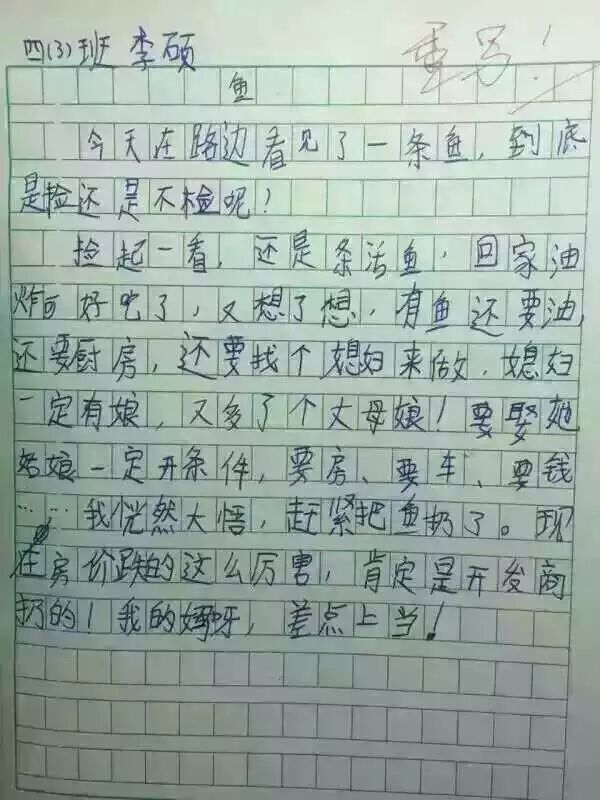
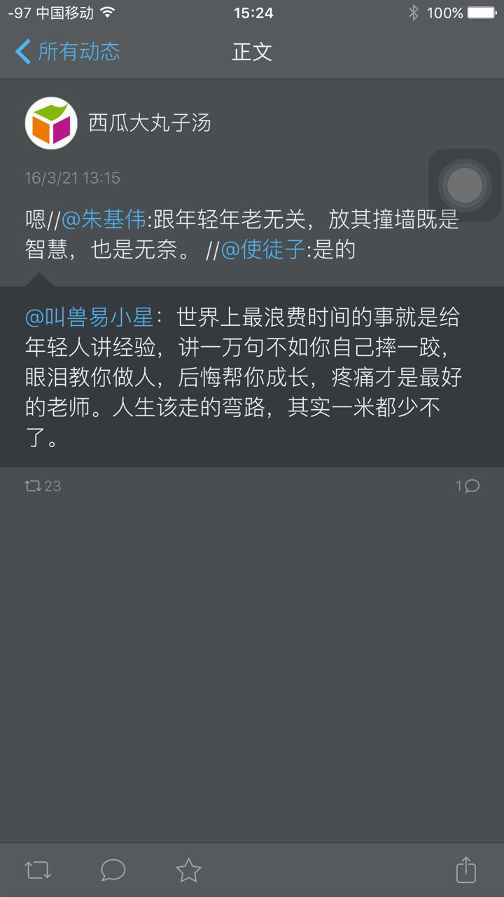
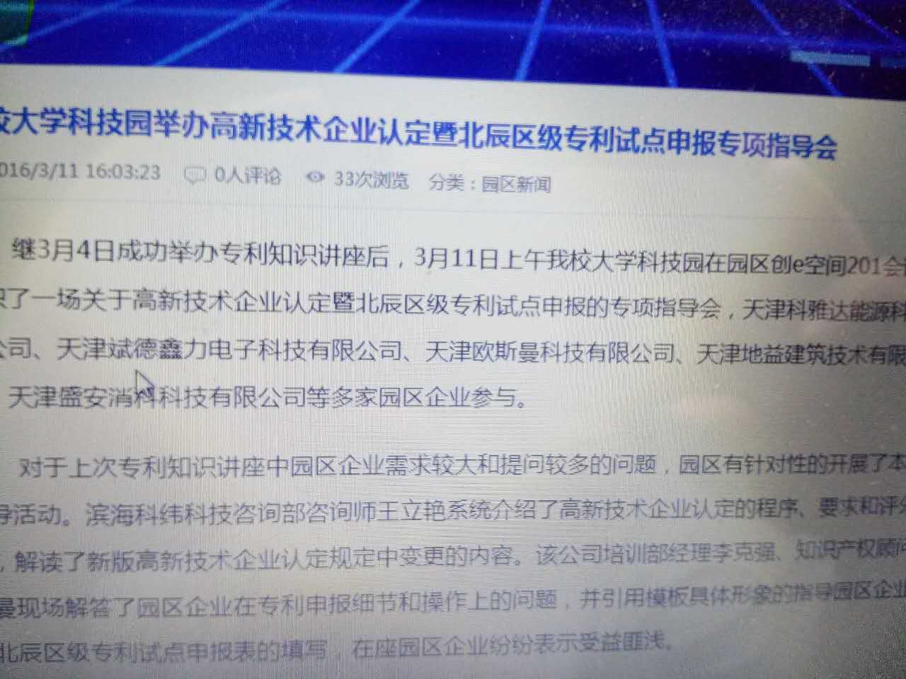
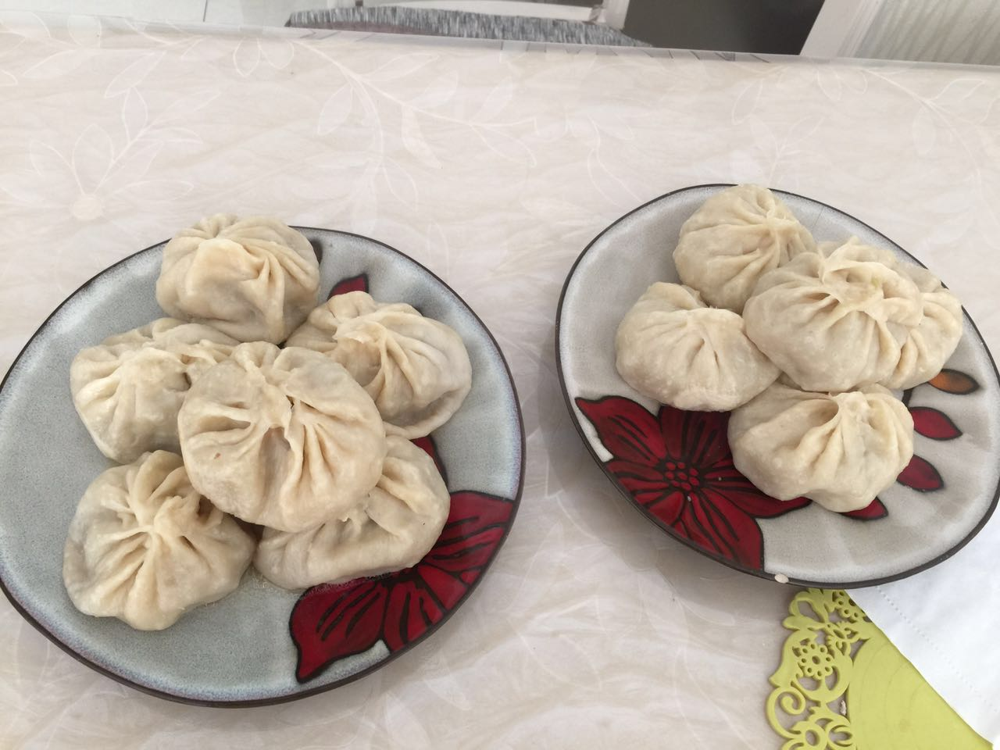
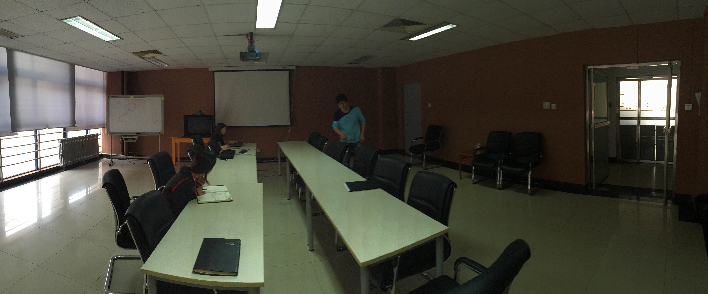

2016-03¶
2016-03-01¶
| 2016-03-01 10:06:12 | 我 | 又开扯皮的会 |
| 2016-03-01 10:06:27 | 你 | 哦 今天还有会吗？ |
| 2016-03-01 10:07:03 | 我 | 正在开，质控的会 |
| 2016-03-01 10:20:45 | 你 | 是例会吗 |
| 2016-03-01 10:21:26 | 我 | 就算吧，开发中心每个月的leader例会 |
| 2016-03-01 10:21:40 | 你 | 哦 每个月一次啊 |
| 2016-03-01 10:22:16 | 我 | 是，刚才耿燕和领导吵起来了 |
| 2016-03-01 10:22:31 | 你 | 哈哈 |
| 2016-03-01 10:24:43 | 我 | 这次领导是真急了 |
| 2016-03-01 10:25:07 | 你 | 咋的了 |
| 2016-03-01 10:25:12 | 你 | 没你啥事吧 |
| 2016-03-01 10:33:04 | 我 | 没有，我一直没说话 |
| 2016-03-01 10:33:19 | 我 | 有一个发版流程 |
| 2016-03-01 10:34:04 | 我 | 耿燕要求销售提供信息，否则不给发版 |
| 2016-03-01 10:34:13 | 我 | 领导一听就急了 |
| 2016-03-01 10:34:28 | 你 | 哦 他俩没啥利益冲突吧 |
| 2016-03-01 10:34:44 | 我 | 说耽误项目进度，崔总责怪下来谁担着 |
| 2016-03-01 10:38:07 | 你 | 恩 |
| 2016-03-01 10:51:28 | 我 | 又吵起来了 |
| 2016-03-01 10:53:33 | 我 | 又把领导逼急了 |
| 2016-03-01 10:56:25 | 你 | 又是他俩啊？ |
| 2016-03-01 10:56:53 | 我 | 对呀，今天耿燕吃药了 |
| 2016-03-01 10:57:02 | 你 | 吃药？ |
| 2016-03-01 10:57:12 | 我 | 吃枪药了 |
| 2016-03-01 10:57:16 | 你 | 吃错药了 |
| 2016-03-01 10:57:17 | 你 | 哈哈 |
| 2016-03-01 11:04:10 | 我 | 耿燕几乎把所有人都得罪了 |
| 2016-03-01 11:04:59 | 你 | 算了 对事不对人 |
| 2016-03-01 11:05:04 | 你 | 过去就王珂 |
| 2016-03-01 11:05:07 | 你 | 忘了 |
| 2016-03-01 11:06:07 | 我 | 不是 |
| 2016-03-01 11:06:17 | 你 | 咋的了 |
| 2016-03-01 11:06:21 | 我 | 恰好是她的为人导致的问题 |
| 2016-03-01 11:06:30 | 你 | 她今咋的了 |
| 2016-03-01 11:06:33 | 你 | 什么意思 |
| 2016-03-01 11:06:38 | 你 | 都谁参加了 |
| 2016-03-01 11:06:45 | 你 | 就你们几个呗 |
| 2016-03-01 11:06:53 | 我 | 她和谁都争 |
| 2016-03-01 11:07:02 | 我 | 不管自己对不对 |
| 2016-03-01 11:07:09 | 你 | 哈哈 |
| 2016-03-01 11:07:10 | 我 | 都有点不讲理了 |
| 2016-03-01 11:07:15 | 你 | 是啊 |
| 2016-03-01 11:07:42 | 我 | 领导已经给她解释了好几遍说现在暂时做不到，她还不依不饶 |
| 2016-03-01 11:08:39 | 我 | 领导说拍板就这样，她都不干 |
| 2016-03-01 11:08:46 | 你 | 啊？ |
| 2016-03-01 11:08:47 | 你 | 真的啊 |
| 2016-03-01 11:08:52 | 你 | 我晕 |
| 2016-03-01 11:08:57 | 我 | 是 |
| 2016-03-01 11:09:55 | 你 | 那就不应该了 |
| 2016-03-01 11:10:09 | 你 | 即使 是原则也得因地制宜啊 |
| 2016-03-01 11:10:38 | 我 | 唉 |
| 2016-03-01 11:10:56 | 我 | 和她沟通难就是因为这个 |
| 2016-03-01 11:11:22 | 你 | 哈哈 |
| 2016-03-01 11:11:37 | 我 | 你还记得上次我和她拍桌子吗 |
| 2016-03-01 11:11:50 | 我 | 就是她这种态度把我逼急了 |
| 2016-03-01 11:12:40 | 你 | 当然记得 |
| 2016-03-01 11:12:55 | 你 | 这次给领导也来一发 |
| 2016-03-01 11:13:04 | 你 | 你们好好收着吧 |
| 2016-03-01 11:13:05 | 你 | 哈哈 |
| 2016-03-01 11:18:42 | 我 | 感觉她好像是让大家都听她的 |
| 2016-03-01 11:19:04 | 我 | 包括领导在内 |
| 2016-03-01 11:19:16 | 你 | 谁知道他怎么想的 |
| 2016-03-01 11:19:39 | 我 | 要是领导和她的想法不同，她就会晒脸色 |
| 2016-03-01 11:36:40 | 你 | 吃饭来了 |
| 2016-03-01 11:36:56 | 我 | 好的 |
| 2016-03-01 11:37:06 | 我 | 我们还没开完呢 |
| 2016-03-01 13:21:12 | 我 | 你睡觉了吗 |
| 2016-03-01 13:21:34 | 你 | 睡了 |
| 2016-03-01 13:22:05 | 我 | 好的 |
| 2016-03-01 13:23:21 | 你 | 你怎么最近老抽烟呢？ |
| 2016-03-01 13:24:06 | 我 | 没有呀 |
| 2016-03-01 13:24:19 | 我 | 上周就两次 |
| 2016-03-01 13:24:25 | 你 | 以为你抽烟去了 |
| 2016-03-01 13:25:54 | 我 | 没有，我抽烟一定喊着别人 |
| 2016-03-01 13:28:46 | 我 | 今天领导不去打球了 |
| 2016-03-01 13:29:00 | 你 | 哦 好 |
| 2016-03-01 13:29:03 | 你 | 不去拉倒 |
| 2016-03-01 13:29:10 | 你 | 那我就不问他了 |
| 2016-03-01 13:29:50 | 我 | 你可以问呀 |
| 2016-03-01 13:29:59 | 你 | 我不想问 |
| 2016-03-01 13:30:10 | 我 | 中午吃饭的时候我问的 |
| 2016-03-01 13:30:19 | 我 | 宋文彬去打球吗 |
| 2016-03-01 13:30:21 | 你 | 哦 那我问吧 |
| 2016-03-01 13:30:31 | 你 | 不然显得你告诉我似得 |
| 2016-03-01 13:30:36 | 我 | 是 |
| 2016-03-01 13:30:45 | 你 | 不知道呢 他没说 |
| 2016-03-01 13:31:07 | 你 | 他说为啥不去了吗？没时间啊 |
| 2016-03-01 13:31:33 | 我 | 说了，我忘了 |
| 2016-03-01 13:31:59 | 你 | 哈哈 |
| 2016-03-01 13:32:06 | 你 | 好吧 无所谓爱去不去 |
| 2016-03-01 13:32:09 | 你 | 他不去更好 |
| 2016-03-01 13:32:19 | 我 | 为啥 |
| 2016-03-01 13:32:37 | 你 | 省的还得照顾他 |
| 2016-03-01 13:32:39 | 我 | 感觉你像小孩子闹性子了 |
| 2016-03-01 13:32:52 | 你 | 没有 你理解错了 |
| 2016-03-01 13:33:27 | 我 | 没事，闹性子我也哄着你 |
| 2016-03-01 13:33:47 | 你 | 主要我没闹 他不去我们爱咋打咋打 |
| 2016-03-01 13:33:56 | 你 | 他去了还得照顾他能不能打好 |
| 2016-03-01 13:34:03 | 你 | 你去了也一样 |
| 2016-03-01 13:34:13 | 你 | 所以不喜欢跟领导玩 哈 |
| 2016-03-01 13:34:24 | 你 | 当然有很好玩的时候 |
| 2016-03-01 13:34:26 | 我 | 哦[委屈] |
| 2016-03-01 13:34:41 | 你 | 不过大多数我都得照顾着 虽然你们没感觉 |
| 2016-03-01 13:34:49 | 你 | 哈哈 我强迫症 |
| 2016-03-01 13:34:52 | 我 | 原来你是这么看我的 |
| 2016-03-01 13:35:11 | 我 | 算了，以后我不去打球了[右哼哼] |
| 2016-03-01 13:35:24 | 你 | 得嘞 我省心了 |
| 2016-03-01 13:35:28 | 你 | 哈哈 |
| 2016-03-01 13:35:46 | 你 | 我就是随便说说 你还当真了 |
| 2016-03-01 13:36:13 | 你 | 如果你跟我们很多人去 自然是得照顾着点了 |
| 2016-03-01 13:36:18 | 你 | 你应该能理解吧 |
| 2016-03-01 13:36:49 | 我 | [坏笑]我知道 |
| 2016-03-01 13:37:53 | 你 | [回头] |
| 2016-03-01 13:38:24 | 我 | 讲课你准备了吗 |
| 2016-03-01 13:38:33 | 你 | 没呢 |
| 2016-03-01 13:38:37 | 你 | 不着急吧 |
| 2016-03-01 13:38:59 | 我 | 你自己安排就好 |
| 2016-03-01 13:40:02 | 你 | 没事 讲PPT是我的强项 |
| 2016-03-01 14:00:42 | 我 | 好 |
| 2016-03-01 14:50:11 | 你 | 特别想发火 |
| 2016-03-01 14:50:39 | 我 | 怎么啦 |
| 2016-03-01 14:51:10 | 你 | 调研vertica的事务 乱七八糟的 理不出来 |
| 2016-03-01 14:52:03 | 我 | 哦 |
| 2016-03-01 14:52:14 | 我 | 我倒是可以帮你 |
| 2016-03-01 14:52:48 | 你 | 你怎么帮我啊 |
| 2016-03-01 14:54:17 | 我 | 不知道 |
| 2016-03-01 14:54:33 | 我 | 这个东西我得和你面谈 |
| 2016-03-01 14:54:52 | 你 | 哦 |
| 2016-03-01 14:55:27 | 我 | 事务是数据库里面最复杂的 |
| 2016-03-01 14:56:25 | 你 | 是啊 好乱 测试的结果还对不上 |
| 2016-03-01 14:56:28 | 你 | 气死我了 |
| 2016-03-01 15:01:25 | 我 | 你先整理一下 |
| 2016-03-01 15:01:47 | 我 | 其实不难，就是里面有几个维度 |
| 2016-03-01 15:09:55 | 我 | 我待会去王志那，你正好可以喊住我问我 |
| 2016-03-01 15:10:26 | 你 | 好 |
| 2016-03-01 15:56:22 | 你 | 多谢！ |
| 2016-03-01 16:06:00 | 我 | 是不是不生气了 |
| 2016-03-01 16:08:09 | 你 | 嗯，不生了 |
| 2016-03-01 16:08:21 | 你 | 我发现跟你说话我还是会紧张 |
| 2016-03-01 16:08:24 | 你 | 我晕 |
| 2016-03-01 16:10:23 | 我 | 是 |
| 2016-03-01 16:10:35 | 我 | 特别是技术问题 |
| 2016-03-01 16:11:11 | 我 | 是不是因为你太久没和我说有关系 |
| 2016-03-01 16:12:33 | 你 | 不知道 |
| 2016-03-01 16:13:06 | 我 | 以后还是经常找机会聊吧 |
| 2016-03-01 16:13:48 | 你 | 嗯，好 |
| 2016-03-01 16:14:09 | 我 | 你的右手无名指第三指节背有个红点，是破了吗 |
| 2016-03-01 16:14:46 | 你 | 没有 |
| 2016-03-01 16:14:49 | 你 | 出的 |
| 2016-03-01 16:15:18 | 你 | 右手大拇指和二拇指之间也有个 |
| 2016-03-01 16:15:31 | 我 | 哦 |
| 2016-03-01 19:45:47 | 你 | 你走了啊 |
| 2016-03-01 19:46:12 | 我 | 刚走，看见你了 |
| 2016-03-01 19:48:07 | 你 | 在哪看见的 |
| 2016-03-01 19:48:40 | 我 | 你们刚下车 |
| 2016-03-01 19:48:47 | 我 | 我坐旭明的车 |
| 2016-03-01 19:49:20 | 你 | 哦，好吧 |
| 2016-03-01 19:50:36 | 你 | 我大姑家的姐和姐夫的老姨都查出乳腺癌了，都是中晚期 |
| 2016-03-01 19:50:50 | 我 | 啊 |
| 2016-03-01 19:51:35 | 你 | 真是的 |
| 2016-03-01 19:52:17 | 我 | 和环境有关吧 |
| 2016-03-01 19:52:52 | 你 | 不知道，就是身边的人得大病有点恍惚 |
| 2016-03-01 19:53:07 | 我 | 应该问题不大 |
| 2016-03-01 19:53:18 | 你 | 周六那天我给我四姑打电话，她呜呜的跟我哭半天 |
| 2016-03-01 19:53:21 | 你 | 吓坏我了 |
| 2016-03-01 19:53:28 | 我 | 按方案治疗 |
| 2016-03-01 19:53:45 | 你 | 嗯， |
| 2016-03-01 19:54:11 | 你 | 先治呗，比别的还好呢 |
| 2016-03-01 19:54:19 | 我 | 是 |
| 2016-03-01 20:17:21 | 你 | 到家了，不说了 |
2016-03-02¶
| 2016-03-02 09:08:36 | 你 | [动画表情] |
| 2016-03-02 09:08:53 | 我 | 早 |
| 2016-03-02 09:49:52 | 我 | 今天田说让月会讲调研，就是你准备的 |
| 2016-03-02 09:50:00 | 我 | 领导不让讲 |
| 2016-03-02 09:50:16 | 你 | 哦 是吗？ |
| 2016-03-02 09:50:20 | 你 | 为啥？ |
| 2016-03-02 09:50:27 | 我 | 说这个只是需求了解就可以了 |
| 2016-03-02 09:50:40 | 你 | 那更好了 |
| 2016-03-02 09:50:47 | 我 | 研发不需要，重点还是自己的产品 |
| 2016-03-02 09:50:53 | 你 | 是 |
| 2016-03-02 10:27:01 | 你 | 他们最后定了吗？讲不讲 不讲我就不写PPT了 |
| 2016-03-02 10:36:14 | 我 | 你问问洪越吧 |
| 2016-03-02 10:36:33 | 你 | 我等他跟我说吧 不问了 |
| 2016-03-02 11:44:53 | 我 | 你今天是带饭还是买饭？ |
| 2016-03-02 11:52:53 | 你 | 带饭了 |
| 2016-03-02 11:53:00 | 你 | 为啥脑袋累啊 |
| 2016-03-02 11:53:12 | 我 | 你怎么啦 |
| 2016-03-02 11:53:27 | 你 | 你说你脑袋累 |
| 2016-03-02 11:54:08 | 我 | 干活干的 |
| 2016-03-02 11:54:46 | 你 | 哦， |
| 2016-03-02 11:54:48 | 你 | 好吧 |
| 2016-03-02 11:55:21 | 我 | 早上来了就一直在干，不太顺 |
| 2016-03-02 11:55:40 | 我 | 脑子就没停 |
| 2016-03-02 11:56:01 | 我 | 吃饭前总算有点眉目了 |
| 2016-03-02 11:59:16 | 你 | 看你挺忙的 |
| 2016-03-02 11:59:22 | 你 | 连句话都没说 |
| 2016-03-02 12:11:11 | 我 | 是 |
| 2016-03-02 12:11:26 | 我 | 现在我是瓶颈 |
| 2016-03-02 13:21:50 | 我 | 醒了？ |
| 2016-03-02 13:22:59 | 你 | 恩 |
| 2016-03-02 13:23:02 | 你 | 你睡觉了吗 |
| 2016-03-02 13:23:20 | 我 | 没有 |
| 2016-03-02 13:23:27 | 我 | 中午干活呢 |
| 2016-03-02 13:24:48 | 你 | 这么用功 |
| 2016-03-02 13:25:02 | 我 | 没办法，我耽误进度了 |
| 2016-03-02 13:44:35 | 我 | 忘了问你，傲骨贤妻都能找到字幕吗 |
| 2016-03-02 13:48:08 | 你 |  |
| 2016-03-02 13:48:21 | 你 | 休息休息脑子 |
| 2016-03-02 13:48:39 | 我 | 哈哈 |
| 2016-03-02 13:49:34 | 你 | 好不好玩 |
| 2016-03-02 13:49:48 | 我 | 好玩 |
| 2016-03-02 13:52:40 | 我 | 你还没回答我的问题呢 |
| 2016-03-02 13:52:50 | 你 | 哦 有字幕 |
| 2016-03-02 13:53:08 | 你 | 我现在看的这些都有 |
| 2016-03-02 13:53:12 | 我 | 好的 |
| 2016-03-02 14:10:53 | 我 | 你那盆花很讨厌 |
| 2016-03-02 14:11:04 | 你 | 为啥 |
| 2016-03-02 14:11:06 | 我 | 正好挡住我看你 |
| 2016-03-02 14:11:11 | 你 | 哈哈 |
| 2016-03-02 14:11:13 | 你 | 是 |
| 2016-03-02 14:11:48 | 你 | 我还想把耷拉下来的叉都绑上去呢 |
| 2016-03-02 14:12:23 | 我 | 那更完了 |
| 2016-03-02 14:12:39 | 你 | 哈哈 |
| 2016-03-02 14:17:54 | 我 | 你干啥呢 |
| 2016-03-02 14:18:05 | 你 | 看事务呢 |
| 2016-03-02 14:18:33 | 你 | 拿到读锁的话 允许其他事务写吗？ |
| 2016-03-02 14:18:51 | 我 | 应该不允许 |
| 2016-03-02 14:19:13 | 你 | 写锁和读锁哪个更高级 |
| 2016-03-02 14:19:17 | 你 | 读锁吧 |
| 2016-03-02 14:19:26 | 你 | 都不让读了 怎么会让写呢 |
| 2016-03-02 14:19:34 | 我 | 不是 |
| 2016-03-02 14:19:35 | 你 | 不让写的话至少可以读啊 |
| 2016-03-02 14:19:37 | 你 | 啊 |
| 2016-03-02 14:20:18 | 我 | 你想错了 |
| 2016-03-02 14:20:50 | 我 | 你想想，如果写数据的时候有人读，会读到什么？ |
| 2016-03-02 14:21:19 | 我 | 一半写前的数据和一半写后的数据，这是不对的 |
| 2016-03-02 14:21:39 | 我 | 所以写锁是互斥的 |
| 2016-03-02 14:21:40 | 你 | 是 然后得上锁啊 |
| 2016-03-02 14:21:43 | 你 | 上的啥锁 |
| 2016-03-02 14:22:05 | 我 | 写数据上写锁，读数据上读锁 |
| 2016-03-02 14:22:24 | 我 | 读数据可以并发，所以读锁可以并发 |
| 2016-03-02 14:22:43 | 我 | 写写之间互斥，写读之间互斥 |
| 2016-03-02 14:22:50 | 我 | 读读之间不互斥 |
| 2016-03-02 14:23:36 | 我 | 写锁的优先级比读锁高 |
| 2016-03-02 14:23:40 | 我 | 明白了吗 |
| 2016-03-02 14:23:45 | 你 | 没有 |
| 2016-03-02 14:24:06 | 我 | 哦，被你打败了 |
| 2016-03-02 14:24:20 | 你 | 人家真的没懂 |
| 2016-03-02 14:24:25 | 你 | 等我琢磨下 |
| 2016-03-02 14:25:24 | 我 | 锁是阻止别人干活 |
| 2016-03-02 14:25:50 | 我 | 拿了写锁，别人都不能干活，包括读、写 |
| 2016-03-02 14:26:20 | 你 | 那拿了读锁呢？ |
| 2016-03-02 14:26:21 | 我 | 拿了读锁，其他人读可以干活，其他人写不能干活 |
| 2016-03-02 14:26:35 | 你 | 这样说一下子明白了 |
| 2016-03-02 14:27:03 | 你 | 什么时候拿写锁什么时候拿读锁跟操作有关吧 |
| 2016-03-02 14:27:16 | 你 | DML拿写锁 DQL拿读锁 |
| 2016-03-02 14:28:22 | 我 | 对 |
| 2016-03-02 14:38:24 | 你 | 序列化隔离级别的时候 什么情况下发生死锁啊 |
| 2016-03-02 14:38:47 | 我 | 这个说起来就复杂了 |
| 2016-03-02 14:38:59 | 我 | 和具体的实现有关 |
| 2016-03-02 14:39:00 | 你 | 随便说一种情况 |
| 2016-03-02 14:39:03 | 你 | 哦 |
| 2016-03-02 14:39:10 | 你 | 我百度下吧 |
| 2016-03-02 14:39:16 | 我 | 好 |
| 2016-03-02 15:40:30 | 我 | 你刚才笑什么 |
| 2016-03-02 15:40:56 | 你 | 搞明白点事 |
| 2016-03-02 15:41:05 | 你 | 关于事务的 |
| 2016-03-02 15:41:09 | 我 | 好的 |
| 2016-03-02 15:41:22 | 我 | 事务最难的是隔离度 |
| 2016-03-02 15:41:49 | 你 | 恩 |
| 2016-03-02 15:42:07 | 我 | 我总算提交了 |
| 2016-03-02 15:42:14 | 我 | 头晕死了 |
| 2016-03-02 15:42:15 | 你 | 哈哈 |
| 2016-03-02 15:42:20 | 你 | 快歇会 |
| 2016-03-02 15:42:30 | 我 | 嗯 |
| 2016-03-02 15:56:13 | 我 | 对不起，又抽烟了，洪越喊我的[委屈] |
| 2016-03-02 15:56:25 | 我 | 真的不怨我 |
| 2016-03-02 15:56:31 | 你 | 不务正业 |
| 2016-03-02 15:56:36 | 我 | 是 |
| 2016-03-02 15:56:44 | 我 | 虚心接受批评 |
| 2016-03-02 15:56:55 | 你 | 你以前要是不抽 人家洪越会叫你吗？ |
| 2016-03-02 15:57:14 | 我 | 是，你批评的对 |
| 2016-03-02 15:59:14 | 你 | 态度不错 |
| 2016-03-02 16:12:55 | 我 | 我过来看你，你怎么跑了 |
| 2016-03-02 16:13:55 | 你 | 上厕所不让啊 |
| 2016-03-02 16:14:03 | 你 | 我总不能憋着吧 |
| 2016-03-02 16:14:05 | 你 | 哈哈 |
| 2016-03-02 16:14:13 | 我 | 让让让 |
| 2016-03-02 16:30:47 | 我 | 你看 |
| 2016-03-02 16:30:55 | 你 | 看啥 |
| 2016-03-02 16:31:01 | 我 | 看你一次就解决一个问题 |
| 2016-03-02 16:31:07 | 我 | 效率多高 |
| 2016-03-02 16:33:31 | 你 | 是 |
| 2016-03-02 16:34:58 | 我 | 所以以后得多去看你 |
| 2016-03-02 16:35:11 | 你 | 随你吧 |
| 2016-03-02 16:35:18 | 你 | 事务这我还有问题呢 |
| 2016-03-02 16:35:23 | 我 | 哦 |
| 2016-03-02 16:35:30 | 我 | 说吧 |
| 2016-03-02 16:36:04 | 你 | 隔离级别是session级的 如果两个session的隔离级别不同，那出现并发的话怎么办？ |
| 2016-03-02 16:38:47 | 我 | 按照自己的的隔离级别 |
| 2016-03-02 17:22:32 | 你 | 洪越看到我问你问题还不吓死 |
| 2016-03-02 17:24:31 | 我 | 哈哈 |
| 2016-03-02 17:32:49 | 我 | 你好点不 |
| 2016-03-02 17:33:55 | 你 | 指什么 |
| 2016-03-02 17:34:10 | 我 | 脑子呀 |
| 2016-03-02 17:34:18 | 你 | 没事啊 |
| 2016-03-02 17:34:29 | 你 | 还在琢磨 |
| 2016-03-02 17:34:36 | 我 | 你刚才不是说脑子累了吗 |
| 2016-03-02 17:34:37 | 你 | 哈哈 别嘲笑我啊 |
| 2016-03-02 17:34:40 | 你 | 是 |
| 2016-03-02 17:34:51 | 我 | 先歇会吧 |
| 2016-03-02 17:35:37 | 我 | 你现在知道我当初为什么要训练你抽象和逻辑了吧 |
| 2016-03-02 17:36:16 | 你 | 我早知道了 |
| 2016-03-02 17:36:51 | 我 | 这个没有游戏好玩吧 |
| 2016-03-02 17:37:02 | 我 | 虽然游戏更累 |
| 2016-03-02 17:37:11 | 你 | 都挺好玩的 |
| 2016-03-02 17:39:40 | 我 | 好的 |
| 2016-03-02 17:39:50 | 我 | 其实还有更好玩的 |
| 2016-03-02 17:40:04 | 我 | 你有空回去看看系统化思维 |
| 2016-03-02 17:40:10 | 你 | 恩 好 |
| 2016-03-02 17:40:14 | 我 | 里面的东西更好玩 |
| 2016-03-02 17:40:37 | 我 | 我平时的思维就是那本书里的水平 |
| 2016-03-02 17:41:00 | 你 | 那书我都看不懂 |
| 2016-03-02 17:41:19 | 你 | 我试着看 |
| 2016-03-02 17:41:46 | 我 | 不如我今天给你讲的书里的例子 |
| 2016-03-02 17:46:06 | 我 | 就是把书里的例子和现实里面结合 |
| 2016-03-02 17:46:20 | 我 | 书里的东西都是高度抽象的 |
| 2016-03-02 17:46:30 | 你 | 等会 |
{kind=link}
2016-03-03¶
| 2016-03-03 10:27:01 | 你 | 这下成验证她的模型了，问了半天也没说模型的事 |
| 2016-03-03 10:27:36 | 你 | 还说模型不全啥的呢 |
| 2016-03-03 10:27:39 | 我 | 是 |
| 2016-03-03 10:31:37 | 你 | 终于提到数据的维度了 |
| 2016-03-03 10:31:56 | 我 | 他的思维方式和咱们不一样 |
| 2016-03-03 10:32:02 | 你 | 感觉你一直想推进，把步骤落地，她老是说细节 |
| 2016-03-03 10:32:26 | 我 | 他不了解咱们，也不想了解 |
| 2016-03-03 10:33:18 | 你 | 诚意不够 |
| 2016-03-03 10:34:03 | 我 | 是 |
| 2016-03-03 10:39:15 | 你 | 说的都是屁话 |
| 2016-03-03 10:39:29 | 我 | 是 |
| 2016-03-03 10:39:30 | 你 | 老人家洪越的高度 |
| 2016-03-03 10:47:50 | 你 | 质量是否提升的标志性指标 |
| 2016-03-03 10:48:03 | 你 | Cool诶 |
| 2016-03-03 10:55:26 | 我 | ？ |
| 2016-03-03 10:55:48 | 我 | 什么意思？ |
| 2016-03-03 10:59:25 | 你 | 没事 刚才阿娇都说 觉得一个问题老王问了4、5次 侯老师都没给出正面回答 |
| 2016-03-03 10:59:59 | 我 | 老师就是这样 |
| 2016-03-03 11:00:27 | 我 | 一个原因是两边的信任没有完全建立起来 |
| 2016-03-03 11:00:59 | 我 | 另一个原因是他们和咱们的环境不一样，思维方式不一样 |
| 2016-03-03 11:05:29 | 你 | 哦 |
| 2016-03-03 11:45:02 | 你 | 你看我胖吗 |
| 2016-03-03 11:45:22 | 我 | 不胖呀 |
| 2016-03-03 11:45:29 | 我 | 谁说你胖 |
| 2016-03-03 11:47:36 | 你 | 就是问问 |
| 2016-03-03 11:50:56 | 我 | 哦，我觉得一定是有人说你了 |
| 2016-03-03 13:19:54 | 我 | 醒了 |
| 2016-03-03 13:24:21 | 你 | 恩 |
| 2016-03-03 13:24:28 | 你 | 基本没睡 |
| 2016-03-03 13:24:36 | 你 | 我姐中午打个电话 |
| 2016-03-03 13:24:52 | 我 | 哦 |
| 2016-03-03 13:34:27 | 我 | 今天上午我说的你能听懂吗 |
| 2016-03-03 13:35:03 | 你 | 能 基本都能 |
| 2016-03-03 13:36:23 | 我 | 不错 |
| 2016-03-03 13:51:32 | 我 | 今天困死我了 |
| 2016-03-03 13:51:49 | 你 | 喝咖啡 |
| 2016-03-03 13:51:53 | 我 | 我昨天9点才走，1点才睡 |
| 2016-03-03 13:52:01 | 我 | 正在喝咖啡 |
| 2016-03-03 13:52:09 | 你 | 你怎么走那么晚啊 |
| 2016-03-03 13:53:54 | 我 | 昨天我训他们了 |
| 2016-03-03 13:54:00 | 你 | 为什么 |
| 2016-03-03 13:54:09 | 我 | 先训的旭明，后训的东海他们 |
| 2016-03-03 13:55:33 | 我 | 简单说现在出现的问题我当初都提醒过他们 |
| 2016-03-03 13:56:11 | 我 | 如果当初他们都做了，现在就不会惹出这么多事情 |
| 2016-03-03 13:56:55 | 我 | 昨天老杨因为现场问题气的直接去训王旭了 |
| 2016-03-03 13:57:14 | 我 | 现场已经投诉好几次了 |
| 2016-03-03 13:57:31 | 我 | 还有就是 sequence |
| 2016-03-03 13:57:32 | 你 | 这么严重啊 |
| 2016-03-03 13:57:37 | 我 | 是 |
| 2016-03-03 13:57:46 | 我 | 这次 sequence 可能会出大事 |
| 2016-03-03 13:57:51 | 你 | 为啥 |
| 2016-03-03 13:58:09 | 你 | 训王旭是因为什么 |
| 2016-03-03 13:58:30 | 我 | 王旭是替旭明挨训的 |
| 2016-03-03 13:58:58 | 我 | 银监会的问题王旭跟进的，现在让人家投诉了 |
| 2016-03-03 13:59:05 | 我 | 其实王旭只看了一天 |
| 2016-03-03 13:59:15 | 我 | 是小白和旭明给耽误了 |
| 2016-03-03 13:59:56 | 你 | 哦 |
| 2016-03-03 14:00:06 | 我 | 但是这事没办法，领导的火总得发出来，王旭就背黑锅了 |
| 2016-03-03 14:00:11 | 你 | 老杨没怪你吧 |
| 2016-03-03 14:00:16 | 我 | 今天王旭还出差 |
| 2016-03-03 14:00:24 | 你 | 是 |
| 2016-03-03 14:00:26 | 我 | 口头上没说 |
| 2016-03-03 14:01:49 | 你 | 嗯， |
| 2016-03-03 14:02:07 | 你 | 那问题是什么 |
| 2016-03-03 14:02:16 | 你 | 工作态度？积极性？ |
| 2016-03-03 14:02:31 | 我 | 一言难尽 |
| 2016-03-03 14:03:11 | 我 | 我们这边主要问题就是11.5的代码没人看 |
| 2016-03-03 14:03:25 | 我 | 这是我年前就安排的任务 |
| 2016-03-03 14:04:22 | 我 | 如果按照我的安排进行，至少我们不会这么被动 |
| 2016-03-03 14:04:40 | 我 | 东海他们也是一样 |
| 2016-03-03 14:04:44 | 你 | 是 |
| 2016-03-03 14:04:53 | 我 | 我早就安排的工作他们一直没做 |
| 2016-03-03 14:05:12 | 我 | 现在不到两周的时间送测 |
| 2016-03-03 14:05:21 | 你 | 你当初安排任务的时候应该明确人和时间 |
| 2016-03-03 14:05:30 | 我 | 还有一大堆遗留问题 |
| 2016-03-03 14:05:31 | 你 | 我晕 |
| 2016-03-03 14:05:40 | 你 | 这么多事 |
| 2016-03-03 14:06:03 | 我 | 我早就让他们找你要需求跟踪矩阵 |
| 2016-03-03 14:06:35 | 我 | 到昨天也没人告诉我到底缺多少东西 |
| 2016-03-03 14:06:36 | 你 | 这也没办法，事多人少 |
| 2016-03-03 14:06:44 | 我 | 不对 |
| 2016-03-03 14:07:16 | 你 | 咋不对了 |
| 2016-03-03 14:08:41 | 我 | 事多人少是现状，无法改变 |
| 2016-03-03 14:08:54 | 我 | 但是结果可以不是这样的 |
| 2016-03-03 14:09:17 | 我 | 我们应该把资源投入最重要的事情 |
| 2016-03-03 14:09:26 | 你 | 恩 |
| 2016-03-03 14:09:32 | 我 | 他们现在就是不知道什么是重要的事情 |
| 2016-03-03 14:09:33 | 你 | 那主要问题是什么呢 |
| 2016-03-03 14:09:41 | 你 | 没有全局观吗 |
| 2016-03-03 14:09:44 | 我 | 对 |
| 2016-03-03 14:09:49 | 我 | 我正想这么说 |
| 2016-03-03 14:10:13 | 我 | 你看你都明白的事情，他们就是不懂 |
| 2016-03-03 14:10:19 | 你 | 这是你们组最大的毛病 当然比别的组已经好多了 但是我总是会有这种感觉 |
| 2016-03-03 14:10:35 | 你 | 我是因为没干活 我要是干活了 也只是关注自己那一滩 |
| 2016-03-03 14:10:58 | 你 | 我觉得你们组的层次还不明显 没有替你管事的 |
| 2016-03-03 14:11:10 | 我 | 对呀 |
| 2016-03-03 14:11:12 | 你 | 本来 应该是王志的活吧？ |
| 2016-03-03 14:11:15 | 我 | 不是 |
| 2016-03-03 14:11:16 | 你 | 他是项目管理 |
| 2016-03-03 14:11:23 | 我 | 他技术不行 |
| 2016-03-03 14:11:29 | 你 | 我看每次严丹总是追着你们要东西 |
| 2016-03-03 14:11:34 | 我 | 很多东西他不明白 |
| 2016-03-03 14:11:42 | 你 | 而且没有严格的汇报机制 |
| 2016-03-03 14:11:51 | 你 | 每次都是你跑过来问 |
| 2016-03-03 14:11:56 | 我 | 这个不是机制的问题 |
| 2016-03-03 14:12:12 | 我 | 是他们的意识问题 |
| 2016-03-03 14:12:48 | 你 | 机制也是为了培养意识嘛 |
| 2016-03-03 14:12:53 | 我 | [链接] 抽象的能力 |
| 2016-03-03 14:13:04 | 我 | 你看看这个 |
| 2016-03-03 14:13:11 | 你 | 我们写日报 作用也在总结啊 这是汇报的功能之一 |
| 2016-03-03 14:13:25 | 我 | 这个不对 |
| 2016-03-03 14:13:54 | 我 | 这些东西只能做到事后，现在的问题是要事前 |
| 2016-03-03 14:14:01 | 我 | 这就要求主动 |
| 2016-03-03 14:14:30 | 你 | 你说的对 但跟我说的跟我想的不一样 |
| 2016-03-03 14:16:07 | 你 | 以前我在哪个单位的时候 每天早上上班的路上我就跟大家一起总结下项目进度 说说今天要完成的工作 大家一天都知道干什么 |
| 2016-03-03 14:16:22 | 你 | 你们最起码得有几个项目负责人跟你汇报吧 |
| 2016-03-03 14:16:35 | 你 | 现在没有 |
| 2016-03-03 14:16:37 | 我 | 一直有 |
| 2016-03-03 14:16:52 | 我 | 每天东海和旭明都给我发日报 |
| 2016-03-03 14:17:24 | 你 | 那汇报的问题解决 还会出现你布置的任务 没有完成的情况 |
| 2016-03-03 14:17:47 | 我 | 问题有两个维度，紧急和重要 |
| 2016-03-03 14:17:56 | 我 | 我关注的是重要的事情 |
| 2016-03-03 14:18:04 | 我 | 他们关注的是紧急的事情 |
| 2016-03-03 14:18:07 | 你 | 对 |
| 2016-03-03 14:18:21 | 我 | 这就是他们的意识问题 |
| 2016-03-03 14:18:22 | 你 | 因为不知道哪个重要 |
| 2016-03-03 14:18:30 | 我 | 他们知道 |
| 2016-03-03 14:18:43 | 我 | 他们的关注点是紧急 |
| 2016-03-03 14:18:53 | 你 | 那为什么出问题了 |
| 2016-03-03 14:19:00 | 你 | 你昨天训话的时候怎么说的 |
| 2016-03-03 14:19:11 | 我 | 他们总是在做紧急但不重要的事情 |
| 2016-03-03 14:19:18 | 你 | 下次我也听听 总是偷偷摸摸的训[偷笑] |
| 2016-03-03 14:19:22 | 你 | 哈哈 |
| 2016-03-03 14:19:33 | 你 | 你说他们知道有多少事吗 |
| 2016-03-03 14:19:46 | 你 | 会按照事情的两个维度排序吗？ |
| 2016-03-03 14:19:48 | 我 | 结果就把重要不紧急的事情变成了重要紧急的事情 |
| 2016-03-03 14:19:55 | 我 | 不会呀 |
| 2016-03-03 14:19:58 | 你 | 这个我明白 |
| 2016-03-03 14:20:04 | 你 | 听你说过 |
| 2016-03-03 14:20:05 | 我 | 他们要是会就不这样了 |
| 2016-03-03 14:20:10 | 你 | 那就是缺了这一步 |
| 2016-03-03 14:20:13 | 你 | 对吗 |
| 2016-03-03 14:20:25 | 我 | 是没有这个意识 |
| 2016-03-03 14:20:26 | 你 | 那问题就在这了 |
| 2016-03-03 14:20:37 | 你 | 紧急重要的意识总该有吧 |
| 2016-03-03 14:20:46 | 你 | 你不经常教他们么 |
| 2016-03-03 14:21:07 | 我 | 没有呀 |
| 2016-03-03 14:21:17 | 我 | 他们要是都像你就好了 |
| 2016-03-03 14:21:40 | 你 | 或者事情太多 排不过来？ |
| 2016-03-03 14:22:10 | 你 | 那每天把自己手头的负责的这些事过一遍 排个序 一天就按照这个顺序做就行呗 |
| 2016-03-03 14:22:30 | 你 | 而且每天晚上睡觉前总得想想明天得事吧 |
| 2016-03-03 14:22:32 | 你 | 哈哈 |
| 2016-03-03 14:22:44 | 你 | 可能旭明每天就是想着吃的睡着的 |
| 2016-03-03 14:22:52 | 我 | 过一遍也需要有意识 |
| 2016-03-03 14:23:09 | 你 | 恩 连过都不过 真厉害 |
| 2016-03-03 14:23:54 | 你 | 你看东海每天周四下午 过来提醒大家交周报 真是又萌又笨 我一辈子也不会干这件事 |
| 2016-03-03 14:24:10 | 我 | 是 |
| 2016-03-03 14:27:20 | 你 | 昨天看电视了 |
| 2016-03-03 14:27:42 | 你 | 国家推出反家庭暴力法 |
| 2016-03-03 14:27:43 | 我 | 看的什么 |
| 2016-03-03 14:28:01 | 你 | 电视讲了这个法律推出的过程 |
| 2016-03-03 14:28:02 | 我 | 知道 |
| 2016-03-03 14:28:07 | 你 | 特别好看 |
| 2016-03-03 14:28:25 | 你 | 就是内容挺好的 挺值得思考 |
| 2016-03-03 14:29:21 | 我 | 都说什么了 |
| 2016-03-03 14:30:00 | 你 | 反正我知道了很多知识 |
| 2016-03-03 14:30:09 | 我 | 哦 |
| 2016-03-03 14:30:22 | 你 | 还有些高层次的东西 |
| 2016-03-03 14:30:44 | 你 | 脑子里大致有个感觉 我总结总结 |
| 2016-03-03 14:34:08 | 我 | 好的，你写下来吧 |
| 2016-03-03 14:54:31 | 你 | 月会的PPT写完了 |
| 2016-03-03 14:54:41 | 我 | 好的 |
| 2016-03-03 14:54:55 | 我 | 那你就发给洪越吧 |
| 2016-03-03 14:59:03 | 你 | 我明天再发 我今天晚上自己练一遍 |
| 2016-03-03 14:59:13 | 我 | 好的 |
| 2016-03-03 18:30:50 | 我 | 今天太忙了 |
| 2016-03-03 18:30:58 | 你 | 是 |
| 2016-03-03 18:31:09 | 我 | 连过来看你的时间都没有 |
| 2016-03-03 18:31:12 | 你 | 我逛TGW的贴吧呢 |
| 2016-03-03 18:33:22 | 你 | 看到了很多剧情 |
| 2016-03-03 18:33:40 | 我 | 哈哈，被剧透了 |
| 2016-03-03 18:38:36 | 我 | 你几点走 |
| 2016-03-03 18:40:36 | 你 | 我老公来接我 |
| 2016-03-03 18:40:40 | 你 | 他今天用车 |
| 2016-03-03 18:40:47 | 你 | 不过今天会很晚 |
| 2016-03-03 18:40:52 | 我 | 啊 |
| 2016-03-03 18:40:53 | 你 | 估计得八点了 |
| 2016-03-03 18:40:57 | 我 | 这么晚 |
| 2016-03-03 18:41:12 | 你 | 因为他把车钥匙和屋的钥匙都锁屋子里了 |
| 2016-03-03 18:41:23 | 你 | 去趟天津站我弟弟那拿钥匙 |
| 2016-03-03 18:41:27 | 我 | 哦 |
| 2016-03-03 18:46:54 | 你 | will在第五季死了？？？？？？？ |
| 2016-03-03 18:47:10 | 我 | 是 |
| 2016-03-03 18:48:03 | 你 | 现在也很喜欢Dannie |
| 2016-03-03 18:48:17 | 你 | Diane |
| 2016-03-03 18:48:40 | 我 | 为什么 |
| 2016-03-03 19:32:11 | 我 | 我是过去看你的 |
| 2016-03-03 19:32:29 | 你 | 哦 |
| 2016-03-03 19:46:45 | 你 | 干嘛，看你的表情，又没看到光头失望了吧 |
| 2016-03-03 19:47:32 | 我 | 我以为你走了 |
2016-03-04¶
| 2016-03-04 11:03:29 | 我 | 今天你找老毛问的什么 |
| 2016-03-04 11:03:58 | 你 | 昨天讲的 |
| 2016-03-04 11:06:06 | 我 | 哦 |
| 2016-03-04 11:40:44 | 我 | 别理他，他就是一个神经病 |
| 2016-03-04 11:53:12 | 你 | 嗯，不理他 |
| 2016-03-04 11:53:45 | 你 | 他是太想跟我说话了，又找不到话题 |
| 2016-03-04 11:54:11 | 我 | 哦，为啥想和你说话 |
| 2016-03-04 12:00:38 | 你 | 因为我好啊，笨 |
| 2016-03-04 12:01:00 | 你 | 我把老毛讲的都搞明白了，嘿 |
| 2016-03-04 12:01:06 | 我 | 是因为他坏 |
| 2016-03-04 12:01:14 | 我 | 他心怀不轨 |
| 2016-03-04 12:01:18 | 你 | 是 |
| 2016-03-04 12:01:20 | 我 | [呲牙] |
| 2016-03-04 12:01:21 | 你 | 哈哈 |
| 2016-03-04 12:01:23 | 你 | 是 |
| 2016-03-04 12:01:55 | 你 | 最近学习没什么进展 |
| 2016-03-04 12:02:03 | 我 | 我可能要搬到番薯他们屋 |
| 2016-03-04 12:02:05 | 你 | 还在找出路， |
| 2016-03-04 12:02:13 | 你 | 你自己吗？ |
| 2016-03-04 12:02:18 | 你 | 我晕，什么情况 |
| 2016-03-04 12:02:20 | 你 | 不行 |
| 2016-03-04 12:02:21 | 我 | 外屋的 |
| 2016-03-04 12:02:38 | 我 | 里面也得走俩 |
| 2016-03-04 12:02:46 | 你 | 外屋的都搬吗？ |
| 2016-03-04 12:02:52 | 我 | 还没最后定方案 |
| 2016-03-04 12:02:56 | 我 | 是 |
| 2016-03-04 12:04:00 | 我 | 你到里屋来 |
| 2016-03-04 12:04:15 | 你 | 你搬走吗？ |
| 2016-03-04 12:04:26 | 我 | 所有坐偏座的都坐正座 |
| 2016-03-04 12:04:33 | 我 | 我也纠结 |
| 2016-03-04 12:04:34 | 你 | 你不搬吧，千万别搬 |
| 2016-03-04 12:04:44 | 我 | 这边剩下没几个 |
| 2016-03-04 12:04:56 | 我 | 我应该是和大部队走 |
| 2016-03-04 12:04:57 | 你 | 啥叫做偏座的 |
| 2016-03-04 12:05:12 | 我 | 孙世霖 |
| 2016-03-04 12:05:46 | 你 | 番薯他们有地吗？ |
| 2016-03-04 12:05:49 | 你 | 换桌子？ |
| 2016-03-04 12:05:51 | 我 | 去二楼 |
| 2016-03-04 12:05:57 | 你 | 靠 |
| 2016-03-04 12:07:53 | 你 | 你跟大部队都搬到番薯那屋 |
| 2016-03-04 12:07:55 | 你 | 是吗 |
| 2016-03-04 12:08:12 | 我 | 是 |
| 2016-03-04 12:08:14 | 你 | 这边里屋剩谁 |
| 2016-03-04 12:08:20 | 你 | 测试的，需求的 |
| 2016-03-04 12:08:21 | 我 | 旭明他们 |
| 2016-03-04 12:08:32 | 你 | 我晕 |
| 2016-03-04 12:08:34 | 我 | 测试、需求 |
| 2016-03-04 12:08:51 | 你 | 旭明在你还走？ |
| 2016-03-04 12:09:03 | 你 | 里屋出来两个剩下的还在？ |
| 2016-03-04 12:09:04 | 我 | 是 |
| 2016-03-04 12:09:27 | 我 | 老毛进去，东海和我走 |
| 2016-03-04 12:10:05 | 我 | 基本上就是问题组留下，剩下的走 |
| 2016-03-04 12:10:12 | 你 | 那偏座的也转不正啊 |
| 2016-03-04 12:10:18 | 我 | 不然我就没法工作了 |
| 2016-03-04 12:11:57 | 你 | 随便吧 |
| 2016-03-04 12:12:53 | 我 | 番薯他们12个，我们组外屋9个，里屋我们还得过去三个 |
| 2016-03-04 12:13:15 | 你 | 去呗 |
| 2016-03-04 12:13:20 | 你 | 什么时候搬 |
| 2016-03-04 12:13:24 | 我 | 生气啦 |
| 2016-03-04 12:13:28 | 你 | 没有 |
| 2016-03-04 12:13:35 | 你 | 我为什么生气 |
| 2016-03-04 12:13:42 | 我 | 没说呢，方案还没定呢 |
| 2016-03-04 12:13:51 | 我 | 没生气就好 |
| 2016-03-04 12:14:11 | 我 | 早上吃饭前领导和我说的 |
| 2016-03-04 12:14:13 | 你 | 不想说话 |
| 2016-03-04 12:14:22 | 我 | 等通知吧 |
| 2016-03-04 12:14:27 | 你 | 嗯 |
| 2016-03-04 12:14:34 | 我 | 你吃完了吗 |
| 2016-03-04 12:15:08 | 你 | 严丹还在吗？ |
| 2016-03-04 12:16:14 | 你 | 你是带杨丽颖和东海走吧 |
| 2016-03-04 12:16:53 | 我 | 我带东海和另两个 |
| 2016-03-04 12:17:08 | 你 | 陈彪？ |
| 2016-03-04 12:17:29 | 我 | 没想好 |
| 2016-03-04 12:18:01 | 我 | 我想把畅泉留下，旭明还有一个能用的人 |
| 2016-03-04 12:18:02 | 你 | 杨丽颖肯定会走吧 |
| 2016-03-04 12:18:12 | 你 | 嗯 |
| 2016-03-04 12:18:15 | 你 | 是 |
| 2016-03-04 12:18:34 | 我 | 她够呛，没地方了 |
| 2016-03-04 12:18:47 | 我 | 除非再留一个 |
| 2016-03-04 12:19:15 | 我 | 孙我不能留，会惹祸 |
| 2016-03-04 12:19:43 | 我 | 陈彪我想让他跟着东海 |
| 2016-03-04 12:19:59 | 你 | 哦 |
| 2016-03-04 12:20:09 | 你 | 你安排吧，也没其他人了 |
| 2016-03-04 12:20:26 | 你 | 你走了，阿娇也走了， |
| 2016-03-04 12:20:36 | 你 | 我怎么办啊，没有好朋友了 |
| 2016-03-04 12:20:38 | 我 | 东海我是想让他跟着我，过几个月代我的组长 |
| 2016-03-04 12:20:47 | 我 | 是 |
| 2016-03-04 12:21:08 | 你 | 是 |
| 2016-03-04 12:21:18 | 你 | 东海肯定得跟你走 |
| 2016-03-04 12:21:58 | 你 | 我觉得你会把外屋的弄进去一个 然后带杨丽颖走 |
| 2016-03-04 12:22:24 | 我 | 没地方 |
| 2016-03-04 12:22:32 | 我 | 东海我得带 |
| 2016-03-04 12:22:45 | 你 | 你会吗？ |
| 2016-03-04 12:22:51 | 我 | 剩下杨丽莹至少不会给我惹事 |
| 2016-03-04 12:23:08 | 我 | 不然我不在，不知道出什么事情 |
| 2016-03-04 12:23:34 | 你 | 可是你留下的都是问题的 以后她工作干什么啊 |
| 2016-03-04 12:23:40 | 你 | 沟通岂不是很不顺 |
| 2016-03-04 12:23:59 | 我 | 这边人少呀 |
| 2016-03-04 12:24:25 | 我 | 要不就是我不走，让东海过去替我管理 |
| 2016-03-04 12:25:01 | 你 | 你自己看吧， |
| 2016-03-04 12:25:34 | 我 | 麻烦 |
| 2016-03-04 12:25:44 | 你 | 我私心肯定是不想你走，但大局为重，你自己打算吧，别管我 |
| 2016-03-04 12:26:04 | 你 | 你走了，严丹怎么办，老田，洪越，领导都在这屋 |
| 2016-03-04 12:26:14 | 你 | 就你自己撇出去 |
| 2016-03-04 12:26:25 | 你 | 开晨会还得动地方 |
| 2016-03-04 12:26:29 | 我 | 是，我也纠结 |
| 2016-03-04 12:27:09 | 你 | 反正这屋都是leader 你自己躲清静去了，小心被边缘了 |
| 2016-03-04 12:27:45 | 你 | 而且严丹还会给你提供消息吗 |
| 2016-03-04 12:28:16 | 我 | 有你呢 |
| 2016-03-04 12:28:20 | 你 | 这样不好，领导也没说让你走吧 |
| 2016-03-04 12:28:56 | 你 | 很多消息我不知道，怕误导你 |
| 2016-03-04 12:29:15 | 你 | 昨天你看见我给领导U盘了吗？ |
| 2016-03-04 12:29:20 | 我 | 没有 |
| 2016-03-04 12:29:45 | 你 | 前天他跟我郑重其事的要歌，说车里音乐老了，要更新 |
| 2016-03-04 12:30:31 | 你 | 我前晚找了半宿，昨天把U盘给他了，他还给我导了几首 |
| 2016-03-04 12:30:44 | 我 | 挺好 |
| 2016-03-04 12:30:48 | 你 | 反正我不乐意你走，你自己权衡吧 |
| 2016-03-04 12:31:22 | 你 | 需求这一块，去年出大乱子了吗？问题这边事更多感觉 |
| 2016-03-04 12:31:48 | 你 | 不说你了，免得误导你 |
| 2016-03-04 12:32:05 | 我 | 哈哈 |
| 2016-03-04 12:32:20 | 你 | 我还说，终于可以进里屋去了，结果你走了，洪越欺负我怎么办啊 |
| 2016-03-04 12:32:40 | 你 | 你还指望我给你传信，你把我孤零零的抛弃了[大哭] |
| 2016-03-04 12:32:44 | 你 | 我不干 |
| 2016-03-04 12:32:50 | 我 | 好好好 |
| 2016-03-04 12:32:54 | 我 | 我不走了 |
| 2016-03-04 12:33:00 | 我 | 让东海过去 |
| 2016-03-04 12:33:07 | 你 | 真的？ |
| 2016-03-04 12:33:11 | 我 | 真的 |
| 2016-03-04 12:33:22 | 你 | 这可是你说的，我可没逼你 |
| 2016-03-04 12:33:32 | 我 | 是，我自愿的 |
| 2016-03-04 12:34:09 | 你 | 那你不许反悔 |
| 2016-03-04 12:35:28 | 我 | 不反悔 |
| 2016-03-04 12:36:09 | 你 | 反悔我就跟你形同陌路，还指望给你传话，都说成反的 |
| 2016-03-04 12:36:27 | 我 | 哈哈 |
| 2016-03-04 12:36:45 | 我 | 真是赤裸裸的威胁 |
| 2016-03-04 12:37:16 | 你 | 其实现在也是东海管着外屋这摊，用不着你面对面的盯着，你放心好了 |
| 2016-03-04 12:37:36 | 我 | 我不放心的就是东海 |
| 2016-03-04 12:37:40 | 你 | 你要是走了，还不把老田，王洪越乐死 |
| 2016-03-04 12:38:04 | 你 | 没事，把杨丽颖让他带走 |
| 2016-03-04 12:38:06 | 你 | 哈哈 |
| 2016-03-04 12:38:19 | 你 | 最毒妇人心 |
| 2016-03-04 12:39:03 | 你 | 后边这句说我自己呢你别误会 |
| 2016-03-04 12:39:11 | 我 | 哈哈 |
| 2016-03-04 12:39:18 | 我 | 你不毒 |
| 2016-03-04 12:39:30 | 我 | 你就是任性，小孩脾气 |
| 2016-03-04 12:39:50 | 你 | 那也没办法，天生的， |
| 2016-03-04 12:40:05 | 我 | 总得有个人哄你吧，我就勉为其难了[委屈] |
| 2016-03-04 12:40:27 | 你 | 你可以跟我硬碰硬 |
| 2016-03-04 12:40:38 | 你 | 克死我算了 |
| 2016-03-04 12:41:13 | 我 | 才舍不得呢 |
| 2016-03-04 12:42:00 | 你 | 那是舍好呢还是哄好呢 |
| 2016-03-04 12:42:16 | 我 | 当然是哄了 |
| 2016-03-04 12:42:18 | 你 | 被宠的都是有恃无恐 |
| 2016-03-04 12:42:23 | 我 | 这还用选吗 |
| 2016-03-04 12:42:39 | 你 | 那就好， |
| 2016-03-04 12:45:52 | 我 | 睡觉吧 |
| 2016-03-04 12:49:12 | 你 | 嗯 |
| 2016-03-04 13:06:54 | 我 | 你睡了吗 |
| 2016-03-04 13:07:46 | 你 | 没有 |
| 2016-03-04 13:08:15 | 我 | 困吗 |
| 2016-03-04 13:12:38 | 你 | 还好，周五，没事 |
| 2016-03-04 13:12:59 | 我 | 哦，这和周几还有关系 |
| 2016-03-04 13:31:26 | 我 | 你待会有事吗？我2点去开会，又是一个无聊的会 |
| 2016-03-04 13:31:34 | 你 | 没事 |
| 2016-03-04 13:33:05 | 我 | 好，想聊天吗 |
| 2016-03-04 13:33:59 | 你 | 行 |
| 2016-03-04 13:34:01 | 你 | 啊 |
| 2016-03-04 13:34:02 | 你 | 聊 |
| 2016-03-04 13:36:05 | 我 | 你太可爱了 |
| 2016-03-04 13:36:17 | 你 | 怎么了 |
| 2016-03-04 13:36:41 | 我 | 一行一个字，得连起来看 |
| 2016-03-04 14:01:36 | 你 | 开会去了 |
| 2016-03-04 14:01:45 | 我 | 对 |
| 2016-03-04 14:09:38 | 我 | 你这周加班吗？我这周要回去看儿子 |
| 2016-03-04 14:11:54 | 你 | 不加 |
| 2016-03-04 14:11:59 | 你 | 我这周回家 |
| 2016-03-04 14:12:10 | 我 | 好的 |
| 2016-03-04 14:15:12 | 我 | 你在看PPT吗 |
| 2016-03-04 14:15:25 | 你 | 没有 |
| 2016-03-04 14:15:29 | 我 | 月会好像还是安排你讲了 |
| 2016-03-04 14:15:30 | 你 | 有人在这 |
| 2016-03-04 14:15:36 | 你 | 是 |
| 2016-03-04 14:15:39 | 你 | 无所谓 |
| 2016-03-04 14:15:46 | 你 | 没啥人听 |
| 2016-03-04 14:15:54 | 你 | 我就念一遍得了 |
| 2016-03-04 14:16:07 | 你 | 我今天又明白了一个小点 |
| 2016-03-04 14:16:09 | 你 | 哈哈 |
| 2016-03-04 14:16:18 | 我 | 不错 |
| 2016-03-04 14:27:47 | 你 | 刚才跟东海要个梧桐树的小球球 |
| 2016-03-04 14:28:01 | 我 | 好 |
| 2016-03-04 14:28:29 | 你 | 挺好玩 就是特别多毛毛 |
| 2016-03-04 14:28:39 | 你 | 太刺痒 |
| 2016-03-04 14:28:46 | 我 | 哈哈 |
| 2016-03-04 14:29:10 | 你 | 东海童心未泯 |
| 2016-03-04 14:29:38 | 我 | 是 |
| 2016-03-04 14:35:38 | 你 | 开会是不是很无聊 |
| 2016-03-04 14:36:22 | 我 | 是，其实和我没关系，都是田在说 |
| 2016-03-04 14:36:36 | 你 | 他最近干嘛呢 |
| 2016-03-04 14:36:45 | 我 | 不知道 |
| 2016-03-04 14:46:25 | 你 | Scn最主要的功能是啥 |
| 2016-03-04 14:47:32 | 我 | 就是操作顺序号 |
| 2016-03-04 14:53:58 | 你 | 周五真开心 |
| 2016-03-04 14:55:41 | 我 | 为啥 |
| 2016-03-04 16:30:32 | 你 | 我刚才跟王洪越说我的调研报告 说起一个点 我说我问的你 他看起来不高兴了 |
| 2016-03-04 16:30:33 | 你 | 哈哈 |
| 2016-03-04 16:31:00 | 我 | 挺好 |
| 2016-03-04 16:31:41 | 你 | 气死他 |
| 2016-03-04 16:33:49 | 我 | 是 |
| 2016-03-04 16:34:22 | 你 | 你最开始讲的是事务的两阶段提交是吗？ |
| 2016-03-04 16:34:37 | 你 | 就是讲事务的ACID特性的时候 |
| 2016-03-04 16:34:53 | 我 | 不是 |
| 2016-03-04 16:35:09 | 我 | 两阶段提交是分布式事务的 |
| 2016-03-04 16:35:20 | 你 | 哦 对 |
| 2016-03-04 16:35:41 | 你 | 那分布式系统会支持非分布式事务吗？ |
| 2016-03-04 16:36:07 | 我 | 可以支持，但是没有意义 |
| 2016-03-04 16:36:15 | 你 | 恩 |
| 2016-03-04 17:21:06 | 你 | 你怎么这么忙 |
| 2016-03-04 17:21:21 | 你 | 又来分水果 |
| 2016-03-04 17:21:49 | 我 | 是，今天特别忙，我这马上就得走 |
| 2016-03-04 17:37:42 | 你 | 杨丽颖果然很计较 |
| 2016-03-04 17:39:38 | 我 | 是吧 |
| 2016-03-04 17:45:43 | 你 | 你还不走？ |
| 2016-03-04 17:45:54 | 我 | 马上 |
| 2016-03-04 17:49:39 | 我 | 你们分完了？ |
| 2016-03-04 17:52:10 | 你 | 王大叔 |
| 2016-03-04 17:52:29 | 我 | 哎 |
| 2016-03-04 17:52:34 | 我 | 我走了 |
| 2016-03-04 17:53:01 | 你 | 我发现你最近一直戴着耳机，怕你耳朵不好使了 |
| 2016-03-04 17:53:20 | 我 | 问题不大 |
| 2016-03-04 17:54:39 | 我 | 你几点走 |
| 2016-03-04 17:55:44 | 你 | 一会就走 |
| 2016-03-04 17:56:06 | 我 | 好 |
| 2016-03-04 17:57:21 | 我 | 明天你是坐火车还是开车 |
| 2016-03-04 18:01:15 | 你 | 开车 |
| 2016-03-04 18:02:07 | 我 | 好的 |
| 2016-03-04 18:08:25 | 你 | 看我的朋友圈 |
| 2016-03-04 18:09:19 | 我 | 不错 |
| 2016-03-04 18:11:54 | 你 | 刚看到雷军说的一句话 ：不要用战术的勤奋，掩盖战略的懒惰 |
| 2016-03-04 18:12:12 | 我 | 对 |
| 2016-03-04 18:14:33 | 你 | 我记得你说过差不多的话 |
| 2016-03-04 18:15:58 | 你 | [链接] 勤奋是最猛的毒药 ，为啥说大部分勤奋都是无效的 |
| 2016-03-04 18:18:30 | 我 | 是 |
| 2016-03-04 18:20:17 | 你 | 啰里八嗦的，感觉好多废话 |
| 2016-03-04 18:20:42 | 我 | 那是说给其他人听的 |
| 2016-03-04 18:21:01 | 我 | 不是给你这种聪明人看的 |
| 2016-03-04 18:21:28 | 你 | 就是说，要明确解决什么问题，然后是采取什么办法，这是所谓的第一序的， |
| 2016-03-04 18:21:58 | 你 | 他的第二序好像就是，分析方法是否是对的，合理的 |
| 2016-03-04 18:22:02 | 你 | 是吗 |
| 2016-03-04 18:22:20 | 你 | 就像你说的补血用阿胶是不行的道理一样， |
| 2016-03-04 18:22:26 | 你 | 是吗 |
| 2016-03-04 18:22:29 | 你 | 我走了 |
| 2016-03-04 18:22:35 | 我 | 是 |
| 2016-03-04 18:22:42 | 我 | 好的，注意安全 |
2016-03-07¶
| 2016-03-07 13:51:56 | 我 | 我们不搬家了 |
| 2016-03-07 13:54:29 | 你 | 杨总说的？ |
| 2016-03-07 13:55:02 | 我 | 我问严丹 |
| 2016-03-07 13:55:57 | 你 | 好事 |
| 2016-03-07 13:56:35 | 你 | 我有个调研结果写错了，发给王洪越的文档，怎么办 |
| 2016-03-07 13:56:39 | 你 | 真讨厌 |
| 2016-03-07 13:56:58 | 我 | 直接和他说，没事 |
| 2016-03-07 13:57:28 | 你 | 好郁闷 |
| 2016-03-07 13:57:50 | 我 | 没事的，不可能总是不出错 |
| 2016-03-07 13:58:16 | 我 | 我想起个事 |
| 2016-03-07 13:58:40 | 我 | 今天我没空，你也没有找我 |
| 2016-03-07 13:58:44 | 你 | 怎么了 |
| 2016-03-07 14:00:05 | 我 | 我是说我没空找你，你也不理我 |
| 2016-03-07 14:00:46 | 你 | 这也算个事吗 |
| 2016-03-07 14:00:58 | 你 | 我今天早上一直有事 |
| 2016-03-07 14:01:06 | 我 | 不算 |
| 2016-03-07 14:11:20 | 我 | 我看完了 |
| 2016-03-07 14:11:33 | 我 | 你是什么错误 |
| 2016-03-07 14:11:47 | 你 | 第一个问题的答案写错了 |
| 2016-03-07 14:13:44 | 我 | 不用理他，如果他们不做实验是不知道的 |
| 2016-03-07 14:13:59 | 你 | 是 |
| 2016-03-07 14:14:22 | 我 | 就算是做了你也可以说当初就是这样，可能是机器当时慢 |
| 2016-03-07 14:14:55 | 我 | 你就因为这个郁闷？ |
| 2016-03-07 14:15:52 | 你 | 是啊 |
| 2016-03-07 14:16:11 | 你 | 你看王洪越就等着抓我小辫子呢 我还犯这种错误 |
| 2016-03-07 14:16:39 | 我 | 好吧 |
| 2016-03-07 14:18:18 | 我 | 先说你现在还郁闷吗 |
| 2016-03-07 14:18:30 | 你 | 就这样吧 |
| 2016-03-07 14:18:32 | 你 | 无所谓 |
| 2016-03-07 14:18:43 | 我 | 这很重要 |
| 2016-03-07 14:18:56 | 我 | 到底你还郁闷吗 |
| 2016-03-07 14:20:01 | 你 | 你这个语气让我特别受不了 |
| 2016-03-07 14:20:45 | 我 | 对不起 |
| 2016-03-07 14:20:51 | 我 | 我不是故意的 |
| 2016-03-07 14:21:25 | 我 | 我是想说你现在的心理状态对我非常重要 |
| 2016-03-07 14:21:45 | 我 | 所以说话就比较重 |
| 2016-03-07 14:21:56 | 我 | 真的不是故意的 |
| 2016-03-07 14:22:17 | 你 | 我就是因为这件事郁闷的 这件事我自己解决就行了 解决了就没事了 |
| 2016-03-07 14:22:21 | 你 | 没事】 |
| 2016-03-07 14:23:47 | 我 | 好吧，和我猜的一样，你还是没有放下 |
| 2016-03-07 14:24:11 | 我 | 这件事情的结果我不关心，我相信你能处理的好 |
| 2016-03-07 14:24:33 | 我 | 我是说这件事情反映出你的心理活动 |
| 2016-03-07 14:24:47 | 我 | 或者说我担心的是以后 |
| 2016-03-07 14:32:15 | 我 | 生我气了？ |
| 2016-03-07 14:32:23 | 你 | 没有 |
| 2016-03-07 14:32:55 | 我 | 看你一脸的严肃 |
| 2016-03-07 14:33:05 | 我 | 就是生我气了 |
| 2016-03-07 14:33:10 | 你 | 没有 |
| 2016-03-07 14:33:11 | 你 | 真的 |
| 2016-03-07 14:33:16 | 你 | 在想问题 |
| 2016-03-07 14:33:44 | 我 | 好吧，你先忙吧。等你忙完了我再和你说 |
| 2016-03-07 14:34:12 | 你 | 我发现 vertica文档上有个错误 但不确定 |
| 2016-03-07 14:34:19 | 你 | 正在想 想不明白 |
| 2016-03-07 14:34:26 | 我 | 好 |
| 2016-03-07 14:34:32 | 你 | 我问问你吧 |
| 2016-03-07 14:34:35 | 你 | 打错了刚才 |
| 2016-03-07 14:39:06 | 你 | 我去问问王洪越，考考他，顺便把正确的调研结果告诉他 |
| 2016-03-07 14:39:16 | 你 | 我基本想明白了 |
| 2016-03-07 14:39:27 | 我 | 好吧 |
| 2016-03-07 14:39:29 | 你 | 先跟你说说 吧 |
| 2016-03-07 14:40:16 | 我 | 好 |
| 2016-03-07 14:40:42 | 你 | 不可重复读的定义写的是 事务AB并发 事务A执行两次连续的查询操作 在两次操作中间 事务B对其表进行更新 这样会导致事务A前后两次执行的查询结果不一致 |
| 2016-03-07 14:41:08 | 你 | 所以 不可重复读的锁是表级锁 |
| 2016-03-07 14:41:41 | 我 | 不对吧 |
| 2016-03-07 14:42:05 | 我 | 如果是表级锁，就不应该出现不可重复读 |
| 2016-03-07 14:42:19 | 你 | 幻读跟不可重复读类似 区别是 事务B对其表进行insert 这样会导致事务A前后两次执行的查询结果不一致 所以解决幻读要上行锁 |
| 2016-03-07 14:42:34 | 你 | 错了 是解决不可重复读 要上表级锁 |
| 2016-03-07 14:42:40 | 我 | 对 |
| 2016-03-07 14:42:51 | 你 | 我说的对吧 |
| 2016-03-07 14:43:01 | 我 | 对 |
| 2016-03-07 14:43:25 | 我 | 不可重复读是 update，幻读是 insert |
| 2016-03-07 14:43:40 | 你 | 而serilable隔离级别 不但上了写锁，还上了读锁，所以serilable的时候 只能读读并发，读写都不能并发 |
| 2016-03-07 14:43:54 | 你 | 读写不能并发 就不可能出现幻读了 |
| 2016-03-07 14:44:14 | 我 | 不是不但上了写锁，还上了读锁 |
| 2016-03-07 14:44:15 | 你 | 因为事务A读的时候 事务B的写操作根本执行不成功 |
| 2016-03-07 14:44:30 | 我 | 是写事务上写锁，读事务上读锁 |
| 2016-03-07 14:44:31 | 你 | 就是上了读锁 |
| 2016-03-07 14:44:38 | 你 | 哦 |
| 2016-03-07 14:44:50 | 我 | 不是一个事务即上写锁，又上读锁 |
| 2016-03-07 14:45:18 | 你 | 是根据事务中的语句上相应的锁 |
| 2016-03-07 14:45:20 | 你 | 是吧 |
| 2016-03-07 14:45:25 | 我 | 对 |
| 2016-03-07 15:14:34 | 你 | 说完了 |
| 2016-03-07 15:15:00 | 我 | 好 |
| 2016-03-07 15:15:46 | 你 | 哎，以后尽量不犯这种错误 |
| 2016-03-07 15:16:09 | 你 | 今天早上杨总跟王洪越要事务的调研文档了 |
| 2016-03-07 15:16:18 | 我 | 哦 |
| 2016-03-07 15:16:47 | 你 | 现在杨总对调研文档越来越重视了，写的时候也越来越应该注意啦 |
| 2016-03-07 15:17:17 | 我 | 好 |
| 2016-03-07 15:18:49 | 你 | 今年需求果然少了很多 |
| 2016-03-07 15:18:54 | 你 | 哎， |
| 2016-03-07 15:18:58 | 你 | 挺无聊的 |
| 2016-03-07 15:19:03 | 我 | 哦 |
| 2016-03-07 15:20:08 | 你 | 你就不能多说几个字啊 |
| 2016-03-07 15:20:37 | 我 | 说实话，我情绪有点低落 |
| 2016-03-07 15:21:21 | 你 | 为啥？y |
| 2016-03-07 15:21:46 | 我 | 还是因为刚才的事情 |
| 2016-03-07 15:25:39 | 你 | 我的事？ |
| 2016-03-07 15:25:46 | 你 | 你说的那句话太冲了 |
| 2016-03-07 15:26:03 | 我 | 算了，不说了 |
| 2016-03-07 15:26:11 | 我 | 是我说话太重 |
| 2016-03-07 15:26:26 | 你 | 你要是不甘心可以上诉 |
| 2016-03-07 15:26:43 | 你 | 反正也没人受理 |
| 2016-03-07 15:31:04 | 你 | 生气啦 |
| 2016-03-07 15:32:01 | 我 | 没有 |
| 2016-03-07 15:32:06 | 你 | 发朋友圈了都，看来真生气了 |
| 2016-03-07 15:32:10 | 你 | 你别生气啦 |
| 2016-03-07 15:32:29 | 我 | 真没生气 |
| 2016-03-07 15:33:24 | 你 | 那你朋友圈是说我呢吗 |
| 2016-03-07 15:34:05 | 我 | 我说的是事，不是人 |
| 2016-03-07 15:36:24 | 你 | 什么事， |
| 2016-03-07 15:36:29 | 你 | 谁的事 |
| 2016-03-07 15:36:36 | 你 | 我的or 你的 |
| 2016-03-07 15:37:42 | 我 | 我的 |
| 2016-03-07 15:45:06 | 你 | 与我相关吗？ |
| 2016-03-07 15:45:37 | 我 | 你太聪明啦 |
| 2016-03-07 15:45:48 | 你 | 是讽刺吗 |
| 2016-03-07 15:46:11 | 我 | 不是 |
| 2016-03-07 15:46:14 | 你 | 刚才有两件事，一是我早上没找你，二是我郁闷 |
| 2016-03-07 15:46:20 | 我 | 确实和你相关 |
| 2016-03-07 15:47:17 | 你 | 你说的那句话让我觉得非常被冒犯，可能打字感受不到语气 |
| 2016-03-07 15:47:34 | 我 | 和你郁闷相关 |
| 2016-03-07 15:47:49 | 你 | 我也没有冒犯你的意思 |
| 2016-03-07 15:48:05 | 我 | 不是冒犯的事情 |
| 2016-03-07 15:48:15 | 我 | 我不会介意这些的 |
| 2016-03-07 15:50:20 | 我 | 是我自己太执着了 |
| 2016-03-07 15:50:27 | 你 | 我想知道你说那两句话的心情 |
| 2016-03-07 15:50:42 | 我 | 有些东西明知不可为而为 |
| 2016-03-07 15:51:12 | 你 | 你说的越来越深奥了 |
| 2016-03-07 15:51:17 | 你 | 什么事？ |
| 2016-03-07 15:51:27 | 我 | 是，本来就是深奥的东西 |
| 2016-03-07 15:51:42 | 我 | 我低落也是因为深奥的东西 |
| 2016-03-07 15:51:47 | 我 | 我问你一个问题吧 |
| 2016-03-07 15:52:03 | 你 | 说吧 |
| 2016-03-07 15:52:13 | 我 | 你还记得年前你和我说过你和你妈吵架的事情 |
| 2016-03-07 15:52:46 | 你 | 恩 |
| 2016-03-07 15:53:34 | 我 | 你是不是知道你妈错了 |
| 2016-03-07 15:54:05 | 我 | 然后拼命想把她拉回来 |
| 2016-03-07 15:54:16 | 我 | 可是她就是不回来 |
| 2016-03-07 15:54:30 | 你 | 恩 是 |
| 2016-03-07 15:54:49 | 我 | 这时候你就会着急 |
| 2016-03-07 15:55:21 | 我 | 会更进一步拉她 |
| 2016-03-07 15:55:32 | 你 | 恩 |
| 2016-03-07 15:56:24 | 我 | 我说的就是类似的情况，该放的就一定得放 |
| 2016-03-07 15:56:50 | 我 | 我说的放是我自己放 |
| 2016-03-07 15:57:23 | 我 | 是因为我自己太执着了 |
| 2016-03-07 15:57:45 | 我 | 把自己陷得太深 |
| 2016-03-07 15:57:57 | 你 | 恩 |
| 2016-03-07 15:58:03 | 你 | 那你执着的是什么呢 |
| 2016-03-07 15:59:12 | 我 | 是事 |
| 2016-03-07 15:59:35 | 你 | 是一件事 还是一类事 |
| 2016-03-07 15:59:44 | 我 | 一件事 |
| 2016-03-07 16:01:12 | 你 | 解决方法有两个，一是，你的目的达到了，二是你放弃了，很明显，你选择放弃 |
| 2016-03-07 16:01:32 | 你 | 你怎么不去尝试下说服我呢 |
| 2016-03-07 16:01:33 | 我 | 不是放弃，是放下 |
| 2016-03-07 16:02:20 | 你 | 从而达到你的目的 |
| 2016-03-07 16:02:25 | 我 | 明知不可为而为之，是逆道 |
| 2016-03-07 16:02:48 | 我 | 还有就是我本不该有目的的 |
| 2016-03-07 16:07:25 | 你 | 你怎么知道，那你就看着我逆道而为啊 |
| 2016-03-07 16:07:39 | 你 | 烦死王洪越了，看着他就来气 |
| 2016-03-07 16:08:53 | 我 | 别理他了 |
| 2016-03-07 16:09:07 | 我 | 我是说我逆道 |
| 2016-03-07 16:09:13 | 我 | 不是你 |
| 2016-03-07 16:09:26 | 我 | 咱俩说的不在一个层次 |
| 2016-03-07 16:10:16 | 我 | 我是说我今天和你说话语气重的时候我所关注的事情其实是逆道 |
| 2016-03-07 16:11:22 | 我 | 这事本身不可为，而我偏偏为之，就和中魔一样，说话的语气也不好 |
| 2016-03-07 16:11:24 | 你 | 好吧 |
| 2016-03-07 16:11:27 | 你 | 不知道 |
| 2016-03-07 16:12:05 | 你 | 你为什么认为这事是逆道的 |
| 2016-03-07 16:15:59 | 我 | 明知不可为而为之 |
| 2016-03-07 16:17:55 | 你 | 问你最后一个问题 你可能说我又关注细节了 但是还得问 |
| 2016-03-07 16:18:04 | 你 | 为什么是明知不可为而为之 |
| 2016-03-07 16:19:25 | 我 | 简单说就是我在问你的时候就知道你不明白，可是我还是没管住自己 |
| 2016-03-07 16:21:07 | 我 | 修行还是不够 |
| 2016-03-07 16:21:36 | 你 | 你今天超级反常 |
| 2016-03-07 16:21:44 | 你 | 应该不是修行的问题 |
| 2016-03-07 16:21:49 | 你 | 你说呢？ |
| 2016-03-07 16:27:30 | 我 | 是修行 |
| 2016-03-07 16:27:45 | 我 | 反常是因为自己没做到 |
| 2016-03-07 17:01:16 | 我 | 你忙啥呢 |
| 2016-03-07 17:02:20 | 你 | [链接] 程序员的武林江湖：技术为外功，思维乃内力 |
| 2016-03-07 17:07:06 | 我 | 挺好 |
| 2016-03-07 17:21:02 | 我 | 你笑什么 |
| 2016-03-07 17:21:18 | 你 | 缓和下气氛啊 |
| 2016-03-07 17:21:25 | 你 | 这都不知道 |
| 2016-03-07 17:42:04 | 你 | 咱们接触是不是有点多了 |
| 2016-03-07 17:42:51 | 我 | 是 |
| 2016-03-07 17:43:02 | 你 | 以后我注意啊 |
| 2016-03-07 17:51:52 | 我 | 没事的 |
| 2016-03-07 17:52:11 | 我 | 你不是因为工作找我吗？ |
| 2016-03-07 17:52:33 | 我 | 难道说你是因为好久没和我说话 |
| 2016-03-07 17:53:53 | 我 | 我倒是希望是后者 |
| 2016-03-07 18:26:02 | 我 | 不理我？ |
| 2016-03-07 18:26:11 | 你 | 刚才有事 |
| 2016-03-07 18:26:42 | 我 | 好吧 |
| 2016-03-07 18:28:14 | 我 | 你还没告诉我原因呢 |
| 2016-03-07 18:29:44 | 你 | 行锁和表锁与隔离级别有关吗？我好想又想不明白了 |
| 2016-03-07 18:30:23 | 我 | 有，也没有 |
| 2016-03-07 18:30:31 | 你 | 原因很简单 前后都有 |
| 2016-03-07 18:30:33 | 你 | 别想了 |
| 2016-03-07 18:30:41 | 你 | 我自己琢磨琢磨吧 |
| 2016-03-07 18:31:53 | 我 | 好呀，你自己琢磨出来的东西才是你自己的 |
| 2016-03-07 18:32:06 | 你 | 是呢 |
| 2016-03-07 18:32:47 | 我 | 我告诉你再多，你不理解还是不行 |
| 2016-03-07 18:32:56 | 你 | 是 |
| 2016-03-07 18:33:02 | 你 | 你别说了 我自己想吧 |
| 2016-03-07 18:35:50 | 我 | 好 |
| 2016-03-07 18:36:01 | 我 | 你几点走？ |
| 2016-03-07 18:36:08 | 你 | 等会吧 |
| 2016-03-07 18:44:17 | 我 | 洪越发调研报告了 |
| 2016-03-07 18:44:37 | 你 | 是， |
2016-03-08¶
| 2016-03-08 13:41:40 | 你 | 嗨 下午好 我来上班了 上午忙了一上午 超级累[难过] |
| 2016-03-08 13:42:11 | 我 | 在家还不好好歇着 |
| 2016-03-08 13:43:43 | 我 | 赶紧歇会吧，中午也没睡觉吧 |
| 2016-03-08 14:02:59 | 我 | 开会，你忙什么呢 |
| 2016-03-08 14:03:08 | 你 | 调研呗还是 |
| 2016-03-08 14:03:14 | 你 | 没啥忙的 |
| 2016-03-08 14:03:31 | 我 | 哦 |
| 2016-03-08 14:03:52 | 你 | 调研报告发你的看了吗？ |
| 2016-03-08 14:03:57 | 你 | 有什么意见吗 |
| 2016-03-08 14:04:12 | 我 | 没有，最近几天太忙 |
| 2016-03-08 14:04:34 | 你 | 没事 反正也不重要 领导也不一定看 |
| 2016-03-08 14:04:41 | 你 | 没准就是吓唬吓唬王洪越 |
| 2016-03-08 14:04:51 | 我 | 是 |
| 2016-03-08 14:06:56 | 你 | 开的什么会？ |
| 2016-03-08 14:07:02 | 你 | 质量的吧 |
| 2016-03-08 14:07:13 | 我 | 武总的研发会 |
| 2016-03-08 14:08:39 | 我 | 没我什么事情，老田去汇报 |
| 2016-03-08 14:09:02 | 你 | 好吧，那就歇会 |
| 2016-03-08 14:09:19 | 我 | 是 |
| 2016-03-08 14:09:47 | 你 | 宋旁边那个菇凉是测试的？ |
| 2016-03-08 14:10:01 | 我 | 不知道 |
| 2016-03-08 14:10:06 | 我 | 没见过 |
| 2016-03-08 14:10:13 | 你 | 新面孔 |
| 2016-03-08 14:10:20 | 你 | 脸上肉挺多的 |
| 2016-03-08 14:10:46 | 我 | 哈哈 |
| 2016-03-08 14:11:14 | 你 | 笑啥 |
| 2016-03-08 14:11:51 | 我 | 正在脑补 |
| 2016-03-08 14:12:26 | 你 | 哈哈 |
| 2016-03-08 14:12:37 | 你 | 正在脑补你脑补的样子 |
| 2016-03-08 14:12:50 | 我 | 你真可爱 |
| 2016-03-08 14:13:35 | 你 | 我知道我可爱 你就别这么一遍又一遍的提醒我了 |
| 2016-03-08 14:14:35 | 我 | 我喜欢说呀 |
| 2016-03-08 14:50:58 | 你 | 精神不好 |
| 2016-03-08 14:51:28 | 我 | 困吗 |
| 2016-03-08 14:54:46 | 我 | 上午你都干啥了 |
| 2016-03-08 14:55:53 | 你 | 先去派出所拍的身份证照片 |
| 2016-03-08 14:56:03 | 你 | 又去银行改业务 |
| 2016-03-08 14:56:07 | 你 | 然后去加油 |
| 2016-03-08 14:56:25 | 你 | 后来去华润万家把过年发的卡给花了 |
| 2016-03-08 14:56:31 | 你 | 后来就回家了 |
| 2016-03-08 14:56:47 | 我 | 比上班还忙 |
| 2016-03-08 14:56:50 | 你 | 我早上出门特别冷 可能有点冻住了 |
| 2016-03-08 14:56:54 | 你 | 是啊 |
| 2016-03-08 14:57:00 | 你 | 一直忙到12点 |
| 2016-03-08 14:57:15 | 我 | 你喝点热水 |
| 2016-03-08 14:57:17 | 你 | 回家吃口饭 躺了会 起来的时候头疼的厉害 |
| 2016-03-08 14:57:26 | 我 | 我早上来也着凉了 |
| 2016-03-08 14:57:37 | 你 | 是呢 |
| 2016-03-08 14:57:44 | 你 | 出门就觉得很冷 |
| 2016-03-08 14:57:51 | 你 | 在车上一直打喷嚏 |
| 2016-03-08 14:57:53 | 我 | 我上午喝了热咖啡就好多了 |
| 2016-03-08 14:58:15 | 我 | 我上午也打喷嚏 |
| 2016-03-08 15:02:30 | 我 | 多喝水 |
| 2016-03-08 15:02:38 | 你 | 恩 |
| 2016-03-08 15:02:53 | 我 | 千万要压下去 |
| 2016-03-08 15:03:01 | 我 | 不然就感冒了 |
| 2016-03-08 15:03:25 | 我 | 你穿厚点、别着凉 |
| 2016-03-08 15:03:34 | 你 | zhidaole |
| 2016-03-08 15:20:52 | 我 | 终于开完了 |
| 2016-03-08 15:21:09 | 你 | en |
| 2016-03-08 15:47:22 | 你 | 怎么了 |
| 2016-03-08 15:47:38 | 你 | 跟老田有意见不合了 |
| 2016-03-08 15:47:54 | 我 | 没有，楼下发版的问题 |
| 2016-03-08 15:49:59 | 我 | 这些天真是忙死我了 |
| 2016-03-08 15:50:07 | 我 | 你今天还去打球吗 |
| 2016-03-08 15:50:21 | 你 | 不去了 |
| 2016-03-08 15:50:38 | 我 | 哦 |
| 2016-03-08 16:13:36 | 我 | 是你取消的羽毛球吗 |
| 2016-03-08 16:14:16 | 你 | 恩 |
| 2016-03-08 16:14:45 | 我 | 刚才严丹打电话取消 |
| 2016-03-08 16:15:06 | 你 | 恩我给他发微信呢 |
| 2016-03-08 16:15:16 | 你 | 他说以后这事他不管了 让我联系 |
| 2016-03-08 16:15:27 | 我 | 好的 |
| 2016-03-08 16:47:53 | 我 | 你玩啥呢 |
| 2016-03-08 16:50:07 | 你 | Vertica 的copy |
| 2016-03-08 16:50:24 | 我 | 哦 |
| 2016-03-08 16:55:35 | 你 | what are you thinking ? |
| 2016-03-08 16:55:54 | 我 | nothing |
| 2016-03-08 17:12:46 | 我 | 你干什么去了 |
| 2016-03-08 17:30:11 | 我 | ？ |
| 2016-03-08 17:30:22 | 你 | 吃雪糕 |
| 2016-03-08 17:30:39 | 我 | 你不冷了？ |
| 2016-03-08 17:30:52 | 你 | 以毒攻毒 |
| 2016-03-08 17:31:04 | 你 | 冻的哆哆嗦 |
| 2016-03-08 17:32:38 | 你 | 我吃了一半 剩下的扔了 |
| 2016-03-08 17:34:05 | 我 | 唉，小心感冒 |
| 2016-03-08 17:39:04 | 我 | 听啥呢 |
| 2016-03-08 17:39:26 | 你 | 歌 |
| 2016-03-08 17:39:31 | 你 | 愿得一人心 |
| 2016-03-08 17:39:40 | 我 | 哦 |
| 2016-03-08 17:40:43 | 我 | 王旭不在，只好找阿娇了 |
| 2016-03-08 17:42:14 | 你 | 嗯 |
| 2016-03-08 17:42:22 | 你 | 林徽因好看吗？ |
| 2016-03-08 17:42:32 | 我 | 一般吧 |
| 2016-03-08 17:42:33 | 你 | 看照片也没看出来 |
| 2016-03-08 17:42:43 | 我 | 应该还是气质 |
| 2016-03-08 17:42:48 | 我 | 大家闺秀 |
| 2016-03-08 17:42:57 | 你 | 嗯 |
| 2016-03-08 17:43:13 | 你 | 领导们都是低头族 |
| 2016-03-08 17:43:27 | 你 | 你跟杨总最明显，还有老田 |
| 2016-03-08 17:43:28 | 我 | 忙呀 |
| 2016-03-08 17:43:32 | 你 | 是 |
| 2016-03-08 17:44:10 | 我 | 我是忙着和你聊天 |
| 2016-03-08 17:44:25 | 你 | 哈哈 |
| 2016-03-08 18:20:09 | 你 | 我走了 |
| 2016-03-08 18:20:27 | 我 | 哦，好吧 |
| 2016-03-08 18:23:08 | 你 | 今天没怎么聊天 |
| 2016-03-08 18:23:11 | 你 | 状态不好 |
| 2016-03-08 18:23:34 | 我 | 是因为着凉还是心情不好 |
| 2016-03-08 18:23:47 | 你 | 身体不舒服 |
| 2016-03-08 18:23:54 | 你 | 舒服的话就去打球了 |
| 2016-03-08 18:24:09 | 我 | 啊，赶紧回家吧 |
| 2016-03-08 18:24:15 | 我 | 千万别感冒 |
| 2016-03-08 18:24:23 | 你 | 嗯 |
| 2016-03-08 18:24:24 | 你 | 好 |
| 2016-03-08 18:24:31 | 你 | 晚上吃药 |
| 2016-03-08 18:24:34 | 我 | 你对象在家吗 |
| 2016-03-08 18:24:39 | 你 | 在 |
| 2016-03-08 18:24:46 | 我 | 做点热面汤 |
| 2016-03-08 18:24:52 | 我 | 加点胡椒面 |
| 2016-03-08 18:25:01 | 我 | 你应该就是着凉 |
| 2016-03-08 18:25:03 | 你 | 有件事没跟你说，我对象换工作了，以前那个老出差， |
| 2016-03-08 18:25:16 | 我 | 好 |
| 2016-03-08 18:25:28 | 你 | 下周入职 |
| 2016-03-08 18:26:10 | 你 | 不然他也不辞，后来公司让去一个月在山东，一个月在天津，他就辞了 |
| 2016-03-08 18:26:27 | 你 | 他不在家，我一个人还是有点害怕的 |
| 2016-03-08 18:26:36 | 我 | 对呀 |
| 2016-03-08 18:26:51 | 我 | 我正想说省得你晚上害怕 |
| 2016-03-08 18:27:16 | 你 | 是 |
| 2016-03-08 18:27:28 | 你 | 就是可能没啥机会跟你面谈了 |
| 2016-03-08 18:27:41 | 我 | 没事，再说 |
| 2016-03-08 18:28:20 | 你 | 嗯， |
| 2016-03-08 18:28:39 | 你 | 我发现，我看到你对别人好，还是会有点生气[大哭] |
| 2016-03-08 18:28:46 | 我 | 啊 |
| 2016-03-08 18:28:48 | 你 | 不说了，回家了 |
| 2016-03-08 18:28:57 | 我 | 你看见我对谁好了 |
| 2016-03-08 18:29:07 | 你 | 没有，就是想说 |
| 2016-03-08 18:29:10 | 你 | 没什么 |
| 2016-03-08 18:29:14 | 你 | 走了， |
| 2016-03-08 18:29:17 | 我 | 好吧 |
2016-03-09¶
| 2016-03-09 08:56:02 | 你 | 早 |
| 2016-03-09 09:09:40 | 我 | 你好了吗 |
| 2016-03-09 09:09:58 | 你 | 好了 |
| 2016-03-09 09:10:14 | 我 | 好的 |
| 2016-03-09 10:36:28 | 我 | 洪越和你说什么 |
| 2016-03-09 10:36:41 | 你 | 广西的需求 |
| 2016-03-09 10:36:50 | 你 | 今天晨会他说了吗？ |
| 2016-03-09 10:37:49 | 我 | 好像没有 |
| 2016-03-09 10:37:59 | 我 | 他光说他自己干的 |
| 2016-03-09 10:38:37 | 你 | 他一直是这样 |
| 2016-03-09 10:38:43 | 你 | 无所谓 |
| 2016-03-09 10:47:21 | 你 | 月会你们组的那么多请假的合适吗？ |
| 2016-03-09 10:48:13 | 我 | 没办法，马上就送测了，到现在没法封版 |
| 2016-03-09 10:50:02 | 我 | 还不知道测试回来会是什么情况呢 |
| 2016-03-09 10:50:14 | 我 | 估计这次会很难看 |
| 2016-03-09 10:50:15 | 你 | sequence的是吗 |
| 2016-03-09 10:50:23 | 我 | 所有的 |
| 2016-03-09 10:50:32 | 你 | 都有什么？ |
| 2016-03-09 10:51:02 | 我 | gbk，license |
| 2016-03-09 10:51:26 | 你 | 哦 |
| 2016-03-09 11:15:19 | 我 | 你有百度网盘吗 |
| 2016-03-09 11:15:40 | 你 | 没有 |
| 2016-03-09 11:16:01 | 我 | http://pan.baidu.com/s/1bnWGlRp 1mcq |
| 2016-03-09 11:16:09 | 我 | 你先试试 |
| 2016-03-09 11:16:19 | 我 | 一个虚拟机软件 |
| 2016-03-09 11:25:31 | 我 | 能下吗？ |
| 2016-03-09 11:25:51 | 你 | 我刚才写文档呢 我现在看 |
| 2016-03-09 11:25:59 | 我 | 不着急 |
| 2016-03-09 11:26:05 | 你 | 显示页面不存在 |
| 2016-03-09 11:26:33 | 我 | 被禁了 |
| 2016-03-09 11:26:42 | 你 | 这是啥 |
| 2016-03-09 11:27:06 | 我 | 我在给你找吧，这个是在 Mac 下使用 Windows 的虚机 |
| 2016-03-09 11:59:03 | 我 | [链接] 这一切会在二三十年内发生。当前家庭制度的弊端以很明显//@孙明明_SmarterChina:需求导致现象，现象导致稳定的社会心理，社会心理维持状态，新需求与现象出现，当前社会心理与新现象博弈，当前社会心理退场，新现象形成新的社会心理。当前社会心理是维持专偶和家庭，但专偶和家庭迟早是会解体的。 |
| 2016-03-09 13:16:30 | 我 | 睡醒了 |
| 2016-03-09 13:34:35 | 你 | 你儿子是在二中呢吗？ |
| 2016-03-09 13:34:59 | 我 | 是，怎么啦 |
| 2016-03-09 13:35:16 | 你 | 我跟你说过我老姨家弟弟吗 他也在二中 |
| 2016-03-09 13:35:19 | 你 | 今年高考 |
| 2016-03-09 13:35:33 | 我 | 高三的 |
| 2016-03-09 13:36:30 | 你 | 是 |
| 2016-03-09 13:40:35 | 我 | 给你转个文章看 |
| 2016-03-09 13:40:41 | 你 | 好 |
| 2016-03-09 13:41:06 | 我 | [链接] 比起三千傻白甜，我却爱你野心勃勃的脸 |
| 2016-03-09 13:52:42 | 你 | 看完了 |
| 2016-03-09 13:52:50 | 你 | 你喜欢傻白甜还是野心家啊 |
| 2016-03-09 13:52:57 | 我 | 你说呢 |
| 2016-03-09 13:53:09 | 你 | 你说的喜欢有野心的 |
| 2016-03-09 13:53:23 | 我 | 是 |
| 2016-03-09 13:53:34 | 你 | 恩 |
| 2016-03-09 13:54:28 | 我 | 你呢 |
| 2016-03-09 13:54:49 | 你 | 我是有野心的傻白甜 |
| 2016-03-09 13:55:01 | 你 | 不白 |
| 2016-03-09 13:55:16 | 我 | 哈哈 |
| 2016-03-09 13:56:12 | 我 | 我喜欢有野心的女人，有野心才有味道 |
| 2016-03-09 13:56:22 | 你 | 哈哈 |
| 2016-03-09 13:56:45 | 我 | 所谓棋逢对手 将遇良才 |
| 2016-03-09 13:57:30 | 你 | 哈哈 |
| 2016-03-09 13:57:39 | 你 | 你为什么喜欢呢 |
| 2016-03-09 14:00:27 | 我 | 我喜欢的是有野心 |
| 2016-03-09 14:00:53 | 我 | 有野心的人会更关注大局 |
| 2016-03-09 14:01:27 | 你 | 所谓“棋逢对手 将遇良才”这像是人生两件喜事 不是喜欢的理由 |
| 2016-03-09 14:01:37 | 你 | 恩 后边这个是 |
| 2016-03-09 14:01:56 | 我 | 和这种交流不费劲 |
| 2016-03-09 14:02:09 | 你 | 是 |
| 2016-03-09 14:02:19 | 你 | 你遇到过这种对手吗？ |
| 2016-03-09 14:02:20 | 我 | 哪怕是对手也很舒服 |
| 2016-03-09 14:02:24 | 你 | 哈哈 |
| 2016-03-09 14:02:27 | 我 | 遇到过 |
| 2016-03-09 14:02:51 | 你 | 在哪？南大通用不是吧 |
| 2016-03-09 14:02:57 | 我 | 不是 |
| 2016-03-09 14:03:06 | 我 | 以前上大学的时候 |
| 2016-03-09 14:03:26 | 我 | 我最讨厌的就是耍小聪明的 |
| 2016-03-09 14:04:18 | 你 | 耍小聪明比如？ |
| 2016-03-09 14:04:30 | 我 | 洪越那样的 |
| 2016-03-09 14:04:43 | 我 | 现在田也有点 |
| 2016-03-09 14:06:51 | 你 | 都是对手，都是不值得尊重的对手 |
| 2016-03-09 14:07:02 | 你 | 跟这种人较劲也没劲 |
| 2016-03-09 14:07:07 | 我 | 对呀 |
| 2016-03-09 14:07:08 | 你 | 输了赢了都不爽 |
| 2016-03-09 14:07:16 | 我 | 是 |
| 2016-03-09 14:09:24 | 你 | 对了 我觉得喜欢猫的人有共同点 |
| 2016-03-09 14:09:39 | 我 | 说说 |
| 2016-03-09 14:10:27 | 你 | 我的朋友，即使不跟我说，我也能知道他喜不喜欢猫 |
| 2016-03-09 14:10:35 | 你 | 具体说不太清 |
| 2016-03-09 14:13:12 | 我 | 哦 |
| 2016-03-09 14:13:17 | 我 | 直觉吗 |
| 2016-03-09 14:13:23 | 你 | 是 |
| 2016-03-09 14:13:42 | 你 | 但唯一确定的是 喜欢猫的人都有属于自己的审美 |
| 2016-03-09 14:13:58 | 你 | 不管与主流的符合还是不符合 |
| 2016-03-09 14:14:05 | 你 | 最起码你们这几个人都是这样 |
| 2016-03-09 14:14:38 | 我 | 这都是真心喜欢猫的 |
| 2016-03-09 14:14:47 | 我 | 因为猫的性格非常独立 |
| 2016-03-09 14:15:12 | 我 | 如果不是真心喜欢，很难接受猫的性格呢 |
| 2016-03-09 14:23:52 | 我 | 特意挤你这边 |
| 2016-03-09 14:24:18 | 你 | 小心我挤你 |
| 2016-03-09 14:24:27 | 我 | 好呀 |
| 2016-03-09 14:24:38 | 我 | 放马过来吧[呲牙] |
| 2016-03-09 14:34:15 | 你 | 王东江不知道啥馅了 |
| 2016-03-09 14:35:00 | 我 | 没看懂 |
| 2016-03-09 14:37:03 | 我 | ？ |
| 2016-03-09 14:37:36 | 你 | 我是说他不知道你为什么突然对他这么热情 |
| 2016-03-09 14:39:17 | 我 | 哈哈 |
| 2016-03-09 15:03:40 | 我 | 你还在忙广西的需求？ |
| 2016-03-09 15:03:49 | 你 | 忙完了 |
| 2016-03-09 15:04:00 | 你 | 等那边给回邮件呢 |
| 2016-03-09 15:04:06 | 我 | 好的 |
| 2016-03-09 15:04:17 | 你 | 我调研呢 调研vertica的加载 |
| 2016-03-09 15:04:22 | 你 | 没啥事 |
| 2016-03-09 15:04:30 | 你 | 聊天吗？ |
| 2016-03-09 15:04:32 | 我 | 好 |
| 2016-03-09 15:10:38 | 你 | 我真的胖了 |
| 2016-03-09 15:10:41 | 你 | 脸都圆了 |
| 2016-03-09 15:11:00 | 我 | 有吗 |
| 2016-03-09 15:11:11 | 你 | 有 刚才照镜子发现的 |
| 2016-03-09 15:12:21 | 我 | 镜子变形了 |
| 2016-03-09 15:13:06 | 你 | 这是我听过最自欺欺人的言论了 |
| 2016-03-09 15:13:28 | 我 | 我没有自欺欺人 |
| 2016-03-09 15:14:01 | 你 | 我用这句话安慰自己就是自欺欺人了 |
| 2016-03-09 15:16:15 | 我 | 我过去看看你 |
| 2016-03-09 15:18:51 | 我 | 不明显 |
| 2016-03-09 15:18:55 | 你 | 估计我刚才填话 王志不乐意了 |
| 2016-03-09 15:19:10 | 我 | 你笑的时候好像有点圆 |
| 2016-03-09 15:19:15 | 你 | 本来就不想干 我还瞎BB |
| 2016-03-09 15:19:21 | 我 | 不是 |
| 2016-03-09 15:19:30 | 你 | 是吧[抓狂] 我要疯了 |
| 2016-03-09 15:20:02 | 我 | 少吃吧 |
| 2016-03-09 15:20:03 | 你 | 是圆了吧 |
| 2016-03-09 15:20:06 | 你 | 恩 |
| 2016-03-09 15:20:09 | 你 | 少吃点 |
| 2016-03-09 15:20:14 | 我 | 没那么夸张 |
| 2016-03-09 15:20:15 | 你 | 最近没有心塞的事 |
| 2016-03-09 15:20:25 | 我 | 稍微宽了一点 |
| 2016-03-09 15:20:40 | 我 | 你最近锻炼了吗 |
| 2016-03-09 15:20:44 | 你 | 没有 |
| 2016-03-09 15:20:50 | 你 | 真的那么明显吗？ |
| 2016-03-09 15:21:06 | 你 | 你快吓死我了 圆了 宽了 都不是什么好词 |
| 2016-03-09 15:21:12 | 你 | 天啊 我不想活了 |
| 2016-03-09 15:22:56 | 我 | 你不说我都看不出来 |
| 2016-03-09 15:23:05 | 我 | 哪有那么夸张 |
| 2016-03-09 15:23:54 | 我 | 就是你笑的时候感觉好像有点 |
| 2016-03-09 15:24:08 | 你 | 必须减肥 |
| 2016-03-09 15:24:12 | 你 | 马上夏天了 |
| 2016-03-09 15:24:17 | 你 | 肉都遮不住 |
| 2016-03-09 15:27:53 | 我 | 其实稍微有一点肉挺好的 |
| 2016-03-09 15:28:08 | 我 | 当然这是我的审美观 |
| 2016-03-09 15:28:29 | 你 | 哈哈 |
| 2016-03-09 15:28:39 | 你 | 那我也得控制点 |
| 2016-03-09 15:29:16 | 我 | 是得控制 |
| 2016-03-09 15:29:45 | 我 | 瘦不难，难的是控制 |
| 2016-03-09 15:29:54 | 你 | 是 |
| 2016-03-09 15:35:14 | 我 | 你知道吗，胖子现在很像我 |
| 2016-03-09 15:35:38 | 我 | 刚才他和尹志军说把模型给我画出来 |
| 2016-03-09 15:35:51 | 你 | 你已经把他复制出来了 |
| 2016-03-09 15:36:36 | 我 | 形似而已 |
| 2016-03-09 15:37:28 | 我 | 你是能做到和我神似的 |
| 2016-03-09 15:37:42 | 你 | 真的假的 |
| 2016-03-09 15:37:54 | 你 | 你真这么想啊 |
| 2016-03-09 15:37:57 | 我 | 你自己想想 |
| 2016-03-09 15:38:06 | 你 | 旭明情商太低了 |
| 2016-03-09 15:38:24 | 我 | 我训他们的时候，好多道理你都明白的 |
| 2016-03-09 15:38:31 | 你 | 是 |
| 2016-03-09 15:38:51 | 你 | 你说设计的时候 很多话我都能听懂 |
| 2016-03-09 15:39:34 | 你 | 见解基本没有 但是最起码能听懂你说的 |
| 2016-03-09 15:40:02 | 我 | 所以我才说你能做到神似 |
| 2016-03-09 15:40:10 | 你 | 所以旭明不会是一位被高手重视的对手 |
| 2016-03-09 15:40:47 | 你 | 弱点太多 |
| 2016-03-09 15:40:55 | 我 | 对 |
| 2016-03-09 15:41:03 | 我 | 你是有可能的 |
| 2016-03-09 15:41:20 | 我 | 所以你现在要蛰伏 |
| 2016-03-09 15:41:21 | 你 | 那是必须的 |
| 2016-03-09 15:41:24 | 你 | 哈哈 |
| 2016-03-09 15:41:27 | 你 | 行了 |
| 2016-03-09 15:41:30 | 你 | 又开始了 |
| 2016-03-09 15:41:37 | 我 | ？ |
| 2016-03-09 15:41:55 | 你 | 说点别的 |
| 2016-03-09 15:42:21 | 我 | 好 |
| 2016-03-09 15:42:35 | 我 | 你好像很不喜欢说这个？ |
| 2016-03-09 15:42:52 | 我 | 是因为平时我说的太多了吗？ |
| 2016-03-09 15:42:57 | 你 | 没有 不是 不是 |
| 2016-03-09 15:42:59 | 你 | 别误会 |
| 2016-03-09 15:43:22 | 我 | 好的 |
| 2016-03-09 15:43:27 | 你 | 我只是知道自己想要什么 也知道你理解我 所以没必要聊这个话题而已 |
| 2016-03-09 15:44:10 | 我 | 好 |
| 2016-03-09 15:44:11 | 你 | 而且 说我跟你神似 是太抬举我了 我怕有哄我之嫌 |
| 2016-03-09 15:44:39 | 我 | 这倒是，你现在还没法区分这两个 |
| 2016-03-09 15:45:13 | 我 | 我说的是你可以做到和我神似，不是你现在就神似了 |
| 2016-03-09 15:45:34 | 我 | 所以这不是哄你，是我的真心话 |
| 2016-03-09 15:45:52 | 你 | 恩 |
| 2016-03-09 15:45:54 | 你 | 好 |
| 2016-03-09 15:46:09 | 你 | 你记得你以前说你说的别人不懂 我能懂 |
| 2016-03-09 15:46:26 | 我 | 我是准备把你培养成一个可敬的对手 |
| 2016-03-09 15:46:29 | 你 | 最开始我一点不理解你这么说 而且老是跟你问 现在不怎么问了 |
| 2016-03-09 15:46:31 | 你 | 哈哈 |
| 2016-03-09 15:46:36 | 你 | 不会很久的 |
| 2016-03-09 15:46:41 | 我 | 对呀 |
| 2016-03-09 15:46:56 | 你 | 所以我也在慢慢消化你说的话 |
| 2016-03-09 15:47:12 | 你 | 但毕竟还是有很大差距 |
| 2016-03-09 15:47:13 | 我 | [链接] 壹心理 | 男女之间真的存在纯友谊么？ |
| 2016-03-09 15:47:21 | 我 | 你看看这个 |
| 2016-03-09 15:57:55 | 你 | 你说人类会发明出机器人吗 |
| 2016-03-09 15:58:07 | 你 | 类似人的 |
| 2016-03-09 15:58:15 | 我 | 已经有了 |
| 2016-03-09 15:58:27 | 我 | 只是体积太大 |
| 2016-03-09 15:59:19 | 你 | 不是 |
| 2016-03-09 15:59:30 | 我 | ？ |
| 2016-03-09 15:59:48 | 你 | 我说的是有理解能力 有认知能力 会学习 有感情的 |
| 2016-03-09 16:00:49 | 我 | 没有 |
| 2016-03-09 16:00:52 | 我 | 很难 |
| 2016-03-09 16:00:58 | 我 | 知道为啥吗 |
| 2016-03-09 16:01:12 | 你 | 感性 |
| 2016-03-09 16:01:35 | 我 | 还有吗 |
| 2016-03-09 16:01:52 | 我 | 你是想自己想想还是我直接告诉你 |
| 2016-03-09 16:02:01 | 你 | 我自己想想 |
| 2016-03-09 16:02:40 | 你 | 那天看一个节目 说会发明出有理解 认知 学习能力的机器人 就是跟人一样的 |
| 2016-03-09 16:02:47 | 我 | 好，那我就告诉你方向 |
| 2016-03-09 16:02:48 | 你 | 我想究竟会不会实现 |
| 2016-03-09 16:02:53 | 你 | 等 |
| 2016-03-09 16:02:56 | 你 | 我自己想想 |
| 2016-03-09 16:08:01 | 你 | 第一 是因为我理解的机器人 始终是机器 他的组成模块始终是计算机那套 无非是：计算、存储、传感器、显示器等等之类的，假设上述模块都达到极致，他始终是绝对理性 靠逻辑推理完成计算 所以不会有人的感性 |
| 2016-03-09 16:08:41 | 我 | 嗯 |
| 2016-03-09 16:09:27 | 你 | 如果是人造的 感情是不能量化 不能计算的 没有任何公式能够解析 所以逻辑没有感性的 |
| 2016-03-09 16:09:33 | 你 | 假设有个机器人 |
| 2016-03-09 16:09:36 | 你 | 有十个人 |
| 2016-03-09 16:10:36 | 你 | 这个假设不成立 |
| 2016-03-09 16:11:20 | 我 | 哦 |
| 2016-03-09 16:11:29 | 你 | 机器人就是个极致的电脑而已 他的性质是电脑 用于不会是人脑 |
| 2016-03-09 16:11:49 | 你 | 我记得你说过一句话 |
| 2016-03-09 16:11:52 | 我 | 嗯 |
| 2016-03-09 16:11:57 | 你 | 讲设计的时候说的 |
| 2016-03-09 16:13:49 | 你 | 记不太清楚了 大致是软件（还是别的啥的记不清了）之所以没有完美的根本原因 是人脑的思维方式和冯诺依曼体系的差别 大致这样吧 |
| 2016-03-09 16:14:01 | 我 | 是 |
| 2016-03-09 16:14:24 | 你 | 我当时理解就是 冯诺依曼体系是绝对理性 绝对符合逻辑的 而人脑不是 |
| 2016-03-09 16:14:27 | 你 | 是不是 |
| 2016-03-09 16:14:30 | 你 | 我说的对吗？ |
| 2016-03-09 16:14:37 | 你 | 我记得多清楚 |
| 2016-03-09 16:14:38 | 你 | 哈哈 |
| 2016-03-09 16:14:40 | 我 | 对 |
| 2016-03-09 16:14:50 | 我 | 基础架构就是这样 |
| 2016-03-09 16:14:54 | 你 | 是 |
| 2016-03-09 16:15:02 | 你 | 我也相信 |
| 2016-03-09 16:15:05 | 我 | 人脑有一定的随机性 |
| 2016-03-09 16:15:20 | 我 | 是高度并行的 |
| 2016-03-09 16:15:25 | 你 | 是 |
| 2016-03-09 16:15:42 | 你 | 计算机的并行是假的 |
| 2016-03-09 16:15:46 | 你 | 对吗？ |
| 2016-03-09 16:15:58 | 我 | 和人脑的并行不一样 |
| 2016-03-09 16:16:04 | 你 | 说说 |
| 2016-03-09 16:16:34 | 我 | 运算模型不一样，你了解树突吗 |
| 2016-03-09 16:16:57 | 你 | 是人的神经元的那个吗？ |
| 2016-03-09 16:17:01 | 你 | 不怎么了解 |
| 2016-03-09 16:17:48 | 我 | 一个神经会有多个树突，和几个神经相连 |
| 2016-03-09 16:18:20 | 我 | 理论上可以同时处理几个信息 |
| 2016-03-09 16:18:28 | 你 | 哦 |
| 2016-03-09 16:18:40 | 我 | 现代计算机还做不到这种模型 |
| 2016-03-09 16:18:53 | 你 | 哦 |
| 2016-03-09 16:18:55 | 我 | 靠的代码之间的耦合 |
| 2016-03-09 16:19:03 | 你 | 多核不行吗？ |
| 2016-03-09 16:19:08 | 我 | 相对人脑效率太低 |
| 2016-03-09 16:19:22 | 我 | 不行，是软件架构的事情 |
| 2016-03-09 16:19:38 | 我 | 或者说是计算机基础架构的事情 |
| 2016-03-09 16:19:39 | 你 | 现在是多线程的架构是吗？ |
| 2016-03-09 16:19:53 | 我 | 不是这个维度 |
| 2016-03-09 16:20:04 | 我 | 先说到这吧 |
| 2016-03-09 16:20:10 | 你 | 好 |
| 2016-03-09 16:20:15 | 我 | 以后给你细讲 |
| 2016-03-09 16:20:23 | 我 | 做个游戏 |
| 2016-03-09 16:20:28 | 你 | 好啊 |
| 2016-03-09 16:20:36 | 你 | 最喜欢跟你做游戏了 |
| 2016-03-09 16:20:54 | 我 | 现在要求你必须去证明你刚才的反命题 |
| 2016-03-09 16:21:21 | 你 | 什么？ |
| 2016-03-09 16:21:31 | 你 | 就是机器人能造出来是吗？ |
| 2016-03-09 16:21:36 | 我 | 对 |
| 2016-03-09 16:22:14 | 你 | 这个好难 |
| 2016-03-09 16:22:21 | 你 | so tough |
| 2016-03-09 16:23:15 | 我 | 这才有意思 |
| 2016-03-09 16:23:24 | 我 | 教你一招 |
| 2016-03-09 16:23:29 | 你 | 你说 |
| 2016-03-09 16:23:46 | 我 | 你还记得年前讨论你和你妈的事情吗 |
| 2016-03-09 16:23:52 | 你 | 记得 |
| 2016-03-09 16:24:05 | 我 | 当时用了一个上帝视角的方法 |
| 2016-03-09 16:24:13 | 你 | 恩 |
| 2016-03-09 16:24:18 | 我 | 这个也可以用 |
| 2016-03-09 16:25:34 | 你 | 是站在更高层次和另一个角度想问题吗？ |
| 2016-03-09 16:25:57 | 我 | 是 |
| 2016-03-09 16:26:17 | 我 | 你说难是因为你在同一个层次 |
| 2016-03-09 16:26:26 | 你 | 是 |
| 2016-03-09 16:26:48 | 你 | 从大自然的角度说？ |
| 2016-03-09 16:27:04 | 我 | 不是 |
| 2016-03-09 16:27:56 | 我 | 不要刻意选一个角度 |
| 2016-03-09 16:28:16 | 你 | 我理解你说的 |
| 2016-03-09 16:28:20 | 你 | 但是想不到 |
| 2016-03-09 16:28:23 | 你 | 答案 |
| 2016-03-09 16:28:45 | 我 | 再提醒你一下 |
| 2016-03-09 16:28:54 | 你 | 好 |
| 2016-03-09 16:30:25 | 我 | 你说不可能，是什么情况不可能 |
| 2016-03-09 16:30:54 | 你 | 没听懂 |
| 2016-03-09 16:31:53 | 我 | 就是你的结论 |
| 2016-03-09 16:32:39 | 你 | 就是计算机是绝对逻辑的 而人是有感性的 |
| 2016-03-09 16:33:44 | 我 | 不是 |
| 2016-03-09 16:34:50 | 我 | 你是说不可能 |
| 2016-03-09 16:35:01 | 我 | 这个是你的结论吧 |
| 2016-03-09 16:35:06 | 你 | 对 |
| 2016-03-09 16:35:27 | 你 | 人类发明不出机器人 |
| 2016-03-09 16:35:35 | 你 | 这个不可能啊 |
| 2016-03-09 16:36:22 | 我 | 好，限制条件是什么，或者说修饰词是什么 |
| 2016-03-09 16:36:40 | 你 | 人类？ |
| 2016-03-09 16:36:46 | 你 | 机器？ |
| 2016-03-09 16:37:09 | 我 | 这是中心词 |
| 2016-03-09 16:37:18 | 你 | 累死我了 |
| 2016-03-09 16:37:31 | 我 | 其实你说的是类似人的机器人 |
| 2016-03-09 16:37:37 | 你 | 是 |
| 2016-03-09 16:37:42 | 你 | 类似 |
| 2016-03-09 16:38:21 | 你 | 你说这个词没有确定的范围吗 |
| 2016-03-09 16:40:21 | 我 | 不是 |
| 2016-03-09 16:40:44 | 我 | 换句话说如果不类似人的机器人是什么样 |
| 2016-03-09 16:40:53 | 我 | 现在有吗 |
| 2016-03-09 18:24:10 | 你 | 我被你的问题累死了 |
| 2016-03-09 18:24:13 | 你 | 明天再说 |
| 2016-03-09 18:24:29 | 我 | 好吧 |
| 2016-03-09 18:24:38 | 你 | 刚才王洪越让我帮他测试，过来说我打字慢，我说，要不你打 |
| 2016-03-09 18:24:42 | 我 | 可能明天没空 |
| 2016-03-09 18:24:48 | 你 | 他说，帮工资给我 |
| 2016-03-09 18:25:01 | 你 | 我说，公司给我工资就是让我干这个的吗 |
| 2016-03-09 18:25:20 | 你 | 真是个贱人 |
| 2016-03-09 18:25:39 | 我 | 是 |
| 2016-03-09 18:29:36 | 我 | 你几点走 |
| 2016-03-09 18:44:48 | 我 | 你听见他们吵架了吗 |
| 2016-03-09 18:45:43 | 你 | 狗咬狗 |
| 2016-03-09 19:00:41 | 我 | 你走吗 |
2016-03-10¶
{kind=link}
2016-03-11¶
| 2016-03-11 08:53:49 | 我 | 你没睡好吗 |
| 2016-03-11 08:55:12 | 你 | 没有啊 怎么了 |
| 2016-03-11 08:55:15 | 你 | 有黑眼圈吗 |
| 2016-03-11 08:55:33 | 我 | 看着有点累 |
| 2016-03-11 08:56:13 | 你 | 还奥 |
| 2016-03-11 08:56:16 | 你 | 还好 |
| 2016-03-11 09:35:06 | 我 | 你偷瞄我了？ |
| 2016-03-11 09:35:28 | 你 | NOPE |
| 2016-03-11 09:59:16 | 我 | 你的Mac磁盘有多大？ |
| 2016-03-11 09:59:25 | 你 | 50 |
| 2016-03-11 10:00:19 | 我 | 太小了 |
| 2016-03-11 10:01:08 | 你 | 恩 |
| 2016-03-11 10:06:17 | 我 | 我给你装一个win虚机吧，这样以后你就可以全在Mac里面玩了 |
| 2016-03-11 10:07:02 | 你 | 我应该不装win系统 直接在MAC中装虚拟机来着 |
| 2016-03-11 10:07:35 | 我 | 是，或者买一个硬盘大一点的 |
| 2016-03-11 10:08:00 | 我 | 我想办法帮你慢慢迁移吧 |
| 2016-03-11 10:08:11 | 你 | 好 |
| 2016-03-11 10:08:23 | 你 | 就是重装系统行吗？ |
| 2016-03-11 10:08:30 | 我 | 先装一个虚机，我今天忘带win7的盘了 |
| 2016-03-11 10:08:47 | 我 | 比重装麻烦点 |
| 2016-03-11 10:08:56 | 你 | 怎么装啊 |
| 2016-03-11 10:09:02 | 你 | 我今天有事 |
| 2016-03-11 10:09:05 | 你 | 比较忙 |
| 2016-03-11 10:09:11 | 我 | 回来我告诉你 |
| 2016-03-11 10:09:16 | 我 | 今天不装 |
| 2016-03-11 10:09:25 | 你 | 好 |
| 2016-03-11 10:09:57 | 我 | 我有win7的正版序列号，可以直接升级win 10 |
| 2016-03-11 10:10:28 | 你 | 我对这些都没啥概念 |
| 2016-03-11 10:10:37 | 你 | 有个能用的就行 |
| 2016-03-11 10:52:19 | 我 | 面试 |
| 2016-03-11 10:54:22 | 我 | 咱学校的 |
| 2016-03-11 10:54:41 | 你 | 男的女的？ |
| 2016-03-11 10:54:52 | 我 | 女的，35 |
| 2016-03-11 10:55:04 | 你 | 哇塞 不容易啊 |
| 2016-03-11 10:56:45 | 我 | 质控的 |
| 2016-03-11 10:57:04 | 你 | 哦 我以为研发呢 |
| 2016-03-11 11:00:00 | 你 | 你不该走的 |
| 2016-03-11 11:00:14 | 我 | ？ |
| 2016-03-11 11:00:15 | 你 | 杨总跟洪越讨论他发的需求文档呢 |
| 2016-03-11 11:00:21 | 我 | 哦 |
| 2016-03-11 11:00:24 | 你 | 北京移动的 |
| 2016-03-11 11:00:44 | 我 | 我知道，这次没有我们研发的事情 |
| 2016-03-11 11:00:53 | 我 | 我懒得理了 |
| 2016-03-11 11:01:13 | 我 | 你能听就听点 |
| 2016-03-11 11:01:32 | 你 | 恩，好 |
| 2016-03-11 11:05:46 | 你 | 听不清chu |
| 2016-03-11 11:06:13 | 我 | 你可以过去听 |
| 2016-03-11 11:06:14 | 你 | 杨总一直说洪越的文档哪写的不对shade |
| 2016-03-11 11:07:01 | 你 | 说他写的没有业务描述，规则那部分太偏设计 |
| 2016-03-11 11:07:20 | 我 | 好 |
| 2016-03-11 11:15:40 | 你 | 老杨说他说的挺狠的 |
| 2016-03-11 11:16:11 | 我 | 估计是田告状了 |
| 2016-03-11 11:21:05 | 你 | 还好，应该也不至于，就是就事论事呢 |
| 2016-03-11 11:21:18 | 你 | 王志心也偷听呢 |
| 2016-03-11 11:22:05 | 你 | 算了，说来说去还是用户需求是啥，应该怎么写，软件需求是啥，应该怎么写 |
| 2016-03-11 11:23:15 | 我 | 关注领导的想法 |
| 2016-03-11 11:23:23 | 我 | 他想要什么 |
| 2016-03-11 11:23:32 | 你 | 我听不见 |
| 2016-03-11 11:23:50 | 我 | 过去听 |
| 2016-03-11 11:25:16 | 你 | 不好意思 |
| 2016-03-11 11:25:31 | 我 | 没事 |
| 2016-03-11 11:32:12 | 我 | 你真该去听 |
| 2016-03-11 11:32:35 | 我 | 领导在改他写的东西 |
| 2016-03-11 11:34:13 | 你 | 领导看到我听了，别的就不管了 |
| 2016-03-11 11:34:36 | 你 | 过去听显得太心机了 |
| 2016-03-11 11:34:56 | 我 | 好吧 |
| 2016-03-11 11:35:14 | 你 | 如果领导指导你，东海过去听也不合适 |
| 2016-03-11 11:35:35 | 你 | 你说是不 |
| 2016-03-11 11:35:46 | 你 | 我听着呢 |
| 2016-03-11 11:35:52 | 你 | 在阿娇这 |
| 2016-03-11 11:36:51 | 我 | 好 |
| 2016-03-11 11:39:12 | 你 | 跟客户去沟通，人家能打理你不 |
| 2016-03-11 11:39:14 | 你 | 哎 |
| 2016-03-11 11:39:28 | 我 | 是 |
| 2016-03-11 11:40:02 | 你 | 咱们公司的都不爱搭理，更不要说客户了 |
| 2016-03-11 11:40:30 | 我 | 没错 |
| 2016-03-11 11:40:53 | 你 | 老杨去了还行，有能力，有职位， |
| 2016-03-11 11:41:02 | 你 | 像洪越就不行了 |
| 2016-03-11 11:41:10 | 你 | 说两句打起来了 |
| 2016-03-11 11:41:15 | 你 | 丢单 |
| 2016-03-11 11:41:27 | 我 | 没错 |
| 2016-03-11 11:41:30 | 你 | 说两句被客户绕了，丢单 |
| 2016-03-11 11:41:32 | 你 | 哈哈 |
| 2016-03-11 11:41:37 | 你 | 反正都是丢单 |
| 2016-03-11 11:41:48 | 我 | 这些都是产品经理的基本素质 |
| 2016-03-11 11:42:13 | 你 | 我过去听主要是怕洪越，但不是别的 |
| 2016-03-11 11:42:22 | 我 | 我知道 |
| 2016-03-11 11:42:32 | 你 | 到不是别的，他这个人心眼又小 |
| 2016-03-11 11:43:03 | 我 | 我知道，关键是领导直接指导的机会不多 |
| 2016-03-11 11:46:01 | 你 | 算了，烦死了 |
| 2016-03-11 11:46:21 | 我 | 啊，为啥烦 |
| 2016-03-11 11:46:31 | 你 | 而且王志心老看我，气死我了 |
| 2016-03-11 11:46:47 | 你 | 也可能是我太敏感了 |
| 2016-03-11 11:46:49 | 你 | 气死我了 |
| 2016-03-11 11:47:11 | 你 | 心情不好，靠，我上午翻了半天文档，正烦着呢 |
| 2016-03-11 11:47:34 | 我 | 哄哄 |
| 2016-03-11 11:47:41 | 你 | 不用 |
| 2016-03-11 11:47:47 | 你 | 也就这么回事了 |
| 2016-03-11 11:47:49 | 我 | 别烦了 |
| 2016-03-11 11:47:57 | 你 | 没事，真的 |
| 2016-03-11 11:48:04 | 我 | 我告诉你我昨天为啥休息吧 |
| 2016-03-11 11:48:12 | 你 | 我不能老欺负你 |
| 2016-03-11 11:48:14 | 你 | 为啥 |
| 2016-03-11 11:48:23 | 你 | 怎么了？ |
| 2016-03-11 11:48:50 | 我 | 我姥姥给我做饭的时候把手划破了 |
| 2016-03-11 11:48:58 | 我 | 划到血管了 |
| 2016-03-11 11:49:09 | 我 | 止不住血 |
| 2016-03-11 11:49:23 | 我 | 我就给她送医院了 |
| 2016-03-11 11:49:38 | 你 | 啊？ |
| 2016-03-11 11:49:43 | 你 | 好严重 |
| 2016-03-11 11:49:55 | 我 | 其实伤口不严重 |
| 2016-03-11 11:49:56 | 你 | 怎么样了 |
| 2016-03-11 11:49:59 | 你 | 她有糖尿病吗 |
| 2016-03-11 11:50:04 | 我 | 关键是90多了 |
| 2016-03-11 11:50:05 | 你 | 恩 |
| 2016-03-11 11:50:09 | 你 | 哪个手指头 |
| 2016-03-11 11:50:17 | 我 | 左手中指 |
| 2016-03-11 11:50:18 | 你 | 还能给你做饭！ |
| 2016-03-11 11:50:27 | 我 | 拦不住 |
| 2016-03-11 11:50:28 | 你 | 恩，没事 |
| 2016-03-11 11:50:39 | 你 | 止住就行 |
| 2016-03-11 11:50:44 | 你 | 没啥事 |
| 2016-03-11 11:53:11 | 我 | 岁数太大 |
| 2016-03-11 11:53:36 | 我 | 前天在观察室里陪她一夜 |
| 2016-03-11 11:53:46 | 我 | 昨天又陪一天 |
| 2016-03-11 12:04:54 | 你 | 那你前天晚上没在家睡觉啊 |
| 2016-03-11 12:04:59 | 你 | 刚才吃饭了 |
| 2016-03-11 12:05:07 | 我 | 没有 |
| 2016-03-11 12:05:48 | 你 | 好吧，竟然没看出有任何异样 |
| 2016-03-11 12:05:54 | 我 | 晚上也不敢睡太死 |
| 2016-03-11 12:06:09 | 我 | 我昨天补回来了 |
| 2016-03-11 12:07:36 | 你 | 是，可是你昨天一直陪我聊天，没有睡觉啊 |
| 2016-03-11 12:08:18 | 我 | 晚上睡的早 |
| 2016-03-11 12:11:35 | 我 | 其实昨天下午和你聊的时候我眼皮就打架 |
| 2016-03-11 12:11:49 | 我 | 不过幸亏和你聊天了 |
| 2016-03-11 12:12:13 | 我 | 要不然北京移动领导找我我都听不见 |
| 2016-03-11 12:22:05 | 你 | 你怎么总是这么乐观 |
| 2016-03-11 12:22:18 | 你 | 总能把我联想到好的地方去 |
| 2016-03-11 12:22:35 | 我 | 没有联想呀 |
| 2016-03-11 12:22:42 | 我 | 事实就是这样 |
| 2016-03-11 12:22:51 | 我 | 应该说你是我的贵人 |
| 2016-03-11 12:23:14 | 你 | 怎么可能 |
| 2016-03-11 12:23:21 | 我 | 或者说好心有好报[呲牙] |
| 2016-03-11 12:23:34 | 你 | 这个还差不多 |
| 2016-03-11 12:23:46 | 你 | 总的来说 你遇到我一直没啥好事 |
| 2016-03-11 12:24:03 | 你 | 虽然我不想承认 |
| 2016-03-11 12:24:24 | 你 | 而且我始终认为我是能给别人带来好运的吉祥物 |
| 2016-03-11 12:24:25 | 我 | 没有呀 |
| 2016-03-11 12:24:37 | 你 | 不说这个了 |
| 2016-03-11 12:24:43 | 我 | 好吧 |
| 2016-03-11 12:24:47 | 你 | 下午我还得做翻译 |
| 2016-03-11 12:24:50 | 你 | 看文档 |
| 2016-03-11 12:24:52 | 我 | 你睡觉吧 |
| 2016-03-11 12:24:58 | 你 | 恩 趴会 |
| 2016-03-11 13:17:55 | 我 | 你睡了吗 |
| 2016-03-11 13:18:03 | 你 | 睡了会 |
| 2016-03-11 13:18:18 | 我 | 好的 |
| 2016-03-11 14:44:12 | 你 | 你有事吗？ |
| 2016-03-11 14:44:41 | 我 | 找你吗？暂时没有 |
| 2016-03-11 14:46:37 | 我 | 今天忍不住拍了你一下 |
| 2016-03-11 14:46:45 | 我 | 你没事吧 |
| 2016-03-11 14:47:07 | 你 | 哎 |
| 2016-03-11 14:59:52 | 我 | 是不是生我气了 |
| 2016-03-11 15:00:43 | 你 | 当然没有啊 |
| 2016-03-11 15:00:57 | 我 | 好 |
| 2016-03-11 15:42:59 | 我 | 你周日来？ |
| 2016-03-11 15:43:32 | 你 | 是 先报上吧 |
| 2016-03-11 15:43:35 | 你 | 我周六有事 |
| 2016-03-11 15:43:51 | 我 | 哦，我周日有事 |
| 2016-03-11 16:26:51 | 我 | 还愁吗？ |
| 2016-03-11 16:26:58 | 你 | 不愁了 |
| 2016-03-11 16:27:09 | 我 | 那就好 |
| 2016-03-11 16:27:37 | 我 | 刚才在番薯屋里你就应该说 |
| 2016-03-11 16:27:50 | 我 | 我不知道你愁的是这个 |
| 2016-03-11 16:29:49 | 你 | 我太笨了 |
| 2016-03-11 16:29:52 | 你 | 你别安慰我 |
| 2016-03-11 16:30:08 | 我 | 哦，好吧 |
| 2016-03-11 16:41:14 | 你 | 改好了 发出去了 |
| 2016-03-11 16:41:22 | 我 | 好的 |
| 2016-03-11 17:11:55 | 我 | 你晚上几点走？ |
| 2016-03-11 17:12:27 | 你 | 6:20吧 我对象来接我 |
| 2016-03-11 17:12:39 | 我 | 好的 |
| 2016-03-11 17:13:00 | 我 | 你周日是你对象来送你吗？ |
| 2016-03-11 17:13:27 | 你 | 我不知道 我想加班 周六有事 |
| 2016-03-11 17:13:30 | 你 | 只能是周日了 |
| 2016-03-11 17:13:43 | 我 | 我看看周日我能不能来，没准还有空面谈 |
| 2016-03-11 17:14:18 | 你 | 恩 好 |
| 2016-03-11 17:14:22 | 你 | 你有事就忙你的吧 |
| 2016-03-11 17:14:57 | 我 | 我可能会晚点来，明后天我姥姥换药 |
| 2016-03-11 17:15:21 | 你 | 恩 没事 到了再联系吧 |
| 2016-03-11 17:15:27 | 你 | 我可能不来 不知道呢 |
| 2016-03-11 17:15:39 | 我 | 好的 |
| 2016-03-11 17:20:53 | 你 | 我特别郁闷 |
| 2016-03-11 17:37:06 | 我 | 怎么啦 |
| 2016-03-11 17:42:57 | 我 | 亲，你怎么了 |
| 2016-03-11 18:05:17 | 你 | 我找洪越说我的需求呢 |
| 2016-03-11 18:06:03 | 我 | 看他对你还是满亲切的 |
| 2016-03-11 18:06:28 | 你 | 是 今天他心情好 写的文档领导看上了 |
| 2016-03-11 18:06:37 | 你 | 我跟他说用户需求不会做 |
| 2016-03-11 18:06:54 | 你 | 他说以后多安排我写软件的 |
| 2016-03-11 18:07:39 | 你 | 他说河北联通和这个广西移动的一线都说不清楚事 |
| 2016-03-11 18:07:54 | 你 | 我就说他自己也不爱做 就推给我干 |
| 2016-03-11 18:08:17 | 我 | 哈哈 |
| 2016-03-11 18:08:39 | 你 | 随便探他两句就露馅了 |
| 2016-03-11 18:09:05 | 我 | 他现在没有你明白 |
| 2016-03-11 18:09:13 | 我 | 就是经验比你多点 |
| 2016-03-11 18:09:31 | 你 | 今天做的确实挺吃力的 |
| 2016-03-11 18:09:42 | 你 | 我都想放弃了 我还是喜欢写软件需求 |
| 2016-03-11 18:10:03 | 我 | 那是因为我带你都是写软需 |
| 2016-03-11 18:10:15 | 我 | 你都整明白了 |
| 2016-03-11 18:10:29 | 你 | 对啊 我想凭啥啊 我学了一路的软件 为啥让我做用需啊 |
| 2016-03-11 18:10:51 | 你 | 用需我做的也不好 |
| 2016-03-11 18:11:14 | 我 | 没事，慢慢来 |
| 2016-03-11 18:11:16 | 你 | 他说以后会侧重点 让我写软需 |
| 2016-03-11 18:11:27 | 你 | 我说无所谓 就是怕耽误事 |
| 2016-03-11 18:11:52 | 我 | 写用需可以锻炼你怎么和用户打交道 |
| 2016-03-11 18:12:10 | 我 | 和用户打交道是产品经理的基本功 |
| 2016-03-11 18:12:36 | 你 | 你都不知道我多怀念写软需的那些日子 |
| 2016-03-11 18:12:38 | 你 | 哎 |
| 2016-03-11 18:12:40 | 我 | 未来你就可以从头一直做到最后了 |
| 2016-03-11 18:13:08 | 你 | 我知道 我是这么想的 理性上是应该多些用需的 因为软需基本没啥大问题了 |
| 2016-03-11 18:13:25 | 我 | 对 |
| 2016-03-11 18:13:27 | 你 | 而且本来这两个锻炼的能力就不一样 |
| 2016-03-11 18:13:35 | 我 | 软需你的模型你已经掌握了 |
| 2016-03-11 18:13:40 | 你 | 是 |
| 2016-03-11 18:14:06 | 你 | 可是王洪越把这一大滩丢给我 你看王志新的哪个用需不是他自己沟通的 |
| 2016-03-11 18:14:23 | 你 | 上来就给我个这样式的 |
| 2016-03-11 18:14:30 | 我 | 没错，他太偏心 |
| 2016-03-11 18:15:05 | 我 | 你需要掌握把坏事变成好事的能力 |
| 2016-03-11 18:15:20 | 你 | 恩 |
| 2016-03-11 18:15:42 | 你 | 我始终认为有能力的人应该是这样的 |
| 2016-03-11 18:15:50 | 我 | 对，没错 |
| 2016-03-11 18:16:02 | 你 | 我不应该挑活 |
| 2016-03-11 18:16:24 | 我 | 未来当你自己独挑一摊的时候，你就发现这些锻炼就很有用了 |
| 2016-03-11 18:16:31 | 你 | 当初调研的时候，我不乐意，王志心也不乐意啊，他就记住我不乐意了 |
| 2016-03-11 18:16:35 | 你 | 是 |
| 2016-03-11 18:16:40 | 你 | 你说的对 |
| 2016-03-11 18:16:52 | 我 | 你主要还是需要调节一下自己的心理状态 |
| 2016-03-11 18:18:07 | 你 | 是，我就是老爱钻牛角尖 |
| 2016-03-11 18:19:08 | 我 | 不是，是你自己性格中的任性 |
| 2016-03-11 18:19:14 | 你 | 你们组的疯了吧 |
| 2016-03-11 18:19:15 | 我 | 我带你的时候你也有 |
| 2016-03-11 18:19:22 | 我 | 只是我比较包容你 |
| 2016-03-11 18:19:34 | 你 | [动画表情] |
| 2016-03-11 18:19:46 | 我 | 这也算是一种修炼吧 |
| 2016-03-11 18:19:50 | 你 | 是 |
| 2016-03-11 18:20:32 | 我 | 你老说我很乐观，其实是我已经经过了这个阶段 |
| 2016-03-11 18:20:42 | 我 | 等你过了这个阶段，你也一样 |
| 2016-03-11 18:20:48 | 你 | 是吗 |
| 2016-03-11 18:20:57 | 我 | 相信我吧 |
| 2016-03-11 18:21:26 | 我 | 我只是在你经历这个阶段的时候保护你不受到伤害 |
| 2016-03-11 18:21:43 | 我 | 还记得我和你提过的安全屋的概念吗 |
| 2016-03-11 18:22:42 | 你 | 恩 |
| 2016-03-11 18:22:47 | 你 | 记得 |
| 2016-03-11 18:23:20 | 我 | 我现在做的就是安全屋 |
| 2016-03-11 18:23:50 | 你 | 我会养成依赖你的习惯的 |
| 2016-03-11 18:23:53 | 我 | 你要是觉得自己不舒服了，就可以来找我 |
| 2016-03-11 18:24:02 | 我 | 不会 |
| 2016-03-11 18:24:03 | 你 | 刚才洪越跟我说话 你是故意过来的吧 |
| 2016-03-11 18:24:09 | 我 | 是 |
| 2016-03-11 18:24:45 | 你 | 最近又不怎么跟我老公吵架了 找你的时候大部分都是工作的事 |
| 2016-03-11 18:25:00 | 我 | 我知道 |
| 2016-03-11 18:25:21 | 你 | 所以我很烦 我不想一碰到工作的事 都得你帮我 |
| 2016-03-11 18:25:25 | 你 | 调研的除外 |
| 2016-03-11 18:25:44 | 我 | 我会带着你慢慢提升，不会让你养成依赖的习惯的 |
| 2016-03-11 18:25:49 | 你 | 你今天告诉我更新和导入分开写的时候 我就很生气 我就气我自己想不到 |
| 2016-03-11 18:25:53 | 你 | 老是得靠你 |
| 2016-03-11 18:26:00 | 我 | 我带你软需这么久，你也没有形成依赖呀 |
| 2016-03-11 18:26:17 | 你 | 那倒是 |
| 2016-03-11 18:26:24 | 你 | 总得有个过程吧 |
| 2016-03-11 18:26:30 | 你 | 是我太着急 |
| 2016-03-11 18:26:32 | 我 | 你不应该生气，你应该想想我是如何建模的 |
| 2016-03-11 18:26:36 | 我 | 没错 |
| 2016-03-11 18:26:47 | 我 | 这个过程可能会持续几年 |
| 2016-03-11 18:27:00 | 我 | 所以别着急 |
| 2016-03-11 18:27:29 | 你 | 恩 |
| 2016-03-11 18:27:38 | 你 | 我的考虑考虑 用需的模型了 |
| 2016-03-11 18:28:01 | 我 | 好 |
| 2016-03-11 18:31:21 | 你 | 一会我就走了 |
| 2016-03-11 18:31:29 | 我 | 好的 |
| 2016-03-11 18:37:27 | 你 | 我走了 |
| 2016-03-11 18:37:36 | 我 | bye |
2016-03-13¶
| 2016-03-13 09:41:09 | 你 | 不去公司 |
| 2016-03-13 09:41:19 | 你 | 别回了 |
| 2016-03-13 18:21:17 | 你 | 你今天上班去了吗？ |
| 2016-03-13 18:21:28 | 我 | 是 |
| 2016-03-13 18:22:16 | 你 | 我老公不太乐意我去加班，想让我陪他，我就没去 |
| 2016-03-13 18:22:35 | 我 | 你现在有空了？ |
| 2016-03-13 18:22:59 | 你 | 就一会，我想问问你去没去 |
| 2016-03-13 18:23:12 | 我 | 好的，我没事 |
| 2016-03-13 18:23:41 | 你 | 好 |
2016-03-15¶
| 2016-03-15 08:44:08 | 你 | 你还没来 |
| 2016-03-15 08:47:49 | 我 | 没有，有事，要晚点了 |
| 2016-03-15 08:48:01 | 我 | 昨天你几点回去的 |
| 2016-03-15 08:49:58 | 你 | 有事吗 怎么这么晚 |
| 2016-03-15 08:50:07 | 你 | 刚才老田跟洪越又干起来了 |
| 2016-03-15 08:50:11 | 你 | 不过也不厉害 |
| 2016-03-15 08:50:17 | 你 | 嚷嚷了几句 |
| 2016-03-15 08:50:21 | 我 | 陪我姥姥换药 |
| 2016-03-15 08:50:40 | 我 | 就是老田逼人太急 |
| 2016-03-15 08:50:43 | 你 | 因为那个规范的事 |
| 2016-03-15 08:51:02 | 你 | 好像王洪越想推了 结果老田接了 |
| 2016-03-15 08:51:50 | 你 | 不知道 随便吧 |
| 2016-03-15 08:54:25 | 我 | 是 |
| 2016-03-15 08:54:36 | 我 | 其实领导也不想干 |
| 2016-03-15 08:54:48 | 你 | 哦 是啊 |
| 2016-03-15 08:54:55 | 我 | 结果田答应赵总了 |
| 2016-03-15 08:54:58 | 你 | 那就是老田会错意了呗 |
| 2016-03-15 08:55:39 | 我 | 不是 |
| 2016-03-15 08:55:51 | 我 | 田最近急于表现 |
| 2016-03-15 08:55:58 | 你 | 你忙吗 有个需求中的一句描述的话 我看不懂 |
| 2016-03-15 08:56:04 | 你 | 你帮我看下行吗 |
| 2016-03-15 08:56:12 | 我 | 好 |
| 2016-03-15 08:57:06 | 你 | 这是我问的问题：“加载指定连接节点需要应用进行轮询分配IP”这句话想要表达什么意思，想描述的现场问题是什么？ |
| 2016-03-15 08:57:23 | 你 | 这是他答得：通过我们自己的加载工具去加载数据，需要指定IP列表，客户希望给个虚地址，应用侧不希望通过他们自己写轮循机制去实现，这并不是实际意义上的负载均衡。 |
| 2016-03-15 08:58:27 | 你 | 负载均衡的那个需求 |
| 2016-03-15 08:58:49 | 我 | 我知道他们的意思，稍等一下 |
| 2016-03-15 08:58:56 | 你 | 恩 |
| 2016-03-15 08:59:10 | 你 | 不着急 我昨天晚上想问你来着 没找到机会 |
| 2016-03-15 08:59:46 | 我 | 你今天帮我听一下他们晨会，重点的就行 |
| 2016-03-15 09:00:00 | 你 | 好 |
| 2016-03-15 09:20:20 | 我 | 他是想要加载的负载均衡还是查询的负载均衡 |
| 2016-03-15 09:26:45 | 你 | 应该是两个方面 一个是加载的 一个是查询的 |
| 2016-03-15 09:27:31 | 你 | 而且他对现在JDBC和加载实现的轮训机制提出了“IP列表写的太长”的需求 |
| 2016-03-15 09:27:40 | 你 | 想要简化IP列表字符串 |
| 2016-03-15 09:28:19 | 你 | 并且实现真正意义的负载均衡 由集群实现查询的 由加载工具实现加载的 |
| 2016-03-15 09:28:35 | 你 | 反正别让他应用程序实现就行 |
| 2016-03-15 09:28:41 | 你 | 大概是这个样子吧 |
| 2016-03-15 09:28:42 | 我 | 这是三个需求 |
| 2016-03-15 09:29:02 | 我 | 加载的负载均衡 |
| 2016-03-15 09:29:12 | 你 | 是 好几个混在一起 |
| 2016-03-15 09:29:21 | 我 | 查询的负载均衡 |
| 2016-03-15 09:29:54 | 我 | 透明的负载均衡机制 |
| 2016-03-15 09:37:11 | 你 | 透明的负载均衡？ |
| 2016-03-15 09:37:23 | 你 | Means what? |
| 2016-03-15 09:38:33 | 我 | 就是用户不关心，不用写IP列表 |
| 2016-03-15 09:39:42 | 你 | 对 |
| 2016-03-15 09:39:50 | 我 | 还有一个就是基于系统压力的负载均衡 |
| 2016-03-15 09:39:57 | 我 | 这个不好做 |
| 2016-03-15 09:40:09 | 我 | 应该就这四个了 |
| 2016-03-15 09:40:10 | 你 | 老田在跟领导问以后遇到接口规范的那类问题怎么处理 |
| 2016-03-15 09:40:23 | 我 | 领导怎么说 |
| 2016-03-15 09:40:32 | 你 | 听不清楚 |
| 2016-03-15 09:40:34 | 你 | 亲 |
| 2016-03-15 09:41:01 | 我 | 没事，我回来看会议纪要 |
| 2016-03-15 09:41:19 | 你 | 恩，好 |
| 2016-03-15 09:41:51 | 你 | 领导一直坐在他那，没动 |
| 2016-03-15 09:42:01 | 我 | 哦 |
| 2016-03-15 09:49:53 | 我 | 晨会开完了吗 |
| 2016-03-15 09:49:58 | 你 | 没呢 |
| 2016-03-15 09:50:12 | 你 | 还在开 小白在说呢 领导跟他说呢 |
| 2016-03-15 09:50:13 | 我 | 到谁了 |
| 2016-03-15 09:52:09 | 你 | 小白在说昨天的那几个需求 |
| 2016-03-15 09:52:21 | 你 | 老田跟洪越跟他说话呢 |
| 2016-03-15 09:52:37 | 我 | 江苏的？ |
| 2016-03-15 09:52:52 | 你 | 浙江移动 和 江苏的 |
| 2016-03-15 09:52:56 | 你 | 一共5个 |
| 2016-03-15 09:53:30 | 你 | 老田说让你看看 |
| 2016-03-15 09:53:42 | 你 | 说中文的那个呢 |
| 2016-03-15 09:54:10 | 我 | 知道了，旭明已经在看了 |
| 2016-03-15 09:54:21 | 你 | 说让你把把关 |
| 2016-03-15 09:55:05 | 我 | 哦 |
| 2016-03-15 09:58:58 | 我 | 现在到谁了 |
| 2016-03-15 10:04:11 | 你 | 结束了 |
| 2016-03-15 10:04:16 | 你 | 结束5分钟了 |
| 2016-03-15 10:04:19 | 你 | 没啥事 |
| 2016-03-15 10:04:37 | 我 | 好的，我快到了 |
| 2016-03-15 10:04:43 | 你 | 你说这个需求要加载的负载均衡吗？ |
| 2016-03-15 10:04:53 | 你 | 我觉得没有加载的负载均衡 |
| 2016-03-15 10:05:22 | 你 | 还有你说的那个基于系统压力的负载均衡是啥意思啊 |
| 2016-03-15 10:06:14 | 我 | 你车上放的是什么 |
| 2016-03-15 10:06:19 | 我 | 河马吗 |
| 2016-03-15 10:06:32 | 你 | 我也不知道 大粉色 |
| 2016-03-15 10:06:36 | 你 | 跟我哥抢来的 |
| 2016-03-15 10:07:16 | 我 | 哦 |
| 2016-03-15 10:07:41 | 我 | 等我到了和你讲需求吧 |
| 2016-03-15 10:07:49 | 我 | 手机打字太费劲 |
| 2016-03-15 10:13:00 | 你 | Ok |
| 2016-03-15 11:02:02 | 我 | 我给你回邮件了 |
| 2016-03-15 11:03:21 | 我 | 另外有个问题 |
| 2016-03-15 11:03:36 | 你 | 看到了 |
| 2016-03-15 11:03:39 | 我 | 这个需求是陈鹏提的 |
| 2016-03-15 11:03:42 | 你 | 我还有问题 |
| 2016-03-15 11:03:44 | 你 | 是 |
| 2016-03-15 11:03:48 | 我 | 但是他不是现场的 |
| 2016-03-15 11:03:54 | 我 | 他是pst的 |
| 2016-03-15 11:04:07 | 我 | 这个人非常不靠谱 |
| 2016-03-15 11:04:32 | 我 | 我觉得他回复你的邮件里面很多东西都不对 |
| 2016-03-15 11:04:41 | 你 | 邮件不是他回的 |
| 2016-03-15 11:04:48 | 我 | 你最好直接找用户 |
| 2016-03-15 11:04:51 | 你 | 是杨什么的回得 |
| 2016-03-15 11:05:23 | 我 | 我知道，我是说这个需求里面提的东西感觉不对 |
| 2016-03-15 11:05:39 | 我 | 有点胡提的感觉 |
| 2016-03-15 11:06:01 | 你 | 哦 |
| 2016-03-15 11:06:06 | 我 | 如果按照这个，你会掉坑里的 |
| 2016-03-15 11:06:29 | 我 | 他说的这些明显和咱们的系统不配 |
| 2016-03-15 11:06:57 | 你 | 我有个问题啊，一般不都是先连接数据库，再执行sql吗？那负载均衡在这一层上边做吗 |
| 2016-03-15 11:07:06 | 我 | 所以我怀疑他们就是简单把用户的口头要求转述了 |
| 2016-03-15 11:07:14 | 我 | 不是 |
| 2016-03-15 11:07:16 | 你 | en估计是 |
| 2016-03-15 11:07:35 | 我 | 对你来说这就风险很大 |
| 2016-03-15 11:10:40 | 我 | 负载均衡是在集群之外 |
| 2016-03-15 11:10:46 | 你 | 这不是我的事 我就是想知道事情的来龙去脉 |
| 2016-03-15 11:11:05 | 我 | 待会我过去和你口述吧 |
| 2016-03-15 11:11:06 | 你 | 等我当面问你吧 |
| 2016-03-15 11:11:07 | 你 | 恩 |
| 2016-03-15 11:11:26 | 你 | 不着急 王洪越都不着急 我着什么急啊 |
| 2016-03-15 11:52:34 | 你 | 忙死了吧 |
| 2016-03-15 11:56:24 | 我 | 是 |
| 2016-03-15 11:56:28 | 我 | 太不给力了 |
| 2016-03-15 11:56:35 | 我 | 什么都需要我亲自做 |
| 2016-03-15 12:01:04 | 我 | 江苏的事情让旭明写邮件，从昨天到今天上午11点半才发给我，结果我还得重写，刚写完 |
| 2016-03-15 12:01:18 | 我 | 早上我答应人家上午发出去的 |
| 2016-03-15 12:04:23 | 你 | 哎，总是这些破烂事 |
| 2016-03-15 12:13:49 | 我 | 烦死了 |
| 2016-03-15 12:14:06 | 我 | 你昨天几点走的？ |
| 2016-03-15 12:15:33 | 你 | 八点 |
| 2016-03-15 12:15:36 | 你 | 解决了吗 |
| 2016-03-15 12:15:41 | 你 | 不是发出去了吗 |
| 2016-03-15 12:15:45 | 你 | 别烦了 |
| 2016-03-15 12:15:56 | 我 | 还有好多事情呢 |
| 2016-03-15 12:16:06 | 我 | 上海电信出问题了 |
| 2016-03-15 12:16:27 | 你 | 老毛那 |
| 2016-03-15 12:16:34 | 你 | 那也不是你的问题啊 |
| 2016-03-15 12:16:41 | 你 | 旭明要出差啊 |
| 2016-03-15 12:16:48 | 我 | 对 |
| 2016-03-15 12:16:53 | 你 | 别烦了 碰到啥是啥吧 |
| 2016-03-15 12:17:02 | 我 | 尹志军请假了 |
| 2016-03-15 12:17:09 | 我 | 这周送测 |
| 2016-03-15 12:17:10 | 你 | 几天 |
| 2016-03-15 12:17:16 | 我 | 到下周 |
| 2016-03-15 12:17:17 | 你 | 明天不来吗 |
| 2016-03-15 12:17:19 | 你 | 我晕 |
| 2016-03-15 12:17:27 | 你 | 那把老毛换回来 |
| 2016-03-15 12:17:51 | 你 | 没事啊 |
| 2016-03-15 12:18:15 | 我 | 是，我待会和领导说 |
| 2016-03-15 12:18:30 | 你 | 你们又跟他吃饭啊 |
| 2016-03-15 12:18:47 | 我 | 是，领导也忙 |
| 2016-03-15 12:19:05 | 你 | 恩 |
| 2016-03-15 12:19:13 | 你 | 好吧 我不忙 |
| 2016-03-15 12:24:01 | 我 | 睡觉吧 |
| 2016-03-15 13:02:27 | 我 | [链接] #晚安# 有人觉得爱是性，是婚姻，是清晨六点的吻，是一堆孩子，也许真是这样的，但你知道我怎么想吗？我觉得爱是想触碰又收回手。by塞林格 |
| 2016-03-15 13:29:54 | 我 | 睡醒了？ |
| 2016-03-15 13:30:03 | 你 | 恩 |
| 2016-03-15 13:30:24 | 我 | 今天有事吗？ |
| 2016-03-15 13:31:02 | 你 | 现在没啥事 |
| 2016-03-15 13:31:07 | 你 | 反正没给我安排 |
| 2016-03-15 13:31:46 | 我 | 负载均衡的需求呢 |
| 2016-03-15 13:33:01 | 你 | 他没安排给我 |
| 2016-03-15 13:36:18 | 我 | 你去哪了 |
| 2016-03-15 14:12:11 | 我 | 非常棒 |
| 2016-03-15 14:19:46 | 你 | 你这么赤裸裸的夸我 我咋这舒坦呢 |
| 2016-03-15 14:20:34 | 我 | 哈哈 |
| 2016-03-15 14:46:49 | 我 | 你今天晚上几点走？ |
| 2016-03-15 14:47:21 | 我 | 我想坐你的车，他们今天冲着9点去了，我想早走 |
| 2016-03-15 14:47:23 | 你 | 不知道呢 |
| 2016-03-15 14:47:29 | 你 | 好 |
| 2016-03-15 14:47:35 | 你 | 你说几点就几点 |
| 2016-03-15 14:47:41 | 我 | 好的 |
| 2016-03-15 15:28:55 | 我 | 我没事了 |
| 2016-03-15 15:35:37 | 你 | 我们把负载均衡做成可选功能行吗？ |
| 2016-03-15 15:35:44 | 你 | 根据现场使用场景 |
| 2016-03-15 15:35:58 | 你 | 并发大 复杂 SQL时启动 |
| 2016-03-15 15:36:14 | 我 | 不行 |
| 2016-03-15 15:36:16 | 你 | 不出现资源瓶颈时 不启动 |
| 2016-03-15 15:36:17 | 你 | 啊 |
| 2016-03-15 15:37:31 | 我 | 是因为咱们的集群现在还没有资源评估 |
| 2016-03-15 15:37:45 | 你 | 我的意识是如果做得话 |
| 2016-03-15 15:38:07 | 我 | 我知道 |
| 2016-03-15 15:38:31 | 你 | 这个评估对性能应该有影响吧 |
| 2016-03-15 15:38:47 | 我 | 首先需要加资源评估，这个难度大 |
| 2016-03-15 15:38:55 | 我 | 不好说 |
| 2016-03-15 15:39:05 | 我 | 现在还没有方案 |
| 2016-03-15 15:42:22 | 你 | 把gclusterd占用的资源拿出来就行呗 |
| 2016-03-15 15:42:31 | 你 | 应该不会特别准确 |
| 2016-03-15 15:42:44 | 你 | 管他的 我先写文档 发给王洪越 气死他 |
| 2016-03-15 15:42:57 | 我 | 你先写吧 |
| 2016-03-15 15:43:10 | 我 | 你写完了我先看看 |
| 2016-03-15 15:43:16 | 我 | 这个坑很大 |
| 2016-03-15 15:43:20 | 你 | 恩 好 |
| 2016-03-15 15:50:34 | 你 | 先发给你看下 你知道就行 先别说意见 |
| 2016-03-15 15:50:46 | 我 | 好的 |
| 2016-03-15 15:52:42 | 你 | 我不能老是靠你，犯错就犯错，我得自己淌出条路来，大不了就是他说我呗，他也不一定看出啥来 |
| 2016-03-15 15:52:46 | 你 | 你先看看吧 |
| 2016-03-15 15:54:22 | 你 | 他也没说让我干，就是把需求单的外网邮件发给我了，中午1点的时候，也不布置任务，我也不知道啥意思 |
| 2016-03-15 15:54:39 | 我 | 哦 |
| 2016-03-15 15:55:18 | 我 | 你要是不想干你就别理他，你要是想干你就先干 |
| 2016-03-15 15:56:28 | 你 | 恩，我知道，我想干，反正也没事 |
| 2016-03-15 15:56:51 | 我 | 好 |
| 2016-03-15 15:59:47 | 我 | http://wenku.baidu.com/view/a1f0023367ec102de2bd89b7.html |
| 2016-03-15 16:01:11 | 你 | 诶呀 妈呀 |
| 2016-03-15 16:01:13 | 你 | 这么难 |
| 2016-03-15 16:01:25 | 我 | 负载均衡的资料，你看看就行了 |
| 2016-03-15 16:01:38 | 我 | 这里面东西很多 |
| 2016-03-15 16:01:50 | 我 | 真正做好了不是一点点 |
| 2016-03-15 16:02:53 | 你 | 恩 好多 |
| 2016-03-15 16:03:06 | 我 | 你怎么写了两个 |
| 2016-03-15 16:04:43 | 你 | 最终是一个 那要是做不了负载均衡 至少可以做做虚拟地址的 |
| 2016-03-15 16:04:47 | 你 | 我这么想的 |
| 2016-03-15 16:05:39 | 我 | 知道了 |
| 2016-03-15 16:12:05 | 你 | 梭子鱼负载均衡机通过为多台服务器进行流量均衡、网络入侵防护等流量优化和安全扫描机制，实现应用的高可用性和安全性，并通过完善的服务器健康检查机制，为应用提供冗余。梭子鱼使用软、硬件一体化设计，避免了根据服务器台数和端口数的收费方式，为用户提供性价比极高的应用安全负载均衡。 |
| 2016-03-15 16:13:00 | 我 | 哈哈，咱们是不会用这些东西的 |
| 2016-03-15 16:13:20 | 你 | 哦 好吧 我说直接买个得了 多好办 哈哈 |
| 2016-03-15 16:13:41 | 我 | 这个不满足咱们的需求 |
| 2016-03-15 16:13:53 | 我 | 其实我给你看的也不能满足用户的需求 |
| 2016-03-15 16:14:19 | 我 | 你知道不能满足哪个需求吗？ |
| 2016-03-15 16:14:28 | 你 | 不知道 |
| 2016-03-15 16:14:40 | 我 | 仔细想想 |
| 2016-03-15 16:14:44 | 我 | 你应该知道的 |
| 2016-03-15 16:14:45 | 你 | 但是对于用户来说 实现不实现 咱们都得真诚点 |
| 2016-03-15 16:14:48 | 你 | 等会 |
| 2016-03-15 16:14:52 | 你 | 我没想呢 |
| 2016-03-15 16:14:55 | 你 | 我看看 |
| 2016-03-15 16:17:15 | 你 | 心理需求？ |
| 2016-03-15 16:17:26 | 你 | 哈哈 我蒙的 不知道你这个问题从何提起 |
| 2016-03-15 16:17:31 | 我 | 不对 |
| 2016-03-15 16:17:45 | 你 | 不知道 |
| 2016-03-15 16:18:09 | 我 | 好好想想 |
| 2016-03-15 16:18:21 | 你 | 你提示我下嘛 |
| 2016-03-15 16:18:28 | 你 | 我想不起来啊 |
| 2016-03-15 16:18:33 | 我 | 把用户的需求好好看看 |
| 2016-03-15 16:18:51 | 我 | 找名词，找限定词 |
| 2016-03-15 16:19:33 | 你 | 需求单里的？ |
| 2016-03-15 16:19:49 | 我 | 包括你问出来的 |
| 2016-03-15 16:22:55 | 你 | 名词最多的就是负载均衡了 |
| 2016-03-15 16:23:15 | 我 | 是，还有 |
| 2016-03-15 16:24:09 | 你 | 并发负载大的时候，就有可能把节点跑死 |
| 2016-03-15 16:24:20 | 你 | 并发？ |
| 2016-03-15 16:24:29 | 我 | 不是 |
| 2016-03-15 16:25:22 | 你 | 我不知道 你告诉我吧 |
| 2016-03-15 16:25:44 | 我 | 按什么进行均衡 |
| 2016-03-15 16:29:09 | 你 | 集群自己均衡？ |
| 2016-03-15 16:29:20 | 你 | 实际的负载量 |
| 2016-03-15 16:29:27 | 我 | 对 |
| 2016-03-15 16:29:36 | 你 | 这个做不到? |
| 2016-03-15 16:30:12 | 我 | 你看看哪个里面说到可以按照负载进行均衡 |
| 2016-03-15 16:33:22 | 你 | 你指的是MYSQL中的那些算法吗 |
| 2016-03-15 16:33:33 | 我 | 不是 |
| 2016-03-15 16:33:59 | 我 | 我是说用户要求按照节点负载进行均衡 |
| 2016-03-15 16:34:25 | 我 | 那么首先就得知道节点负载 |
| 2016-03-15 16:35:41 | 你 | 是啊 |
| 2016-03-15 16:35:58 | 你 | 我不知道你想表达什么 |
| 2016-03-15 16:36:03 | 你 | [动画表情] |
| 2016-03-15 16:36:14 | 我 | 你说说怎么知道节点负载 |
| 2016-03-15 16:37:58 | 你 | Cpu，内存的占用率 |
| 2016-03-15 16:40:18 | 你 | 搜到你的热点了 |
| 2016-03-15 16:40:31 | 我 | 是，我刚才用了 |
| 2016-03-15 16:41:13 | 你 | 哈哈 |
| 2016-03-15 16:43:28 | 我 | 你对数据库的了解太少了 |
| 2016-03-15 16:44:33 | 我 | 碰上这种问题你的缺陷就暴露了 |
| 2016-03-15 16:44:59 | 你 | 是 |
| 2016-03-15 16:45:33 | 我 | 洪越比你强的就是这些了 |
| 2016-03-15 16:45:54 | 你 | 恩 |
| 2016-03-15 16:45:55 | 你 | 是 |
| 2016-03-15 16:45:58 | 我 | 他可以和用户直接沟通技术 |
| 2016-03-15 16:46:11 | 你 | 恩 |
| 2016-03-15 16:46:50 | 我 | 我昨天写的你看了吗 |
| 2016-03-15 16:46:59 | 你 | 这个需求怎么弄 |
| 2016-03-15 16:47:14 | 我 | 弄什么 |
| 2016-03-15 16:47:29 | 你 | 我写的那个 |
| 2016-03-15 16:47:36 | 你 | 你写的我看了 |
| 2016-03-15 16:47:59 | 你 | 你都跟我说过很多遍了，我大致能理解，但做不到 |
| 2016-03-15 16:48:32 | 我 | 我也觉得奇怪，你为啥做不到 |
| 2016-03-15 16:48:44 | 你 | 哈哈 |
| 2016-03-15 16:48:52 | 我 | 我觉得你可以做到 |
| 2016-03-15 16:48:53 | 你 | 你也奇怪吗？ |
| 2016-03-15 16:48:59 | 我 | 对呀 |
| 2016-03-15 16:49:17 | 我 | 好奇你做不到的原因 |
| 2016-03-15 16:49:26 | 你 | 是 |
| 2016-03-15 16:49:35 | 你 | 先说，我做不到什么 |
| 2016-03-15 16:49:48 | 你 | 我能把我写的发给王洪越吗？ |
| 2016-03-15 16:49:53 | 你 | 我得写日报 |
| 2016-03-15 16:50:03 | 你 | 剩下的他去处理呗 |
| 2016-03-15 16:50:07 | 你 | 你说呢 |
| 2016-03-15 16:50:11 | 我 | 不行，里面还有错误 |
| 2016-03-15 16:50:42 | 我 | 日报你可以写完成50% |
| 2016-03-15 16:50:46 | 你 | 那我先问问他让不让我做，我得写日报 |
| 2016-03-15 16:50:57 | 我 | 不用问 |
| 2016-03-15 16:51:06 | 我 | 我经常这样写 |
| 2016-03-15 16:51:21 | 你 | 等写出来再说嘛？ |
| 2016-03-15 16:51:27 | 我 | 周报我就这么写 |
| 2016-03-15 16:51:30 | 你 | 可是他没布置给我 |
| 2016-03-15 16:52:05 | 我 | 你可以认为他说了 |
| 2016-03-15 16:52:10 | 你 | 好吧 |
| 2016-03-15 17:00:46 | 我 | 他们说什么呢 |
| 2016-03-15 17:00:59 | 你 | 没说什么 |
| 2016-03-15 17:01:15 | 你 | 就说没闲着， |
| 2016-03-15 17:01:27 | 你 | 然后想你说的呢 |
| 2016-03-15 17:01:45 | 我 | 瞎干活 |
| 2016-03-15 17:02:01 | 你 | 到自己的时候都不淡定了 |
| 2016-03-15 17:02:08 | 你 | 你看你，别生气了 |
| 2016-03-15 17:02:32 | 我 | 是 |
| 2016-03-15 17:02:34 | 你 | 他们爱怎么干怎么干吧， |
| 2016-03-15 17:03:14 | 你 | 我得找王洪越去了 |
| 2016-03-15 17:03:16 | 你 | 受不乐了 |
| 2016-03-15 17:23:11 | 我 | 他说什么了 |
| 2016-03-15 17:24:06 | 你 | 他说 现场有有的节点资源吃满 有的节点闲的情况 这不是驱动开发的理由 问问这种情况是否影响了业务 业务场景是什么 |
| 2016-03-15 17:25:37 | 我 | 好的 |
| 2016-03-15 17:56:32 | 你 | 我发现我这磨人的功力有增无减啊 |
| 2016-03-15 17:56:34 | 你 | 哈哈 |
| 2016-03-15 17:56:46 | 我 | 怎么了 |
| 2016-03-15 17:57:21 | 你 | 没事 |
| 2016-03-15 17:58:14 | 我 | 哦，你都不想和我分享呀 |
| 2016-03-15 17:59:57 | 你 | 没有，挺难为情的 |
| 2016-03-15 18:00:06 | 你 | 你今天一下午又赔给我了 |
| 2016-03-15 18:00:35 | 我 | 没有，反倒是你陪着我 |
| 2016-03-15 18:00:46 | 你 | 真的假的 |
| 2016-03-15 18:00:47 | 我 | 要不我得急死 |
| 2016-03-15 18:00:54 | 你 | 晚上跟我一起走啊 |
| 2016-03-15 18:00:56 | 你 | 说好了 |
| 2016-03-15 18:00:58 | 我 | 是 |
| 2016-03-15 18:01:21 | 我 | 从现在开始送测我不管了 |
| 2016-03-15 18:01:41 | 我 | 哈哈 |
| 2016-03-15 18:01:57 | 我 | 你知道刚才领导说什么吗 |
| 2016-03-15 18:02:01 | 你 | 为啥你不管了 |
| 2016-03-15 18:02:04 | 你 | 说啥了 |
| 2016-03-15 18:02:08 | 你 | 快跟我说说 |
| 2016-03-15 18:02:24 | 我 | “从现在开始不管这事了” |
| 2016-03-15 18:02:34 | 你 | 哈哈，那谁管 |
| 2016-03-15 18:02:42 | 我 | 不知道 |
| 2016-03-15 18:03:04 | 我 | 今天领导也气死了 |
| 2016-03-15 18:03:46 | 我 | 好像有人借尹总压他 |
| 2016-03-15 18:08:22 | 你 | 哪个层次的人都有这样的问题 |
| 2016-03-15 18:09:23 | 我 | 是，这也是我不想上去的主要原因 |
| 2016-03-15 18:09:57 | 我 | 在我这个层次，这些问题我还能搞定 |
| 2016-03-15 18:10:09 | 你 | 哈哈 |
| 2016-03-15 18:10:16 | 你 | 也就你那么想 |
| 2016-03-15 18:10:48 | 你 | 我加杨海平微信了 |
| 2016-03-15 18:11:06 | 我 | 人贵自知，知足常乐 |
| 2016-03-15 18:12:49 | 你 | 不自知的太多了 |
| 2016-03-15 18:12:53 | 你 | 我就不自知 |
| 2016-03-15 18:12:55 | 你 | 哈哈 |
| 2016-03-15 18:13:08 | 我 | 不一样 |
| 2016-03-15 18:13:23 | 你 | 我要建立我自己的工作圈 |
| 2016-03-15 18:13:43 | 我 | 是 |
| 2016-03-15 18:14:48 | 你 | 我没有必要按照王洪越的方法干活，我可以有我自己的方式 |
| 2016-03-15 18:15:34 | 你 | 我要根据我的个性找到更高效更难掌握的方式 |
| 2016-03-15 18:15:39 | 你 | 这样就超过他了 |
| 2016-03-15 18:15:41 | 你 | 哈哈 |
| 2016-03-15 18:15:55 | 我 | 是 |
| 2016-03-15 18:24:59 | 我 | 你走吗 |
| 2016-03-15 18:25:06 | 你 | 走吧 |
| 2016-03-15 18:26:22 | 你 | 等会 |
| 2016-03-15 18:26:26 | 你 | 等我消息 |
| 2016-03-15 18:26:31 | 你 | 马上 |
| 2016-03-15 18:28:34 | 我 | 你先走，我去车里找你 |
| 2016-03-15 18:29:19 | 你 | 一起走吧 |
| 2016-03-15 18:29:21 | 你 | 没啥 |
| 2016-03-15 18:29:24 | 你 | 你说呢 |
| 2016-03-15 18:29:34 | 我 | 好 |
| 2016-03-15 18:29:51 | 你 | 我不想钻那个窟窿，你陪我一起绕一下吧 |
| 2016-03-15 18:29:54 | 你 | 行吗 |
| 2016-03-15 18:30:20 | 我 | 现在还没关门呢 |
| 2016-03-15 18:30:22 | 你 | 领导还没有呢 |
| 2016-03-15 18:30:32 | 你 | 不关门就走正门 |
| 2016-03-15 18:30:36 | 我 | 领导今天早不了 |
| 2016-03-15 18:30:44 | 你 | 你走吗？ |
| 2016-03-15 18:30:59 | 我 | 走 |
| 2016-03-15 18:31:00 | 你 | 幸好今天没去打球 |
2016-03-16¶
| 2016-03-16 08:46:14 | 你 | 浙江移动主仓的事怎么整 |
| 2016-03-16 08:50:14 | 我 | 现场暂时没问题了 |
| 2016-03-16 08:50:31 | 你 | 那就好 |
| 2016-03-16 08:50:56 | 我 | 不过老毛有问题了 |
| 2016-03-16 08:51:08 | 我 | |
| 2016-03-16 08:51:31 | 我 | 武总要他汇报 |
| 2016-03-16 08:52:04 | 你 | 是 |
| 2016-03-16 08:52:22 | 你 | 没事啊 就这样吧 一线的永远是一线的 要快要思路清楚 |
| 2016-03-16 08:52:30 | 我 | 是 |
| 2016-03-16 08:52:50 | 你 | 谁做的到那样谁还上一线啊 |
| 2016-03-16 08:53:41 | 我 | 我担心的是这回老毛成了政治牺牲品 |
| 2016-03-16 08:54:07 | 我 | 连带把老杨扔里面 |
| 2016-03-16 08:54:56 | 你 | 那也没办法 |
| 2016-03-16 08:55:06 | 你 | 只能看着老毛写好点 |
| 2016-03-16 08:59:51 | 我 | 是呀 |
| 2016-03-16 09:00:16 | 我 | 其实我也知道他们肯定写不好 |
| 2016-03-16 09:00:24 | 你 | 写得再好 武总要是楞说也没办法 |
| 2016-03-16 09:00:52 | 我 | 平时他们给我汇报，都找不到重点 |
| 2016-03-16 09:01:09 | 我 | 这次肯定会说 |
| 2016-03-16 09:01:22 | 我 | 现场正好没有DMD的 |
| 2016-03-16 09:03:44 | 你 | 是 |
| 2016-03-16 09:23:28 | 我 | 你的手机是移动还是联通 |
| 2016-03-16 09:24:39 | 你 | 电信 |
| 2016-03-16 09:24:50 | 我 | 哦 |
| 2016-03-16 09:26:28 | 我 | 负载均衡给王志新了吗？ |
| 2016-03-16 09:36:41 | 你 | 不知道 没跟我说 |
| 2016-03-16 09:36:54 | 你 | 随便吧 懒得管了 呆着 |
| 2016-03-16 09:37:00 | 我 | 刚才我看洪越和她说呢 |
| 2016-03-16 09:37:53 | 我 | 还有就是北京移动的加载的软需需要写 |
| 2016-03-16 09:39:56 | 你 | 他也没说让我写什么 我呆着 |
| 2016-03-16 09:40:10 | 我 | 好 |
| 2016-03-16 10:11:22 | 我 | 刚才田给洪越讲 JDBC 的负载均衡呢 |
| 2016-03-16 10:12:27 | 你 | 我知道 |
| 2016-03-16 10:12:55 | 我 | 洪越和田争论呢 |
| 2016-03-16 10:37:35 | 我 | [链接] 人的正确思想是从哪里来的？当然是实践。但实践之外的广泛阅读也是前提。课本和畅销书之外，肚子里至少装一千本书，才有资本谈思考。 |
| 2016-03-16 11:27:57 | 你 | 亲，上海电信那个需求没事吧 |
| 2016-03-16 11:28:11 | 我 | 正在说 |
| 2016-03-16 11:28:36 | 我 | 领导的考虑当时我提出来过 |
| 2016-03-16 11:36:14 | 你 | 没你啥事吧 |
| 2016-03-16 11:36:34 | 我 | 没啥事 |
| 2016-03-16 11:36:57 | 我 | 就是领导的想法可能需要改方案 |
| 2016-03-16 12:21:10 | 你 | 吃饭去了吗 |
| 2016-03-16 12:21:29 | 我 | 没有 |
| 2016-03-16 12:21:36 | 我 | 等领导呢 |
| 2016-03-16 12:21:52 | 你 | 恩，我们吃完了 |
| 2016-03-16 12:30:29 | 我 | 你吃的啥 |
| 2016-03-16 12:31:48 | 你 | 我带的饭 |
| 2016-03-16 12:32:02 | 我 | 好的 |
| 2016-03-16 12:32:06 | 你 | 我吃了两次食堂的，好难吃，不想吃了 |
| 2016-03-16 12:32:32 | 你 | 企业管理器负载均衡的那个可能是bug |
| 2016-03-16 12:33:05 | 你 | 我跟贺津都测出来了，配置了hostlist 没有生效 |
| 2016-03-16 12:33:53 | 你 | 刚才王洪越说了，让我写北京移动加载的需求，说Dmd已经开始做了，说咱们这边测 |
| 2016-03-16 12:34:19 | 我 | 好的 |
| 2016-03-16 13:13:24 | 我 | 这么早你就醒了，睡好了吗 |
| 2016-03-16 13:18:20 | 你 | 没睡着 |
| 2016-03-16 13:18:55 | 我 | 哦，累吗 |
| 2016-03-16 13:21:23 | 你 | 还好 |
| 2016-03-16 13:21:48 | 我 | 好，我今天晚上还想早走，和昨天一样 |
| 2016-03-16 13:21:59 | 你 | 好 |
| 2016-03-16 13:22:02 | 你 | 我跟你一起 |
| 2016-03-16 13:22:40 | 我 | 好的 |
| 2016-03-16 13:41:45 | 我 | 北京移动加载负载均衡不是需求 |
| 2016-03-16 13:42:59 | 你 | 哦，我看需求单上有 |
| 2016-03-16 13:43:12 | 你 | 就问问怎么个情况，转成问题了吗 |
| 2016-03-16 13:43:24 | 你 | 你还没吃饭呐？ |
| 2016-03-16 13:44:19 | 我 | 没有，饭还没到 |
| 2016-03-16 13:49:12 | 我 | 这个当初设计的目的是为了解决有 gcluster 宕机时无法进行加载的问题 |
| 2016-03-16 13:49:54 | 我 | 加载消耗的 gcluster 资源非常少 |
| 2016-03-16 13:50:06 | 我 | 没有必要进行负载均衡 |
| 2016-03-16 13:51:22 | 你 | 那现场提的这个问题怎么回事 不是gcluster分去了资源？ |
| 2016-03-16 13:53:10 | 我 | 这是他们想当然了 |
| 2016-03-16 13:53:28 | 你 | 好 |
| 2016-03-16 14:11:57 | 你 | 怎么了 |
| 2016-03-16 14:12:23 | 我 | 老毛把我们内部实现的细节都说出去了 |
| 2016-03-16 14:12:32 | 你 | 谁说的 |
| 2016-03-16 14:12:42 | 我 | 你的邮件里面 |
| 2016-03-16 14:12:43 | 你 | 是我给你的邮件看出来的吗 |
| 2016-03-16 14:12:48 | 我 | 是 |
| 2016-03-16 14:12:56 | 我 | 杨海平写的 |
| 2016-03-16 14:12:57 | 你 | 这个邮件是给内部人员看的吧 |
| 2016-03-16 14:13:17 | 你 | 是汇报现场任务的啊 杨也是自己人吧 |
| 2016-03-16 14:13:32 | 我 | 武总以前特别强调过，技术细节在现场不允许说 |
| 2016-03-16 14:13:53 | 我 | 汇报现场任务不需要这些细节 |
| 2016-03-16 14:14:15 | 你 | 描述现场问题不需要吗？ |
| 2016-03-16 14:14:22 | 你 | 你别发火了 |
| 2016-03-16 14:14:24 | 我 | 技术细节要控制在研发内部 |
| 2016-03-16 14:14:34 | 你 | 好像我整事似得 |
| 2016-03-16 14:14:41 | 你 | 恩 是 |
| 2016-03-16 14:14:52 | 我 | 我担心的是杨海平直接向武总汇报，武总追究这件事情 |
| 2016-03-16 14:15:12 | 我 | 你没事，他们不知道我是从哪得到的消息 |
| 2016-03-16 14:15:13 | 你 | 恩 是够细的 |
| 2016-03-16 14:15:19 | 我 | 我也不会让他们知道 |
| 2016-03-16 14:15:33 | 你 | 我不是说我的事 我是觉得是我给你添堵了 |
| 2016-03-16 14:16:39 | 我 | 错了， 我得谢谢你 |
| 2016-03-16 14:16:50 | 我 | 要不是你，我都不知道这件事情 |
| 2016-03-16 14:17:11 | 我 | 等武总去质问老杨的时候，我就太被动了 |
| 2016-03-16 14:17:53 | 我 | 而且现在我知道了，我就可以让老毛不要再说了，亡羊补牢 |
| 2016-03-16 14:18:11 | 我 | 否则还不知道会是什么样子呢 |
| 2016-03-16 14:18:12 | 你 | 你是觉得这个邮件虽然是杨海平发的 但很明显内容是研发的才知道的 而研发的只有老毛在 所以是老毛说出去的 |
| 2016-03-16 14:18:31 | 你 | 说实话 我都看不懂 |
| 2016-03-16 14:18:58 | 我 | 不是，现场还有陈鹏，我希望你他说的，我让旭明联系老毛了，老毛承认是他说的 |
| 2016-03-16 14:19:21 | 我 | blacklog，zmq 这些都是研发才明白的东西 |
| 2016-03-16 14:19:56 | 我 | 杨海平肯定不知道，而且我怀疑这个邮件就是老毛起草的 |
| 2016-03-16 14:20:19 | 我 | 如果是这样，老毛就是让人当枪使了 |
| 2016-03-16 14:21:01 | 你 | 我觉得是 |
| 2016-03-16 14:21:22 | 我 | 从某种角度说，杨海平和咱们开发中心是有利益冲突的 |
| 2016-03-16 14:21:36 | 我 | 其实这个需求当初老杨是不想做的 |
| 2016-03-16 14:21:52 | 你 | 哪个需求 |
| 2016-03-16 14:21:57 | 你 | 我大致想明白了 |
| 2016-03-16 14:22:06 | 我 | 结果是咱们自己人给人家提供炮弹了 |
| 2016-03-16 14:22:15 | 我 | 就是1对1的需求 |
| 2016-03-16 14:22:21 | 你 | 没事啊 下次长记性 |
| 2016-03-16 14:22:44 | 我 | 前两天晨会老杨说这个要现场提供必要性 |
| 2016-03-16 14:22:55 | 我 | 今天老杨就说不行就做吧 |
| 2016-03-16 14:23:12 | 我 | 你就知道老杨肯定有压力了 |
| 2016-03-16 14:29:28 | 你 | 我怎么觉得他这个邮件中写的东西不对呢 |
| 2016-03-16 14:33:39 | 我 | 问出来了 |
| 2016-03-16 14:33:53 | 你 | 啥？ |
| 2016-03-16 14:34:38 | 我 | 老杨让现场给必要性，杨海平让老毛写的 |
| 2016-03-16 14:34:52 | 我 | 自己打自己脸 |
| 2016-03-16 14:35:14 | 你 | 那谁知道啊 |
| 2016-03-16 14:35:18 | 你 | 你别怪老毛了 |
| 2016-03-16 14:35:24 | 我 | 为啥 |
| 2016-03-16 14:35:39 | 你 | 我觉得老毛可怜 |
| 2016-03-16 14:35:40 | 你 | 没啥 |
| 2016-03-16 14:35:51 | 我 | 他太老实 |
| 2016-03-16 14:36:02 | 我 | 老实到好坏不分 |
| 2016-03-16 14:36:22 | 我 | 可怜之人必有可恨之处 |
| 2016-03-16 14:36:31 | 我 | 说的就是这个道理 |
| 2016-03-16 14:36:38 | 你 | 你说dispcli个数多 会报timeout 但跟连接数有什么关系啊 |
| 2016-03-16 14:36:51 | 我 | 不是这样的 |
| 2016-03-16 14:37:04 | 我 | 是他写的东西太技术化了 |
| 2016-03-16 14:37:10 | 你 | 当前dispserver版本listen的连接队列backlog大小是100，当并发连接数大于100的时候，超过的连接会被拒绝，有可能导致get_connect超时，因此需要限制dispserver和dispcli的1对1连接。 |
| 2016-03-16 14:37:29 | 我 | 对，其实最后一句是错的 |
| 2016-03-16 14:38:03 | 我 | 如果最后一句对，我们给上海做的就错了 |
| 2016-03-16 14:38:23 | 我 | 但是，这都是我们自己人说的 |
| 2016-03-16 14:38:25 | 你 | 这个不是因为 。。。因此的关系啊 |
| 2016-03-16 14:38:34 | 你 | 你过来给我说说呗 |
| 2016-03-16 14:56:49 | 我 | 过去和你说就是比打字强很多 |
| 2016-03-16 15:04:30 | 我 | 你还要忙什么？ |
| 2016-03-16 15:05:15 | 你 | 没什么了 |
| 2016-03-16 15:18:20 | 我 | 我也没事了 |
| 2016-03-16 15:18:32 | 我 | 你想聊天吗 |
| 2016-03-16 16:19:24 | 你 | 困死了 |
| 2016-03-16 16:20:11 | 我 | 哦，睡会吧 |
| 2016-03-16 16:21:00 | 你 | 睡不着 |
| 2016-03-16 16:21:03 | 你 | 聊天啊吧 |
| 2016-03-16 16:21:16 | 我 | 好 |
| 2016-03-16 16:21:32 | 你 | 聊聊傲骨贤妻 |
| 2016-03-16 16:21:40 | 你 | 第一季看完了 |
| 2016-03-16 16:21:45 | 你 | 把我心疼的啊 |
| 2016-03-16 16:21:53 | 我 | 怎么了 |
| 2016-03-16 16:23:00 | 你 | 你看will表白的时机 |
| 2016-03-16 16:23:02 | 你 | 哎 |
| 2016-03-16 16:23:12 | 我 | 是 |
| 2016-03-16 16:23:31 | 我 | 接着看吧，后面还有更精彩的 |
| 2016-03-16 16:23:32 | 你 | 你让你们组的写那么教训总结是啥意思啊 |
| 2016-03-16 16:23:41 | 你 | 我就说你放不下吧 |
| 2016-03-16 16:23:42 | 你 | 哈哈 |
| 2016-03-16 16:23:54 | 你 | 你觉得他们会写成啥样 |
| 2016-03-16 16:23:56 | 我 | 不是，我是让他们自己总结 |
| 2016-03-16 16:24:03 | 你 | 到时候给我看看呗 |
| 2016-03-16 16:24:08 | 我 | 啥样都有 |
| 2016-03-16 16:24:23 | 我 | 看情况吧，要是他们发邮件，我就给你 |
| 2016-03-16 16:24:28 | 你 | 我觉得你太聪明了 跟我一样 |
| 2016-03-16 16:24:31 | 你 | 哈哈 |
| 2016-03-16 16:24:44 | 我 | 怎么聪明了 |
| 2016-03-16 16:25:09 | 你 | 两点 |
| 2016-03-16 16:25:47 | 你 | 通过他们写总结 最明显的就是你可以看出来 谁听进你说的话 谁没听 |
| 2016-03-16 16:25:58 | 你 | 还有就是大致掌握到什么程度 |
| 2016-03-16 16:26:36 | 你 | 比如谁的大局观好点 谁总是关注细节 |
| 2016-03-16 16:26:44 | 我 | 是 |
| 2016-03-16 16:26:49 | 你 | 我是不是猜错了？[惊恐] |
| 2016-03-16 16:26:57 | 我 | 没有 |
| 2016-03-16 16:27:24 | 你 | 你可以把他们写的总结看完群发了 |
| 2016-03-16 16:27:35 | 你 | 对比下大家看问题的高度 |
| 2016-03-16 16:27:36 | 我 | 哈哈 |
| 2016-03-16 16:27:55 | 我 | 我原来是想统一讲的 |
| 2016-03-16 16:28:07 | 你 | 你看看人家杨丽英 就知道啥叫统筹规划 你看看你 就知道整你那点破事 |
| 2016-03-16 16:28:09 | 你 | 哈哈 |
| 2016-03-16 16:28:19 | 我 | ？ |
| 2016-03-16 16:28:22 | 你 | 是不是又想一块去了 |
| 2016-03-16 16:28:25 | 我 | 没看懂 |
| 2016-03-16 16:28:27 | 你 | 我举例呢 |
| 2016-03-16 16:28:40 | 我 | 我知道 |
| 2016-03-16 16:28:41 | 你 | 我就说你群发完 然后开会 |
| 2016-03-16 16:28:51 | 你 | 就说 看出差别来了嘛？ |
| 2016-03-16 16:29:03 | 我 | 我当然不能那么说了 |
| 2016-03-16 16:29:12 | 我 | 记住了 |
| 2016-03-16 16:29:16 | 你 | 哎 这事吧 也得换个角度说 |
| 2016-03-16 16:29:19 | 我 | 管理人的时候 |
| 2016-03-16 16:29:24 | 你 | 恩 |
| 2016-03-16 16:29:30 | 我 | 千万别说谁比谁好 |
| 2016-03-16 16:29:32 | 你 | 记住 |
| 2016-03-16 16:29:37 | 我 | 这是拆自己的台 |
| 2016-03-16 16:29:39 | 你 | 恩恩 知道 |
| 2016-03-16 16:29:52 | 你 | 为啥啊 |
| 2016-03-16 16:30:11 | 我 | 这是一个 team，所有人应该一心 |
| 2016-03-16 16:30:15 | 你 | 有好的有坏的 不是应该表扬好的吗 还是批评坏的 |
| 2016-03-16 16:30:19 | 你 | 恩 |
| 2016-03-16 16:30:29 | 我 | 这么说就破坏了团队 |
| 2016-03-16 16:30:45 | 我 | 只能把他们都和我比 |
| 2016-03-16 16:30:55 | 我 | 不能在他们之间直接比 |
| 2016-03-16 16:31:02 | 你 | 恩 |
| 2016-03-16 16:31:06 | 你 | 记住了、 |
| 2016-03-16 16:31:26 | 我 | 你需要的是一个团队，而不是某一个人 |
| 2016-03-16 16:32:01 | 你 | 恩 明白了 |
| 2016-03-16 16:34:22 | 你 | 你觉得东海带你行吗？ |
| 2016-03-16 16:34:40 | 我 | 不行 |
| 2016-03-16 16:35:00 | 我 | 这次送测结束后，我就打算调整一下 |
| 2016-03-16 16:35:04 | 你 | 他比番薯呢 |
| 2016-03-16 16:35:35 | 我 | 半斤八两 |
| 2016-03-16 16:36:11 | 你 | 东海对信息是不是特别不敏感 |
| 2016-03-16 16:36:36 | 你 | 跟你差好多 你觉得这个能带出来吗？ |
| 2016-03-16 16:36:41 | 我 | 其实不是 |
| 2016-03-16 16:36:47 | 你 | 是格局 |
| 2016-03-16 16:36:52 | 你 | 不够高？ |
| 2016-03-16 16:37:06 | 我 | 我觉得是他以前太久没有正式干过研发了 |
| 2016-03-16 16:37:30 | 我 | 他闲的时间太长了 |
| 2016-03-16 16:37:31 | 你 | 个人能力还是有的吧 统筹上差点 |
| 2016-03-16 16:37:52 | 我 | 是，因为他太久没干，都不知道怎么干了 |
| 2016-03-16 16:38:03 | 我 | 就知道盯着细节 |
| 2016-03-16 16:38:30 | 你 | 我觉得在东海那所有事都是串行的 在他的脑子里 |
| 2016-03-16 16:38:52 | 你 | 今天早上他又各处救火了 |
| 2016-03-16 16:39:01 | 你 | 每次看到这个我都觉得好玩 |
| 2016-03-16 16:39:17 | 我 | 是 |
| 2016-03-16 16:51:36 | 你 | 干嘛呢 |
| 2016-03-16 16:51:52 | 你 | 洪越让我写北京移动的软需了 |
| 2016-03-16 16:52:05 | 你 | 我又开始写软需了 心情超好 |
| 2016-03-16 16:52:09 | 我 | 没事，和耿大姐聊天 |
| 2016-03-16 16:52:12 | 我 | 好的 |
| 2016-03-16 16:52:18 | 你 | 别聊了 |
| 2016-03-16 16:52:32 | 我 | 我也不想 |
| 2016-03-16 17:04:14 | 你 | 王洪越让王志新写负载均衡的那个了 让我把邮件转给她 |
| 2016-03-16 17:04:37 | 我 | 好 |
| 2016-03-16 17:15:05 | 我 | 唉，又开会 |
| 2016-03-16 17:15:16 | 你 | H3C？ |
| 2016-03-16 17:17:08 | 我 | 不是，江苏农信 |
| 2016-03-16 17:20:14 | 你 | 那三个需求的事啊？ |
| 2016-03-16 18:07:50 | 你 | 正不想管呢 |
| 2016-03-16 18:07:51 | 你 | 不让我追负载均衡的这个最好 |
| 2016-03-16 18:08:05 | 我 | 好 |
| 2016-03-16 18:19:05 | 你 | 不说话了？ |
| 2016-03-16 18:19:27 | 我 | 正在忙 |
| 2016-03-16 18:23:07 | 我 | 好了，邮件发出去了 |
| 2016-03-16 18:46:17 | 你 | 我想走了 |
| 2016-03-16 18:46:23 | 你 | 你走不走 |
| 2016-03-16 18:46:35 | 我 | 走 |
| 2016-03-16 18:50:55 | 你 | 快点出来，电梯来了 |
| 2016-03-16 18:52:04 | 你 | 不等你了，走了 |
| 2016-03-16 18:52:35 | 你 | 我在车里等你 |
| 2016-03-16 18:53:12 | 我 | 好的 |
| 2016-03-16 18:53:24 | 我 | 严丹和我一起走 |
| 2016-03-16 18:54:04 | 你 | 啊？我想绕道走 |
| 2016-03-16 18:54:17 | 你 | 他会主动送你吗？ |
| 2016-03-16 18:54:42 | 我 | 没事 |
| 2016-03-16 18:55:01 | 你 | 我不想走那边， |
| 2016-03-16 18:55:07 | 你 | 太多树枝了 |
| 2016-03-16 18:55:18 | 我 | 好的 |
| 2016-03-16 18:55:27 | 你 | 我自己绕道走 |
| 2016-03-16 18:55:47 | 我 | 下来了 |
| 2016-03-16 18:55:49 | 你 | 你跟我一起出来多好 |
| 2016-03-16 18:55:57 | 你 | 还能散散步 |
| 2016-03-16 18:56:20 | 我 | 我去追你 |
| 2016-03-16 18:56:56 | 你 | 别了，你走吧，我都到这个门口了， |
| 2016-03-16 18:57:03 | 我 | 我已经拐弯了 |
| 2016-03-16 18:57:06 | 你 | 西边的门口 |
| 2016-03-16 18:57:24 | 我 | 你等我 |
| 2016-03-16 18:58:00 | 你 | 好，我走慢点，我看到严丹的车了 |
| 2016-03-16 18:58:11 | 你 | 没看到你 |
| 2016-03-16 18:58:29 | 我 | 哦，我到西门了 |
| 2016-03-16 18:58:47 | 你 | |
| 2016-03-16 18:58:55 | 你 | |
| 2016-03-16 18:58:57 | 我 | 错了，东门 |
| 2016-03-16 18:59:29 | 你 | |
| 2016-03-16 18:59:35 | 我 | 你去车那吧，我应该比你快 |
| 2016-03-16 18:59:38 | 你 | |
| 2016-03-16 18:59:49 | 你 | |
| 2016-03-16 18:59:55 | 你 | |
| 2016-03-16 19:00:08 | 你 | |
| 2016-03-16 19:00:25 | 你 | |
| 2016-03-16 19:00:26 | 我 | 东门比西门近 |
| 2016-03-16 19:00:40 | 你 | |
| 2016-03-16 19:01:43 | 我 | 我到了 |
{kind=link}
2016-03-17¶
| 2016-03-17 08:30:29 | 你 | 大叔，早 |
| 2016-03-17 08:30:45 | 我 | 早 |
| 2016-03-17 09:25:10 | 我 | 就一个一对一把我们整的鸡飞狗跳的 |
| 2016-03-17 09:25:21 | 你 | 哈哈 |
| 2016-03-17 09:25:27 | 你 | 咋个意思？ |
| 2016-03-17 09:25:34 | 你 | 要得太急了 |
| 2016-03-17 09:25:41 | 我 | 你没听吗 |
| 2016-03-17 09:26:08 | 你 | 没有 |
| 2016-03-17 09:26:58 | 我 | 回来和你说吧 |
| 2016-03-17 09:27:28 | 我 | 还是因为老毛说的太多了 |
| 2016-03-17 09:27:35 | 你 | 哦 |
| 2016-03-17 09:28:36 | 我 | |
| 2016-03-17 09:29:20 | 你 | 淡定 |
| 2016-03-17 09:29:30 | 你 | 别生事 |
| 2016-03-17 09:29:37 | 我 | 是 |
| 2016-03-17 09:35:00 | 我 | 我想告诉你的是老毛是好人，他做的看起来也没错，但是从全局来看，现在对开放中心来说结果不好 |
| 2016-03-17 09:36:01 | 我 | 注意我的用词，你先分析一下，待会告诉我这里面是几部分的信息 |
| 2016-03-17 10:04:49 | 我 | 亲，你看了吗 |
| 2016-03-17 10:07:27 | 你 | 看啥啊？ |
| 2016-03-17 10:07:39 | 你 | “我想告诉你的是老毛是好人，他做的看起来也没错，但是从全局来看，现在对开放中心来说结果不好” |
| 2016-03-17 10:07:42 | 我 | 是 |
| 2016-03-17 10:07:44 | 你 | 这个吗？ |
| 2016-03-17 10:07:59 | 我 | 这是锻炼你的理性分析 |
| 2016-03-17 10:08:06 | 你 | 恩 |
| 2016-03-17 10:08:27 | 你 | 你先忙老杨关注的事吧 等会咱们再说 |
| 2016-03-17 10:08:32 | 你 | 我还有问题问你呢 |
| 2016-03-17 10:08:45 | 我 | 好 |
| 2016-03-17 10:39:02 | 你 | 我去听没事吧 |
| 2016-03-17 10:39:35 | 我 | 没事 |
| 2016-03-17 10:39:53 | 我 | 我只是找理由过去看你 |
| 2016-03-17 10:40:42 | 你 | 那就好 |
| 2016-03-17 10:40:47 | 你 | 我觉得老杨不会说的 |
| 2016-03-17 10:41:28 | 我 | 他肯定不说，我就是想看你 |
| 2016-03-17 10:41:49 | 我 | 刚才王旭回来你还没回来的时候我都没去 |
| 2016-03-17 10:42:30 | 你 | 恩知道了 |
| 2016-03-17 10:46:47 | 你 | 我大概能猜到啊 |
| 2016-03-17 10:46:48 | 你 | 哈哈 |
| 2016-03-17 10:46:58 | 我 | 说说 |
| 2016-03-17 10:47:53 | 你 | 没啥 就是觉得你可能是因为来看我 才来找王旭 |
| 2016-03-17 10:48:01 | 你 | 那得有个理由吧 |
| 2016-03-17 10:48:13 | 我 | 什么理由？ |
| 2016-03-17 10:48:20 | 你 | 晨会 |
| 2016-03-17 10:48:27 | 你 | 你就那么喜欢看我啊？ |
| 2016-03-17 10:48:30 | 我 | 对呀 |
| 2016-03-17 10:49:36 | 你 | 我想跟你问的问题是 加载这块的 |
| 2016-03-17 10:49:49 | 我 | 你说 |
| 2016-03-17 10:50:05 | 你 | 我觉得浙江的 北京 都是亚信提出来的 应该就是一个问题 |
| 2016-03-17 10:50:29 | 我 | 不一定，亚信也有很多个团队 |
| 2016-03-17 10:50:34 | 你 | 就是所谓的加载负载均衡的问题 是因为他们应用侧解决不了 就推给咱们了 |
| 2016-03-17 10:50:44 | 你 | 就跟hdfs似得 |
| 2016-03-17 10:50:47 | 我 | 这个是有可能 |
| 2016-03-17 10:51:10 | 你 | 那提的大概都是一个问题 |
| 2016-03-17 10:51:16 | 我 | 其实我觉得开发中心做这些问题不大 |
| 2016-03-17 10:51:28 | 你 | 自己做 负载均衡 |
| 2016-03-17 10:51:30 | 你 | ? |
| 2016-03-17 10:51:35 | 我 | 主要是他们要的都非常急 |
| 2016-03-17 10:51:41 | 你 | 还是单纯的加载的 |
| 2016-03-17 10:51:53 | 我 | 整个的负载均衡 |
| 2016-03-17 10:52:05 | 我 | 这个其实是属于外围工具 |
| 2016-03-17 10:52:09 | 你 | 啊？这个不是有很多现成的吗 |
| 2016-03-17 10:52:10 | 我 | 是 DMD 不做的 |
| 2016-03-17 10:52:31 | 我 | 没有基于系统压力的 |
| 2016-03-17 10:53:51 | 我 | 我的意思是说DMD 做核心功能，我们做外围功能，丰富咱们的产品线，提供整体解决方案 |
| 2016-03-17 10:54:09 | 我 | 这样我们也没有必要和 DMD 之间竞争 |
| 2016-03-17 11:00:15 | 你 | 那这个就不是咱们关心的问题了 |
| 2016-03-17 11:00:40 | 我 | 不是你关心的，是我关心的 |
| 2016-03-17 11:00:52 | 你 | 是 |
| 2016-03-17 11:04:39 | 你 | 对了 北京移动这个加载的 包围符的 是用参数控制吗？ |
| 2016-03-17 11:04:54 | 你 | 我问问DMD的去？ |
| 2016-03-17 11:05:23 | 我 | 我不知道，你先问问洪越吧 |
| 2016-03-17 11:05:29 | 你 | 好 |
| 2016-03-17 11:05:47 | 我 | 这个是李连成负责 |
| 2016-03-17 11:05:54 | 你 | 恩 |
| 2016-03-17 11:45:18 | 我 | 终于不和领导一起吃了 |
| 2016-03-17 11:46:51 | 你 | 我跟王洪越一起，他坐我旁边了，悲催 |
| 2016-03-17 11:47:00 | 你 | 食不下咽 |
| 2016-03-17 11:47:37 | 我 | 啊，拿到办公室吃 |
| 2016-03-17 11:47:57 | 你 | 算了，我在这坐着等阿娇，阿娇没来呢 |
| 2016-03-17 11:48:32 | 你 | 就当它不存在 |
| 2016-03-17 11:48:39 | 我 | 哈哈 |
| 2016-03-17 11:49:24 | 你 | 我不能跟他说话了 |
| 2016-03-17 11:49:27 | 你 | 气死我了 |
| 2016-03-17 11:50:35 | 我 | 怎么啦 |
| 2016-03-17 11:50:48 | 我 | 他说什么啦 |
| 2016-03-17 11:55:13 | 你 | 他啥也没说，他咋不知道啥叫给人添堵呢 |
| 2016-03-17 11:55:23 | 你 | 干嘛坐我旁边，烦死了 |
| 2016-03-17 11:56:02 | 我 | 我觉得是不是他自我感觉良好 |
| 2016-03-17 11:56:27 | 我 | 觉得和你互动的非常好 |
| 2016-03-17 11:58:21 | 你 | 什么啊，真烦人 |
| 2016-03-17 11:58:32 | 你 | 阿娇都不说话了 |
| 2016-03-17 11:58:49 | 我 | 你最近不是和他互动比较多吗 |
| 2016-03-17 11:59:03 | 你 | 尴尬 |
| 2016-03-17 11:59:07 | 我 | 他就自我感觉良好了 |
| 2016-03-17 11:59:21 | 我 | 他这人就这样 |
| 2016-03-17 11:59:58 | 你 | 招人烦 |
| 2016-03-17 12:00:14 | 你 | 陈彪啥时候回啊 |
| 2016-03-17 12:00:29 | 我 | 下周 |
| 2016-03-17 12:00:30 | 你 | 你们周五啥时候送测，我想明天打羽毛球去 |
| 2016-03-17 12:00:42 | 我 | 去吧 |
| 2016-03-17 12:00:44 | 你 | 骗人，不是说周五吗 |
| 2016-03-17 12:00:47 | 你 | 没人啊 |
| 2016-03-17 12:01:11 | 我 | 不是，周一在北京交接工作 |
| 2016-03-17 12:01:24 | 你 | 啥？ |
| 2016-03-17 12:01:28 | 我 | 他是周一去的 |
| 2016-03-17 12:01:32 | 你 | 周五送测吗？ |
| 2016-03-17 12:01:39 | 我 | 送吧 |
| 2016-03-17 12:01:40 | 你 | 王东江可以去 |
| 2016-03-17 12:01:48 | 你 | 叫上耿燕 |
| 2016-03-17 12:01:51 | 我 | 你们几点去打球 |
| 2016-03-17 12:01:59 | 你 | 几点都行 |
| 2016-03-17 12:02:06 | 我 | 我想蹭你们的车 |
| 2016-03-17 12:02:19 | 你 | 哦，你几点的火车 |
| 2016-03-17 12:02:45 | 你 | 我送你趟 |
| 2016-03-17 12:03:07 | 你 | 那的看看我们什么时候走，我想去的话5:30走吧 |
| 2016-03-17 12:03:17 | 你 | 订六点八点 |
| 2016-03-17 12:03:19 | 我 | 我5.50走就行 |
| 2016-03-17 12:03:37 | 你 | 好，我先看看能不能组织起来 |
| 2016-03-17 12:03:45 | 我 | 好的 |
| 2016-03-17 12:08:34 | 你 | 没人打 |
| 2016-03-17 12:09:17 | 我 | 哦 |
| 2016-03-17 13:18:40 | 我 | 你睡好了吗 |
| 2016-03-17 13:18:46 | 你 | 没有 |
| 2016-03-17 13:18:56 | 我 | 啊 |
| 2016-03-17 13:19:06 | 我 | 没睡着吗 |
| 2016-03-17 13:25:30 | 我 | |
| 2016-03-17 13:27:56 | 你 | 后边两个什么意思 |
| 2016-03-17 13:28:08 | 你 | like to be alone |
| 2016-03-17 13:28:13 | 你 | like the last one? |
| 2016-03-17 13:28:27 | 我 | 喜欢 上一个 人 |
| 2016-03-17 13:28:37 | 我 | 喜欢上 一个人 |
| 2016-03-17 13:30:29 | 你 | haha |
| 2016-03-17 13:30:32 | 你 | 明白了 |
| 2016-03-17 13:30:34 | 你 | 我晕 |
| 2016-03-17 13:30:44 | 我 | 晕了吧 |
| 2016-03-17 13:31:00 | 你 | 他这种说法不科学 |
| 2016-03-17 13:46:19 | 我 | 怎么不科学了 |
| 2016-03-17 13:46:38 | 你 | 没什么 我写文档呢 |
| 2016-03-17 13:47:30 | 我 | 好的，等你 |
| 2016-03-17 15:06:10 | 你 | 干嘛呢 |
| 2016-03-17 15:06:13 | 你 | 我快写完了 |
| 2016-03-17 15:06:24 | 我 | 忙呢 |
| 2016-03-17 15:11:01 | 你 | 忙啥呢 |
| 2016-03-17 15:11:26 | 我 | 一堆烂事 |
| 2016-03-17 15:11:33 | 我 | 不停的协调 |
| 2016-03-17 15:11:53 | 我 | 连陈彪回来也得我去协调 |
| 2016-03-17 15:12:10 | 你 | 哈哈 |
| 2016-03-17 15:23:35 | 我 | 你没事了？ |
| 2016-03-17 15:28:56 | 你 | 差不多吧 没事了 |
| 2016-03-17 15:28:59 | 你 | 基本写完了 |
| 2016-03-17 15:29:06 | 我 | 好的 |
| 2016-03-17 15:47:28 | 我 | 你有空吗？给你分享一篇文章 |
| 2016-03-17 15:47:34 | 你 | 好 |
| 2016-03-17 15:47:53 | 我 | [链接] 简书 | 一个死理性派的自我救赎 |
| 2016-03-17 16:07:14 | 你 | 看完了 |
| 2016-03-17 16:09:40 | 你 | 你忙吗？ |
| 2016-03-17 16:09:59 | 我 | 有点，你说吧 |
| 2016-03-17 16:10:12 | 你 | 我想把我写的北京移动的软需发给你 你帮我看看行吗？ |
| 2016-03-17 16:11:20 | 我 | 你着急吗？我晚上给你看 |
| 2016-03-17 16:11:41 | 你 | 不急，好 |
| 2016-03-17 16:23:24 | 我 | 你也可以来 |
| 2016-03-17 16:23:45 | 你 | 我想去 但是显得特别上赶着 |
| 2016-03-17 16:23:53 | 你 | 也没人叫我 |
| 2016-03-17 16:24:01 | 你 | 你去了啊 |
| 2016-03-17 16:24:08 | 我 | 没事，你问东海 |
| 2016-03-17 16:24:22 | 我 | 王志也行 |
| 2016-03-17 18:16:59 | 你 | 主动性是可以表扬的 |
| 2016-03-17 18:18:51 | 我 | 是 |
| 2016-03-17 18:22:45 | 你 | 你几点走？ |
| 2016-03-17 18:23:30 | 我 | 待会回去就走 |
| 2016-03-17 18:23:42 | 我 | 就是不知道有没有事 |
| 2016-03-17 18:24:32 | 你 | 一起吗？ |
| 2016-03-17 18:24:41 | 我 | 好呀 |
| 2016-03-17 18:24:49 | 你 | 必须让胖子讲 |
| 2016-03-17 18:24:56 | 我 | 是 |
| 2016-03-17 18:25:03 | 你 | 讲完了让大家复述 |
| 2016-03-17 18:25:12 | 我 | 哈哈 |
| 2016-03-17 18:25:35 | 你 | 你说对面的那几个掌握的会差点不？ |
| 2016-03-17 18:25:47 | 我 | 会 |
| 2016-03-17 18:26:09 | 你 | 挤时间培训呗 |
| 2016-03-17 18:27:12 | 你 | 你坐的离我那么远，还特意做过去 |
| 2016-03-17 18:27:36 | 你 | 挤胖子的时间，别让他天天惦记买水果 |
| 2016-03-17 18:28:28 | 我 | 接个电话，回来就坐错了 |
| 2016-03-17 18:46:35 | 我 | 我有点事情，你要是着急就先走吧 |
| 2016-03-17 18:46:43 | 你 | 恩 |
| 2016-03-17 18:51:05 | 我 | 我打算走了 |
| 2016-03-17 18:56:11 | 我 | 你走了？ |
| 2016-03-17 18:56:42 | 我 | 你和阿娇走？ |
| 2016-03-17 18:58:47 | 你 | 恩 |
| 2016-03-17 18:59:06 | 我 | 好的，你走吧，我自己走 |
| 2016-03-17 18:59:15 | 你 | 你说的不跟我走了 |
| 2016-03-17 18:59:20 | 你 | 这么无情拒绝我 |
| 2016-03-17 18:59:23 | 你 | 生你气了 |
| 2016-03-17 18:59:31 | 我 | 好吧 |
| 2016-03-17 18:59:45 | 我 | 对不起 |
| 2016-03-17 19:00:04 | 你 | 没关系 |
{kind=link}
2016-03-18¶
| 2016-03-18 09:09:44 | 我 | 早 |
| 2016-03-18 09:09:59 | 我 | 我感冒了，很难受 |
| 2016-03-18 09:10:12 | 我 | 昨天去地铁的时候着凉了 |
| 2016-03-18 09:11:56 | 你 | 这么惨 |
| 2016-03-18 09:11:59 | 你 | 好可怜 |
| 2016-03-18 09:12:02 | 你 | 吃药了吗 |
| 2016-03-18 09:12:25 | 我 | 没带，开始发烧了 |
| 2016-03-18 09:12:51 | 你 | 啊？那你还来上班 |
| 2016-03-18 09:13:53 | 我 | 那么多事，今天送测，东海昨天晚上还在解决问题，好像现在还有问题 |
| 2016-03-18 09:13:56 | 你 | 怎么办啊 买点药去吧 |
| 2016-03-18 09:14:29 | 我 | 中午我去买 |
| 2016-03-18 09:17:26 | 你 | 你开晨会吗？ |
| 2016-03-18 09:17:34 | 你 | 开完晨会我带你去吧 |
| 2016-03-18 09:17:47 | 我 | 不用了，太显眼了 |
| 2016-03-18 09:18:13 | 你 | 你让旭明带你去也行啊 |
| 2016-03-18 09:18:21 | 你 | 早点吃了不更好吗 |
| 2016-03-18 09:18:37 | 我 | 好的 |
| 2016-03-18 09:18:39 | 你 | 昨天睡的怎么样 |
| 2016-03-18 09:18:41 | 你 | 对吧 |
| 2016-03-18 09:18:54 | 我 | 不好，很累 |
| 2016-03-18 09:19:05 | 你 | 你叫上旭明 去买药 买了赶紧吃 吃完就歇会 别说话 |
| 2016-03-18 09:19:19 | 你 | 烧退了就好很多 |
| 2016-03-18 09:19:35 | 我 | 好 |
| 2016-03-18 09:26:16 | 你 | 是不是看看我心情好很多啊 |
| 2016-03-18 09:26:26 | 你 | 哈哈 是不是我太自恋了 |
| 2016-03-18 09:26:56 | 我 | 全好了 |
| 2016-03-18 09:27:03 | 我 | 我不用吃药了 |
| 2016-03-18 09:27:11 | 我 | 看看你就够了 |
| 2016-03-18 09:27:12 | 你 | 切 净瞎说 |
| 2016-03-18 09:56:21 | 你 | 今天老杨有点暴躁 |
| 2016-03-18 09:56:35 | 我 | 是 |
| 2016-03-18 09:56:39 | 你 | 他昨天给我发微信了 说以后打球告诉他 |
| 2016-03-18 09:56:51 | 我 | 挺好 |
| 2016-03-18 10:02:56 | 你 | 你的脸 拉那么长 |
| 2016-03-18 10:03:03 | 你 | 病怎么好 笨蛋 |
| 2016-03-18 10:15:32 | 我 | 看不见你，心情不好 |
| 2016-03-18 10:16:39 | 你 | 不去买药啦 |
| 2016-03-18 10:16:47 | 你 | 快去吧 吃了就好了 |
| 2016-03-18 10:17:12 | 我 | 胖子开会了，我懒得动，中午再说吧 |
| 2016-03-18 10:17:23 | 我 | 现在有事 |
| 2016-03-18 10:17:52 | 你 | 好吧，你分散点注意力，会好点 |
| 2016-03-18 10:18:05 | 我 | 是 |
| 2016-03-18 10:30:31 | 我 | 我好多了 |
| 2016-03-18 10:30:44 | 我 | 看你果然有奇效 |
| 2016-03-18 10:30:56 | 你 | 不是我啊 |
| 2016-03-18 10:31:00 | 你 | 是你自己 |
| 2016-03-18 10:31:12 | 你 | 早晨起来可能心情也不好 |
| 2016-03-18 10:31:18 | 我 | 当然是你啦 |
| 2016-03-18 10:31:19 | 你 | 身体也不舒服 |
| 2016-03-18 10:31:27 | 我 | 我看杨丽莹就没好 |
| 2016-03-18 10:31:35 | 我 | 就看你好了 |
| 2016-03-18 10:32:01 | 你 | 切 |
| 2016-03-18 10:32:16 | 我 | 哈哈 |
| 2016-03-18 10:32:21 | 你 | 那是你该好了 |
| 2016-03-18 11:02:22 | 你 | 聊天呗 |
| 2016-03-18 11:02:25 | 你 | 干啥呢 |
| 2016-03-18 11:02:49 | 我 | 亲，我现在真没空 |
| 2016-03-18 11:03:06 | 我 | 正在填坑呢 |
| 2016-03-18 11:03:13 | 你 | 没事，忙你的 |
| 2016-03-18 11:17:22 | 我 | 我昨天不是拒绝你，是因为这边有事，我不知道能不能和你一起走，怕你等着急了。只是我没打那么多字。我原话的意思是“我这有事，还补确定。你要是着急你就先走，不着急就等我” |
| 2016-03-18 11:18:09 | 你 | 恩 |
| 2016-03-18 11:18:47 | 你 | 是我又任性了 |
| 2016-03-18 11:19:20 | 我 | 是，但是我喜欢 |
| 2016-03-18 11:19:36 | 我 | 和我你就任性呗 |
| 2016-03-18 11:19:37 | 你 | 啊 |
| 2016-03-18 11:20:13 | 我 | 我只是怕你心里还觉得委屈 |
| 2016-03-18 11:20:17 | 你 | 你不能这么惯着我 |
| 2016-03-18 11:20:22 | 你 | 我没事了 |
| 2016-03-18 11:20:38 | 我 | 除了我，也没有人能这么惯着你了 |
| 2016-03-18 11:22:12 | 你 | 不行啊，我跟你这样，跟别人也会这样，以后大家就不喜欢我了 |
| 2016-03-18 11:23:07 | 我 | 你才不会呢 |
| 2016-03-18 11:23:13 | 我 | 你是很懂事的 |
| 2016-03-18 11:23:38 | 我 | 最多是和你对象，这我就不管了 |
| 2016-03-18 11:23:59 | 你 | 哈哈 |
| 2016-03-18 11:24:07 | 你 | 看来你就是很了解我 |
| 2016-03-18 11:24:14 | 我 | 当然啦 |
| 2016-03-18 11:30:52 | 我 | 你看了我在我们组里面发的吗？ |
| 2016-03-18 11:31:16 | 你 | 浪费时间的那个 |
| 2016-03-18 11:31:19 | 你 | 看到了 |
| 2016-03-18 11:31:48 | 我 | 现在我就是让他们去掉坑 |
| 2016-03-18 11:32:27 | 你 | 哈哈 |
| 2016-03-18 11:32:30 | 你 | 你太坏了 |
| 2016-03-18 11:33:09 | 我 | 对你也是一样，有些事情你也得做过才知道 |
| 2016-03-18 11:37:09 | 我 | 告诉你一个好消息，我又可以看你的日志了 |
| 2016-03-18 11:38:48 | 你 | 真的吗？ |
| 2016-03-18 11:39:06 | 你 | 太好了，啥时候能看的 |
| 2016-03-18 11:39:07 | 我 | 是，现在我可以看整个开发中心的 |
| 2016-03-18 11:39:11 | 我 | 今天 |
| 2016-03-18 11:39:56 | 我 | 今天早上9.09你才写的日志[呲牙] |
| 2016-03-18 11:43:05 | 你 | 我现在每天都这个点写 |
| 2016-03-18 11:43:14 | 你 | 厉害吧 |
| 2016-03-18 11:43:24 | 我 | 是 |
| 2016-03-18 11:53:58 | 你 | 你好点了吗 |
| 2016-03-18 11:54:09 | 你 | 精神状态应该好很多了 |
| 2016-03-18 11:54:47 | 你 | 我觉得老田对我有意见，没有依据，第六感觉 |
| 2016-03-18 12:16:14 | 我 | 我好多了 |
| 2016-03-18 12:16:21 | 我 | 他应该没有 |
| 2016-03-18 12:16:39 | 我 | 你还没见过他对王志新 |
| 2016-03-18 12:16:57 | 我 | 只是你们两个交流的机会比较少 |
| 2016-03-18 12:17:16 | 我 | 有点像你和严丹刚开始的时候 |
| 2016-03-18 13:01:47 | 我 | 困死了 |
| 2016-03-18 13:42:10 | 我 | 为了看你，王旭享受特别待遇 |
| 2016-03-18 13:42:20 | 你 | 哈哈 always |
| 2016-03-18 13:42:23 | 我 | 别人都是我喊过去训 |
| 2016-03-18 13:42:30 | 你 | 衬衣真白 |
| 2016-03-18 13:42:41 | 我 | 就他是我过来训 |
| 2016-03-18 13:43:09 | 你 | 我昨天自己手洗我自己的 还是没洗干净 |
| 2016-03-18 13:43:28 | 我 | 哦 |
| 2016-03-18 13:53:34 | 我 | 实在找不出话了，依依不舍的走了 |
| 2016-03-18 13:53:44 | 你 | 哈哈 |
| 2016-03-18 13:53:47 | 你 | 还依依不舍的 |
| 2016-03-18 13:54:31 | 我 | 对呀，绞尽脑汁也想不出来了 |
| 2016-03-18 13:54:36 | 你 | 哈哈 |
| 2016-03-18 13:54:39 | 我 | 可是真不想走 |
| 2016-03-18 13:54:48 | 你 | 影响加载的维度都有啥啊 |
| 2016-03-18 13:54:56 | 你 | 就是会报连接错误的 |
| 2016-03-18 13:54:57 | 我 | 很多 |
| 2016-03-18 13:55:20 | 我 | 网络、处理速度、磁盘 IO 能力 |
| 2016-03-18 14:08:52 | 你 | 多谢分享 |
| 2016-03-18 14:09:17 | 我 | 你太客气了 |
| 2016-03-18 14:09:42 | 你 | 我特别想知道这个 |
| 2016-03-18 14:10:25 | 你 | 还有友情提示你下 以后你们组的发的文档 你让他们整个模板 我们组的所有文档都得写到模板里 看领导心情了 |
| 2016-03-18 14:10:38 | 你 | 而且把文档的字体调整下 |
| 2016-03-18 14:10:48 | 我 | 好的，谢谢 |
| 2016-03-18 14:10:55 | 你 | 领导说过我们 |
| 2016-03-18 14:11:30 | 你 | 调研的也有模板 反正啥的都有 你没有我可以给你 文档命名也有规范 |
| 2016-03-18 14:11:43 | 我 | 好 |
| 2016-03-18 14:12:00 | 我 | 回来我让他们找你要吧 |
| 2016-03-18 14:12:21 | 你 | 好 你记得就行 |
| 2016-03-18 14:17:33 | 你 | 跟你反应个让我特别膈应的事 |
| 2016-03-18 14:17:57 | 你 | 你知道我为啥不喜欢王东江吗 这个人人品有问题 |
| 2016-03-18 14:18:06 | 我 | ？ |
| 2016-03-18 14:19:34 | 我 | 他做什么了 |
| 2016-03-18 14:19:40 | 你 | 我俩不是挨着座嘛 |
| 2016-03-18 14:19:46 | 你 | 我跟你说几件事 |
| 2016-03-18 14:19:53 | 我 | 好 |
| 2016-03-18 14:20:17 | 你 | 首先你知道我不是爱占小便宜的人，而且对这种小钱从来不在乎 |
| 2016-03-18 14:20:38 | 你 | 我也没大钱，不知道大钱是啥感觉 |
| 2016-03-18 14:21:21 | 你 | 我们打球，有一次交钱，我替他交的，说好下次他替我交，下次他就忘了，对这事只字不提， |
| 2016-03-18 14:21:26 | 你 | 这没什么 |
| 2016-03-18 14:22:03 | 你 | 有一次他替阿娇交了一次，下一次的时候，他竟然跟阿娇要！当着我们的面 |
| 2016-03-18 14:22:09 | 你 | 这是一件事， |
| 2016-03-18 14:22:45 | 你 | 还有，每次我们打球，他能不开车就不开，总是攀着我，其实我本来也没打算让他开 |
| 2016-03-18 14:22:53 | 你 | 等等这些小事 |
| 2016-03-18 14:23:33 | 你 | 每次我用他的充电器他都不乐意，这就是为啥我老借陈彪的原因 |
| 2016-03-18 14:25:09 | 你 | 还有，我只用线，头是我6p的，是新的，他的插排上插着一个我的一个他的，他的很旧了，今天他拿着那个旧的说，哎呀，你的这个头怎么裂了，咋使成这样了， |
| 2016-03-18 14:25:24 | 你 | 我直接说，不能用就扔了吧，我家里有好几个呢 |
| 2016-03-18 14:25:37 | 你 | 你说他这人是不是有人品问题 |
| 2016-03-18 14:25:40 | 我 | 哈哈 |
| 2016-03-18 14:25:53 | 我 | 就是小心眼 |
| 2016-03-18 14:25:58 | 我 | 贪财 |
| 2016-03-18 14:26:07 | 你 | 可惜他在意的这点小破事，我根本不在意 |
| 2016-03-18 14:26:13 | 我 | 是 |
| 2016-03-18 14:26:31 | 我 | 我还以为是旭明那样对你动手动脚的 |
| 2016-03-18 14:26:55 | 你 | 没有 |
| 2016-03-18 14:27:29 | 你 | 每当我对他有点好感的时候，他就整个这事 |
| 2016-03-18 14:27:43 | 我 | 他就是这样的 |
| 2016-03-18 14:27:53 | 我 | 贪小便宜 |
| 2016-03-18 14:27:54 | 你 | 总觉得这个男人太老婆了 |
| 2016-03-18 14:29:10 | 你 | 是 |
| 2016-03-18 15:22:02 | 我 | 你们几点去打球 |
| 2016-03-18 15:22:12 | 你 | 五点走 |
| 2016-03-18 15:22:16 | 你 | 你几点的火车 |
| 2016-03-18 15:22:40 | 我 | 6.40，我5.50走 |
| 2016-03-18 15:29:44 | 我 | 你忙啥呢 |
| 2016-03-18 15:30:00 | 你 | 北京移动的软需 |
| 2016-03-18 15:30:11 | 你 | 我写完了 发给王洪越 他给我提了点意见 |
| 2016-03-18 15:30:24 | 我 | 好 |
| 2016-03-18 15:55:46 | 你 | 干嘛呢 |
| 2016-03-18 15:55:49 | 你 | 谁送你啊 |
| 2016-03-18 15:56:14 | 我 | 胖子吧 |
| 2016-03-18 15:56:20 | 我 | 没有人了 |
| 2016-03-18 15:57:15 | 你 | 恩 不好意思 a |
| 2016-03-18 15:57:39 | 我 | 为啥不好意思 |
| 2016-03-18 15:58:09 | 你 | 不能送你 |
| 2016-03-18 15:58:15 | 我 | 没事呀 |
| 2016-03-18 16:01:10 | 你 | 周末我有时间找你聊天吧 |
| 2016-03-18 16:01:20 | 我 | 好呀 |
| 2016-03-18 19:13:22 | 你 | 回来了 |
| 2016-03-18 19:13:51 | 我 | 我到家了 |
| 2016-03-18 19:14:02 | 你 | 恩，我就是说声，累死我了 |
| 2016-03-18 19:14:17 | 我 | 歇会吧 |
| 2016-03-18 19:15:03 | 你 | 打的还可以，失误都太多 |
| 2016-03-18 19:15:25 | 我 | 哦 |
| 2016-03-18 19:16:38 | 你 | 你也休息休息吧，我回家了 |
| 2016-03-18 19:17:24 | 我 | 好的，注意安全 |
2016-03-21¶
| 2016-03-21 08:19:10 | 你 | morning |
| 2016-03-21 08:19:16 | 我 | 早 |
| 2016-03-21 08:19:27 | 我 | 今天这么早 |
| 2016-03-21 08:19:41 | 你 | 恩 |
| 2016-03-21 08:20:13 | 你 | 我老公开早会，7:40到 |
| 2016-03-21 08:20:21 | 我 | 哦 |
| 2016-03-21 08:23:20 | 你 | 看你大早起心情不错啊 |
| 2016-03-21 08:23:58 | 我 | 昨天解决了一个问题 |
| 2016-03-21 08:24:14 | 你 | 公司的？ |
| 2016-03-21 08:24:21 | 你 | 一直高兴到现在啊 |
| 2016-03-21 08:24:23 | 我 | 我正在用一门新语言重写聊天的程序 |
| 2016-03-21 08:24:37 | 我 | 学到好多新东西 |
| 2016-03-21 08:24:43 | 你 | 哦 什么语言 |
| 2016-03-21 08:25:30 | 我 | rust |
| 2016-03-21 08:25:33 | 你 | 那是应该高兴 |
| 2016-03-21 08:25:57 | 我 | 每年学一门新语言 |
| 2016-03-21 08:26:25 | 你 | 恩 学霸 |
| 2016-03-21 08:26:28 | 你 | 学吧 |
| 2016-03-21 08:27:16 | 我 | 东海也买了Air |
| 2016-03-21 08:27:28 | 我 | 我正在帮他装win虚机 |
| 2016-03-21 08:28:15 | 你 | 恩 好 |
| 2016-03-21 08:28:27 | 你 | 没见你我买的时候你这么热心 |
| 2016-03-21 08:28:29 | 你 | 哼 |
| 2016-03-21 08:28:46 | 我 | 哈哈 |
| 2016-03-21 08:28:55 | 我 | 那是因为我不敢 |
| 2016-03-21 08:30:37 | 我 | 要是咱俩单独呆着，我肯定比对他热心 |
| 2016-03-21 08:30:52 | 你 | 恩 你给他弄吧 我逗你玩呢 |
| 2016-03-21 08:31:04 | 我 | 现在我是用他的机器练手 |
| 2016-03-21 08:31:22 | 我 | 等给你装的时候就不会有问题了 |
| 2016-03-21 08:31:49 | 你 | 恩 |
| 2016-03-21 08:45:50 | 我 | 你现在每天都接送你对象？ |
| 2016-03-21 09:09:00 | 你 | 你这个PDF的字体是啥？ |
| 2016-03-21 09:09:08 | 你 | 看着很舒服 |
| 2016-03-21 09:09:31 | 我 | 我不知道，是软件自动生成的 |
| 2016-03-21 09:54:25 | 你 | 外网能上吗？ |
| 2016-03-21 09:55:10 | 我 | 不能 |
| 2016-03-21 09:55:17 | 我 | 今天好像有问题 |
| 2016-03-21 09:58:19 | 我 | 你的手机平时备份吗 |
| 2016-03-21 10:03:42 | 你 | 好像不备 |
| 2016-03-21 10:04:05 | 我 | 你知道怎么备份吗？ |
| 2016-03-21 10:04:21 | 你 | 不知道 |
| 2016-03-21 10:04:39 | 我 | 好吧，等哪天有空我给你做吧 |
| 2016-03-21 10:05:27 | 你 | 哦，备份是备啥 |
| 2016-03-21 10:06:04 | 我 | 整个机器，万一手机坏了还可以恢复 |
| 2016-03-21 10:06:27 | 我 | 或者手机丢了，也可以恢复，不用重做 |
| 2016-03-21 10:07:26 | 你 | 真的啊 那你给我弄弄吧 |
| 2016-03-21 10:07:30 | 你 | 这个有用 |
| 2016-03-21 10:08:20 | 我 | 你先备在我的机器上吧，你的硬盘太小 |
| 2016-03-21 10:08:53 | 你 | 好 |
| 2016-03-21 10:09:03 | 你 | 你媳妇会看你手机电脑啥的吗 |
| 2016-03-21 10:09:11 | 我 | 不会 |
| 2016-03-21 10:48:06 | 我 | 你们玩啥呢 |
| 2016-03-21 10:59:08 | 你 | 讨论AB版本呢 |
| 2016-03-21 10:59:50 | 我 | 看你那么认真 |
| 2016-03-21 11:00:19 | 你 | 哈哈 有吗？ |
| 2016-03-21 11:05:10 | 我 | 当然有了 |
| 2016-03-21 11:05:32 | 我 | 你今天没事吗 |
| 2016-03-21 11:05:48 | 你 | 恩 没啥事 |
| 2016-03-21 11:06:03 | 我 | 好，我今天也没事 |
| 2016-03-21 11:06:09 | 你 | 哈哈 |
| 2016-03-21 11:06:17 | 你 | 正好想问你点事情 |
| 2016-03-21 11:06:21 | 我 | 好 |
| 2016-03-21 11:06:59 | 你 | 关于一般系统定律的 |
| 2016-03-21 11:07:16 | 你 | 我昨天翻那本书 感觉比以前好点了 |
| 2016-03-21 11:07:21 | 你 | 还是挺费劲的 |
| 2016-03-21 11:07:25 | 你 | 不过好点了 |
| 2016-03-21 11:07:38 | 我 | 不错 |
| 2016-03-21 11:08:06 | 我 | 坚持下去你就能看懂了 |
| 2016-03-21 11:33:56 | 我 | 该吃饭了，你带饭了吗 |
| 2016-03-21 11:34:17 | 你 | 带了 我给你封邮件 是下午评审的文档的 |
| 2016-03-21 11:34:22 | 你 | 李连成回复的 |
| 2016-03-21 11:34:32 | 我 | 好的 |
| 2016-03-21 13:10:16 | 我 | 睡醒了？ |
| 2016-03-21 13:10:33 | 你 | 恩 |
| 2016-03-21 13:11:08 | 我 | 醒醒盹 |
| 2016-03-21 13:24:30 | 我 | 这个需求是你写的吗？ |
| 2016-03-21 13:24:39 | 你 | 是 |
| 2016-03-21 13:24:44 | 你 | 有问题吗？ |
| 2016-03-21 13:24:48 | 我 | 怎么洪越让你做准备 |
| 2016-03-21 13:25:03 | 我 | 这个不是他去用户现场沟通的吗？ |
| 2016-03-21 13:25:12 | 我 | 我是怕你替他背黑锅 |
| 2016-03-21 13:25:13 | 你 | 因为是我写的 |
| 2016-03-21 13:25:48 | 我 | 他把他知道的都告诉你了吗？ |
| 2016-03-21 13:26:18 | 你 | 就这样吧 李连成提的这几个问题我都跟他问过 他说按照我写的处理 |
| 2016-03-21 13:26:55 | 你 | 应该是都告诉了 有几个他不知道的 是他跟李连成他们问的 然后告诉的我 |
| 2016-03-21 13:27:03 | 我 | 我担心的是他有些东西没和你说，等以后出事了他说他说了 |
| 2016-03-21 13:27:06 | 你 | 就是有些细节不知道是以DB2为准 还是以现有系统为准 |
| 2016-03-21 13:27:21 | 你 | 应该没事 |
| 2016-03-21 13:27:22 | 你 | 评审你去吗 |
| 2016-03-21 13:27:30 | 我 | 我不去了 |
| 2016-03-21 13:27:51 | 你 | 啊？ |
| 2016-03-21 13:27:52 | 你 | 你不去啊 |
| 2016-03-21 13:27:53 | 我 | 几点开 |
| 2016-03-21 13:28:11 | 我 | 因为这个我们不做，从一开始就没有我的事情 |
| 2016-03-21 13:28:19 | 你 | 2:00 |
| 2016-03-21 13:28:28 | 我 | 好的 |
| 2016-03-21 13:29:20 | 你 | 那你别去了 |
| 2016-03-21 13:29:21 | 你 | 没事 |
| 2016-03-21 13:29:39 | 我 | format=5？ |
| 2016-03-21 13:29:50 | 我 | 是新的格式吗？ |
| 2016-03-21 13:31:11 | 你 | 就是这次加的参数 |
| 2016-03-21 13:31:23 | 我 | 知道了 |
| 2016-03-21 13:34:52 | 我 | 写的还不错，有些问题是因为你不了解加载的规则 |
| 2016-03-21 13:35:23 | 我 | 对集群不了解确实是你的一大硬伤 |
| 2016-03-21 13:35:34 | 你 | 是 |
| 2016-03-21 13:36:09 | 你 | 我写软件需求的时候觉得特别顺手 |
| 2016-03-21 13:36:15 | 你 | 用需就不行了 |
| 2016-03-21 13:36:44 | 我 | 因为你没有写惯 |
| 2016-03-21 13:37:04 | 你 | 这就是我想让你先看看的那个 你没空我就发给洪越了 |
| 2016-03-21 13:37:13 | 我 | 以后系统的一些东西你可以直接问老田 |
| 2016-03-21 13:37:20 | 你 | 他也没说啥 |
| 2016-03-21 13:37:25 | 你 | 恩 好吧 |
| 2016-03-21 13:37:37 | 我 | 洪越对系统也不是很了解 |
| 2016-03-21 13:37:44 | 我 | 而且他比较懒 |
| 2016-03-21 13:37:55 | 你 | 现在一般都是问王旭 加载的 然后我自己在电脑上测测 |
| 2016-03-21 13:38:01 | 你 | 谁说的都不一定对 |
| 2016-03-21 13:38:17 | 我 | 是，能说明白的还是 DMD |
| 2016-03-21 13:38:18 | 你 | 能自己操作的话就自己做做 要是没想到的就完蛋了 |
| 2016-03-21 13:38:22 | 你 | 是 |
| 2016-03-21 13:38:39 | 你 | 我问王旭的 有的他说的也不对 所以能测的还是自己测 |
| 2016-03-21 13:38:49 | 我 | 是 |
| 2016-03-21 13:39:00 | 你 | 王洪越是肯定不做 |
| 2016-03-21 13:39:26 | 你 | 我很少问他 这次涉及需求的我肯定得问他 |
| 2016-03-21 13:40:18 | 我 | 今天下午你多问问，我担心洪越有些东西说的不对 |
| 2016-03-21 13:40:33 | 你 | 恩 行 |
| 2016-03-21 13:41:32 | 你 | 李连成提的 就是在这么多的条件下 系统的行为吧 这一类的 比如有无format 有无包围符 |
| 2016-03-21 13:41:41 | 你 | 这一类的 |
| 2016-03-21 13:42:14 | 我 | 是，主要是约束 |
| 2016-03-21 13:42:15 | 你 | 这个拍板的也是李或者王洪越 我说了也不算 我就把现有系统的调研下就行呗 |
| 2016-03-21 13:42:21 | 我 | 不是 |
| 2016-03-21 13:42:39 | 我 | 你要搞清楚他们最终做成什么样子 |
| 2016-03-21 13:42:58 | 你 | 什么意思 |
| 2016-03-21 13:42:59 | 我 | 你现在写的有些东西还太模糊 |
| 2016-03-21 13:43:11 | 你 | 不明白 |
| 2016-03-21 13:43:55 | 我 | 比如李连成提的有些要求在format5下是做不到的 |
| 2016-03-21 13:44:08 | 我 | 或者说和现有系统不一致的 |
| 2016-03-21 13:44:29 | 我 | 你写的很多和现有系统一致其实是做不到 |
| 2016-03-21 13:44:50 | 你 | 恩 明白了 |
| 2016-03-21 13:45:25 | 你 | 我以为format=5就是为这几个场景设的 |
| 2016-03-21 13:45:54 | 你 | 如果没有包围符 format=5就失效了 |
| 2016-03-21 13:46:05 | 我 | 应该说 format5是一种新的系统行为 |
| 2016-03-21 13:46:38 | 你 | 那这种行为对分隔符，行分隔符等等参数都有属于自己的一套定义吗？ |
| 2016-03-21 13:46:56 | 我 | 应该是，所以你要问清楚 |
| 2016-03-21 13:47:07 | 你 | 那这个软需肯定就cover不到了 那就得看他们怎么定的 |
| 2016-03-21 13:47:13 | 我 | 有哪些和现在的一样，哪些不一样 |
| 2016-03-21 13:47:28 | 你 | 是 我会记着 |
| 2016-03-21 13:47:40 | 我 | 这些细节特别重要，否则最后测试的时候又扯皮 |
| 2016-03-21 13:47:53 | 你 | 我以为format=5是和包围符关联的 |
| 2016-03-21 13:48:00 | 我 | 关键两边你都惹不起 |
| 2016-03-21 13:48:13 | 你 | 恩 知道了 |
| 2016-03-21 13:48:21 | 我 | 应该是一种新的格式，只是有些东西和 format3相同 |
| 2016-03-21 13:49:15 | 你 | 那就得明确哪些相同哪些不同了 |
| 2016-03-21 13:49:23 | 我 | 对 |
| 2016-03-21 13:50:06 | 你 | 我以为的是其他参数都跟以前的相同 所以写的是这次会有变化的 |
| 2016-03-21 13:50:19 | 我 | 而且你写的和现有系统相同其实也不对，咱们现在有好几种格式，应该指定和 format3相同 |
| 2016-03-21 13:50:43 | 你 | 是 |
| 2016-03-21 13:50:47 | 我 | 每种格式的行为都有一点差异 |
| 2016-03-21 13:51:03 | 我 | 这就是他们设计的恶心的地方 |
| 2016-03-21 13:51:14 | 我 | 从需求上看就特别乱 |
| 2016-03-21 13:51:42 | 我 | 每种都支持一部分，没有能全支持的 |
| 2016-03-21 13:51:43 | 你 | 那format这个参数的作用范围就大了 不仅仅是限定源数据的 还限定控制文件 |
| 2016-03-21 13:51:47 | 你 | 我晕 |
| 2016-03-21 13:51:51 | 你 | 好吧 |
| 2016-03-21 13:51:56 | 我 | 所以现在又多出来一种格式 |
| 2016-03-21 13:52:03 | 我 | 对呀 |
| 2016-03-21 13:52:38 | 你 | 反正手册里写每个参数的时候 根本没提与format关联的事 |
| 2016-03-21 13:52:45 | 我 | 其实应该按照分隔符、换行符等等维度进行切分设计 |
| 2016-03-21 13:53:11 | 我 | 今天你多问问吧 |
| 2016-03-21 13:53:31 | 我 | 你先去开会吧，等你回来我再给你备份手机 |
| 2016-03-21 13:53:56 | 你 | 恩 好 |
| 2016-03-21 14:17:16 | 你 | Dmd来了好多人 |
| 2016-03-21 14:17:27 | 我 | 哦 |
| 2016-03-21 14:58:33 | 我 | 几点完呀 |
| 2016-03-21 15:09:39 | 你 | 不知道 |
| 2016-03-21 15:10:02 | 你 | 郑李辉是leader 吗？ |
| 2016-03-21 15:12:22 | 我 | 单机的，就算吧，类似旭明这样的角色 |
| 2016-03-21 15:25:17 | 我 |  |
| 2016-03-21 16:18:05 | 我 | 还没完吗 |
| 2016-03-21 16:35:38 | 你 | 被耿大姐粘住了 |
| 2016-03-21 16:35:50 | 我 | 哦 |
| 2016-03-21 16:35:59 | 我 | 需要改的地方多吗 |
| 2016-03-21 16:38:08 | 你 | 挺多的 |
| 2016-03-21 16:38:15 | 你 | 回头跟你说 |
| 2016-03-21 16:38:21 | 我 | 好 |
| 2016-03-21 16:44:19 | 你 | 被她烦死了 |
| 2016-03-21 16:44:33 | 我 | 是，特别烦人 |
| 2016-03-21 17:06:11 | 你 | 最近怎么走这么早？ |
| 2016-03-21 17:07:17 | 我 | 陪你呀 |
| 2016-03-21 17:07:35 | 你 | 真的假的 |
| 2016-03-21 17:07:41 | 我 | 你没带我走的那天我8点才走 |
| 2016-03-21 17:07:52 | 你 | 哦， |
| 2016-03-21 17:07:59 | 你 | 估计是有事吧 |
| 2016-03-21 17:08:26 | 我 | 你不信就算了 |
| 2016-03-21 17:08:45 | 你 | 我没有不信啊 |
| 2016-03-21 17:08:49 | 你 | 你怎么这么说 |
| 2016-03-21 17:09:02 | 我 | 逗你呢 |
| 2016-03-21 17:09:03 | 你 | 我说你有事是说你八点走有事 |
| 2016-03-21 17:09:13 | 你 | 没事你在这呆着干嘛 |
| 2016-03-21 17:09:23 | 我 | 才不是呢 |
| 2016-03-21 17:09:40 | 你 | 咱们竟然会这样无效的聊天 |
| 2016-03-21 17:09:41 | 我 | 我都准备和你走了，结果你跑了 |
| 2016-03-21 17:09:43 | 你 | 醉了 |
| 2016-03-21 17:09:46 | 我 | 哈哈 |
| 2016-03-21 17:09:53 | 我 | 说正事 |
| 2016-03-21 17:10:14 | 我 | 晚上一起走，我晚上再给你备份吧 |
| 2016-03-21 17:10:22 | 你 | 好 |
| 2016-03-21 17:10:40 | 你 | 网老断 |
| 2016-03-21 17:10:44 | 我 | 你需要写文档吗？ |
| 2016-03-21 17:10:49 | 你 | 不需要 |
| 2016-03-21 17:10:55 | 我 | 可能是公司的事情 |
| 2016-03-21 17:11:05 | 我 | 好的 |
| 2016-03-21 17:11:07 | 你 | 我先歇会 不想写了 |
| 2016-03-21 17:11:16 | 你 | 李连成不给预期 我也写不出来 |
| 2016-03-21 17:11:21 | 我 | 这个特别累吧 |
| 2016-03-21 17:11:36 | 你 | 今天主要问题也都是围绕你说的那些 |
| 2016-03-21 17:12:06 | 你 | 他们都不确定 所以都推出他们了 |
| 2016-03-21 17:18:48 | 你 | 陪我聊天呗 |
| 2016-03-21 17:19:00 | 我 | 稍等 |
| 2016-03-21 17:46:13 | 我 | 刚才给我儿子买票 |
| 2016-03-21 17:46:27 | 我 | 五一去杭州培训，我们送他去 |
| 2016-03-21 17:46:42 | 你 | 哦 |
| 2016-03-21 17:46:46 | 你 | 培训啥啊 |
| 2016-03-21 17:46:51 | 我 | 物理 |
| 2016-03-21 17:47:01 | 我 | 今天的网络就是有问题 |
| 2016-03-21 17:47:10 | 你 | 恩 好 |
| 2016-03-21 18:16:55 | 你 | 问下，几点走？ |
| 2016-03-21 18:17:21 | 我 | 稍等一下，我正在买票，买完了走 |
| 2016-03-21 18:17:36 | 你 | 不急，就是问下 |
| 2016-03-21 18:17:44 | 你 | 得等等再走 |
| 2016-03-21 18:22:57 | 我 | 我没事了，走不走 |
{kind=link}
2016-03-22¶
| 2016-03-22 08:39:29 | 你 | It’s a nice talk yesterday,wasn’t it? |
| 2016-03-22 08:40:18 | 我 | yes |
| 2016-03-22 08:59:38 | 我 | 我看了耿燕昨天的会议纪要，好像需要改的地方还挺多 |
| 2016-03-22 08:59:53 | 你 | 很多 |
| 2016-03-22 09:00:23 | 我 | 今天够你忙的了 |
| 2016-03-22 09:00:32 | 你 | 是 |
| 2016-03-22 09:00:51 | 我 | 说了哪天要吗 |
| 2016-03-22 09:00:57 | 你 | 我先自己改改 然后等李连成发出那个规则来 就开始写了 |
| 2016-03-22 09:00:59 | 你 | 没说 |
| 2016-03-22 09:01:14 | 我 | 好的 |
| 2016-03-22 09:01:15 | 你 | 反正今天一天都得整这个估计 |
| 2016-03-22 09:01:25 | 你 | 主要还是不明确的地太多 |
| 2016-03-22 09:01:45 | 我 | 是 |
| 2016-03-22 09:01:49 | 你 | 要是用例不该 就没啥大的变动 改用例的话就复杂了 |
| 2016-03-22 09:03:33 | 我 | 好像有两个新增用例 |
| 2016-03-22 09:04:30 | 你 | 3个 |
| 2016-03-22 09:04:41 | 我 | 哦 |
| 2016-03-22 10:27:54 | 你 | 我在一起写里写关于一般系统的一些认识了 你有时间的话可以看看 看看我理解的哪不对 |
| 2016-03-22 10:28:10 | 我 | 好的 |
| 2016-03-22 10:28:19 | 你 | 千万别太拘泥于用词的严密性 |
| 2016-03-22 10:28:24 | 你 | 不然你会疯了的 |
| 2016-03-22 10:28:32 | 我 | 哈哈 |
| 2016-03-22 10:48:30 | 我 | 我 看完了，除了计算机那条不对，其他都对 |
| 2016-03-22 10:49:07 | 你 | 哦， |
| 2016-03-22 10:49:14 | 我 | 他说的计算机指的是确定性的程序 |
| 2016-03-22 10:50:00 | 我 | AI类的软件就不一样 |
| 2016-03-22 10:50:16 | 我 | 比如谷歌的围棋程序 |
| 2016-03-22 10:51:58 | 我 | 这本书比较早了，有些细节落后了 |
| 2016-03-22 10:52:21 | 你 | 你说的我没听懂 |
| 2016-03-22 10:53:11 | 我 | 我是说现代的 AI 程序已经开始类似人类的思考了 |
| 2016-03-22 10:53:36 | 你 | 然后呢？ |
| 2016-03-22 10:54:46 | 我 | 这类程序已经具有一定的自我学习，自我进化的能力 |
| 2016-03-22 10:55:01 | 你 | 哦 这么厉害 |
| 2016-03-22 10:55:07 | 我 | 这次围棋比赛已经表现的非常明显了 |
| 2016-03-22 10:55:54 | 我 | 虽然不是全面的进化，但是在特定的方向已经比人类强了 |
| 2016-03-22 10:56:12 | 我 | 你要是注意一下新闻就知道了 |
| 2016-03-22 10:56:33 | 你 | 我知道围棋大战 跟李世石嘛 |
| 2016-03-22 10:56:35 | 我 | 连程序的作者也不知道程序是如何想的 |
| 2016-03-22 10:56:38 | 你 | 你也太小看我了 |
| 2016-03-22 10:56:42 | 你 | 我晕 |
| 2016-03-22 10:56:52 | 你 | 阿娇请假了啊 |
| 2016-03-22 10:56:56 | 我 | 是 |
| 2016-03-22 10:57:03 | 我 | 她没和你说吗 |
| 2016-03-22 10:57:12 | 你 | 没有 |
| 2016-03-22 10:57:47 | 你 | 啥事？ |
| 2016-03-22 10:58:11 | 我 | 他弟弟的事情，好像是考研 |
| 2016-03-22 10:58:21 | 你 | 恩 是 |
| 2016-03-22 10:58:31 | 你 | 估计也是这个事 |
| 2016-03-22 10:59:10 | 你 | 你说一般化系统那个书 后来说了研究中数系统的方法吗？ |
| 2016-03-22 10:59:24 | 我 | 说了 |
| 2016-03-22 10:59:33 | 你 | 我看的就是提出了研究对象是中数系统 |
| 2016-03-22 10:59:36 | 我 | 就是超级观察者 |
| 2016-03-22 10:59:38 | 你 | 好吧 我接着看 |
| 2016-03-22 10:59:49 | 我 | 也就是我说的上帝视角 |
| 2016-03-22 11:00:00 | 你 | 那首先是参与 然后是观察是吗 |
| 2016-03-22 11:00:07 | 我 | 不是 |
| 2016-03-22 11:00:22 | 你 | 参与就是入世吧 观察是出世？ |
| 2016-03-22 11:00:39 | 我 | 差不多，有点类似 |
| 2016-03-22 11:01:35 | 你 | 你说孔子那样的人 就没有看破君臣之道吗？ |
| 2016-03-22 11:02:00 | 我 | 我觉得他看懂了 |
| 2016-03-22 11:02:20 | 我 | 只是解决方法和别人不一样 |
| 2016-03-22 11:02:54 | 你 | 是他顺其道的手段吗？ |
| 2016-03-22 11:03:46 | 我 | 我觉得不是 |
| 2016-03-22 11:06:47 | 你 | 你说系统化思维导论这本书之所以我看起来难 为什么 |
| 2016-03-22 11:06:53 | 你 | 难在哪里 |
| 2016-03-22 11:06:58 | 你 | 理论难？ |
| 2016-03-22 11:07:34 | 我 | 抽象 |
| 2016-03-22 11:11:15 | 我 | 李连成回邮件了 |
| 2016-03-22 11:13:00 | 你 | 恩 |
| 2016-03-22 11:32:13 | 你 | 一个人吃饭 |
| 2016-03-22 11:32:16 | 你 | 不想吃 |
| 2016-03-22 11:55:13 | 我 | 哦，早知道你和我们一起来了 |
| 2016-03-22 11:55:21 | 你 | 我带饭了 |
| 2016-03-22 11:55:25 | 你 | 等下午再吃吧 |
| 2016-03-22 11:55:27 | 你 | 没事 |
| 2016-03-22 11:56:35 | 我 | 不饿吗 |
| 2016-03-22 11:56:42 | 你 | 不饿 |
| 2016-03-22 11:57:49 | 我 | 哦 |
| 2016-03-22 11:57:58 | 我 | 心情不好吗 |
| 2016-03-22 11:58:10 | 你 | 没有啊 挺好的 |
| 2016-03-22 11:58:17 | 你 | 就是不饿 就先不吃了 |
| 2016-03-22 11:58:22 | 我 | 好的 |
| 2016-03-22 12:31:01 | 我 | 你没睡？ |
| 2016-03-22 12:31:09 | 你 | 没有 |
| 2016-03-22 12:31:13 | 你 | 不困 |
| 2016-03-22 12:31:36 | 我 | 好，忙什么呢 |
| 2016-03-22 12:31:57 | 你 | 写软需啊 |
| 2016-03-22 12:32:14 | 我 | 好 |
| 2016-03-22 12:32:15 | 你 | 写完好跟你聊天 |
| 2016-03-22 12:32:19 | 我 | 好的 |
| 2016-03-22 13:37:20 | 我 | 你需要多久才能写完 |
| 2016-03-22 13:37:31 | 你 | 怎么了 |
| 2016-03-22 13:37:38 | 你 | 今天能写完 |
| 2016-03-22 13:37:48 | 你 | 我写的差不多了 |
| 2016-03-22 13:38:12 | 我 | 我是想你先写，我和东海要讨论问题 |
| 2016-03-22 13:38:24 | 我 | 等你写完了陪你聊天 |
| 2016-03-22 13:43:17 | 你 | 你讨论呗 |
| 2016-03-22 13:43:20 | 你 | 不用等我 |
| 2016-03-22 13:43:24 | 我 | 好的 |
| 2016-03-22 15:13:22 | 你 | 一下午也没说话 |
| 2016-03-22 15:13:56 | 我 | 写完了吗 |
| 2016-03-22 15:15:18 | 你 | 差不多了， |
| 2016-03-22 15:15:30 | 我 | 好的 |
| 2016-03-22 15:15:37 | 你 | 剩下有王洪越跟用户确认的 |
| 2016-03-22 15:15:51 | 我 | 好 |
| 2016-03-22 15:16:09 | 你 | 我吃饭来了 |
| 2016-03-22 15:16:23 | 我 | 好，有点晚 |
| 2016-03-22 15:16:31 | 我 | 慢慢吃 |
| 2016-03-22 15:16:45 | 你 | 恩，你干嘛呢 |
| 2016-03-22 15:17:04 | 我 | 等你呢 |
| 2016-03-22 15:17:28 | 你 | 我以为你有话跟东海说 |
| 2016-03-22 15:17:57 | 我 | 东海正在写，还没给我呢 |
| 2016-03-22 15:57:37 | 我 | 你写完了吗 |
| 2016-03-22 15:57:45 | 你 | 我不开心 |
| 2016-03-22 15:57:58 | 我 | 怎么啦 |
| 2016-03-22 15:58:16 | 你 | 因为你不搭理我 |
| 2016-03-22 15:58:54 | 我 | 没有呀，我一直等你呢 |
| 2016-03-22 15:59:27 | 我 | 我没事了 |
| 2016-03-22 16:00:11 | 你 | 我心情不好 |
| 2016-03-22 16:00:22 | 我 | 哄哄吧 |
| 2016-03-22 16:00:39 | 我 | 是因为你想和我聊天？ |
| 2016-03-22 16:01:47 | 你 | 是也不是 |
| 2016-03-22 16:01:54 | 你 | 我当然想跟你聊天啦 |
| 2016-03-22 16:02:00 | 你 | 你最近怎么不来看我了 |
| 2016-03-22 16:02:17 | 我 | 好像就是今天没有吧 |
| 2016-03-22 16:02:31 | 我 | 我这就去 |
| 2016-03-22 16:03:11 | 我 | 王旭又倒霉啦 |
| 2016-03-22 16:03:30 | 我 | 本来我不想说他的 |
| 2016-03-22 16:04:12 | 你 | 你说我是想让你看我 还是想看王旭被批啊 |
| 2016-03-22 16:04:13 | 你 | 哈哈 |
| 2016-03-22 16:04:39 | 我 | 你说呢 |
| 2016-03-22 16:05:18 | 你 | 你说呢 |
| 2016-03-22 16:05:22 | 你 | 你干嘛让我说 |
| 2016-03-22 16:05:53 | 我 | 当然是你想让我看你啦 |
| 2016-03-22 16:07:11 | 你 | 你说对了 |
| 2016-03-22 16:07:47 | 我 | 你几点去打球 |
| 2016-03-22 16:07:50 | 你 | 我写完了 你看嘛？ |
| 2016-03-22 16:07:52 | 你 | 五点 |
| 2016-03-22 16:08:14 | 我 | 不用看了，我相信你写的 |
| 2016-03-22 16:08:33 | 你 | 真的吗？ |
| 2016-03-22 16:08:38 | 你 | 我觉得也别看了 |
| 2016-03-22 16:08:40 | 我 | 对呀 |
| 2016-03-22 16:08:42 | 你 | 字太多 |
| 2016-03-22 16:09:06 | 我 | [链接] 分享 @半生浮日 的头条文章 |
| 2016-03-22 16:09:22 | 我 | 你看看这个 |
| 2016-03-22 16:10:40 | 你 | 好 |
| 2016-03-22 16:26:45 | 你 | 看完了 |
| 2016-03-22 16:26:55 | 我 | 怎么样 |
| 2016-03-22 16:26:56 | 你 | 他写的这个稍微有点乱 |
| 2016-03-22 16:27:07 | 你 | 你说呢 |
| 2016-03-22 16:27:09 | 我 | 其实不乱 |
| 2016-03-22 16:27:28 | 我 | 就是因为篇幅太短，想写的东西太多 |
| 2016-03-22 16:27:37 | 你 | 哦， |
| 2016-03-22 16:28:19 | 我 | 其实他要表达的就一个，PU是进化出来的 |
| 2016-03-22 16:28:36 | 你 | 主要整片文章都有他说的梗，又不幽默，有点反感 |
| 2016-03-22 16:28:45 | 你 | 恩 |
| 2016-03-22 16:28:56 | 你 | 是 |
| 2016-03-22 16:29:10 | 我 | 这个对你可能有点深 |
| 2016-03-22 16:29:29 | 你 | 那个梗有的看不出来 |
| 2016-03-22 16:29:40 | 我 | PU本身对女性有利，对男性不利 |
| 2016-03-22 16:29:46 | 你 | 不过整个文章还是能看懂的 |
| 2016-03-22 16:30:08 | 你 | 就是想把男性拉过来承担一部分抚养权 |
| 2016-03-22 16:30:14 | 我 | 对 |
| 2016-03-22 16:30:15 | 你 | 抚养责任 |
| 2016-03-22 16:30:18 | 你 | 对吧 |
| 2016-03-22 16:30:22 | 我 | 没错 |
| 2016-03-22 16:30:40 | 我 | 不过有一件事他没说 |
| 2016-03-22 16:30:50 | 你 | 什么 |
| 2016-03-22 16:31:13 | 我 | 就是男性通过各种方式降低PU |
| 2016-03-22 16:31:39 | 我 | 包括法律、道德，社会结构等等 |
| 2016-03-22 16:32:07 | 我 | 因为PU对男性不利，降低PU则对男性有利 |
| 2016-03-22 16:32:53 | 你 | 哦 |
| 2016-03-22 16:33:04 | 我 | PU降低后，女性的地位自然就降低了，由此导致对男性的依赖 |
| 2016-03-22 16:34:01 | 我 | 最典型的就是伊斯兰国家 |
| 2016-03-22 16:34:32 | 我 | 中国虽然没那么严重，但是也存在同样的问题 |
| 2016-03-22 16:35:38 | 我 | 如果没有这些，应该是女性占优势 |
| 2016-03-22 16:36:01 | 我 | 就是社会应该是女性主导才对 |
| 2016-03-22 17:01:32 | 我 | 你没事吧 |
| 2016-03-22 17:04:31 | 你 | 别说这事了 |
| 2016-03-22 17:04:33 | 你 | 我没事 |
| 2016-03-22 17:04:41 | 你 | 应该是我们老师的事 |
| 2016-03-22 17:04:45 | 我 | 好的 |
| 2016-03-22 17:04:52 | 我 | 你该去打球了 |
| 2016-03-22 17:05:01 | 你 | 毕业之前把我们的身份证都收上去了 |
| 2016-03-22 17:06:50 | 我 | 哦 |
| 2016-03-22 17:28:50 | 你 | 你今天下几点 |
| 2016-03-22 17:29:13 | 我 | 想早点，7点前吧 |
| 2016-03-22 17:29:14 | 你 | 平时领导来的时候觉得挺紧张的，他不来了觉得还挺没意思 |
| 2016-03-22 17:29:22 | 我 | 你几点回来？ |
| 2016-03-22 17:29:44 | 你 | 你走吧，别等我了，我回去也没空呆着了 |
| 2016-03-22 17:29:59 | 你 | 今天把我吓坏了 |
| 2016-03-22 17:30:07 | 我 | 我知道 |
| 2016-03-22 17:30:10 | 你 | 其实没啥事 |
| 2016-03-22 17:30:15 | 你 | 我是故作镇定 |
| 2016-03-22 17:30:30 | 我 | 我能看出来 |
| 2016-03-22 17:30:37 | 我 | 所以会担心你 |
| 2016-03-22 17:30:43 | 你 | 嗯嗯 |
| 2016-03-22 17:30:51 | 你 | 没遇到过这事 |
| 2016-03-22 17:31:06 | 你 | 还有害怕跟警察打交道 |
| 2016-03-22 17:31:12 | 我 | 是 |
| 2016-03-22 17:31:20 | 你 | 怕我对社会失去信心 |
| 2016-03-22 17:31:22 | 你 | 哈哈 |
| 2016-03-22 17:31:45 | 我 | 想法真奇怪 |
| 2016-03-22 17:31:58 | 我 | 不过你确实很善良 |
| 2016-03-22 17:33:16 | 你 | 奇怪啊，没有安全感嘛 |
| 2016-03-22 17:33:39 | 我 | 这倒是，我忘了 |
| 2016-03-22 17:34:21 | 你 | 要是没跟警察接触过，我还可以想象他们是伸张正义的，一旦接触过，要是很让人失望，估计就更没有信心了 |
| 2016-03-22 17:34:42 | 你 | 所以小事能私了就私了吧 |
| 2016-03-22 17:34:48 | 我 | 哦 |
| 2016-03-22 17:35:11 | 你 | 奇怪，我一看到单子，脑子里第一个就想到你了 |
| 2016-03-22 17:35:21 | 你 | 这样会不会让你很苦恼 |
| 2016-03-22 17:35:31 | 我 | 不会呀 |
| 2016-03-22 17:35:39 | 我 | 我倒是希望这样 |
| 2016-03-22 17:36:06 | 你 | 当初我们买房子的时候，贷款审核的时候，我俩工资好像差点， |
| 2016-03-22 17:36:07 | 我 | 今天陈彪去问你的时候我就很奇怪 |
| 2016-03-22 17:36:22 | 你 | 我当时就想会不会跟那个有关 |
| 2016-03-22 17:36:42 | 你 | 差点，审核的也没说啥， |
| 2016-03-22 17:36:48 | 我 | 有可能 |
| 2016-03-22 17:36:56 | 你 | 我觉得不是 |
| 2016-03-22 17:37:13 | 你 | 后来听华仔说我就放心了 |
| 2016-03-22 17:37:32 | 你 | 我是一点前科都没有的好好公民 |
| 2016-03-22 17:37:40 | 我 | 是 |
| 2016-03-22 17:37:46 | 你 | 连便宜都不占别人的， |
| 2016-03-22 17:37:47 | 我 | 这种事情其实很多 |
| 2016-03-22 17:37:49 | 你 | 好吓人 |
| 2016-03-22 17:37:52 | 你 | 哈哈 |
| 2016-03-22 17:37:55 | 我 | 你也没必要上心 |
| 2016-03-22 17:37:58 | 你 | 还好你在旁边 |
| 2016-03-22 17:38:02 | 你 | 恩，没事了 |
| 2016-03-22 17:38:07 | 我 | 好的 |
| 2016-03-22 17:38:19 | 你 | 我打球去了 |
| 2016-03-22 17:38:26 | 我 | 好 |
| 2016-03-22 20:10:45 | 你 | 打完了 |
| 2016-03-22 20:15:41 | 我 | 好 |
| 2016-03-22 20:15:46 | 我 | 我到家了 |
| 2016-03-22 20:46:01 | 你 |  |
| 2016-03-22 20:46:12 | 你 | 欧斯曼科技 |
| 2016-03-22 20:46:16 | 你 | 就在这里变 |
| 2016-03-22 20:46:24 | 你 | 应该是学校弄的 |
| 2016-03-22 20:46:40 | 我 | 哦 |
| 2016-03-22 20:47:44 | 你 | 我待会在路上给你打电话 |
| 2016-03-22 20:47:48 | 你 | 行吗 |
| 2016-03-22 20:48:14 | 我 | 行 |
| 2016-03-22 20:48:32 | 你 | 好 |
{kind=link}
2016-03-23¶
{kind=link}
2016-03-24¶
| 2016-03-24 08:13:17 | 你 | 今天得迟到了 |
| 2016-03-24 08:15:23 | 你 | 急死我了 |
| 2016-03-24 08:47:14 | 我 | 你车停哪了 |
| 2016-03-24 08:47:24 | 你 | 楼下 |
| 2016-03-24 08:47:30 | 你 | 我恨死张旭明了 |
| 2016-03-24 08:47:43 | 我 | 啊 |
| 2016-03-24 08:47:44 | 你 | 不想搭理他了 |
| 2016-03-24 08:48:00 | 我 | 怎么了 |
| 2016-03-24 09:08:24 | 我 | ？ |
| 2016-03-24 09:10:08 | 我 | 亲，到底怎么了 |
| 2016-03-24 09:10:15 | 我 | 那么不高兴 |
| 2016-03-24 09:19:55 | 你 | 我恨死张旭明了 |
| 2016-03-24 09:20:04 | 你 | 再也不想搭理他了 |
| 2016-03-24 09:20:11 | 我 | 我知道 |
| 2016-03-24 09:20:16 | 我 | 他怎么你了 |
| 2016-03-24 09:20:34 | 你 | 我不想说 |
| 2016-03-24 09:20:39 | 你 | 挺丢人的 |
| 2016-03-24 09:20:50 | 我 | 和我说没事的 |
| 2016-03-24 09:20:58 | 我 | 我又不会笑话你 |
| 2016-03-24 09:21:03 | 你 | 我就是不想说 |
| 2016-03-24 09:21:12 | 我 | 我只会哄着你，宠着你 |
| 2016-03-24 09:21:20 | 你 | 不用 |
| 2016-03-24 09:21:25 | 我 | 好吧 |
| 2016-03-24 09:21:28 | 你 | 我自己想想 |
| 2016-03-24 09:25:44 | 我 | 好吧，好心疼 |
| 2016-03-24 09:28:34 | 你 | 我好了 |
| 2016-03-24 09:28:35 | 你 | 没事了 |
| 2016-03-24 09:29:01 | 我 | 哦，看着不像 |
| 2016-03-24 09:32:33 | 我 | 你的软需没事了 |
| 2016-03-24 09:32:40 | 你 | 没了 |
| 2016-03-24 09:32:47 | 你 | 本来也没啥事 |
| 2016-03-24 09:32:58 | 我 | 好的 |
| 2016-03-24 09:35:32 | 我 | 你今天几点去税务局 |
| 2016-03-24 09:36:20 | 你 | 下午再说吧 |
| 2016-03-24 09:36:29 | 我 | 好的 |
| 2016-03-24 09:36:40 | 我 | 我今天看你的笔记了 |
| 2016-03-24 09:36:46 | 我 | 写的非常细 |
| 2016-03-24 09:37:00 | 我 | 看出来你是很认真的 |
| 2016-03-24 09:37:53 | 你 | 不认真我看不懂 |
| 2016-03-24 09:37:58 | 你 | 所以看得很慢 |
| 2016-03-24 09:38:17 | 我 | 慢不怕，我第一次看的也非常慢 |
| 2016-03-24 09:39:03 | 我 | 王志他们说什么呢？ |
| 2016-03-24 09:39:50 | 你 | 说工时啥的呢 |
| 2016-03-24 09:40:41 | 我 | 今天早上我训他了 |
| 2016-03-24 09:40:52 | 我 | 最近他的状态不太对 |
| 2016-03-24 09:41:05 | 你 | 说你的那个工时怎么计 |
| 2016-03-24 09:41:10 | 我 | 我已经连续好几次说他了 |
| 2016-03-24 09:41:15 | 你 | 算谁头上 |
| 2016-03-24 09:41:27 | 我 | 唉 |
| 2016-03-24 09:41:37 | 你 | 恩，他可能对自己现在干的事不太满意 |
| 2016-03-24 09:41:42 | 你 | 你觉得呢 |
| 2016-03-24 09:41:43 | 我 | 自从刘甲走了，我都草木皆兵了 |
| 2016-03-24 09:41:47 | 我 | 是 |
| 2016-03-24 09:41:54 | 你 | 是啊， |
| 2016-03-24 09:42:02 | 你 | 本来可用的人就不多 |
| 2016-03-24 09:42:39 | 我 | 烦呀 |
| 2016-03-24 09:42:58 | 你 | 要是甲哥在，我今天就不用找张胖子了，还被他嘲笑一番 |
| 2016-03-24 09:43:21 | 我 | 我替你报仇 |
| 2016-03-24 10:01:24 | 我 | 你现在去吗？ |
| 2016-03-24 10:01:42 | 你 | 恩 |
| 2016-03-24 10:01:51 | 我 | 好吧 |
| 2016-03-24 10:23:44 | 我 | 好办吗？ |
| 2016-03-24 10:39:01 | 你 | 办完了， |
| 2016-03-24 10:39:08 | 我 | 好的 |
| 2016-03-24 11:42:54 | 我 | 你的车停哪了 |
| 2016-03-24 11:59:22 | 你 | 门口 |
| 2016-03-24 11:59:34 | 你 | 没看见吗？ |
| 2016-03-24 11:59:48 | 我 | 我们在里面上车的 |
| 2016-03-24 12:00:17 | 我 | 下午你是看书还是聊天 |
| 2016-03-24 12:00:38 | 你 | 我都行， |
| 2016-03-24 12:00:51 | 你 | 王旭那个好像是bug |
| 2016-03-24 12:00:59 | 你 | 刚才他说了 |
| 2016-03-24 12:01:10 | 我 | 是他自己的问题？ |
| 2016-03-24 12:02:00 | 你 | 你等他说吧 |
| 2016-03-24 12:02:09 | 我 | 好的 |
| 2016-03-24 12:02:14 | 我 | 你吃完了？ |
| 2016-03-24 12:03:30 | 你 | 没有，刚来吃饭 |
| 2016-03-24 12:03:47 | 我 | 好的 |
| 2016-03-24 13:05:57 | 我 | 把你吵醒了？ |
| 2016-03-24 13:06:12 | 你 | 没有， |
| 2016-03-24 13:13:29 | 你 | 不好改呢 |
| 2016-03-24 13:13:45 | 我 | 是 |
| 2016-03-24 13:32:44 | 我 | 待会我去听培训，你去吗 |
| 2016-03-24 13:33:36 | 你 | 去 |
| 2016-03-24 13:36:31 | 我 | 好的 |
| 2016-03-24 13:36:53 | 我 | 待会领导也去 |
| 2016-03-24 13:54:33 | 你 | 我刚才说旭明了 |
| 2016-03-24 13:54:38 | 你 | 我俩好了 |
| 2016-03-24 13:54:51 | 我 | 哦 |
| 2016-03-24 13:55:08 | 我 | 好的真快 |
| 2016-03-24 14:13:42 | 我 | 你没穿袜子吗 |
| 2016-03-24 14:46:51 | 你 | 穿了 |
| 2016-03-24 14:47:17 | 我 | 哦，肉色的 |
| 2016-03-24 15:07:01 | 你 | 杨总这么活跃 |
| 2016-03-24 15:07:17 | 我 | 正常呀 |
| 2016-03-24 15:07:26 | 我 | 和他相关 |
| 2016-03-24 15:08:40 | 你 | 咱们不接8611吧 |
| 2016-03-24 15:08:45 | 你 | 早呢 |
| 2016-03-24 15:08:47 | 我 | 迟早 |
| 2016-03-24 15:08:55 | 我 | 明年吧 |
| 2016-03-24 15:40:17 | 我 | 我不去听了 |
| 2016-03-24 16:05:07 | 我 | 我们组培训加载，你来听吗 |
| 2016-03-24 16:17:47 | 你 | 你们开始了啊 |
| 2016-03-24 16:17:56 | 你 | 王旭讲呢吗？我忘了 |
| 2016-03-24 16:18:01 | 你 | 我想去听 |
| 2016-03-24 16:18:08 | 我 | 来吧 |
| 2016-03-24 16:18:17 | 我 | 已经开始了 |
| 2016-03-24 16:19:11 | 你 | 办公室吗？ |
| 2016-03-24 16:19:13 | 你 | 回来了 |
| 2016-03-24 16:19:33 | 我 | 五楼 |
| 2016-03-24 16:21:11 | 你 | 你身后呢 |
| 2016-03-24 16:21:14 | 你 | 别回头 |
| 2016-03-24 16:21:28 | 我 | 你去坐那个椅子吧 |
| 2016-03-24 16:58:02 | 你 | 早知道讲这个就不来了 |
| 2016-03-24 16:58:15 | 我 | ？ |
| 2016-03-24 16:58:22 | 我 | 你想听什么 |
| 2016-03-24 16:58:30 | 我 | 我给你讲呀 |
| 2016-03-24 16:58:44 | 你 | 我想听8512的加载 |
| 2016-03-24 16:59:25 | 我 | 刚才不是讲了吗 |
| 2016-03-24 17:06:45 | 你 | 没听到 |
| 2016-03-24 17:07:04 | 你 | 咱别讨论这个行吗 |
| 2016-03-24 17:07:10 | 你 | 就当是求你了 |
| 2016-03-24 17:07:25 | 我 | 行，讨论什么，你说了算 |
| 2016-03-24 17:07:44 | 你 | 我说了肯定不算，不想浪费大家的时间了 |
| 2016-03-24 17:07:59 | 我 | 没事，你说 |
| 2016-03-24 17:08:00 | 你 | 王旭这种精神我觉得挺好的啊 |
| 2016-03-24 17:08:04 | 我 | 我来安排 |
| 2016-03-24 17:08:08 | 你 | 不用， |
| 2016-03-24 17:08:12 | 你 | 我啥也不想说 |
| 2016-03-24 17:08:28 | 我 | 你和我说你想听啥 |
| 2016-03-24 17:08:32 | 我 | 我来安排 |
| 2016-03-24 17:09:09 | 你 | 我不说，今天杨丽颖这么讨厌 |
| 2016-03-24 17:09:18 | 我 | 怎么啦 |
| 2016-03-24 17:09:29 | 你 | 没什么 |
| 2016-03-24 17:09:36 | 你 | 你别说这个话题了 |
| 2016-03-24 17:09:45 | 我 | 说吧，我想知道 |
| 2016-03-24 17:09:49 | 我 | 求你了 |
| 2016-03-24 17:11:50 | 你 | 不说 |
| 2016-03-24 17:12:24 | 我 | [流泪] |
| 2016-03-24 17:12:35 | 我 | 你就这么拒绝我了 |
| 2016-03-24 17:30:10 | 我 | 听明白了吗 |
| 2016-03-24 17:32:29 | 你 | 恩，你看到我崇拜的小眼神了吗？ |
| 2016-03-24 17:32:31 | 你 | 哈哈 |
| 2016-03-24 17:32:44 | 我 | 看见了 |
| 2016-03-24 17:33:15 | 你 | 真可惜，你被骗了 |
| 2016-03-24 17:33:38 | 我 | 啊，我怎么骗你了 |
| 2016-03-24 17:41:12 | 我 | 这个喜欢听吧 |
| 2016-03-24 17:48:06 | 我 | 你不理我啦[大哭] |
| 2016-03-24 18:18:06 | 我 | 其实是我不知道 |
| 2016-03-24 18:18:25 | 我 | 我要说出来得乐坏了他们 |
| 2016-03-24 18:33:01 | 你 | 你不知道啥啊 |
| 2016-03-24 18:33:06 | 你 | 我看你都知道 |
| 2016-03-24 18:33:22 | 我 | 好多不知道的 |
| 2016-03-24 18:33:33 | 我 | 只是我会建模推理 |
| 2016-03-24 18:46:22 | 你 | 我也想回家了 |
| 2016-03-24 18:56:46 | 你 | 宋文斌送你回家吗？ |
| 2016-03-24 18:57:12 | 我 | 是，今天我有点事 |
| 2016-03-24 18:57:30 | 你 | 哦 |
| 2016-03-24 18:57:31 | 我 | 倒霉胖子都听不出来 |
| 2016-03-24 18:58:24 | 你 | 发语音消息行吗 |
| 2016-03-24 18:58:32 | 我 | 行 |
| 2016-03-24 18:58:44 | 你 | |
| 2016-03-24 18:58:53 | 你 | |
| 2016-03-24 18:59:05 | 你 | |
| 2016-03-24 18:59:16 | 你 | |
| 2016-03-24 18:59:27 | 你 | |
| 2016-03-24 18:59:33 | 你 | |
| 2016-03-24 18:59:41 | 你 | |
| 2016-03-24 18:59:47 | 你 | |
| 2016-03-24 19:00:24 | 我 | 现在田宠着她 |
| 2016-03-24 19:00:34 | 我 | 她本来就这样 |
| 2016-03-24 19:00:57 | 你 | |
| 2016-03-24 19:01:02 | 我 | 和我说话都这样，让我顶回去两次 |
| 2016-03-24 19:01:03 | 你 | |
| 2016-03-24 19:01:20 | 你 | |
| 2016-03-24 19:01:25 | 你 | |
| 2016-03-24 19:01:37 | 你 | |
| 2016-03-24 19:01:45 | 你 | |
| 2016-03-24 19:02:34 | 你 | |
| 2016-03-24 19:02:55 | 我 | 她是这样 |
| 2016-03-24 19:03:15 | 你 | |
| 2016-03-24 19:03:29 | 你 | |
| 2016-03-24 19:03:33 | 你 | |
| 2016-03-24 19:03:39 | 你 | |
| 2016-03-24 19:05:08 | 我 | 田好像是想让她当组长 |
| 2016-03-24 19:05:20 | 你 | |
| 2016-03-24 19:05:29 | 你 | |
| 2016-03-24 19:05:45 | 你 | |
| 2016-03-24 19:06:05 | 你 | |
| 2016-03-24 19:06:54 | 我 | 别生气了 |
| 2016-03-24 19:07:20 | 我 | 画个圈圈诅咒她 |
| 2016-03-24 19:07:44 | 你 | |
| 2016-03-24 19:08:07 | 我 | 好的 |
2016-03-25¶
| 2016-03-25 08:52:59 | 我 | 早 |
| 2016-03-25 08:56:09 | 你 | 早 |
| 2016-03-25 08:56:32 | 你 | 你周末加班吗？ |
| 2016-03-25 08:56:47 | 我 | 我可以加，你来吗 |
| 2016-03-25 08:57:38 | 你 | 我周日来 |
| 2016-03-25 08:57:42 | 你 | 你也周日吧 |
| 2016-03-25 08:58:00 | 我 | 好的 |
| 2016-03-25 08:58:17 | 你 | 今天那个外甥女来我家 她周日早起走 我跟她一起来 |
| 2016-03-25 08:58:26 | 你 | 可能是我对象送我 |
| 2016-03-25 08:58:35 | 你 | 而且我来的会很早 |
| 2016-03-25 08:58:36 | 我 | 哦 |
| 2016-03-25 08:58:53 | 你 | 估计八点就到公司了 |
| 2016-03-25 08:58:54 | 我 | 好吧 |
| 2016-03-25 08:59:16 | 我 | 那你几点回家 |
| 2016-03-25 08:59:45 | 你 | 不知道 |
| 2016-03-25 09:02:19 | 我 | 也是你对象来接你吧 |
| 2016-03-25 09:02:39 | 你 | 估计不是 要是他来送我 我自己回家 |
| 2016-03-25 09:02:53 | 我 | 你怎么走？ |
| 2016-03-25 09:03:49 | 你 | 不知道呢 |
| 2016-03-25 09:03:54 | 你 | 可能拼车 |
| 2016-03-25 09:04:00 | 你 | 或者坐地铁 |
| 2016-03-25 09:04:09 | 我 | 好吧 |
| 2016-03-25 09:30:11 | 你 | 他们没欺负你吧 |
| 2016-03-25 09:30:18 | 你 | 王旭那个bug的事 |
| 2016-03-25 09:35:27 | 我 | 是 |
| 2016-03-25 09:46:29 | 我 | 幸亏今天早上做功课了 |
| 2016-03-25 09:46:59 | 我 | 要不然就被领导问住了 |
| 2016-03-25 09:47:00 | 你 | 恩 是 |
| 2016-03-25 09:47:15 | 你 | 是吧 |
| 2016-03-25 09:47:22 | 你 | 我都跟着担心 |
| 2016-03-25 09:47:27 | 你 | 看领导那架势 |
| 2016-03-25 09:47:51 | 我 | 领导来势汹汹，结果没找到痛点 |
| 2016-03-25 09:48:13 | 你 | 恩 还好 |
| 2016-03-25 09:48:15 | 你 | 还好 |
| 2016-03-25 09:48:27 | 我 | 今天胖子表现也好可以 |
| 2016-03-25 09:49:03 | 你 | 恩 给力 |
| 2016-03-25 10:40:59 | 我 | 今天洪越拉着我去抽烟 |
| 2016-03-25 10:41:11 | 你 | 有事说吗？ |
| 2016-03-25 10:41:17 | 我 | 他现在对田有意见 |
| 2016-03-25 10:41:26 | 我 | 不想让田知道 |
| 2016-03-25 10:41:28 | 你 | 怎么了 |
| 2016-03-25 10:41:42 | 你 | 原来如此 |
| 2016-03-25 10:41:56 | 我 | 就是田不管事 |
| 2016-03-25 10:42:16 | 你 | 也就是抱怨两句 |
| 2016-03-25 10:42:19 | 我 | 等领导问的时候就推给洪越 |
| 2016-03-25 10:42:24 | 你 | 是吧 |
| 2016-03-25 10:42:36 | 你 | 老田还围着测试绕呢 |
| 2016-03-25 10:44:55 | 你 | 你说王洪越对我好了 可能跟他想亲你有关 |
| 2016-03-25 10:44:56 | 你 | 你说呢 |
| 2016-03-25 10:45:19 | 我 | 有可能 |
| 2016-03-25 10:45:50 | 你 | 我觉得很有可能 |
| 2016-03-25 10:45:52 | 你 | 爱屋及乌 |
| 2016-03-25 10:45:59 | 我 | 哈哈 |
| 2016-03-25 10:46:23 | 我 | 有点味道不对 |
| 2016-03-25 10:52:57 | 我 | 东海太不给力 |
| 2016-03-25 10:53:14 | 你 | 是吗 |
| 2016-03-25 10:53:30 | 我 | 是 |
| 2016-03-25 10:54:12 | 你 | 哈哈 你几个脑子啊亲 |
| 2016-03-25 10:54:39 | 我 | 人格分裂了[抓狂] |
| 2016-03-25 10:55:39 | 我 | 书你看的怎么样了 |
| 2016-03-25 10:56:00 | 你 | 没看呢 |
| 2016-03-25 10:57:21 | 我 | 你想学潜意识和心理学吗 |
| 2016-03-25 10:57:33 | 你 | 想 |
| 2016-03-25 10:58:24 | 我 | 那最近我教你一些吧 |
| 2016-03-25 11:02:10 | 你 | 你可以把工位搬这里来 哈哈 |
| 2016-03-25 11:02:52 | 我 | 我也想 |
| 2016-03-25 11:03:07 | 我 | 坐你边上 |
| 2016-03-25 11:14:57 | 我 | 笑什么呢？那么美 |
| 2016-03-25 11:15:15 | 你 | 王旭觉得自己幸福死了 你信不 |
| 2016-03-25 11:16:04 | 你 | 别老骂东海了 好可怜 |
| 2016-03-25 11:16:25 | 我 | 你知道东海在干什么吗 |
| 2016-03-25 11:16:30 | 我 | 写周报 |
| 2016-03-25 11:17:17 | 我 | 你说我能不骂他吗 |
| 2016-03-25 11:17:22 | 你 | 我错了 |
| 2016-03-25 11:17:24 | 我 | 都什么时候了 |
| 2016-03-25 11:19:17 | 你 | 生气啦？ |
| 2016-03-25 11:19:39 | 我 | 没有，是着急 |
| 2016-03-25 11:27:50 | 我 | 你干啥呢 |
| 2016-03-25 11:28:10 | 你 | 我提交了vertica的copy操作 |
| 2016-03-25 11:28:15 | 你 | 的调研文档 |
| 2016-03-25 11:28:22 | 我 | 好的 |
| 2016-03-25 11:28:23 | 你 | 我在vertica上做测试 |
| 2016-03-25 11:28:25 | 你 | 呢 |
| 2016-03-25 11:34:29 | 我 | http://baike.baidu.com/view/283972.htm http://baike.baidu.com/view/66852.htm 这两个链接你先看看 |
| 2016-03-25 11:34:36 | 你 | 恩 |
| 2016-03-25 11:47:11 | 你 | 精神病啊 |
| 2016-03-25 11:47:27 | 你 | 你们不吃饭去吗？ |
| 2016-03-25 11:48:41 | 我 | 我不太舒服，不去了 |
| 2016-03-25 11:48:55 | 我 | 这个不是精神病 |
| 2016-03-25 11:49:10 | 我 | 是心理治疗 |
| 2016-03-25 11:59:28 | 你 | 咋啦？早上不挺好的嘛 |
| 2016-03-25 11:59:39 | 你 | 怎么了 |
| 2016-03-25 12:00:13 | 我 | 胃不舒服 |
| 2016-03-25 12:00:32 | 我 | 其实已经好几天了 |
| 2016-03-25 12:01:59 | 你 | 怎么了 |
| 2016-03-25 12:02:10 | 你 | 不想吃吗？ |
| 2016-03-25 12:02:14 | 你 | 一点没看出来 |
| 2016-03-25 12:02:26 | 我 | 没事的，老毛病 |
| 2016-03-25 12:02:41 | 你 | 疼吗 |
| 2016-03-25 12:03:03 | 我 | 有一点 |
| 2016-03-25 12:03:29 | 你 | 吃药了吗？ |
| 2016-03-25 12:03:41 | 你 | 是一阵阵的吗？跟我一样吗？ |
| 2016-03-25 12:04:05 | 我 | 不一样 |
| 2016-03-25 12:04:17 | 我 | 已经吃药了 |
| 2016-03-25 12:07:02 | 你 | 吃点饭呗 |
| 2016-03-25 12:07:10 | 你 | 吃点好消化的 |
| 2016-03-25 12:10:52 | 你 | 被耿大姐粘住了 |
| 2016-03-25 12:11:37 | 我 | 是 |
| 2016-03-25 12:12:34 | 我 | 你睡觉吧，我去买点馍片 |
| 2016-03-25 12:13:49 | 我 | 你跑哪去了 |
| 2016-03-25 12:15:16 | 你 | 刚上厕所 |
| 2016-03-25 12:15:18 | 你 | 对了 |
| 2016-03-25 12:16:35 | 你 | 昨天领导座我旁边，后来我知道你们讲加载后，就离开了，离开的时候跟他说了句王旭讲加载呢，他今早问人力安排这么细，不会是因为觉得你们不努力干活吧？ |
| 2016-03-25 12:17:04 | 我 | 不知道 |
| 2016-03-25 12:17:09 | 你 | 是不是我说错了 |
| 2016-03-25 12:17:20 | 我 | 没事 |
| 2016-03-25 12:17:27 | 你 | 我看他今早那架势 |
| 2016-03-25 12:17:38 | 你 | 对着你就去了 |
| 2016-03-25 12:17:43 | 我 | 是 |
| 2016-03-25 12:18:04 | 我 | 我觉得是田在后面使坏 |
| 2016-03-25 12:18:35 | 我 | 否则领导不会知道这么多的 |
| 2016-03-25 12:18:42 | 你 | 我看到老田坑洪越了，老田啥事不管，洪越不知道怎么办，一问老杨，老杨就怪他，老田还在旁边添油加醋 |
| 2016-03-25 12:18:49 | 你 | 是啊 |
| 2016-03-25 12:19:03 | 你 | 他今早明显看着冲你去的 |
| 2016-03-25 12:19:07 | 我 | 对 |
| 2016-03-25 12:19:27 | 你 | 老田是不是觉得测试测出bug来了，就想搞事情 |
| 2016-03-25 12:19:46 | 我 | 我觉得不是 |
| 2016-03-25 12:19:58 | 我 | 我给你分析一下吧 |
| 2016-03-25 12:19:59 | 你 | 那我准是想错了 |
| 2016-03-25 12:20:14 | 我 | 你睡觉吗 |
| 2016-03-25 12:20:17 | 你 | 我想睡觉， |
| 2016-03-25 12:20:19 | 你 | 哈哈 |
| 2016-03-25 12:20:25 | 我 | 你睡吧 |
| 2016-03-25 12:20:26 | 你 | 正等着你呢 |
| 2016-03-25 12:20:28 | 你 | 恩， |
| 2016-03-25 12:20:31 | 你 | 下午说 |
| 2016-03-25 12:20:38 | 我 | 好 |
| 2016-03-25 13:38:51 | 我 | 亲，睡好了吗 |
| 2016-03-25 13:39:33 | 你 | 还行 |
| 2016-03-25 13:39:41 | 你 | 我起来的太猛了 |
| 2016-03-25 13:39:45 | 你 | 是不是吓到你了 |
| 2016-03-25 13:39:56 | 我 | 那到没有 |
| 2016-03-25 13:40:05 | 我 | 就是怕你不舒服 |
| 2016-03-25 13:41:01 | 我 | 我站在你身后，看你和我聊天 |
| 2016-03-25 13:43:02 | 我 | 你要是忙我就不打扰你了 |
| 2016-03-25 13:43:39 | 你 | 我不忙 |
| 2016-03-25 14:26:45 | 你 | 爆粗口 |
| 2016-03-25 14:27:00 | 我 | 是 |
| 2016-03-25 14:45:02 | 我 | 你居然赶我走 |
| 2016-03-25 14:45:41 | 你 | 哪有 |
| 2016-03-25 14:45:53 | 你 | 我巴不得你一直坐这呢 |
| 2016-03-25 14:45:56 | 你 | 百科全书 |
| 2016-03-25 14:45:58 | 我 | 我听见你说的啦 |
| 2016-03-25 14:46:02 | 你 | 哈哈 |
| 2016-03-25 14:46:08 | 你 | 我是怕别人说闲话 |
| 2016-03-25 14:46:10 | 你 | 你对我这么好 |
| 2016-03-25 14:46:36 | 我 | 逗你呢 |
| 2016-03-25 14:46:41 | 我 | 我知道 |
| 2016-03-25 14:47:58 | 我 | 你看了我中午给你的链接了吗 |
| 2016-03-25 14:48:11 | 你 | 没怎么看 |
| 2016-03-25 14:48:22 | 你 | 没来得及看 |
| 2016-03-25 14:48:39 | 我 | 哦 |
| 2016-03-25 15:36:25 | 你 | 怎么了 |
| 2016-03-25 15:37:11 | 你 | 都快担心死了 你还是笑呢 |
| 2016-03-25 15:37:47 | 我 | 没事 |
| 2016-03-25 15:38:02 | 我 | 低血糖 |
| 2016-03-25 15:38:07 | 你 | 吓死我了 我也不敢过去看你 |
| 2016-03-25 15:38:54 | 我 | 真的没事 |
| 2016-03-25 15:40:05 | 你 | 吃巧克力了吗？ |
| 2016-03-25 15:40:15 | 我 | 是 |
| 2016-03-25 15:40:40 | 你 | 你别动了 在座位上待会 |
| 2016-03-25 15:41:20 | 我 | 好 |
| 2016-03-25 15:41:32 | 你 | 是不是一直发抖 |
| 2016-03-25 15:41:41 | 你 | 担心死了 |
| 2016-03-25 15:42:02 | 我 | 是，手抖 |
| 2016-03-25 15:42:23 | 你 | 那别打字了，歇会 |
| 2016-03-25 15:42:42 | 我 | 好 |
| 2016-03-25 15:53:27 | 你 | 好点了吗 |
| 2016-03-25 15:53:30 | 你 | 心疼死我了 |
| 2016-03-25 15:53:42 | 我 | 没事了 |
| 2016-03-25 15:53:49 | 我 | 真的没事了 |
| 2016-03-25 15:54:13 | 我 | 现在就是腿软 |
| 2016-03-25 15:54:26 | 你 | 别动了 保存体力 |
| 2016-03-25 15:54:32 | 你 | 巧克力也得发挥作用啊 |
| 2016-03-25 15:54:37 | 我 | 是 |
| 2016-03-25 15:54:42 | 你 | 也得经过一点时间才能发挥作用 |
| 2016-03-25 15:54:49 | 我 | 已经没事啦 |
| 2016-03-25 15:55:01 | 我 | 大脑已经清醒了 |
| 2016-03-25 15:55:08 | 你 | 那也别动 |
| 2016-03-25 15:55:11 | 你 | 别说话 |
| 2016-03-25 15:55:15 | 你 | 别打字了 |
| 2016-03-25 15:55:48 | 我 | 好吧 |
| 2016-03-25 16:00:03 | 你 | 你需要我的时候，我总不在你身边 |
| 2016-03-25 16:07:29 | 我 | 我没事了 |
| 2016-03-25 16:30:02 | 我 | 亲，你忙什么呢 |
| 2016-03-25 16:30:16 | 你 | 看文档呢 |
| 2016-03-25 16:30:18 | 你 | 好点了吗 |
| 2016-03-25 16:30:22 | 你 | 陪你聊会天 |
| 2016-03-25 16:30:27 | 我 | 是，好多了 |
| 2016-03-25 16:30:45 | 你 | 以后可得注意了 |
| 2016-03-25 16:31:02 | 我 | 是 |
| 2016-03-25 16:32:10 | 你 | 别想费脑子的事 |
| 2016-03-25 16:32:21 | 你 | 摔的疼吗？ |
| 2016-03-25 16:32:27 | 你 | [动画表情] |
| 2016-03-25 16:32:31 | 我 | 是，屁股还疼呢 |
| 2016-03-25 16:32:34 | 你 | 哈哈 |
| 2016-03-25 16:32:40 | 你 | 揉揉 |
| 2016-03-25 16:32:47 | 你 | 肯定摔得不轻 |
| 2016-03-25 16:33:14 | 你 | 我姐有一天上班摔了一跤，摔的可厉害了 |
| 2016-03-25 16:34:09 | 你 | 今天早点回家吧 |
| 2016-03-25 16:34:29 | 我 | 是 |
| 2016-03-25 16:34:44 | 我 | 其实已经没事了 |
| 2016-03-25 16:36:51 | 你 | 恩，还好不是大毛病 |
| 2016-03-25 16:37:21 | 我 | 就是忘了吃饭，然后下午事情太多 |
| 2016-03-25 16:38:34 | 你 | 恩 |
| 2016-03-25 16:38:53 | 你 | 就是忘了吃饭这事了 |
| 2016-03-25 16:38:59 | 你 | 还好还好 |
| 2016-03-25 16:39:30 | 你 | 你摔倒的时候老田可紧张了， |
| 2016-03-25 16:39:45 | 你 | 一直在旁边呆着，你有印象吗？ |
| 2016-03-25 16:40:08 | 我 | 有 |
| 2016-03-25 16:40:13 | 你 | 恩 |
| 2016-03-25 16:40:26 | 你 | 还挺感激他的 |
| 2016-03-25 16:40:35 | 你 | 我特别担心，不敢过去 |
| 2016-03-25 16:40:51 | 你 | 老杨他们一直不让过去 |
| 2016-03-25 16:41:05 | 你 | 怕聚的人太多 |
| 2016-03-25 16:42:03 | 我 | 是 |
| 2016-03-25 16:43:46 | 你 | 我听到声音了 有人说是旭明 我心里想千万别是老王 |
| 2016-03-25 16:43:50 | 你 | 结果就是你 |
| 2016-03-25 16:44:40 | 我 | 哈哈，心有灵犀啦 |
| 2016-03-25 16:45:45 | 你 | 哈哈 |
| 2016-03-25 16:45:52 | 你 | 这算什么心有灵犀的 |
| 2016-03-25 16:46:22 | 你 | 低血糖没啥事 就是摔了挺严重的 你自己看吧 想早点回去就早点 不想就多待会 |
| 2016-03-25 16:46:25 | 你 | 别太累了 |
| 2016-03-25 16:46:44 | 我 | 我脑子现在不好使，想不出别的词了 |
| 2016-03-25 16:46:57 | 我 | 我真的没事了 |
| 2016-03-25 16:48:04 | 你 | 恩 我知道 |
| 2016-03-25 16:48:07 | 你 | 别想了 |
| 2016-03-25 16:48:23 | 我 | 是，我听话 |
| 2016-03-25 16:50:40 | 我 | 你听见我说话了吗？已经有中气了 |
| 2016-03-25 16:51:08 | 你 | 听见了 |
| 2016-03-25 16:51:10 | 你 | 别说了 |
| 2016-03-25 16:51:19 | 我 | 好 |
| 2016-03-25 17:11:10 | 我 | 没事 |
| 2016-03-25 17:11:16 | 你 | 恩 |
| 2016-03-25 17:20:46 | 我 | 周日加班的也不少 |
| 2016-03-25 17:22:45 | 你 | 无所谓啦 |
| 2016-03-25 17:23:51 | 我 | 回来咱俩单独出去聊 |
| 2016-03-25 17:24:02 | 你 | 恩好 |
| 2016-03-25 17:38:42 | 我 | 坏了，阿娇也周日来 |
| 2016-03-25 17:39:19 | 你 | 是啊，我也看到了 |
| 2016-03-25 17:39:35 | 我 | 大电灯泡 |
| 2016-03-25 17:39:44 | 我 | 超级大的 |
| 2016-03-25 17:39:59 | 你 | 哈哈哈哈 |
| 2016-03-25 17:40:02 | 你 | 笑死我了 |
| 2016-03-25 17:40:03 | 你 | 哈哈哈 |
| 2016-03-25 17:40:44 | 我 | 我还想中午和你一起吃饭呢 |
| 2016-03-25 17:41:04 | 我 | 这下黄了 |
| 2016-03-25 17:44:46 | 我 | 今天还想和你聊天呢 |
| 2016-03-25 17:45:47 | 你 | 今天？ |
| 2016-03-25 17:45:52 | 你 | 我也想跟你吃饭呢 |
| 2016-03-25 17:45:59 | 你 | 阿娇来肯定不行 |
| 2016-03-25 17:46:04 | 我 | 对呀 |
| 2016-03-25 17:46:16 | 我 | 大灯泡 |
| 2016-03-25 17:46:20 | 你 | 感觉她那条信息就是晴天霹雳 |
| 2016-03-25 17:46:22 | 你 | 哈哈 |
| 2016-03-25 17:46:24 | 你 | 哈哈哈哈哈 |
| 2016-03-25 17:46:37 | 我 | 我得问问她 |
| 2016-03-25 17:47:24 | 你 | 我刚才问她了 |
| 2016-03-25 17:47:26 | 你 | 哈哈 |
| 2016-03-25 17:51:39 | 我 | 好了，又忽悠走一个 |
| 2016-03-25 17:52:12 | 你 | 哈哈 |
| 2016-03-25 17:52:18 | 你 | 太搞笑了你 |
| 2016-03-25 17:52:35 | 你 | 真难为你了 |
| 2016-03-25 17:55:51 | 我 | 这就叫契而不舍 |
| 2016-03-25 17:55:56 | 你 | 哈哈 |
| 2016-03-25 17:56:27 | 你 | 阿娇忽悠走了吗？ |
| 2016-03-25 17:56:38 | 我 | 差不多 |
| 2016-03-25 17:56:41 | 你 | 哈哈 |
| 2016-03-25 17:56:44 | 你 | 主要是她 |
| 2016-03-25 17:57:00 | 我 | 顺便把梁继展也忽悠了 |
| 2016-03-25 17:57:10 | 你 | 那个好说 |
| 2016-03-25 18:03:34 | 你 | 我一会得走了 |
| 2016-03-25 18:03:47 | 你 | 今天得接外甥女 |
| 2016-03-25 18:04:06 | 我 | 好吧，有点舍不得 |
| 2016-03-25 18:04:28 | 你 | 为啥今天舍不得 |
| 2016-03-25 18:04:46 | 我 | 没和你聊天呀 |
| 2016-03-25 18:04:50 | 我 | 刚开始 |
| 2016-03-25 18:16:06 | 我 | 你走吧，我得找领导 |
| 2016-03-25 18:22:30 | 你 | 找他干嘛 |
| 2016-03-25 18:22:51 | 我 | 用陈彪换老毛 |
| 2016-03-25 18:23:35 | 你 | 啊？真的啊 |
| 2016-03-25 18:23:57 | 我 | 是 |
| 2016-03-25 18:24:04 | 我 | 已经定了 |
| 2016-03-25 18:24:07 | 你 | 怎么打羽毛球 |
| 2016-03-25 18:29:31 | 我 | 我陪你打去？ |
| 2016-03-25 18:31:35 | 你 | 走了 |
| 2016-03-25 18:31:49 | 我 | 好的，bye |
2016-03-26¶
| 2016-03-26 10:36:36 | 你 | 你们屋的门打开了 |
| 2016-03-26 10:37:07 | 我 | 是，你上班了？ |
| 2016-03-26 10:37:10 | 你 | |
| 2016-03-26 10:37:29 | 你 | 没有，刚看到陈彪发的消息 |
| 2016-03-26 10:37:39 | 我 | 哦 |
| 2016-03-26 10:37:50 | 你 | 那你以后都不用走我们屋了 |
| 2016-03-26 10:38:04 | 我 | 是 |
| 2016-03-26 10:38:23 | 我 | 我还是会去找王旭的 |
| 2016-03-26 10:38:29 | 我 | 天天找 |
| 2016-03-26 10:38:33 | 你 | 哈哈 |
| 2016-03-26 10:38:51 | 你 | 王旭幸福死了 |
| 2016-03-26 10:39:04 | 你 | 以前你不关注他，把他郁闷坏了 |
| 2016-03-26 10:39:05 | 我 | 是呗[呲牙] |
| 2016-03-26 10:39:26 | 你 | 这下子可美的劲儿劲儿的了 |
| 2016-03-26 10:39:52 | 我 | 哈哈，他哪知道 |
| 2016-03-26 10:40:04 | 你 | 我对象早上六点都醒了，我也跟着醒了 |
| 2016-03-26 10:40:15 | 我 | 这么早 |
| 2016-03-26 10:40:27 | 我 | 他上班吗？ |
| 2016-03-26 10:40:39 | 你 | 我买了个手提的包，装电脑，以后不用背大黑包了 |
| 2016-03-26 10:40:55 | 你 | 是，上班去了 |
| 2016-03-26 10:41:01 | 我 | 挺好，反正你开车 |
| 2016-03-26 10:41:12 | 我 | 平时不用背着 |
| 2016-03-26 10:41:24 | 你 | 是，讨厌那个包 |
| 2016-03-26 10:41:44 | 你 | 你明天也早点去单位吧 |
| 2016-03-26 10:41:54 | 你 | 我可能到的挺早的 |
| 2016-03-26 10:41:55 | 我 | 好的 |
| 2016-03-26 10:42:06 | 我 | 我争取比你早 |
| 2016-03-26 10:42:07 | 你 | 咱们有机会终于一起吃个饭 |
| 2016-03-26 10:42:15 | 你 | 只是我不能开车了 |
| 2016-03-26 10:42:29 | 我 | 没事的 |
| 2016-03-26 10:42:36 | 你 | 我对象明天用车 |
| 2016-03-26 10:42:42 | 你 | 他送我过去 |
| 2016-03-26 10:43:01 | 我 | 你一个人在家吗 |
| 2016-03-26 10:43:07 | 你 | 外甥女 |
| 2016-03-26 10:43:13 | 你 | 她还没起呢 |
| 2016-03-26 10:43:24 | 我 | 哦 |
| 2016-03-26 10:43:25 | 你 | 她明天早上八点上课 |
| 2016-03-26 10:43:52 | 你 | 你没事了吧 |
| 2016-03-26 10:44:03 | 我 | 早就没事了 |
| 2016-03-26 10:44:04 | 你 | 我感觉咱俩最近联系有点多 |
| 2016-03-26 10:44:08 | 我 | 放心吧 |
| 2016-03-26 10:44:15 | 我 | 多吗？ |
| 2016-03-26 10:44:19 | 你 | 可能跟洪越跟你示好有关 |
| 2016-03-26 10:44:40 | 我 | 你是说平时上班你找我多吧 |
| 2016-03-26 10:44:49 | 你 | 是啊 |
| 2016-03-26 10:45:03 | 你 | 我都敢跟你问问题了 |
| 2016-03-26 10:45:17 | 我 | 我以为你说的是咱俩见面多呢 |
| 2016-03-26 10:45:23 | 你 | 我昨天一天基本把vertica的加载整的差不多了 |
| 2016-03-26 10:45:36 | 我 | 不错 |
| 2016-03-26 10:45:37 | 你 | 没有见面吧几乎 |
| 2016-03-26 10:45:55 | 我 | 对呀，除了你送我两次 |
| 2016-03-26 10:45:56 | 你 | 加载这部分已经看了两个星期了 |
| 2016-03-26 10:46:03 | 你 | 恩，是 |
| 2016-03-26 10:46:19 | 你 | 你说我听你们讲课去，没人烦我吧 |
| 2016-03-26 10:47:07 | 我 | 烦又怎么样，不可能让所有人都满意 |
| 2016-03-26 10:47:13 | 我 | 我不说就没事 |
| 2016-03-26 10:47:30 | 你 | 谁会烦，你知道谁烦？ |
| 2016-03-26 10:47:40 | 我 | 其实我们订会议室是为了躲开田 |
| 2016-03-26 10:47:45 | 你 | 我觉得你对我好就有人烦我 |
| 2016-03-26 10:47:54 | 我 | 不知道，我的意思你不用考虑这些 |
| 2016-03-26 10:48:08 | 你 | 我知道，而且定会议室挺好的 |
| 2016-03-26 10:48:14 | 我 | 是你太敏感了 |
| 2016-03-26 10:48:16 | 你 | 毕竟办公室还有其他人 |
| 2016-03-26 10:48:28 | 我 | 或者说你太没安全感了 |
| 2016-03-26 10:48:50 | 我 | 有我在，你什么都不用顾虑 |
| 2016-03-26 13:15:45 | 你 | 吃饭了吗？ |
| 2016-03-26 13:15:50 | 你 | 刚才做饭去了 |
| 2016-03-26 13:15:58 | 你 |  |
| 2016-03-26 13:16:04 | 你 | 看我做的包子 |
| 2016-03-26 13:16:09 | 我 | 你包的？ |
| 2016-03-26 13:16:18 | 我 | 不错嘛 |
| 2016-03-26 13:16:22 | 你 | 哈哈 |
| 2016-03-26 13:16:32 | 你 | 好成功 |
| 2016-03-26 13:16:40 | 你 | 我是不是分享的太多了 |
| 2016-03-26 13:17:27 | 我 | 不多呀 |
| 2016-03-26 13:17:59 | 你 | 你吃饭了吗 |
| 2016-03-26 13:18:06 | 我 | 吃过了 |
| 2016-03-26 13:18:23 | 我 | 今天吃的多，体重回来了[大哭] |
| 2016-03-26 13:20:05 | 你 | 哈哈 |
| 2016-03-26 13:20:11 | 你 | 我吃的不多 |
| 2016-03-26 13:23:46 | 我 | 我在家也不能闲着 |
| 2016-03-26 13:24:38 | 我 | 刚给旭明打个电话，早上9点领导发邮件问老毛现场问题的情况，到现在也没给领导回复 |
| 2016-03-26 13:26:11 | 我 | 我直接和旭明说了，这种情况就是蔑视领导 |
| 2016-03-26 14:18:14 | 你 | 他为啥不回啊 |
| 2016-03-26 14:18:31 | 我 | 不知道 |
| 2016-03-26 14:18:40 | 你 | 在单位吗 |
| 2016-03-26 14:18:48 | 你 | 你没问为什么吗？ |
| 2016-03-26 14:18:58 | 我 | 我没问 |
| 2016-03-26 14:19:06 | 你 | 就说了他一顿 |
| 2016-03-26 14:19:09 | 我 | 让他们自己去处理吧 |
| 2016-03-26 14:19:13 | 你 | 恩， |
| 2016-03-26 14:19:15 | 我 | 我只是提醒一下 |
| 2016-03-26 14:19:38 | 你 | 是，陈彪什么时候换老毛去 |
| 2016-03-26 14:19:50 | 你 | 你们组今年有招聘名额吗？ |
| 2016-03-26 14:20:17 | 我 | 我不知道陈彪什么时候去，他们自己安排 |
| 2016-03-26 14:20:36 | 我 | 今年有4个名额，你有打算推荐的？ |
| 2016-03-26 14:20:39 | 你 | 你不知道吗？ |
| 2016-03-26 14:21:02 | 我 | 我没问，让旭明他们安排吧 |
| 2016-03-26 14:21:07 | 你 | 没有，就是问问，感觉你身边总是没有中用的人 |
| 2016-03-26 14:21:33 | 我 | 是 |
| 2016-03-26 14:22:12 | 我 | 你睡觉了吗 |
| 2016-03-26 14:22:51 | 你 | 正常情况不是应该有些事有人帮你记得，有些事你去布置，现在是事都是你自己记着 |
| 2016-03-26 14:23:02 | 你 | 也可能是你想的比较多 |
| 2016-03-26 14:23:15 | 你 | 还有可能是事太多了 |
| 2016-03-26 14:23:18 | 我 | 你说的都没错 |
| 2016-03-26 14:23:22 | 你 | 我一会就去睡 |
| 2016-03-26 14:23:27 | 我 | 其实就是我少一个秘书 |
| 2016-03-26 14:23:44 | 我 | 所以需要我自己安排所有的事情 |
| 2016-03-26 14:24:01 | 你 | 是，本来我可以是的，哈哈，而且你还可以绝对信任我 |
| 2016-03-26 14:24:11 | 你 | 现在你自己处理吧， |
| 2016-03-26 14:24:12 | 我 | 对呀 |
| 2016-03-26 14:24:34 | 你 | 不过当你秘书也不容易 |
| 2016-03-26 14:24:52 | 我 | 你怕被我骂？ |
| 2016-03-26 14:25:18 | 你 | 不是怕你骂 |
| 2016-03-26 14:25:26 | 你 | 是可能达不到你的要求 |
| 2016-03-26 14:25:51 | 你 | 但至少得比旭明好点 |
| 2016-03-26 14:25:57 | 我 | 说实话，让你做我的秘书都有点屈才 |
| 2016-03-26 14:26:10 | 你 | 你真这么想啊 |
| 2016-03-26 14:26:49 | 我 | 对呀，不骗你 |
| 2016-03-26 14:27:47 | 你 | 先不聊了，外甥女要用我手机 |
| 2016-03-26 23:59:25 | 你 | 明天九点从家走，你可以睡懒觉了，别去那么早 |
| 2016-03-26 23:59:30 | 你 | 别回了 |
{kind=link}
{kind=link}
2016-03-27¶
| 2016-03-27 11:02:29 | 你 | 咱们这么聊天行吗？ |
| 2016-03-27 11:03:15 | 我 | 没问题呀，就说我帮你做电脑 |
| 2016-03-27 12:19:30 | 你 | [链接] 微信红包 |
| 2016-03-27 16:31:35 | 我 | 今天聊的很开心吧 |
| 2016-03-27 16:31:55 | 你 | 是啊 |
| 2016-03-27 16:32:00 | 你 | 每次都很开心 |
| 2016-03-27 16:32:16 | 你 | 而且今天还装了这么酷的系统 |
| 2016-03-27 16:32:19 | 你 | 哈哈 |
| 2016-03-27 16:32:23 | 你 | 多谢啊 |
| 2016-03-27 16:32:41 | 我 | 不用谢，我也很开心 |
| 2016-03-27 16:33:02 | 你 | 恩，好 |
2016-03-28¶
| 2016-03-28 08:50:07 | 你 | 你几点到的？ |
| 2016-03-28 08:50:19 | 我 | 7.30 |
| 2016-03-28 08:50:27 | 你 | 哦 |
| 2016-03-28 09:06:53 | 我 | 今天够你忙的 |
| 2016-03-28 09:07:03 | 我 | 要玩两个系统 |
| 2016-03-28 09:07:36 | 你 | 没事 玩不转就先撇一边去 |
| 2016-03-28 09:07:44 | 你 | 回家再玩 |
| 2016-03-28 09:08:12 | 我 | 你可以去下一个Mac的百度输入法 |
| 2016-03-28 09:08:28 | 我 | 比自带的输入法好用 |
| 2016-03-28 09:08:29 | 你 | 好 |
| 2016-03-28 09:08:39 | 你 | 在appstore |
| 2016-03-28 09:08:43 | 你 | 吗？ |
| 2016-03-28 09:08:48 | 我 | 百度的网站 |
| 2016-03-28 09:08:59 | 你 | 哦 对 |
| 2016-03-28 09:09:01 | 你 | 好 |
| 2016-03-28 09:30:34 | 我 | 我好像没事了 |
| 2016-03-28 09:31:02 | 你 | o 我好多事啊 |
| 2016-03-28 09:31:14 | 你 | 这个鼠标都是反得 |
| 2016-03-28 09:31:31 | 你 | 快别扭死了 我得适应适应 |
| 2016-03-28 09:31:32 | 我 | 对呀，得适应一段时间 |
| 2016-03-28 09:31:45 | 你 | 还好有个win的续集 |
| 2016-03-28 09:31:48 | 你 | 虚机 |
| 2016-03-28 10:08:26 | 我 | 你忙什么呢 |
| 2016-03-28 10:49:28 | 你 | 做点vertica 的测试 |
| 2016-03-28 10:49:43 | 你 | Mac的微信能隐藏信息吗？ |
| 2016-03-28 10:49:44 | 我 | 好的 |
| 2016-03-28 10:49:58 | 你 | 只显示提示，不把内容显出来 |
| 2016-03-28 10:50:05 | 我 | 可以 |
| 2016-03-28 10:50:15 | 你 | How |
| 2016-03-28 10:50:24 | 我 | 在设置的通知中心里面设置 |
| 2016-03-28 10:52:39 | 你 | 你给我发条消息 我看看 |
| 2016-03-28 10:52:59 | 我 | 我在开会，等我回去吧 |
| 2016-03-28 10:53:17 | 我 | 管用了嘛 |
| 2016-03-28 10:53:31 | 你 | 不提示了，啥也没有了 |
| 2016-03-28 10:53:49 | 你 | 这门一开，都不知道你们屋的干嘛了 |
| 2016-03-28 10:53:58 | 我 | 是 |
| 2016-03-28 10:54:14 | 你 | 好别扭，今天别扭的事真多 |
| 2016-03-28 10:54:25 | 我 | 怎么啦 |
| 2016-03-28 10:54:31 | 我 | 和我说说 |
| 2016-03-28 10:55:30 | 你 | 电脑得适应 不过我还是很喜欢MAC系统的 不过得适应一段时间 |
| 2016-03-28 10:55:39 | 你 | 还有就是门开了 不知道你们干啥了 |
| 2016-03-28 10:58:15 | 我 | 是因为听不见声音？ |
| 2016-03-28 11:02:10 | 我 | ？ |
| 2016-03-28 12:06:41 | 你 | 去哪吃的饭啊 |
| 2016-03-28 12:07:12 | 我 | 工大这边 |
| 2016-03-28 12:07:17 | 我 | 你吃完了？ |
| 2016-03-28 12:07:25 | 你 | 你总是秒回我 |
| 2016-03-28 12:07:36 | 你 | 哈哈 |
| 2016-03-28 12:07:42 | 我 | 对呀，一定要秒回 |
| 2016-03-28 12:07:43 | 你 | 秒回是你的习惯 |
| 2016-03-28 12:07:48 | 你 | 我吃完了 |
| 2016-03-28 12:08:06 | 我 | 只有我媳妇和你有这个待遇 |
| 2016-03-28 12:09:43 | 你 | 啊，好吧 |
| 2016-03-28 12:09:57 | 你 | 你们你媳妇也总聊微信 |
| 2016-03-28 12:10:09 | 我 | 不多 |
| 2016-03-28 12:10:29 | 我 | 有事才聊，平时就是打电话 |
| 2016-03-28 12:10:52 | 你 | 哦，好 |
| 2016-03-28 12:11:58 | 你 | 睡觉 |
| 2016-03-28 12:11:59 | 我 | 你睡觉吧 |
| 2016-03-28 12:12:07 | 你 | 哈哈 |
| 2016-03-28 12:12:08 | 我 | 神同步 |
| 2016-03-28 12:15:06 | 你 | 是 |
| 2016-03-28 13:46:11 | 你 | 开会去 |
| 2016-03-28 13:46:14 | 你 | 不搭理我 |
| 2016-03-28 13:46:31 | 我 | 没有呀 |
| 2016-03-28 13:46:42 | 我 | 你不是忙着呢吗 |
| 2016-03-28 13:47:23 | 我 | 和耿大姐开会 |
| 2016-03-28 13:48:12 | 你 | 恩 好吧 |
| 2016-03-28 13:48:27 | 你 | 我也不知道忙啥呢 |
| 2016-03-28 13:48:41 | 你 | 我已经用的有点惯了耶 |
| 2016-03-28 13:48:46 | 你 | 我是说Mac |
| 2016-03-28 13:48:56 | 我 | 很快你就熟悉了 |
| 2016-03-28 13:49:28 | 我 | Mac使用起来很自然 |
| 2016-03-28 13:49:59 | 你 | 恩 就是熟悉点了 |
| 2016-03-28 13:50:16 | 你 | 我昨天练瑜伽来着 练了一小会 累的不行 |
| 2016-03-28 13:50:20 | 你 | 一点不喜欢 |
| 2016-03-28 13:50:35 | 我 | 那是你太着急了 |
| 2016-03-28 13:50:44 | 我 | 瑜伽不是那么练的 |
| 2016-03-28 13:50:59 | 你 | 哈哈 |
| 2016-03-28 13:51:07 | 你 | 你练过啊 |
| 2016-03-28 13:51:08 | 我 | 回来有空我和你讲讲瑜伽的精神吧 |
| 2016-03-28 13:51:12 | 你 | 好吧 |
| 2016-03-28 13:51:18 | 我 | 我练过三年 |
| 2016-03-28 13:51:30 | 你 | 这么厉害 |
| 2016-03-28 13:51:33 | 你 | 我晕 |
| 2016-03-28 15:31:30 | 你 | 豪华会议室 |
| 2016-03-28 15:31:34 | 你 |  |
| 2016-03-28 15:53:50 | 你 | 不想听了 |
| 2016-03-28 15:53:58 | 我 | 聊天吧 |
| 2016-03-28 15:54:03 | 你 | 研发的说了算，跟我理解的也不一样 |
| 2016-03-28 15:54:17 | 我 | DMD 一直如此 |
| 2016-03-28 15:54:18 | 你 | 瞎整，我不管 |
| 2016-03-28 15:54:28 | 我 | 其实他们从来不关心需求 |
| 2016-03-28 15:54:55 | 我 | 洪越去了吗 |
| 2016-03-28 15:54:59 | 你 | 洪越也啥也不说，先听研发的说完，然后就研发的说得对 |
| 2016-03-28 15:55:01 | 你 | 我晕 |
| 2016-03-28 15:55:05 | 你 | 来了 |
| 2016-03-28 15:55:27 | 你 | 不管 |
| 2016-03-28 15:56:00 | 我 | 那就别理他们了 |
| 2016-03-28 15:56:07 | 我 | 咱俩聊天吧 |
| 2016-03-28 15:57:03 | 你 | 好啊，不想说话了，反正洪越在呢 |
| 2016-03-28 15:57:07 | 你 | 聊天吧 |
| 2016-03-28 15:57:17 | 你 | 我发现mac很好用 |
| 2016-03-28 15:57:27 | 我 | 对呀 |
| 2016-03-28 15:57:30 | 你 | 挺好玩的 |
| 2016-03-28 15:57:37 | 你 | 他们都开始羡慕我喽 |
| 2016-03-28 15:58:46 | 你 | 你干嘛呢 |
| 2016-03-28 15:59:36 | 我 | 我的椅子坏了 |
| 2016-03-28 16:00:21 | 你 | 哈哈，摔得 |
| 2016-03-28 16:00:32 | 你 | 没又摔吧 |
| 2016-03-28 16:00:39 | 你 | 昨天不是好着呢吗 |
| 2016-03-28 16:00:56 | 我 | 后背坏了 |
| 2016-03-28 16:01:33 | 你 | 换一个呗 |
| 2016-03-28 16:01:37 | 你 | 小事 |
| 2016-03-28 16:01:41 | 你 | 没摔着吧 |
| 2016-03-28 16:01:45 | 我 | 没有 |
| 2016-03-28 16:01:53 | 我 | 等下班去换 |
| 2016-03-28 16:02:06 | 你 | 做个别人的 |
| 2016-03-28 16:02:14 | 你 | 跟行政的说下 |
| 2016-03-28 16:02:37 | 你 | 气死我了 |
| 2016-03-28 16:02:49 | 我 | 怎么啦 |
| 2016-03-28 16:05:39 | 你 | 都是研发在说 |
| 2016-03-28 16:05:44 | 你 | 烦死了 |
| 2016-03-28 16:06:09 | 你 | 也没那么烦 |
| 2016-03-28 16:06:23 | 我 | 别理他们了 |
| 2016-03-28 16:11:24 | 你 | 恩 |
| 2016-03-28 16:11:27 | 你 | 真烦人 |
| 2016-03-28 16:11:42 | 我 | 哈哈 |
| 2016-03-28 16:11:55 | 我 | 现在你知道他们是什么样子了吧 |
| 2016-03-28 16:12:43 | 你 | 恩，他们好像不知道各自的职责， |
| 2016-03-28 16:13:01 | 我 | 他们不是按照职责分的 |
| 2016-03-28 16:13:17 | 你 | 评需求他们说了算，评测试他们说了算 |
| 2016-03-28 16:13:27 | 我 | 都是各行其是 |
| 2016-03-28 16:13:37 | 你 | 而且测试给他们设坑了 |
| 2016-03-28 16:13:45 | 我 | 哦 |
| 2016-03-28 16:14:12 | 你 | 好多行为应该给原则，他们都给具体结果了，结果可能说错 |
| 2016-03-28 16:14:15 | 你 | 你信不 |
| 2016-03-28 16:14:53 | 你 | 比如跟format3一致，就是一致呗，他们一个这样一个那样 |
| 2016-03-28 16:15:07 | 我 | 哈哈 |
| 2016-03-28 16:29:08 | 我 | 你的需求需要改吗 |
| 2016-03-28 16:37:47 | 你 | 研发要改需求 |
| 2016-03-28 16:37:59 | 我 | 我估计就是 |
| 2016-03-28 16:38:09 | 我 | 看看洪越怎么说吧 |
| 2016-03-28 16:38:11 | 你 | 让洪越确认 |
| 2016-03-28 16:38:16 | 你 | 洪越说行 |
| 2016-03-28 16:38:27 | 你 | 我要是他就直接拒了 |
| 2016-03-28 16:38:36 | 我 | 那就让他背锅吧 |
| 2016-03-28 16:38:42 | 你 | 恩， |
| 2016-03-28 16:46:19 | 你 | 我刚跟王洪越说他们变需求 |
| 2016-03-28 16:46:27 | 你 | 他说瞎霍霍呗 |
| 2016-03-28 16:51:46 | 我 | 需要你改吗 |
| 2016-03-28 16:51:53 | 你 | 我不改 |
| 2016-03-28 16:52:16 | 我 | 那就好 |
| 2016-03-28 17:02:55 | 我 | 你知道你现在的这个姿势很干练 |
| 2016-03-28 17:03:54 | 你 | 是吧 |
| 2016-03-28 17:04:53 | 我 | 你适合穿职业装 |
| 2016-03-28 17:05:10 | 我 | 你的性格本来就是干练的那种 |
| 2016-03-28 17:05:27 | 我 | 再配上职业装 |
| 2016-03-28 17:05:33 | 我 | 就完美了 |
| 2016-03-28 17:11:40 | 你 | 哈哈，主要太美了，我一般不穿 |
| 2016-03-28 17:11:48 | 你 | 低调点好 |
| 2016-03-28 17:12:09 | 我 | 是 |
| 2016-03-28 17:12:27 | 你 | 是吧 |
| 2016-03-28 17:20:51 | 你 | 你很忙吗？ |
| 2016-03-28 17:21:03 | 你 | 一会我们去冠兴 |
| 2016-03-28 17:21:04 | 我 | 不忙 |
| 2016-03-28 17:21:13 | 我 | 我知道 |
| 2016-03-28 17:21:19 | 你 | 领导会去吗 |
| 2016-03-28 17:21:25 | 你 | 我不想搭理他了 |
| 2016-03-28 17:21:32 | 你 | 上次他都没搭理我 |
| 2016-03-28 17:21:46 | 我 | 不知道，他明天出差，估计不去了 |
| 2016-03-28 17:21:54 | 你 | 恩，不去拉倒 |
| 2016-03-28 17:22:02 | 我 | 这几天他在忙UP |
| 2016-03-28 17:22:12 | 你 | 恩 |
| 2016-03-28 17:25:25 | 你 | 你还没给我弄office呢 |
| 2016-03-28 17:25:59 | 我 | 等我晚上回家给你下，公司网太慢 |
| 2016-03-28 17:26:07 | 你 | 好 |
| 2016-03-28 17:26:15 | 你 | 我没话找话呢 |
| 2016-03-28 17:26:44 | 我 | 哈哈 |
| 2016-03-28 17:27:12 | 我 | 你也没话找话了 |
| 2016-03-28 17:27:22 | 我 | 你有职业装吗 |
| 2016-03-28 17:27:49 | 你 | 没有 |
| 2016-03-28 17:28:09 | 我 | 我在脑补你穿职业装的样子 |
| 2016-03-28 17:28:27 | 我 | 英姿飒爽 |
| 2016-03-28 17:28:31 | 我 | 哈哈 |
| 2016-03-28 17:28:32 | 你 | 哈哈 |
| 2016-03-28 17:28:36 | 你 | 没话找话 |
| 2016-03-28 17:28:42 | 我 | 不是 |
| 2016-03-28 17:28:47 | 你 | 比ALICE好看 |
| 2016-03-28 17:28:51 | 我 | 真的想看看 |
| 2016-03-28 17:29:04 | 我 | 肯定的 |
| 2016-03-28 17:29:29 | 我 | 不过刚开始你会比较拘束 |
| 2016-03-28 17:29:30 | 你 | 太职业的不好看 |
| 2016-03-28 17:29:45 | 你 | 我也不喜欢，太刻意了 |
| 2016-03-28 17:29:54 | 我 | 不一定呀 |
| 2016-03-28 17:30:03 | 我 | 只是你没有试过 |
| 2016-03-28 17:30:12 | 你 | 我不喜欢，太刻意 |
| 2016-03-28 17:30:23 | 你 | 我觉得我穿职业装会好看 |
| 2016-03-28 17:30:29 | 我 | 你习惯了随意 |
| 2016-03-28 17:30:35 | 你 | 不过真不喜欢 |
| 2016-03-28 17:30:42 | 你 | 太太刻意了 |
| 2016-03-28 17:31:31 | 我 | 你不用穿西装，衬衫西裤就可以 |
| 2016-03-28 17:31:38 | 你 | 我才不呢 |
| 2016-03-28 17:31:42 | 你 | 不喜欢 |
| 2016-03-28 17:31:54 | 你 | 太傻了 |
| 2016-03-28 17:31:55 | 我 | 陪一双好看一点的鞋子 |
| 2016-03-28 17:31:56 | 你 | 大叔 |
| 2016-03-28 17:32:32 | 我 | 那是因为你没有从别人的角度来看 |
| 2016-03-28 17:33:38 | 我 | 还有就是平时你的腰一般不直 |
| 2016-03-28 17:33:39 | 你 | 不行，我太好看了，会被人嫉妒 |
| 2016-03-28 17:33:42 | 你 | 命不好 |
| 2016-03-28 17:33:48 | 你 | 是，我驼背 |
| 2016-03-28 17:34:00 | 你 | 从高中就这样，体态差好多 |
| 2016-03-28 17:34:03 | 我 | 和命有什么关系 |
| 2016-03-28 17:34:16 | 我 | 其实是和你的心态有关 |
| 2016-03-28 17:34:19 | 你 | 你不了解女人 |
| 2016-03-28 17:34:31 | 我 | 不是你的体态 |
| 2016-03-28 17:34:55 | 我 | 你不了解男人是怎么看女人的 |
| 2016-03-28 17:35:27 | 你 | 哈哈 |
| 2016-03-28 17:35:35 | 你 | 你说说 |
| 2016-03-28 17:35:48 | 我 | 你看过穿普拉达的女魔吗 |
| 2016-03-28 17:35:59 | 你 | 没有 |
| 2016-03-28 17:36:11 | 我 | 你可以去看看 |
| 2016-03-28 17:36:24 | 你 | 我要看的东西太多了 |
| 2016-03-28 17:36:57 | 我 | 讲的是一个时尚界的故事 |
| 2016-03-28 17:37:40 | 我 | 以前你的认知低，看不出东西来 |
| 2016-03-28 17:37:46 | 你 | 哦 |
| 2016-03-28 17:37:54 | 你 | 你还关心时尚界 |
| 2016-03-28 17:37:59 | 我 | 现在你可以看出很多东西 |
| 2016-03-28 17:38:02 | 你 | 要不眼光这么好呢 |
| 2016-03-28 17:38:17 | 我 | 我几乎什么都关心 |
| 2016-03-28 17:38:39 | 我 | 我喜欢思考事物后面的本质 |
| 2016-03-28 17:38:45 | 你 | 恩，是 |
| 2016-03-28 17:39:20 | 我 | 你觉得我懂得多，其实是我思考的多 |
| 2016-03-28 17:40:54 | 我 | 掌握了这些规律，就可以未卜先知啦[呲牙] |
| 2016-03-28 17:41:00 | 你 | 哈哈 |
| 2016-03-28 17:41:12 | 你 | 你都未卜先知了 |
| 2016-03-28 17:42:12 | 我 | 不是吗？好多事情我都能预测到 |
| 2016-03-28 17:42:19 | 你 | 是 |
| 2016-03-28 17:42:28 | 你 | 关于时尚的也行吗 |
| 2016-03-28 17:43:10 | 你 | 大叔，我好纠结啊 |
| 2016-03-28 17:43:22 | 我 | 怎么啦 |
| 2016-03-28 17:43:23 | 你 | 我要不要跟领导问问他去不去啊 |
| 2016-03-28 17:43:35 | 我 | 你可以问 |
| 2016-03-28 17:43:45 | 你 | 你说的很对，你说跟领导玩这种游戏，哪玩的起啊 |
| 2016-03-28 17:43:59 | 我 | 没事的 |
| 2016-03-28 17:44:08 | 你 | 我都不知道怎么办了 |
| 2016-03-28 17:44:10 | 我 | 有我帮你出主意 |
| 2016-03-28 17:44:25 | 你 | 你说我是跟他客气呢，还是不客气 |
| 2016-03-28 17:44:28 | 我 | 相当于咱们二打一 |
| 2016-03-28 17:44:41 | 我 | 都可以呀 |
| 2016-03-28 17:44:57 | 我 | 怎么做都可以继续玩 |
| 2016-03-28 17:45:06 | 你 | 恩，好吧 |
| 2016-03-28 18:17:16 | 你 | 人太多了 |
| 2016-03-28 18:17:34 | 我 | 是 |
| 2016-03-28 18:17:45 | 我 | 严丹给我看视频了 |
{kind=link}
2016-03-29¶
| 2016-03-29 08:48:34 | 我 | 早 |
| 2016-03-29 08:49:01 | 你 | 早 |
| 2016-03-29 08:49:42 | 我 | 你昨天几点回来的 |
| 2016-03-29 09:01:46 | 你 | 八点回的 |
| 2016-03-29 09:01:51 | 你 | 今天有急事吗 |
| 2016-03-29 09:02:02 | 我 | 没有 |
| 2016-03-29 09:02:08 | 我 | 怎么了 |
| 2016-03-29 09:02:17 | 你 | 没事 就是随便问问 |
| 2016-03-29 09:02:22 | 你 | 没事 |
| 2016-03-29 09:45:19 | 你 | 有事吗？ |
| 2016-03-29 09:45:24 | 你 | 晨会 |
| 2016-03-29 09:45:38 | 我 | 没啥事 |
| 2016-03-29 09:46:11 | 我 | 最近会比较轻松，明天他们测试完了就该忙了 |
| 2016-03-29 09:46:16 | 你 | 你的椅子换了吗 |
| 2016-03-29 09:46:27 | 我 | 是 |
| 2016-03-29 09:57:26 | 我 | 你看什么呢 |
| 2016-03-29 09:57:47 | 你 | 编写有效用例 |
| 2016-03-29 09:58:06 | 我 | 哦 |
| 2016-03-29 09:58:25 | 我 | office我下完了 |
| 2016-03-29 09:58:39 | 我 | 2007。你有序列号吗 |
| 2016-03-29 09:59:44 | 你 | 等 |
| 2016-03-29 10:36:08 | 你 | 我刚才跟领导聊天了 |
| 2016-03-29 10:36:17 | 你 | 他给了我个活 |
| 2016-03-29 10:36:21 | 我 | 好的 |
| 2016-03-29 10:36:26 | 你 | 你看看我俩的聊天记录呗 |
| 2016-03-29 10:37:10 | 你 | 不看也没事 |
| 2016-03-29 10:37:29 | 我 | 没看懂 |
| 2016-03-29 10:37:38 | 你 | 他让我整理8a单机的需求 写一份整个系统的软许 |
| 2016-03-29 10:37:49 | 我 | 挺好的呀 |
| 2016-03-29 10:38:16 | 我 | 你是想让我帮你看什么？ |
| 2016-03-29 10:38:25 | 你 | 你觉得挺好的吧 我觉得也是 练练呗 不练怎么知道自己究竟有多大本事 |
| 2016-03-29 10:38:30 | 你 | 他说他帮我看 |
| 2016-03-29 10:38:39 | 你 | 我就是想跟你说下 |
| 2016-03-29 10:38:47 | 你 | 我不能老依赖你了 |
| 2016-03-29 10:39:21 | 我 | 什么叫老依赖？ |
| 2016-03-29 10:39:47 | 你 | 你觉得呢 |
| 2016-03-29 10:40:36 | 我 | 我不太明白你说这些的上下文 |
| 2016-03-29 10:44:04 | 我 | 我说说我能想到的 |
| 2016-03-29 10:44:09 | 你 | 好 |
| 2016-03-29 10:44:25 | 我 | 一个你说的是工作，你认为老是依赖我，所以你想自己做 |
| 2016-03-29 10:45:17 | 我 | 另一个你说的是领导，不知道如何处理和领导的关系，你又不想依赖我，想自己去处理和领导的关系 |
| 2016-03-29 10:45:27 | 我 | 我不知道你说的那种情况 |
| 2016-03-29 10:46:31 | 你 | 你说的很对 |
| 2016-03-29 10:46:38 | 你 | 我可能混到一起了 |
| 2016-03-29 10:47:04 | 我 | 好吧，你先想想吧 |
| 2016-03-29 10:47:39 | 你 | 我象的是工作不依赖你 |
| 2016-03-29 10:48:21 | 你 | 别的估计都得依赖你 |
| 2016-03-29 10:48:32 | 你 | 我不想依赖你 是因为我怕你烦我了 |
| 2016-03-29 10:48:56 | 我 | 我要说的是两个 |
| 2016-03-29 10:49:14 | 我 | 一，我永远不会烦你 |
| 2016-03-29 10:51:19 | 我 | 二，无论哪种情况，我都是在逐渐锻炼你。换句话说，就是我不会让你养成依赖的习惯，我会引导你独立 |
| 2016-03-29 10:51:20 | 你 | 二呢 |
| 2016-03-29 10:51:48 | 我 | 你觉得依赖我是因为你进步了 |
| 2016-03-29 10:52:09 | 我 | 你只看见了形式，没有看清本质 |
| 2016-03-29 10:52:23 | 我 | 这句话你明白吗？ |
| 2016-03-29 10:52:29 | 你 | 我明白 |
| 2016-03-29 10:53:19 | 我 | 等你像我一样认识这个世界了，你就不会依赖我了 |
| 2016-03-29 10:53:50 | 我 | 好了，还纠结吗？ |
| 2016-03-29 10:54:24 | 你 | 那我什么都跟你说行吗 |
| 2016-03-29 10:54:42 | 我 | 可以呀 |
| 2016-03-29 10:55:52 | 你 | 好吧，我不知道你究竟有没有get到我此时的想法 |
| 2016-03-29 10:56:29 | 我 | 你说 |
| 2016-03-29 10:58:37 | 你 | 可能跟我层次不够有很大关系 |
| 2016-03-29 10:59:09 | 你 | 从你刚才说的上 我应该已经能够推断出你已经get |
| 2016-03-29 10:59:19 | 你 | 到我的想法了 |
| 2016-03-29 11:00:40 | 你 | 我和你在我看来还是不平等的 在我看来依然是我的收益多 虽然你总是说你也有收获 |
| 2016-03-29 11:01:12 | 你 | 可是每次你帮我的时候我都觉得很不好 比如帮我装电脑 帮我找软件等等之类的吧 |
| 2016-03-29 11:01:24 | 我 | 为什么？ |
| 2016-03-29 11:01:43 | 我 | 就像吃饭你非得给我钱一样吗 |
| 2016-03-29 11:02:09 | 我 | 我不是很明白你说的不好 |
| 2016-03-29 11:02:14 | 你 | 给你钱是因为我觉得该我请你啊 |
| 2016-03-29 11:02:35 | 你 | 不好 是我心里觉得亏欠你 |
| 2016-03-29 11:02:37 | 你 | 没了 |
| 2016-03-29 11:02:40 | 你 | 欠人情 |
| 2016-03-29 11:02:47 | 我 | 对 |
| 2016-03-29 11:02:53 | 你 | 你又该说我看的太浅了 |
| 2016-03-29 11:03:01 | 我 | 这就是我担心的 |
| 2016-03-29 11:03:40 | 你 | 可是就是这样啊 我老是问你别烦我啊 等等之类的问题 就是这种担心吧 |
| 2016-03-29 11:03:51 | 我 | 我说说我的看法吧 |
| 2016-03-29 11:04:21 | 我 | “欠人情”，这个是一个很烦人的东西 |
| 2016-03-29 11:05:10 | 我 | 所谓的欠人情不好其实是暗示需要回报，需要付出 |
| 2016-03-29 11:05:27 | 我 | 也就是所谓的等价交换 |
| 2016-03-29 11:05:37 | 你 | 对不起 |
| 2016-03-29 11:05:44 | 你 | 如果我有冒犯你的话 |
| 2016-03-29 11:05:52 | 我 | 为啥说对不起？ |
| 2016-03-29 11:05:58 | 我 | 没有 |
| 2016-03-29 11:06:03 | 我 | 你没有冒犯我 |
| 2016-03-29 11:06:18 | 你 | 我真的没有想你会需要任何回报 是我自己的事 跟你无关 |
| 2016-03-29 11:06:33 | 我 | 我说的就是 |
| 2016-03-29 11:06:40 | 我 | 你理解错了 |
| 2016-03-29 11:06:48 | 我 | 等我说完你就明白了 |
| 2016-03-29 11:06:54 | 你 | 嗯嗯 |
| 2016-03-29 11:06:56 | 你 | 好 |
| 2016-03-29 11:07:29 | 我 | 简单说就是我们受到的教育 |
| 2016-03-29 11:07:53 | 我 | 让我们认为人情是需要回报的 |
| 2016-03-29 11:08:11 | 我 | 而且还把这个变成了一个潜意识的东西 |
| 2016-03-29 11:10:34 | 我 | 等我 |
| 2016-03-29 11:10:38 | 你 | 恩 |
| 2016-03-29 11:17:07 | 我 | 由于这是一个潜意识的东西，所以会导致只要是欠人情我们心理上就会出现预防性应对，就是你说的感觉不好 |
| 2016-03-29 11:17:29 | 我 | 给你讲一个判断潜意识的特征 |
| 2016-03-29 11:17:30 | 你 | en |
| 2016-03-29 11:17:32 | 你 | 恩 |
| 2016-03-29 11:17:35 | 你 | 好 |
| 2016-03-29 11:17:38 | 你 | 矛盾 |
| 2016-03-29 11:17:43 | 你 | 自相矛盾 |
| 2016-03-29 11:17:48 | 我 | 不是绝对，大部分情况下对 |
| 2016-03-29 11:17:57 | 你 | 你说吧 |
| 2016-03-29 11:18:23 | 我 | 就是没有直接证据，逻辑上很难自圆其说 |
| 2016-03-29 11:18:32 | 我 | 比如你说感觉不好 |
| 2016-03-29 11:18:43 | 你 | 哈哈 |
| 2016-03-29 11:18:46 | 你 | 是 |
| 2016-03-29 11:18:47 | 我 | 但是没有直接证据证明不好 |
| 2016-03-29 11:19:10 | 你 | 会自己找各种理由 |
| 2016-03-29 11:19:16 | 我 | 从逻辑上说其实是有好处的 |
| 2016-03-29 11:19:24 | 我 | 对，你说的对 |
| 2016-03-29 11:19:47 | 我 | 大部分出现这种情况就是因为潜意识作祟 |
| 2016-03-29 11:19:51 | 你 | 这些理由大多数是社会性的体现 |
| 2016-03-29 11:20:01 | 我 | 是 |
| 2016-03-29 11:28:14 | 我 | 下午给你吧，该吃饭了 |
| 2016-03-29 11:28:19 | 你 | 好 |
| 2016-03-29 11:29:23 | 你 | office 装不上 |
| 2016-03-29 11:36:58 | 我 | 先用ISO装 |
| 2016-03-29 11:37:43 | 你 | 你怎么没跟大部队一起啊 |
| 2016-03-29 11:38:37 | 我 | 上厕所 |
| 2016-03-29 13:18:45 | 我 | 睡醒了 |
| 2016-03-29 13:21:32 | 我 | 你把手机连到 WiFI 吧，我试一下能不能备份 |
| 2016-03-29 13:21:56 | 你 | 连着呢 |
| 2016-03-29 13:22:00 | 你 | 试吧 |
| 2016-03-29 13:22:09 | 我 | 好 |
| 2016-03-29 13:23:06 | 我 | 亲，你手机该充电了 |
| 2016-03-29 13:30:57 | 你 | 哈哈 这都能看见啊 |
| 2016-03-29 13:58:46 | 我 | 我待会你那，你把手机解锁，我看看你和领导的聊天，好不好 |
| 2016-03-29 13:59:04 | 你 | 好 |
| 2016-03-29 13:59:19 | 你 | 我就说你看看我的手机 帮我弄弄就行 |
| 2016-03-29 13:59:22 | 你 | 密码是1103 |
| 2016-03-29 14:03:24 | 你 | 不行 我找不到理由给你看我的手机 |
| 2016-03-29 14:03:28 | 你 | 你拿去就行了 |
| 2016-03-29 14:03:31 | 你 | 哈哈 |
| 2016-03-29 14:03:52 | 你 | 要不你出去 我也出去 在过道给你 |
| 2016-03-29 14:03:59 | 我 | 好 |
| 2016-03-29 14:04:04 | 你 | 恩 |
| 2016-03-29 14:13:10 | 我 | 你刚才看我了？ |
| 2016-03-29 14:13:33 | 你 | 啥时候？ |
| 2016-03-29 14:14:04 | 我 | 刚才，我走过你们门口 |
| 2016-03-29 14:14:40 | 你 | 显然没有 |
| 2016-03-29 14:15:27 | 我 | 显然我自作多情了 |
| 2016-03-29 14:15:48 | 你 | 非常显然 |
| 2016-03-29 14:15:49 | 你 | 哈哈 |
| 2016-03-29 14:16:31 | 我 | 我说说我看完后的想法吧 |
| 2016-03-29 14:17:14 | 我 | 先说整理需求这件事情 |
| 2016-03-29 14:17:34 | 我 | 我觉得这件事情可以做，对你有好处 |
| 2016-03-29 14:17:49 | 你 | 对啊 我一定要做 |
| 2016-03-29 14:17:56 | 我 | 虽然难度会很大，但是值得一做 |
| 2016-03-29 14:18:00 | 你 | 是 |
| 2016-03-29 14:18:03 | 你 | 会有难度 |
| 2016-03-29 14:18:07 | 我 | 而且你也应该做好 |
| 2016-03-29 14:18:10 | 你 | 但是我一点不怕 |
| 2016-03-29 14:18:14 | 你 | 是 |
| 2016-03-29 14:18:16 | 你 | 放心吧 |
| 2016-03-29 14:18:27 | 我 | 第二个就是领导的态度 |
| 2016-03-29 14:18:34 | 你 | 你说说 |
| 2016-03-29 14:18:48 | 我 | 我的分析是他希望能和你多联系多接触 |
| 2016-03-29 14:19:03 | 你 | 有目标吗 |
| 2016-03-29 14:19:15 | 我 | 这个需求本身其实是很大的，就是洪越也不一定能把握 |
| 2016-03-29 14:19:45 | 我 | 他让你做应该是非常清楚你有很大可能做不了 |
| 2016-03-29 14:19:51 | 你 | 对 我中午想 去年写加载的那个都觉得很吃力 更别说这个了 |
| 2016-03-29 14:20:06 | 我 | 所以我猜想他的目的不是要这个需求 |
| 2016-03-29 14:20:14 | 你 | 啊？ |
| 2016-03-29 14:20:37 | 我 | 从他说话的方式来看，他希望的是能和你多接触 |
| 2016-03-29 14:20:49 | 你 | 我想好好写 我想了 就算他再烦我 我也要把这个整明白 |
| 2016-03-29 14:20:57 | 你 | 是/? |
| 2016-03-29 14:21:09 | 你 | 我以为是想让我写需求 |
| 2016-03-29 14:21:24 | 我 | 联系到以前你和我说的，我认为他只是用写需求当借口 |
| 2016-03-29 14:22:40 | 我 | 这么说吧，他是想让你写，但是他不是想要一个完整的需求 |
| 2016-03-29 14:24:14 | 我 | 好了，你明白了吗？ |
| 2016-03-29 14:24:15 | 你 | 我不管他了 我自己先写 |
| 2016-03-29 14:24:20 | 你 | 不明白 |
| 2016-03-29 14:24:23 | 我 | 哈哈 |
| 2016-03-29 14:24:50 | 我 | 这样吧，我先给你安排这件事情怎么应对，你就按照我说的做 |
| 2016-03-29 14:25:07 | 我 | 回来我再慢慢给你讲这里面的道理 |
| 2016-03-29 14:25:18 | 你 | 好啊 我觉得领导挺喜欢我的 我跟他耍脾气他也不说我 |
| 2016-03-29 14:25:51 | 我 | 你和他耍过脾气吗 |
| 2016-03-29 14:26:01 | 我 | 聊天里面我没看出来 |
| 2016-03-29 14:26:09 | 你 | 昨天有点 |
| 2016-03-29 14:26:25 | 你 | 就是我问你我要不要给他发消息问他打不打球的时候 |
| 2016-03-29 14:26:53 | 我 | 他回你了？ |
| 2016-03-29 14:27:08 | 你 | 回了 |
| 2016-03-29 14:27:18 | 我 | 我很好奇你是怎么耍脾气的 |
| 2016-03-29 14:27:27 | 你 | 我跟他说 上次给他发消息不理我 我特别伤心 不想搭理他了 |
| 2016-03-29 14:27:52 | 你 | 然后他说他太忙了 牙还疼 |
| 2016-03-29 14:28:02 | 你 | 我就说我不开心 |
| 2016-03-29 14:28:09 | 你 | 他说打打球就开心了 |
| 2016-03-29 14:28:13 | 你 | 我说不开心 |
| 2016-03-29 14:28:24 | 我 | 哈哈 |
| 2016-03-29 14:28:27 | 你 | 他说为啥 我说逗你玩呢 我自己开心去了 |
| 2016-03-29 14:29:02 | 你 | 后来我又说 下次别不搭理我了 |
| 2016-03-29 14:29:07 | 你 | 他又没回 |
| 2016-03-29 14:29:33 | 你 | 今天早上到了 他就给我发的需求的那个链接 后来就聊起天来了 |
| 2016-03-29 14:29:52 | 我 | 看样子你每天也删他的聊天记录 |
| 2016-03-29 14:29:59 | 我 | 这些我今天都没看见 |
| 2016-03-29 14:30:06 | 你 | 不是 我昨天又生气了 |
| 2016-03-29 14:30:17 | 你 | 他不至于吧 我跟他又没什么 |
| 2016-03-29 14:30:22 | 你 | 就昨天生气了 |
| 2016-03-29 14:30:24 | 我 | 哦，因为生气才删的吗 |
| 2016-03-29 14:30:28 | 你 | 对啊 |
| 2016-03-29 14:30:31 | 你 | 生气了 |
| 2016-03-29 14:30:34 | 我 | 哈哈 |
| 2016-03-29 14:30:42 | 我 | 你确实太可爱了 |
| 2016-03-29 14:30:48 | 你 | 我差点把他微信都删了 |
| 2016-03-29 14:31:06 | 我 | 我以后得小心点 |
| 2016-03-29 14:31:20 | 我 | 别哪天惹到你就把我删了 |
| 2016-03-29 14:32:10 | 你 | 哈哈 你都不惹我了 |
| 2016-03-29 14:33:25 | 你 | 主要我太在乎他是领导了 |
| 2016-03-29 14:33:37 | 你 | 搞的我很难受 |
| 2016-03-29 14:41:00 | 我 | 我觉得领导今天找你就是因为昨天你和他耍脾气了 |
| 2016-03-29 14:41:36 | 我 | 你说的这点也是我一直没有搞明白的 |
| 2016-03-29 14:41:51 | 我 | 一个你在乎他是领导，还有就是你在乎我 |
| 2016-03-29 14:42:07 | 我 | 这俩好像是一个问题 |
| 2016-03-29 14:42:16 | 你 | 不是啊 |
| 2016-03-29 14:42:31 | 我 | 我说的意思是一个原因 |
| 2016-03-29 14:42:57 | 你 | 你的意思是 我因为你们是领导才在乎你们俩吗 |
| 2016-03-29 14:42:58 | 我 | 你记不记得我说过好多次，说你没那么必要在乎我 |
| 2016-03-29 14:43:07 | 你 | 我还有个问题呢 |
| 2016-03-29 14:43:14 | 我 | 你先说 |
| 2016-03-29 14:43:25 | 你 | 不行 先说我和领导这件事 |
| 2016-03-29 14:43:43 | 我 | 好吧 |
| 2016-03-29 14:43:52 | 我 | 我说一下我的看法，不一定对 |
| 2016-03-29 14:44:05 | 你 | 你说吧 |
| 2016-03-29 14:44:20 | 我 | 你在乎我不全是因为我是领导，应该还有其他因素 |
| 2016-03-29 14:44:36 | 我 | 你在乎他主要还是因为他是领导 |
| 2016-03-29 14:44:39 | 你 | 我在乎你 不是因为你是领导啊 |
| 2016-03-29 14:44:45 | 你 | 你已经不是我领导了 |
| 2016-03-29 14:44:54 | 我 | 我关心的不是这些 |
| 2016-03-29 14:45:02 | 你 | 你接着说吧 |
| 2016-03-29 14:45:10 | 我 | 我关心的是为啥在乎 |
| 2016-03-29 14:45:31 | 我 | 不是直接原因，是更深层次的原因 |
| 2016-03-29 14:45:32 | 你 | 为啥在乎你啊？ |
| 2016-03-29 14:45:48 | 你 | 哦 好吧 潜意识的原因 我也不懂 |
| 2016-03-29 14:45:56 | 我 | 我认为这两个在乎有相同的深层次原因 |
| 2016-03-29 14:46:05 | 我 | 我对这个感兴趣 |
| 2016-03-29 14:46:47 | 我 | 是不是潜意识我说不好，但是肯定你自己说不清楚 |
| 2016-03-29 14:47:03 | 你 | 是 |
| 2016-03-29 14:47:28 | 你 | 你问我为啥 我自己也不知道 |
| 2016-03-29 14:47:43 | 我 | 所以我会在交流的过程中去引导你 |
| 2016-03-29 14:47:52 | 你 | 很多原因吧 |
| 2016-03-29 14:47:54 | 我 | 有点类似催眠的方法 |
| 2016-03-29 14:47:58 | 你 | 恩 |
| 2016-03-29 14:47:59 | 你 | 你说吧 |
| 2016-03-29 14:48:27 | 我 | 这个不是什么着急的事情 |
| 2016-03-29 14:48:39 | 你 | 哦 |
| 2016-03-29 14:48:45 | 我 | 只是我发现你有很多事情都有相似的模式 |
| 2016-03-29 14:48:56 | 你 | 哦 原来如此 |
| 2016-03-29 14:48:59 | 我 | 所以我认为这个原因可能很重要 |
| 2016-03-29 14:49:05 | 你 | 这么说我才懂点了 |
| 2016-03-29 14:49:08 | 你 | 恩 |
| 2016-03-29 14:49:59 | 我 | 你也不用纠结，只要你配合我就行 |
| 2016-03-29 14:50:20 | 我 | 让我分析你就够了 |
| 2016-03-29 14:50:32 | 你 | 好 |
| 2016-03-29 14:50:47 | 你 | 那你问吧 我就不纠结了 |
| 2016-03-29 14:51:37 | 我 | [微笑]不用现在问，我可能会随时问 |
| 2016-03-29 14:51:48 | 你 | 恩 好 |
| 2016-03-29 14:52:06 | 你 | 你刚才说的重要的原因是指啥啊 |
| 2016-03-29 14:52:15 | 我 | 比如现在你就重现了一个你经常出现的模式 |
| 2016-03-29 14:52:30 | 我 | 目标性很强 |
| 2016-03-29 14:52:34 | 你 | 啥 |
| 2016-03-29 14:52:36 | 你 | 是 |
| 2016-03-29 14:52:48 | 我 | 领导让你写需求，你的目标就是需求 |
| 2016-03-29 14:52:53 | 你 | 目标性强能反应出啥啊 |
| 2016-03-29 14:53:06 | 我 | 我说领导的不是，你就问我领导的目标是什么 |
| 2016-03-29 14:53:09 | 你 | 我就看出要写需求来了啊 |
| 2016-03-29 14:53:23 | 我 | 刚才你就让我问你 |
| 2016-03-29 14:53:45 | 我 | 这三个行为是一种模式，就是目标性强 |
| 2016-03-29 14:53:59 | 你 | 是 |
| 2016-03-29 14:54:19 | 我 | 目标性强说明你的视野比较窄 |
| 2016-03-29 14:54:24 | 你 | 我发现 我这样了 包括领导问我推荐歌给他 |
| 2016-03-29 14:54:29 | 你 | 恩 |
| 2016-03-29 14:54:39 | 我 | 对，你自己已经会总结了 |
| 2016-03-29 14:55:41 | 我 | 目标性强，有好处也有坏处 |
| 2016-03-29 14:56:00 | 我 | 这个我回来给你解释 |
| 2016-03-29 14:56:06 | 你 | 哈哈 |
| 2016-03-29 14:56:08 | 你 | 行吧 |
| 2016-03-29 14:56:10 | 你 | 都行 |
| 2016-03-29 15:00:29 | 我 | 你还记得我以前说过要有广度吗？ |
| 2016-03-29 15:01:09 | 你 | 这个不怎么记得了 |
| 2016-03-29 15:01:36 | 我 | 就是视野要宽 |
| 2016-03-29 15:02:03 | 我 | 正好弥补目标性强的缺点 |
| 2016-03-29 15:02:53 | 我 | 你现在就是视野比较窄，这个需要两个条件解决 |
| 2016-03-29 15:03:42 | 我 | 一个是知识面要宽，另一个是要有平衡宽和窄的意识 |
| 2016-03-29 15:03:57 | 你 | 恩 |
| 2016-03-29 15:04:05 | 你 | 怎么说 |
| 2016-03-29 15:04:40 | 我 | 无论宽和窄都有优点和缺点 |
| 2016-03-29 15:05:46 | 我 | 我们应该尽量让他们发挥优点，避免缺点 |
| 2016-03-29 15:06:23 | 我 | 这就要求能够平衡，尽量得到优点 |
| 2016-03-29 15:07:51 | 你 | 哦 |
| 2016-03-29 15:08:17 | 你 | 明白了 你这才是辩证法 |
| 2016-03-29 15:08:25 | 我 | 对呀 |
| 2016-03-29 15:08:27 | 你 | 几乎没有绝对的 |
| 2016-03-29 15:08:31 | 你 | 都是有条件的 |
| 2016-03-29 15:08:34 | 我 | 没有 |
| 2016-03-29 15:08:53 | 我 | 你说的对 |
| 2016-03-29 15:09:13 | 你 | 当然 知识还是多多益善 |
| 2016-03-29 15:09:20 | 我 | 是 |
| 2016-03-29 15:09:21 | 你 | 在一定条件下 哈哈 |
| 2016-03-29 15:09:28 | 你 | 这个基本是绝对的 |
| 2016-03-29 15:09:42 | 你 | 但是只是简单的比知识面 也是没意义的 |
| 2016-03-29 15:09:43 | 我 | 你又说对了 |
| 2016-03-29 15:10:04 | 我 | 你看，你的认知有提高了一大块了 |
| 2016-03-29 15:10:23 | 你 | 所以知识是想通的 这样也平衡了通才和专才 |
| 2016-03-29 15:10:37 | 我 | 是 |
| 2016-03-29 15:11:03 | 你 | 比如我医学方面 建筑方面都很厉害 但是在数据库公司 |
| 2016-03-29 15:11:26 | 你 | 你不懂医学 不懂建筑 也在数据库公司 你可能会觉得 我学的都是没用的 |
| 2016-03-29 15:11:30 | 你 | 其实不然 |
| 2016-03-29 15:11:39 | 我 | 对 |
| 2016-03-29 15:11:56 | 你 | 知识都是相通的 到一定层次后就是原语不同而已 |
| 2016-03-29 15:11:57 | 你 | 对吧 |
| 2016-03-29 15:12:07 | 我 | 对 |
| 2016-03-29 15:12:12 | 你 | 这也是系统化思维导论理说的 |
| 2016-03-29 15:12:19 | 我 | 没错 |
| 2016-03-29 15:12:36 | 我 | 是不是把这些东西都串起来了 |
| 2016-03-29 15:12:45 | 你 | 通才 到了陌生的环境 会。。。。 |
| 2016-03-29 15:12:56 | 你 | 是 |
| 2016-03-29 15:13:05 | 你 | 好多都是通的 |
| 2016-03-29 15:13:13 | 我 | 是不是感觉很奇妙 |
| 2016-03-29 15:13:21 | 你 | 是啊 很美妙 |
| 2016-03-29 15:13:33 | 你 | 每次都有新体会 |
| 2016-03-29 15:14:03 | 你 | 所以很多不同层次的人说的话是不同的 |
| 2016-03-29 15:14:12 | 我 | 看看，今天从你和领导聊天说起，到现在是不是很不一样了 |
| 2016-03-29 15:14:25 | 我 | 可是这里面的逻辑链一直没断 |
| 2016-03-29 15:14:30 | 你 | 层次越低越绝对 越不严密 |
| 2016-03-29 15:14:41 | 你 | 是 |
| 2016-03-29 15:14:42 | 我 | 你自己已经可以从更高的层次去看问题，总结经验了 |
| 2016-03-29 15:14:56 | 我 | 这就是提升 |
| 2016-03-29 15:14:57 | 你 | 我不能 真的 |
| 2016-03-29 15:15:09 | 我 | 你刚才总结的不是挺好的吗 |
| 2016-03-29 15:19:17 | 你 | 可是我不会应用啊 |
| 2016-03-29 15:19:21 | 你 | 又出目标了 |
| 2016-03-29 15:19:22 | 你 | 哈哈 |
| 2016-03-29 15:19:43 | 你 | 你总说你自己的那套理论很简单 |
| 2016-03-29 15:19:44 | 我 | 你看，你自己都知道了，这就说明你提升了 |
| 2016-03-29 15:19:52 | 你 | 其实一点都不简单 |
| 2016-03-29 15:19:56 | 我 | 你的意识已经开始提升了 |
| 2016-03-29 15:19:58 | 你 | 我提升了很多很多 |
| 2016-03-29 15:20:01 | 你 | 真的 |
| 2016-03-29 15:20:03 | 你 | 不骗你 |
| 2016-03-29 15:20:06 | 你 | 我自己就知道 |
| 2016-03-29 15:20:20 | 我 | 是 |
| 2016-03-29 15:20:50 | 你 | 你想过为什么万物归宗吗 就是为什么会有辩证 |
| 2016-03-29 15:21:26 | 你 | 为什么所有的事貌似都能回到那个远点 |
| 2016-03-29 15:21:31 | 你 | 原点 |
| 2016-03-29 15:45:49 | 我 | 等我一会，有点忙 |
| 2016-03-29 15:45:58 | 你 | 不急 |
| 2016-03-29 15:59:56 | 我 | 突然来了一堆问题 |
| 2016-03-29 16:00:32 | 你 | 你先处理吧 |
| 2016-03-29 16:00:42 | 你 | 我也在调研那个递归函数的呢 |
| 2016-03-29 16:01:02 | 我 | 你问的问题我已经想了很久了 |
| 2016-03-29 16:01:27 | 你 | 我觉得也是 |
| 2016-03-29 16:01:31 | 你 | 你先忙吧 亲 |
| 2016-03-29 16:01:36 | 我 | 我觉得可能和宇宙的形成有关系 |
| 2016-03-29 16:01:46 | 你 | 可能 |
| 2016-03-29 16:01:50 | 我 | 但是这个只能解释无生命的 |
| 2016-03-29 16:02:02 | 你 | 我有个问题啊 |
| 2016-03-29 16:02:03 | 我 | 有生命的我还没有想明白 |
| 2016-03-29 16:02:05 | 我 | 说吧 |
| 2016-03-29 16:02:06 | 你 | 哈哈 |
| 2016-03-29 16:02:23 | 你 | 等 |
| 2016-03-29 16:18:58 | 我 | 洪越对你真好 |
| 2016-03-29 16:19:01 | 你 | buhao |
| 2016-03-29 16:19:09 | 你 | 装的 |
| 2016-03-29 16:19:10 | 我 | 你和他互动也不错 |
| 2016-03-29 16:19:17 | 你 | 都是假的 |
| 2016-03-29 16:19:21 | 我 | 我都嫉妒啦[呲牙] |
| 2016-03-29 16:19:31 | 你 | 你次不会呢 |
| 2016-03-29 16:19:37 | 你 | 你才不会呢 |
| 2016-03-29 16:19:48 | 你 | 也没必要 |
| 2016-03-29 16:19:51 | 我 | 被你识破了 |
| 2016-03-29 16:20:20 | 你 | 真讨厌 |
| 2016-03-29 16:20:52 | 我 | 啊，为啥讨厌呀[疑问] |
| 2016-03-29 16:23:44 | 我 | 笑什么，坏坏的 |
| 2016-03-29 16:23:59 | 你 | 旭明的脸比你的打两圈 |
| 2016-03-29 16:24:01 | 你 | 大 |
| 2016-03-29 16:24:04 | 我 | 是 |
| 2016-03-29 16:24:09 | 你 | 不过都很可爱 |
| 2016-03-29 16:25:11 | 我 | [疯了]他怎么能和我一样可爱[抓狂] |
| 2016-03-29 16:25:36 | 你 | 你笑死我了 |
| 2016-03-29 16:25:40 | 你 | 哈哈 |
| 2016-03-29 16:25:56 | 我 | 你笑起来很美 |
| 2016-03-29 16:26:05 | 我 | 就喜欢看你笑 |
| 2016-03-29 16:26:13 | 你 | 好好听着吧 别逗我笑了 都笑出皱纹了 |
| 2016-03-29 16:26:41 | 我 | 我就是为了看你才来的 |
| 2016-03-29 16:26:52 | 我 | 我才不想听他说呢 |
| 2016-03-29 16:27:27 | 你 | 要是王旭知道咱们的聊天 他还不傻了 |
| 2016-03-29 16:27:34 | 你 | 脑补他傻了的样子 |
| 2016-03-29 16:27:38 | 我 | 是 |
| 2016-03-29 16:29:55 | 我 | 可怜 |
| 2016-03-29 16:29:56 | 你 | 快被笑死了 |
| 2016-03-29 16:29:58 | 你 | 哈哈 |
| 2016-03-29 16:36:43 | 你 | 你怎么那么好意思 盯着我看半天 |
| 2016-03-29 16:41:47 | 我 | 喜欢看你呀 |
| 2016-03-29 16:49:46 | 我 | 你调研的是递归吗？ |
| 2016-03-29 17:14:35 | 你 | 是 |
| 2016-03-29 17:15:52 | 我 | 洪越太阴险了 |
| 2016-03-29 17:16:04 | 你 | 咋了 |
| 2016-03-29 17:16:09 | 你 | 他一直都是这样 |
| 2016-03-29 17:16:16 | 你 | 无所谓啦 |
| 2016-03-29 17:16:48 | 我 | 那几个函数的比较简单 |
| 2016-03-29 17:17:01 | 你 | 我早就猜到了 |
| 2016-03-29 17:17:04 | 我 | 这个递归的非常复杂，他自己都不明白 |
| 2016-03-29 17:17:15 | 你 | 是啊 他自己都整不明白 |
| 2016-03-29 17:17:26 | 我 | 刚才过来找我，想让我替他看 |
| 2016-03-29 17:17:28 | 你 | 而且他连文档都下不下来 |
| 2016-03-29 17:17:32 | 你 | 哈哈 |
| 2016-03-29 17:18:39 | 我 | 我说我忙，让他帮我整理一下用户场景 |
| 2016-03-29 17:19:01 | 你 | 哈哈 |
| 2016-03-29 17:19:08 | 你 | 这个跟start with差不多 |
| 2016-03-29 17:19:45 | 我 | 应该是有不一样的地方 |
| 2016-03-29 17:20:09 | 你 | 那肯定的啊 |
| 2016-03-29 17:20:37 | 我 | 你先看吧 |
| 2016-03-29 17:20:43 | 你 | 恩 |
| 2016-03-29 17:23:09 | 我 | 洪越下午4点给我们发了 PDF，是你下载的吧 |
| 2016-03-29 17:23:20 | 你 | 是 |
| 2016-03-29 17:23:24 | 你 | 你们指谁 |
| 2016-03-29 17:23:37 | 我 | 田、旭明、东海 |
| 2016-03-29 17:23:48 | 你 | 无所谓啦 |
| 2016-03-29 17:23:51 | 你 | 他就是那样 |
| 2016-03-29 17:23:58 | 我 | 是 |
| 2016-03-29 17:24:11 | 你 | 我老想这事 会把我气死的 |
| 2016-03-29 17:24:36 | 我 | 你还是多想想王旭吧 |
| 2016-03-29 17:24:46 | 我 | 会把你乐死的 |
| 2016-03-29 18:13:30 | 你 | 我走了 |
| 2016-03-29 18:13:34 | 你 | 今天早点回 |
| 2016-03-29 18:14:53 | 你 | 我对象来了已经 |
| 2016-03-29 18:14:56 | 你 | 别回了 |
2016-03-30¶
| 2016-03-30 09:15:22 | 我 | 你怎么了？是没睡好还是病了 |
| 2016-03-30 09:15:57 | 你 | 困 |
| 2016-03-30 09:16:14 | 我 | 昨晚几点睡的 |
| 2016-03-30 09:31:46 | 我 | 你怎么样？ |
| 2016-03-30 09:32:01 | 你 | 没事 好多了 我没事 就是困了 |
| 2016-03-30 09:32:05 | 你 | 没睡醒 |
| 2016-03-30 09:32:16 | 我 | 什么原因？ |
| 2016-03-30 09:32:47 | 你 | 睡得有点晚了 |
| 2016-03-30 09:32:58 | 你 | 你看那个递归的了吗 |
| 2016-03-30 09:33:09 | 我 | 看了，非常麻烦？ |
| 2016-03-30 09:33:39 | 你 | 问句？吗? |
| 2016-03-30 09:34:04 | 我 | 不是，想写感叹号的 |
| 2016-03-30 09:34:13 | 你 | 我感觉做不了 |
| 2016-03-30 09:34:41 | 我 | 你应该从用户使用上入手 |
| 2016-03-30 09:34:48 | 你 | 我现在看到的所有例子大多数没有给结果 |
| 2016-03-30 09:35:09 | 你 | 给结果的也都处理了 不知道过程是啥 |
| 2016-03-30 09:35:21 | 你 | 比如有distinct啥的 |
| 2016-03-30 09:35:26 | 你 | 你先开会吧 |
| 2016-03-30 09:37:35 | 我 | 你的手机可以买软件吗？ |
| 2016-03-30 09:38:59 | 你 | 我不知道 你指什么啊 |
| 2016-03-30 09:39:05 | 你 | 你的能吗？ |
| 2016-03-30 09:39:36 | 我 | 能，我的Apple ID里面挂信用卡了 |
| 2016-03-30 09:39:51 | 你 | 我的没有 |
| 2016-03-30 09:39:52 | 你 | 怎么了 |
| 2016-03-30 09:40:12 | 我 | 有一些很好的收费软件 |
| 2016-03-30 10:11:23 | 你 | [链接] 揭秘非洲“烫乳礼”：阻止女孩胸部发育“减少”性侵 |
| 2016-03-30 10:11:37 | 你 | 真是灭绝天性啊 |
| 2016-03-30 10:12:09 | 我 | 是 |
| 2016-03-30 10:12:25 | 我 | 你知道割礼吗？一样的 |
| 2016-03-30 10:40:21 | 我 | 人类爱情不过是因为婴儿头大容易难产衍生出来的进化特征。同理，爱情的不稳定也进化中获得的最佳适应。长臂猿有忠贞的爱情，倭黑猩猩则全无廉耻，这都是进化的适应。 |
| 2016-03-30 10:40:30 | 我 | 微博里看来的 |
| 2016-03-30 10:51:45 | 你 | 哦，爱情的不稳定也是进化的结果 |
| 2016-03-30 10:51:59 | 你 | 不稳定的爱情才是最佳适应 |
| 2016-03-30 10:52:01 | 我 | 对呀 |
| 2016-03-30 10:52:19 | 你 | 进化好厉害 |
| 2016-03-30 10:52:40 | 我 | 那当然了，没有人能逃得过 |
| 2016-03-30 10:53:21 | 我 | 我有时候会觉得非常悲哀 |
| 2016-03-30 10:53:38 | 我 | 作为一个人为人类悲哀 |
| 2016-03-30 10:54:16 | 我 | 好多东西其实早就注定了 |
| 2016-03-30 10:56:34 | 你 | shi |
| 2016-03-30 10:56:45 | 你 | 是 |
| 2016-03-30 10:57:07 | 你 | 每个个体在进化面前都好渺小 |
| 2016-03-30 10:57:18 | 我 | 是 |
| 2016-03-30 11:40:22 | 你 | 你们不吃饭去吗！ |
| 2016-03-30 11:42:53 | 我 | 吃去，给你找压缩软件呢 |
| 2016-03-30 13:50:43 | 你 | 干嘛去了 |
| 2016-03-30 13:52:08 | 我 | 耿大姐聊天 |
| 2016-03-30 13:52:39 | 我 | 今下午交代进去了 |
| 2016-03-30 13:52:47 | 你 | 哦 |
| 2016-03-30 14:59:58 | 我 | 耿大姐快把我烦死了 |
| 2016-03-30 15:00:59 | 你 | 他说什么你就随便回个得了 |
| 2016-03-30 15:01:03 | 你 | 那么较真干嘛 |
| 2016-03-30 15:02:12 | 我 | 这次是她给我们规定流程，要求我们怎么干活 |
| 2016-03-30 15:02:25 | 我 | 我不较真就掉坑里了 |
| 2016-03-30 15:03:02 | 你 | 哎呀 |
| 2016-03-30 15:03:06 | 你 | 他那个人就是那样 |
| 2016-03-30 15:03:09 | 你 | 烦死人 |
| 2016-03-30 15:03:19 | 我 | 是 |
| 2016-03-30 15:07:53 | 你 | 你什么时候回来啊 |
| 2016-03-30 15:09:59 | 我 | 不知道，刚过四分之一 |
| 2016-03-30 15:10:01 | 你 | 又争论起来了吧 |
| 2016-03-30 15:10:06 | 你 | 我的妈啊 |
| 2016-03-30 15:10:24 | 你 | 我有点头疼，写那个调研报告写的 |
| 2016-03-30 15:37:38 | 我 | 歇会吧 |
| 2016-03-30 17:25:22 | 你 | 你干嘛去了 |
| 2016-03-30 17:25:28 | 你 | [难过][难过][难过][难过][难过][难过] |
| 2016-03-30 17:25:33 | 我 | 还是开会 |
| 2016-03-30 17:25:41 | 你 | 真讨厌 |
| 2016-03-30 17:26:59 | 你 | 都不搭理我了 |
| 2016-03-30 17:27:25 | 你 | 要疯了 |
| 2016-03-30 17:27:30 | 我 | 真没空，对不起 |
| 2016-03-30 17:27:42 | 你 | 都不用休息的吗 |
| 2016-03-30 17:28:07 | 我 | 一直都没有休息 |
| 2016-03-30 17:28:11 | 你 | [动画表情] |
| 2016-03-30 17:28:17 | 你 | 不理你了 |
| 2016-03-30 17:28:32 | 我 | 和耿大姐争了一下午 |
| 2016-03-30 17:28:41 | 你 | 恩 |
| 2016-03-30 17:28:50 | 你 | 可以想象 |
| 2016-03-30 17:29:04 | 你 | 你争吧 |
| 2016-03-30 17:29:07 | 你 | 不打扰你了 |
| 2016-03-30 17:29:37 | 我 | 没事 |
| 2016-03-30 17:58:26 | 我 | 累死我了 |
| 2016-03-30 17:58:35 | 我 | 我恨死她了[抓狂] |
| 2016-03-30 17:58:59 | 我 | 我还答应给你找压缩软件呢 |
| 2016-03-30 17:59:04 | 你 | 你怎么会恨她呢 |
| 2016-03-30 17:59:09 | 你 | 没事，我不着急 |
| 2016-03-30 17:59:41 | 我 | 真的很烦她，又没办法 |
| 2016-03-30 18:04:39 | 我 | 你写啥呢 |
| 2016-03-30 18:05:29 | 你 | 我想不明白的一些事 |
| 2016-03-30 18:05:49 | 你 | 我昨天一直在想怎么写8a单机的需求 |
| 2016-03-30 18:05:57 | 你 | 想出了好多问题 |
| 2016-03-30 18:06:01 | 我 | 好 |
| 2016-03-30 18:14:07 | 我 | 别太累了，看着你心疼 |
| 2016-03-30 18:15:01 | 你 | 没事， |
| 2016-03-30 18:15:12 | 你 | 我有很多问题，但又连不起来 |
| 2016-03-30 18:15:18 | 你 | 所以想写下来 |
| 2016-03-30 18:15:23 | 你 | 整理整理思路 |
| 2016-03-30 18:15:24 | 我 | 好习惯 |
| 2016-03-30 18:15:55 | 你 | 我听着王志新的声音就心情不好 |
| 2016-03-30 18:16:20 | 你 | 她今天过来说让我把vertica 共享给她跟王洪越， |
| 2016-03-30 18:16:38 | 我 | 为啥 |
| 2016-03-30 18:17:00 | 你 | 她难道忘了当时我跟她要的时候她那丑恶又升八度的嘴脸了吗 |
| 2016-03-30 18:17:11 | 你 | 他那个不能用 |
| 2016-03-30 18:17:28 | 你 | 那个装起来很难装，王洪越也不会装 |
| 2016-03-30 18:17:43 | 我 | 就是 |
| 2016-03-30 18:17:55 | 我 | 你就告诉她你不会 |
| 2016-03-30 18:17:59 | 你 | 我哪会共享啊， |
| 2016-03-30 18:18:03 | 你 | 我本来就不会 |
| 2016-03-30 18:18:05 | 我 | 整坏了 |
| 2016-03-30 18:18:23 | 你 | 我就说你自己弄吧，我当然不能让她给我整坏了 |
| 2016-03-30 18:18:35 | 我 | 你可以说为了给她共享结果弄坏了 |
| 2016-03-30 18:18:37 | 你 | 然后她也不会，就走了 |
| 2016-03-30 18:18:44 | 你 | 哈哈 |
| 2016-03-30 18:18:48 | 我 | 让他们自己去装吧 |
| 2016-03-30 18:18:52 | 你 | 我就没给她弄 |
| 2016-03-30 18:19:07 | 你 | 是啊，有本事自己装去 |
| 2016-03-30 18:19:39 | 我 | 对，不次猴 |
| 2016-03-30 18:52:24 | 我 | 你几点走？ |
| 2016-03-30 18:57:00 | 你 | 走了已经 |
| 2016-03-30 18:57:15 | 我 | 好 |
| 2016-03-30 22:21:09 | 你 | [链接] 【极品美宠】猫咪打瞌睡，萌到你空血 |
2016-03-31¶
| 2016-03-31 09:05:23 | 我 | 你的车停哪了？我过来没看见 |
| 2016-03-31 09:05:37 | 你 | 停里边了 |
| 2016-03-31 09:05:44 | 你 | 我来的早 里边有车位 |
| 2016-03-31 09:06:29 | 我 | 哦，这么早就到了 |
| 2016-03-31 09:06:45 | 你 | 是 |
| 2016-03-31 09:06:49 | 你 | 8：20到的 |
| 2016-03-31 09:06:52 | 你 | 也不早 |
| 2016-03-31 09:21:03 | 我 | 亲，今天我可能很忙，没空陪你了，别着急 |
| 2016-03-31 09:22:13 | 你 | 恩 好 |
| 2016-03-31 09:22:15 | 你 | 你忙吧 |
| 2016-03-31 09:35:53 | 我 | 我已经说了递归R5不做 |
| 2016-03-31 09:36:06 | 你 | 恩 好 |
| 2016-03-31 09:36:37 | 你 | 老田说啥呢 |
| 2016-03-31 09:37:00 | 我 | 让先写函数的用需 |
| 2016-03-31 09:42:32 | 你 | 你为啥今天很忙 |
| 2016-03-31 09:42:36 | 你 | 写周报吗？ |
| 2016-03-31 09:43:15 | 我 | 不是，今天要评bug，有几个比较难，下午还要考试 |
| 2016-03-31 09:43:16 | 你 | 低着头 |
| 2016-03-31 09:43:20 | 你 | 干嘛呢 |
| 2016-03-31 09:43:27 | 你 | 恩 好 |
| 2016-03-31 09:43:44 | 我 | 给你回信呀 |
| 2016-03-31 09:44:13 | 我 | 现在我把周报给旭明他们写了 |
| 2016-03-31 09:44:28 | 你 | 恩 好 |
| 2016-03-31 09:57:22 | 你 | 我刚才更新的东西被我command+Q了 没保存 |
| 2016-03-31 09:57:27 | 你 | 悲催 |
| 2016-03-31 10:01:23 | 我 | 啊 |
| 2016-03-31 10:06:47 | 我 | 我给你找个吧 |
| 2016-03-31 10:06:57 | 你 | 找啥啊 |
| 2016-03-31 10:07:30 | 我 | 写东西的 |
| 2016-03-31 10:07:40 | 我 | 可以自动保存 |
| 2016-03-31 10:07:52 | 你 | 等你有空吧 不急 |
| 2016-03-31 10:10:11 | 我 | 你开一下 airdrop， 我看看能看见你吗 |
| 2016-03-31 10:24:23 | 我 | 你开了吗？ |
| 2016-03-31 10:25:02 | 你 | 电脑的吗 |
| 2016-03-31 10:25:10 | 你 | 开了 |
| 2016-03-31 10:25:11 | 我 | 是 |
| 2016-03-31 10:26:18 | 你 | 别弄了 |
| 2016-03-31 10:26:20 | 我 | 看不见你，咱俩太远了 |
| 2016-03-31 10:26:27 | 你 | 你先忙你的吧 |
| 2016-03-31 10:27:43 | 我 | 邮件发给你了 |
| 2016-03-31 10:29:25 | 你 | 密码 |
| 2016-03-31 10:29:35 | 我 | xclient.info |
| 2016-03-31 10:29:36 | 你 | xclient.info? |
| 2016-03-31 10:34:54 | 我 | 装上了吗？ |
| 2016-03-31 10:35:01 | 你 | en |
| 2016-03-31 10:35:05 | 你 | 装了 |
| 2016-03-31 10:35:23 | 我 | 我上次导出的 PDF 就是用这个软件 |
| 2016-03-31 10:35:41 | 你 | 哦 |
| 2016-03-31 10:36:11 | 我 | 可惜你不写代码，这个还有语法高亮呢 |
| 2016-03-31 10:36:25 | 你 | 恩 很厉害 |
| 2016-03-31 10:36:30 | 你 | 怎么用啊 |
| 2016-03-31 10:36:38 | 我 | 我去教你吧 |
| 2016-03-31 11:16:30 | 我 | 亲，对不起，我忘了，刚给你发 |
| 2016-03-31 11:16:42 | 你 | 啥？ |
| 2016-03-31 11:16:47 | 你 | 你发啥了 |
| 2016-03-31 11:16:53 | 我 | 你先收一下，我待会告诉你怎么用 |
| 2016-03-31 11:17:03 | 我 | 压缩 |
| 2016-03-31 11:17:46 | 你 | 邮件吗？ |
| 2016-03-31 11:17:49 | 你 | 不急啊 |
| 2016-03-31 11:17:51 | 你 | 没事 |
| 2016-03-31 11:18:08 | 我 | 你先下吧，28M |
| 2016-03-31 11:18:14 | 你 | 恩 |
| 2016-03-31 11:34:14 | 我 | 邮件下完了吗 |
| 2016-03-31 13:09:39 | 我 | 你睡觉了吗 |
| 2016-03-31 13:11:13 | 你 | 睡了 |
| 2016-03-31 13:11:17 | 你 | 睡醒了 |
| 2016-03-31 13:11:25 | 我 | 好 |
| 2016-03-31 13:21:44 | 我 | 你需要批准一下 |
| 2016-03-31 13:24:20 | 我 | 我放了两个文件，你看见了吗 |
| 2016-03-31 13:24:27 | 你 | 看见了 |
| 2016-03-31 13:24:42 | 我 | 这样我就不用 U 盘给你拷贝文件了 |
| 2016-03-31 13:24:50 | 我 | 直接扔这个文件夹就可以了 |
| 2016-03-31 13:24:56 | 我 | 你也可以这么给我文件 |
| 2016-03-31 13:24:59 | 你 | 你给我发的那个是啥 |
| 2016-03-31 13:25:02 | 你 | 我给安装了 |
| 2016-03-31 13:25:10 | 你 | 打开后不知道是啥 |
| 2016-03-31 13:25:13 | 我 | 一个工具 |
| 2016-03-31 13:25:25 | 我 | 等我以后教你玩 |
| 2016-03-31 13:25:33 | 你 | 好 |
| 2016-03-31 13:26:11 | 我 | Mac 里面大部分程序都很漂亮，比 Windows 颜值高多了 |
| 2016-03-31 13:26:44 | 你 | 是呢 |
| 2016-03-31 13:26:47 | 你 | 都很好看 |
| 2016-03-31 13:27:03 | 你 | 看着就像正版 |
| 2016-03-31 13:27:05 | 你 | 哈哈 |
| 2016-03-31 15:57:39 | 我 | 亲，忙什么呢 |
| 2016-03-31 15:58:05 | 我 | 我准备去给他们考试了，哈哈 |
| 2016-03-31 15:58:13 | 你 | 哦 |
| 2016-03-31 15:58:16 | 你 | 哦 |
| 2016-03-31 15:58:26 | 你 | 我整我的mac呢 |
| 2016-03-31 15:58:40 | 我 | 我今天让旭明考他们，我就可以和你聊天了 |
| 2016-03-31 15:58:53 | 你 | 哈哈 |
| 2016-03-31 15:58:55 | 你 | 不行 |
| 2016-03-31 15:59:04 | 你 | 你去考吧 |
| 2016-03-31 15:59:06 | 我 | 哦，为啥 |
| 2016-03-31 15:59:15 | 你 | 我怕旭明不会考 |
| 2016-03-31 15:59:29 | 我 | 我监考呀 |
| 2016-03-31 15:59:31 | 你 | 第一次，他们都挺重视的 |
| 2016-03-31 15:59:36 | 你 | 那也行 |
| 2016-03-31 15:59:48 | 我 | 正好和你聊天 |
| 2016-03-31 15:59:56 | 你 | 你也得显得重视，这样才能把优良传统发展下去 |
| 2016-03-31 16:00:07 | 你 | 你不重视他们更不重视了 |
| 2016-03-31 16:00:12 | 我 | 是，你说的没错 |
| 2016-03-31 16:25:47 | 你 | 外屋都炸锅了 |
| 2016-03-31 16:26:02 | 我 | 哦，怎么啦 |
| 2016-03-31 16:26:44 | 我 | 说说 |
| 2016-03-31 16:26:57 | 你 | 都在说题 |
| 2016-03-31 16:28:24 | 你 | 都在我身后 |
| 2016-03-31 16:28:29 | 你 | 不好聊天 |
| 2016-03-31 16:28:34 | 我 | 哦 |
| 2016-03-31 16:33:11 | 你 | 散了 |
| 2016-03-31 16:33:18 | 你 | 哈哈，你太坏了 |
| 2016-03-31 16:35:00 | 我 | 对呀 |
| 2016-03-31 16:35:14 | 我 | 关键是我能堂而皇之 |
| 2016-03-31 16:35:43 | 我 | 我还和旭明说了他动手动脚的事情 |
| 2016-03-31 16:36:00 | 你 | 他没事吧 |
| 2016-03-31 16:36:08 | 我 | 说这个会影响他升职 |
| 2016-03-31 16:36:09 | 你 | 最近他都没过来 |
| 2016-03-31 16:36:13 | 你 | 恩 |
| 2016-03-31 16:36:15 | 你 | 好 |
| 2016-03-31 16:36:20 | 我 | 我刚才刚说的 |
| 2016-03-31 16:36:22 | 你 | 他不会记恨我吧 |
| 2016-03-31 16:36:29 | 我 | 我没说你 |
| 2016-03-31 16:36:33 | 你 | 恩，好 |
| 2016-03-31 16:36:41 | 我 | 我说我打算提他 |
| 2016-03-31 16:36:50 | 你 | 真的啊 |
| 2016-03-31 16:36:56 | 你 | 提他做啥 |
| 2016-03-31 16:37:01 | 我 | 但是以前领导和我说过他有这毛病 |
| 2016-03-31 16:37:11 | 你 | 说得太好了 |
| 2016-03-31 16:37:15 | 你 | 真打算吗？ |
| 2016-03-31 16:37:25 | 我 | 我和他说别因为这点小事毁了自己 |
| 2016-03-31 16:37:30 | 你 | 这个说法逻辑很通 |
| 2016-03-31 16:37:37 | 我 | 是，我打算提他 |
| 2016-03-31 16:37:49 | 你 | 东海呢 |
| 2016-03-31 16:37:57 | 你 | 你打算吧 |
| 2016-03-31 16:37:59 | 我 | 我说他在公众场合掐阿娇 |
| 2016-03-31 16:38:15 | 你 | 还跟我聊天啊，你不用听吗？ |
| 2016-03-31 16:38:17 | 我 | 我打算新成立一个问题组 |
| 2016-03-31 16:38:23 | 我 | 不用听 |
| 2016-03-31 16:38:25 | 你 | 恩，应该的 |
| 2016-03-31 16:38:44 | 你 | 那二组那边呢 |
| 2016-03-31 16:38:56 | 我 | 我去整二组 |
| 2016-03-31 16:39:09 | 你 | 恩，那边也还好点 |
| 2016-03-31 16:39:39 | 你 | 我看现在晨会都让东海和旭明听是吧 |
| 2016-03-31 16:39:45 | 我 | 对 |
| 2016-03-31 16:39:58 | 你 | 恩，你得先锻炼胖子的责任心 |
| 2016-03-31 16:40:03 | 你 | 挺好 |
| 2016-03-31 16:40:06 | 你 | 挺好 |
| 2016-03-31 16:45:22 | 我 | 亲，咱俩聊什么 |
| 2016-03-31 16:45:42 | 你 | 你有空吗 |
| 2016-03-31 16:45:49 | 我 | 有 |
| 2016-03-31 16:45:53 | 你 | 不是说好好考他们吗 |
| 2016-03-31 16:46:12 | 你 | 我昨天跟我对象说我把电脑系统从新弄了 |
| 2016-03-31 16:46:22 | 你 | 说新系统特别好玩 |
| 2016-03-31 16:46:31 | 你 | 他立马就问谁给你弄的 |
| 2016-03-31 16:46:39 | 你 | 我郁闷了好久 |
| 2016-03-31 16:47:18 | 我 | 你说是我弄的吗？ |
| 2016-03-31 16:47:56 | 你 | 我说东海 |
| 2016-03-31 16:48:06 | 我 | 挺好 |
| 2016-03-31 16:48:07 | 你 | 我以前跟他提过东海买本了 |
| 2016-03-31 16:48:34 | 我 | 我估计你对象永远都放不下我 |
| 2016-03-31 16:49:13 | 你 | 是 |
| 2016-03-31 16:49:15 | 我 | 快去抢蛋糕吧 |
| 2016-03-31 16:49:17 | 你 | 其实没必要 |
| 2016-03-31 16:49:25 | 你 | 恩，给你抢个 |
| 2016-03-31 16:49:31 | 我 | 不用啦 |
| 2016-03-31 16:59:38 | 你 | 蛋糕好少 |
| 2016-03-31 16:59:50 | 你 | 我都被造那了 |
| 2016-03-31 17:00:19 | 我 | 啊 |
| 2016-03-31 17:00:38 | 你 | 今天我跟王志心一起装td |
| 2016-03-31 17:00:55 | 你 | 不好意思，我的转好了，她的不能用 |
| 2016-03-31 17:01:05 | 你 | 老田逗她玩呢 |
| 2016-03-31 17:01:06 | 我 | 哈哈 |
| 2016-03-31 17:01:55 | 你 | 而且我还解决了几个问题，帮王洪越，他说你变聪明啦，我说我本来就很聪明啊 |
| 2016-03-31 17:02:04 | 我 | 对呀 |
| 2016-03-31 17:02:27 | 你 | 我以后要跟老田套套近乎 |
| 2016-03-31 17:02:35 | 我 | 是，没错 |
| 2016-03-31 17:02:38 | 你 | 有啥事就找他去 |
| 2016-03-31 17:02:45 | 我 | 是 |
| 2016-03-31 17:03:07 | 你 | 王洪越那已经没事了 |
| 2016-03-31 17:03:20 | 你 | 反正有事他也做不了主 |
| 2016-03-31 17:03:25 | 我 | 是 |
| 2016-03-31 17:03:54 | 你 | 昨天给你发的猫猫的看了吗？ |
| 2016-03-31 17:03:58 | 我 | 今天讨论buglist他就吃瘪了 |
| 2016-03-31 17:04:05 | 我 | 看了，很可爱 |
| 2016-03-31 17:04:14 | 我 | 可惜不敢秒回你 |
| 2016-03-31 17:04:32 | 你 | 我也发给领导了，不过他秒回我了 |
| 2016-03-31 17:04:50 | 我 | 挺好 |
| 2016-03-31 17:05:08 | 你 | 他要是就像逗我玩，就没意思了 |
| 2016-03-31 17:05:24 | 我 | 没看懂 |
| 2016-03-31 17:05:46 | 你 | 我知道很难啊 |
| 2016-03-31 17:06:08 | 你 | 但是我还是想让他因为我工作关注我 |
| 2016-03-31 17:06:09 | 我 | 你是说写单机需求 |
| 2016-03-31 17:06:19 | 你 | 不是，你等我说完 |
| 2016-03-31 17:06:33 | 你 | 他要是就是逗我玩，就没意思了 |
| 2016-03-31 17:07:31 | 你 | 我就是不想因为他无聊啊，寂寞啊，才想跟我玩，我想让他在工作中重视我 |
| 2016-03-31 17:07:41 | 我 | 明白 |
| 2016-03-31 17:08:02 | 我 | 你是想当能人而不是花瓶 |
| 2016-03-31 17:08:06 | 你 | 要是他把我定位成玩家也不好 |
| 2016-03-31 17:08:10 | 你 | 对对对 |
| 2016-03-31 17:08:22 | 你 | 虽然我也不是能人，也不是花瓶 |
| 2016-03-31 17:08:30 | 我 | 你的想法是对的 |
| 2016-03-31 17:08:36 | 你 | 但是我还想当能人，不想当花瓶 |
| 2016-03-31 17:08:38 | 我 | 你也应该这么去努力 |
| 2016-03-31 17:08:58 | 我 | 但是你不能去指望别人怎么看 |
| 2016-03-31 17:09:12 | 我 | 你要用自己的实力去证明 |
| 2016-03-31 17:09:21 | 你 | 我太霸道了，根本不是什么解语花 |
| 2016-03-31 17:09:25 | 我 | 去改变别人的看法 |
| 2016-03-31 17:09:26 | 你 | 恩 |
| 2016-03-31 17:09:37 | 你 | 那是当然 |
| 2016-03-31 17:09:54 | 你 | 而且很讨厌这种暧昧 |
| 2016-03-31 17:11:12 | 我 | 不过话说回来在证明你自己的能力之前你也需要去适应这种暧昧 |
| 2016-03-31 17:11:17 | 你 | 你说个人努力是必须的，但是机会也很重要啊 |
| 2016-03-31 17:11:44 | 我 | 现在这种暧昧你就可以看成一种机会 |
| 2016-03-31 17:12:03 | 你 | 因为我不知道领导的想法，那天你说过之后，我就主动了很多 |
| 2016-03-31 17:12:13 | 你 | 互动也不错 |
| 2016-03-31 17:12:20 | 我 | 这就很好 |
| 2016-03-31 17:12:42 | 你 | 我就是想什么时候跟他提起工作的事，顺其自然也行 |
| 2016-03-31 17:12:57 | 我 | 对，不要太刻意 |
| 2016-03-31 17:13:07 | 你 | 是啊，不能太刻意， |
| 2016-03-31 17:13:35 | 你 | 我其实跟领导当面说话的机会很少 |
| 2016-03-31 17:13:42 | 我 | 是 |
| 2016-03-31 17:13:48 | 你 | 在他面前还会很不自然 |
| 2016-03-31 17:13:57 | 我 | 慢慢来 |
| 2016-03-31 17:14:10 | 我 | 当初你在我面前不也一样吗 |
| 2016-03-31 17:14:16 | 你 | 我俩其实没有微信聊天那么好 |
| 2016-03-31 17:14:19 | 你 | 是 |
| 2016-03-31 17:14:30 | 你 | 跟你现在一点不会了 |
| 2016-03-31 17:14:34 | 我 | 是 |
| 2016-03-31 17:15:10 | 你 | 我有个问题 |
| 2016-03-31 17:15:15 | 我 | 说吧 |
| 2016-03-31 17:15:36 | 你 | 我跟你说跟领导的事，你什么感受啊 |
| 2016-03-31 17:16:11 | 我 | 我其实很关心他和你聊的细节 |
| 2016-03-31 17:16:31 | 我 | 你知道我能从细节中读出很多东西 |
| 2016-03-31 17:16:53 | 你 | 比如 |
| 2016-03-31 17:16:55 | 我 | 我现在也在想领导对你是一个什么目的 |
| 2016-03-31 17:17:36 | 我 | 比如用了什么语气词 |
| 2016-03-31 17:18:04 | 我 | 因为这些可以反映他的感觉 |
| 2016-03-31 17:19:54 | 你 | 他总是很轻松的语气 |
| 2016-03-31 17:19:57 | 你 | 开玩笑的 |
| 2016-03-31 17:20:12 | 我 | 我知道 |
| 2016-03-31 17:20:31 | 我 | 比如他有没有用一些双关语之类的 |
| 2016-03-31 17:20:32 | 你 | 明白你的意思了 |
| 2016-03-31 17:21:46 | 你 | 算了，不提了 |
| 2016-03-31 17:21:50 | 你 | 顺其自然吧 |
| 2016-03-31 17:21:53 | 你 | 无所谓 |
| 2016-03-31 17:21:55 | 我 | 是 |
| 2016-03-31 17:22:36 | 我 | 今天没空了，明天你想着提醒我给你的手机备份 |
| 2016-03-31 17:22:56 | 你 | 天天备啊 |
| 2016-03-31 17:23:00 | 你 | 哈哈 |
| 2016-03-31 17:23:05 | 我 | 一周一次 |
| 2016-03-31 17:23:14 | 我 | 我是一周两次 |
| 2016-03-31 17:23:29 | 你 | 你们这个考核方式也挺熬人的 |
| 2016-03-31 17:23:41 | 我 | 上次我丢手机，就少了一周的东西，心疼死我了 |
| 2016-03-31 17:23:42 | 你 | 最后还是落到知识上了 |
| 2016-03-31 17:23:47 | 我 | 是 |
| 2016-03-31 17:23:55 | 你 | 一周能有啥东西啊 |
| 2016-03-31 17:24:01 | 我 | 其实重点不是考试 |
| 2016-03-31 17:24:08 | 我 | 是促使他们学习 |
| 2016-03-31 17:24:20 | 你 | 恩，他们多少还是会更注重形式 |
| 2016-03-31 17:24:25 | 我 | 是 |
| 2016-03-31 17:24:34 | 你 | 一直猜被考什么题 |
| 2016-03-31 17:24:38 | 我 | 所以需要给他们压力 |
| 2016-03-31 17:24:50 | 我 | 他们没有你那么主动好学 |
| 2016-03-31 17:25:01 | 你 | 我哪有主动学习了 |
| 2016-03-31 17:25:06 | 我 | 要是都像你我就省心了 |
| 2016-03-31 17:25:12 | 你 | 你又偏向了 |
| 2016-03-31 17:25:32 | 你 | 你们组努力的人也很多啊 |
| 2016-03-31 17:25:42 | 我 | 没有呀 |
| 2016-03-31 17:26:13 | 你 | 有 |
| 2016-03-31 17:26:32 | 我 | 你说我怎么偏向了 |
| 2016-03-31 17:26:47 | 你 | 就是觉得我好呗 |
| 2016-03-31 17:27:04 | 我 | 没那么简单 |
| 2016-03-31 17:27:37 | 我 | 比如你看那本系统的书 |
| 2016-03-31 17:27:52 | 我 | 这是需要很高的主动性 |
| 2016-03-31 17:28:10 | 我 | 你看看你周围，有几个能做到 |
| 2016-03-31 17:28:11 | 你 | 我比较闲 |
| 2016-03-31 17:28:23 | 我 | 你以为他们不闲吗 |
| 2016-03-31 17:28:31 | 你 | 哈哈 |
| 2016-03-31 17:28:35 | 我 | 比如阿娇 |
| 2016-03-31 17:28:48 | 我 | 闲的时候她干啥 |
| 2016-03-31 17:28:55 | 你 | 阿娇我都不跟他比 她太懈了 |
| 2016-03-31 17:29:13 | 我 | 人与人之间的差距就是这么拉开的 |
| 2016-03-31 17:29:44 | 我 | 所以我才安排这样的考试来激励他们 |
| 2016-03-31 17:29:57 | 你 | 恩 |
| 2016-03-31 17:30:10 | 你 | 是，我觉得我也不够努力 |
| 2016-03-31 17:30:26 | 你 | 比我刚开始跟你的时候差点了 |
| 2016-03-31 17:30:45 | 你 | 我看编写有效用例那书的时候我自己都觉得很努力 |
| 2016-03-31 17:30:51 | 我 | 是 |
| 2016-03-31 17:31:06 | 你 | 那时候太想学会写软需了 |
| 2016-03-31 17:31:07 | 我 | 不过你已经比大多数人优秀了 |
| 2016-03-31 17:31:22 | 你 | 我最努力的时候就是任职资格那段时间 |
| 2016-03-31 17:31:25 | 我 | 我承认我是喜欢你 |
| 2016-03-31 17:31:54 | 我 | 但是我不会让我的感情去影响我的判断 |
| 2016-03-31 17:32:07 | 我 | 否则一定会出事的 |
| 2016-03-31 17:32:11 | 你 | 恩 |
| 2016-03-31 17:32:17 | 我 | 这已经养成习惯了 |
| 2016-03-31 17:32:29 | 你 | 真的啊，你怎么做到 |
| 2016-03-31 17:33:11 | 你 | 理性 |
| 2016-03-31 17:36:14 | 我 | 是 |
| 2016-03-31 17:36:30 | 我 | 很难，但是很有价值 |
| 2016-03-31 17:36:31 | 你 | 我都知道绝招了 |
| 2016-03-31 17:36:36 | 你 | 那是 |
| 2016-03-31 17:36:39 | 我 | 什么绝招 |
| 2016-03-31 17:36:41 | 你 | 超级难 |
| 2016-03-31 17:36:47 | 你 | 理性啊 |
| 2016-03-31 17:36:50 | 我 | 是 |
| 2016-03-31 17:37:36 | 我 | 这个也是训练出来的 |
| 2016-03-31 17:38:49 | 你 | 是 |
| 2016-03-31 17:39:13 | 我 | 你几点走 |
| 2016-03-31 17:39:20 | 你 | 我今天加班 |
| 2016-03-31 17:39:44 | 你 | 我想把td搞明白点 |
| 2016-03-31 17:39:45 | 我 | 好呀，可以多聊会 |
| 2016-03-31 17:39:51 | 我 | 哦 |
| 2016-03-31 17:39:55 | 你 | 哈哈 |
| 2016-03-31 17:40:00 | 我 | 我不会耽误你事情吧 |
| 2016-03-31 17:40:04 | 你 | 没事 |
| 2016-03-31 17:41:56 | 我 | 阿娇紧张死了 |
| 2016-03-31 17:42:05 | 你 | 真的啊 |
| 2016-03-31 17:42:09 | 你 | 你安慰安慰她 |
| 2016-03-31 17:42:14 | 我 | 安慰了 |
| 2016-03-31 17:42:18 | 我 | 好多了 |
| 2016-03-31 17:43:03 | 你 | 是吧 |
| 2016-03-31 17:43:33 | 我 | 你想下一个安排谁 |
| 2016-03-31 17:43:49 | 我 | 阿娇刚才猜会是王旭 |
| 2016-03-31 17:44:15 | 你 | 王旭 |
| 2016-03-31 17:44:18 | 你 | 快叫他吧 |
| 2016-03-31 17:44:20 | 我 | 不好 |
| 2016-03-31 17:44:27 | 我 | 要出人意料 |
| 2016-03-31 17:44:37 | 你 | 嗯嗯 两基站？ |
| 2016-03-31 17:44:46 | 你 | 吉野 |
| 2016-03-31 17:44:47 | 你 | 哈哈 |
| 2016-03-31 17:45:04 | 你 | 王旭说你们把他忘了 |
| 2016-03-31 17:45:12 | 我 | 哈哈 |
| 2016-03-31 17:45:16 | 你 | 而且说一定考他加载 |
| 2016-03-31 17:45:24 | 我 | 李培晟如何 |
| 2016-03-31 17:46:06 | 我 | 喊东江了 |
| 2016-03-31 17:46:15 | 你 | 恩 |
| 2016-03-31 17:46:16 | 你 | 好 |
| 2016-03-31 17:46:44 | 你 | 恩 |
| 2016-03-31 19:05:33 | 你 | 晚上跟我一起走吧 |
| 2016-03-31 19:05:53 | 我 | 胖子送我 |
| 2016-03-31 19:06:11 | 你 | 哦 |
| 2016-03-31 19:06:15 | 你 | 那你们先走吧 |
| 2016-03-31 19:06:29 | 我 | 好 |
| 2016-03-31 19:10:22 | 我 | 你待到几点？ |
| 2016-03-31 19:10:40 | 你 | 不知道呢 |
| 2016-03-31 19:11:32 | 我 | 别太晚了 |
| 2016-03-31 19:11:38 | 你 | 恩 |
| 2016-03-31 19:49:02 | 我 | 走了 |
| 2016-03-31 19:49:48 | 你 | 恩 |